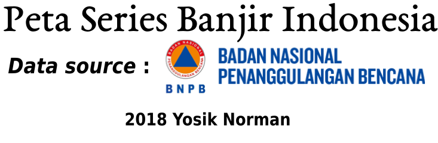

<!DOCTYPE html>
<html>
<head>
<meta charset="utf-8"/>
<script src="banjir_files/htmlwidgets-1.0/htmlwidgets.js"></script>
<script src="banjir_files/jquery-1.12.4/jquery.min.js"></script>
<link href="banjir_files/leaflet-1.3.1/leaflet.css" rel="stylesheet" />
<script src="banjir_files/leaflet-1.3.1/leaflet.js"></script>
<link href="banjir_files/leafletfix-1.0.0/leafletfix.css" rel="stylesheet" />
<script src="banjir_files/Proj4Leaflet-1.0.1/proj4-compressed.js"></script>
<script src="banjir_files/Proj4Leaflet-1.0.1/proj4leaflet.js"></script>
<link href="banjir_files/rstudio_leaflet-1.3.1/rstudio_leaflet.css" rel="stylesheet" />
<script src="banjir_files/leaflet-binding-2.0.0/leaflet.js"></script>
<script src="banjir_files/lfx-webgl-heatmap-0.2.7/lfx-webgl-heatmap-prod.js"></script>
<script src="banjir_files/lfx-webgl-heatmap-0.2.7/lfx-webgl-heatmap-bindings.js"></script>
<link id="lfx-webgl-heatmap-skyline-attachment" rel="attachment" href="banjir_files/lfx-webgl-heatmap-0.2.7/skyline-gradient.png"/>
<link id="lfx-webgl-heatmap-deep-sea-attachment" rel="attachment" href="banjir_files/lfx-webgl-heatmap-0.2.7/deep-sea-gradient.png"/>
<script src="banjir_files/leaflet-providers-1.1.17/leaflet-providers.js"></script>
<script src="banjir_files/leaflet-providers-plugin-2.0.0/leaflet-providers-plugin.js"></script>
<link href="banjir_files/lfx-pulse-icon-0.1.0/lfx-pulse-icon-prod.css" rel="stylesheet" />
<script src="banjir_files/lfx-pulse-icon-0.1.0/lfx-pulse-icon-prod.js"></script>
<script src="banjir_files/lfx-pulse-icon-0.1.0/lfx-pulse-icon-bindings.js"></script>
<link href="banjir_files/leaflet-markercluster-1.0.5/MarkerCluster.css" rel="stylesheet" />
<link href="banjir_files/leaflet-markercluster-1.0.5/MarkerCluster.Default.css" rel="stylesheet" />
<script src="banjir_files/leaflet-markercluster-1.0.5/leaflet.markercluster.js"></script>
<script src="banjir_files/leaflet-markercluster-1.0.5/leaflet.markercluster.freezable.js"></script>
<script src="banjir_files/leaflet-markercluster-1.0.5/leaflet.markercluster.layersupport.js"></script>
  <title>leaflet</title>
</head>
<body style="background-color:white;">
<div id="htmlwidget_container">
  <div id="htmlwidget-8c88b523eea849ac018f" style="width:100%;height:400px;" class="leaflet html-widget"></div>
</div>
<script type="application/json" data-for="htmlwidget-8c88b523eea849ac018f">{"x":{"options":{"crs":{"crsClass":"L.CRS.EPSG3857","code":null,"proj4def":null,"projectedBounds":null,"options":{}}},"calls":[{"method":"addWebGLHeatmap","args":[[[2.89202,116.215],[2.89202,116.215],[-6.92077,107.603],[-5.04724,104.41],[-4.91798,105.02],[-2.4723,104.732],[0,0],[0,0],[-2.99396,115.439],[4.22636,96.9097],[5.07427,95.941],[4.22636,96.9097],[5.45292,95.4778],[4.52241,97.6114],[2.42771,96.2725],[4.22636,96.9097],[4.22636,96.9097],[4.22636,96.9097],[4.22636,96.9097],[4.22636,96.9097],[-3.53434,102.338],[2.19216,99.0525],[-3.21427,104.171],[-3.73481,120.161],[-4.6682,104.007],[0.652303,127.808],[2.19216,99.0525],[0.460249,116.47],[-2.03898,132.968],[0.460249,116.47],[4.15246,96.9766],[1.22975,128.425],[0.652303,127.808],[0.652303,127.808],[0.652303,127.808],[0.652303,127.808],[-1.85404,126.057],[0.652303,127.808],[-7.61514,131.407],[0.652303,127.808],[-3.14248,102.914],[-1.0381,135.98],[-3.34495,140.762],[-6.92077,107.603],[-6.92077,107.603],[-1.33953,127.646],[4.22636,96.9097],[-2.99396,115.439],[-3.5131,104.77],[-3.23088,104.858],[0.460249,116.47],[-1.69859,102.72],[-3.45597,105.219],[0.652303,127.808],[-3.45597,105.219],[-3.45597,105.219],[-3.21427,104.171],[-7.25961,110.201],[0.652303,127.808],[0.652303,127.808],[0.652303,127.808],[0.652303,127.808],[0.460249,116.47],[0.460249,116.47],[0.460249,116.47],[-6.92077,107.603],[0.460249,116.47],[-6.92077,107.603],[-6.92077,107.603],[-6.92077,107.603],[-6.92077,107.603],[0.652303,127.808],[0.652303,127.808],[0.652303,127.808],[-6.92077,107.603],[0.652303,127.808],[2.19216,99.0525],[2.19216,99.0525],[2.19216,99.0525],[2.19216,99.0525],[0.460249,116.47],[0.460249,116.47],[0.460249,116.47],[-6.92077,107.603],[-6.92077,107.603],[-3.34456,104.884],[-3.36594,104.836],[-3.45597,105.219],[-6.92077,107.603],[0.652303,127.808],[0.652303,127.808],[-3.21571,104.66],[0.652303,127.808],[-3.39571,104.834],[-3.39486,104.83],[-3.08979,104.726],[-6.23827,106.976],[-3.36748,104.635],[0.460249,116.47],[-3.73481,120.161],[-3.21427,104.171],[-3.21427,104.171],[-2.99396,115.439],[-2.99396,115.439],[-2.99396,115.439],[3.25872,97.1766],[4.22636,96.9097],[0.460249,116.47],[-3.21427,104.171],[-3.21427,104.171],[-3.21427,104.171],[-3.21427,104.171],[-3.21427,104.171],[-3.21427,104.171],[2.69037,96.1356],[-3.21427,104.171],[-3.2077,103.497],[-3.23983,104.007],[-3.21427,104.171],[-3.21427,104.171],[-3.21427,104.171],[-7.72098,112.734],[-7.72098,112.734],[-3.21427,104.171],[-3.21427,104.171],[-3.21427,104.171],[-3.21427,104.171],[-3.21427,104.171],[-3.21427,104.171],[-3.21427,104.171],[-2.99396,115.439],[0.140012,110.522],[0.460249,116.47],[0.460249,116.47],[0.460249,116.47],[0.460249,116.47],[-3.28008,104.407],[-3.21427,104.171],[-3.21427,104.171],[-3.71142,104.007],[-3.21427,104.171],[-3.2174,104.186],[-3.21427,104.171],[-4.5404,103.078],[-3.53434,102.338],[-3.21427,104.171],[1.34954,124.727],[3.18462,101.536],[-3.21427,104.171],[-7.86906,112.521],[-7.89115,112.564],[-7.85836,112.494],[-0.850341,100.467],[-0.850341,100.467],[-1.60299,113.417],[-3.21427,104.171],[-3.21427,104.171],[-2.78776,102.714],[-3.21427,104.171],[-3.21427,104.171],[-6.19601,105.966],[-6.17511,106.865],[-6.88254,111.073],[0.460249,116.47],[0.460249,116.47],[0.460249,116.47],[0.460249,116.47],[0.460249,116.47],[-3.45597,105.219],[-3.127,103.683],[-3.07234,103.758],[-2.93697,104.065],[-5.10953,104.147],[-6.92077,107.603],[-3.21427,104.171],[-6.72001,111.097],[-3.21427,104.171],[-2.99396,115.439],[-5.04438,104.41],[-6.89586,111.058],[-5.31265,104.32],[-2.99396,115.439],[-3.21666,104.177],[-3.21427,104.171],[-3.21427,104.171],[-3.21427,104.171],[-4.96775,104.317],[-4.96775,104.317],[-3.21427,104.171],[-5.01363,104.419],[-3.21427,104.171],[-3.21427,104.171],[-3.21427,104.171],[-3.21427,104.171],[-3.21427,104.171],[-4.91798,105.02],[-4.67336,138.695],[-3.53434,102.338],[-3.21427,104.171],[-3.21427,104.171],[-2.60956,104.752],[-3.21427,104.171],[-3.21427,104.171],[-3.21427,104.171],[-3.21427,104.171],[-3.21427,104.171],[-3.21427,104.171],[-3.21427,104.171],[-3.21427,104.171],[-3.21427,104.171],[-3.21427,104.171],[-3.21427,104.171],[-3.21427,104.171],[-3.21427,104.171],[-3.21427,104.171],[-3.21427,104.171],[-3.21427,104.171],[-3.21427,104.171],[-3.21427,104.171],[-3.21427,104.171],[0.120863,117.48],[0.460249,116.47],[-7.25961,110.201],[-1.35404,120.255],[-1.35404,120.255],[-1.35404,120.255],[-1.35404,120.255],[-7.13711,111.911],[2.04509,117.362],[-6.89914,110.986],[-1.60299,113.417],[2.19216,99.0525],[2.19216,99.0525],[2.19216,99.0525],[3.56637,98.6867],[3.55436,98.7001],[2.19216,99.0525],[3.53979,98.6572],[3.5952,98.6722],[2.19216,99.0525],[2.19216,99.0525],[-6.74867,111.038],[-6.74867,111.038],[-6.89947,110.924],[-0.850341,100.467],[-6.74496,111.046],[-6.74496,111.046],[-6.74496,111.046],[-6.74867,111.038],[-6.74867,111.038],[0.652303,127.808],[-6.74867,111.038],[-6.74867,111.038],[-6.74867,111.038],[-6.74867,111.038],[-6.93372,111.004],[-6.45809,111.032],[-6.77176,111.067],[-6.50659,111.031],[-6.52063,111.055],[-6.754,111.013],[-6.72374,111.042],[-6.667,111.043],[0,0],[-0.831458,100.651],[-7.40312,109.352],[-7.25961,110.201],[-3.73481,120.161],[-6.45667,106.109],[-6.45667,106.109],[-6.45667,106.109],[-0.850341,100.467],[-7.25961,110.201],[-7.25961,110.201],[-7.25961,110.201],[-7.25961,110.201],[2.89202,116.215],[2.89202,116.215],[2.89202,116.215],[-0.788534,100.655],[-0.788534,100.655],[-0.788534,100.655],[-0.788534,100.655],[-0.788534,100.655],[-0.788534,100.655],[-0.788534,100.655],[-0.788534,100.655],[-6.82415,111.184],[-7.25961,110.201],[-7.25961,110.201],[-7.25961,110.201],[-7.25961,110.201],[-7.25961,110.201],[-2.99396,115.439],[0.686854,122.376],[-3.73481,120.161],[-3.73481,120.161],[-3.73481,120.161],[-3.73481,120.161],[-4.67336,138.695],[0.686854,122.376],[-3.73481,120.161],[-3.73481,120.161],[-3.73481,120.161],[-3.73481,120.161],[-6.81212,111.067],[-6.97257,111.456],[-6.99305,110.441],[-6.99305,110.441],[-6.99305,110.441],[-6.99305,110.441],[-7.57295,110.214],[-6.87457,109.044],[-7.25961,110.201],[-7.25961,110.201],[-7.25961,110.201],[-6.72119,111.149],[-7.25961,110.201],[-7.09831,110.912],[-7.25961,110.201],[-7.25961,110.201],[-6.99305,110.441],[-7.53951,110.612],[-7.53951,110.612],[-6.91643,110.166],[-6.91643,110.166],[-6.99305,110.441],[-6.99305,110.441],[-6.99305,110.441],[-6.99305,110.441],[-6.99305,110.441],[0.13923,100.164],[0.13923,100.164],[-0.831458,100.651],[0,0],[0,0],[-6.85619,111.162],[-1.55903,99.1235],[0,0],[-2.06592,99.5826],[-6.87457,109.044],[-6.87457,109.044],[-6.87457,109.044],[0.988698,124.815],[-1.77712,112.532],[2.977,97.5483],[-2.98864,101.542],[-3.89862,119.998],[-3.70239,120.419],[-0.465861,117.172],[-7.23047,109.083],[-4.34952,121.668],[-2.07839,121.251],[-0.476113,117.185],[-6.77111,108.226],[-5.37136,122.707],[-6.32706,106.117],[-6.95585,108.236],[-7.2243,109.001],[-6.5644,106.252],[-6.5644,106.252],[-7.19571,113.513],[-7.38507,107.831],[-1.68149,113.382],[-2.64491,101.434],[-6.94667,106.977],[-2.26904,119.974],[-7.41523,111.833],[-7.32543,109.676],[-6.89043,109.237],[-6.95246,110.31],[-7.21577,109.491],[-7.25808,112.502],[-6.20603,105.967],[-7.61042,111.937],[-7.78708,110.723],[-7.79675,110.709],[-7.6196,111.86],[-7.65055,111.924],[-7.51073,111.305],[2.95722,102.18],[-1.24801,100.642],[-6.95523,112.042],[-7.49385,112.437],[-7.67521,112.846],[-7.62853,112.889],[-6.96247,111.894],[-5.37185,105.26],[-3.93181,121.4],[-8.65293,117.362],[0.575877,116.018],[-7.55988,110.885],[-7.71836,111.678],[-2.55897,106.661],[-0.63261,117.085],[0.533333,123.067],[-7.77978,110.891],[-6.97189,107.613],[0.788174,100.204],[-7.46645,110.119],[-7.2261,112.56],[1.64275,125.105],[-7.02569,109.509],[0.925265,122.492],[0.75,124.42],[-7.4284,110.963],[-6.61648,110.691],[-6.9828,109.557],[0.900896,109.105],[-7.1063,111.991],[0.822419,109.468],[-7.63964,112.872],[-7.14102,112.003],[-7.09622,112.016],[-7.10331,112.203],[-7.75888,111.779],[-4.88095,104.88],[-7.62853,112.889],[-7.41523,111.833],[-7.15432,113.492],[-7.03534,111.636],[-7.92734,113.817],[-7.49551,110.843],[-1.6182,102.369],[-7.63747,112.888],[-7.40368,112.396],[-6.86106,109.16],[1.48158,99.3451],[-7.01468,107.639],[-9.86889,123.774],[-10.0257,123.73],[-9.71546,123.774],[5.28674,95.978],[-7.36026,111.916],[-7.69878,109.692],[-5.14787,119.472],[-6.45553,110.959],[-6.17085,106.851],[-4.44737,119.614],[-6.81191,110.834],[-6.92071,110.51],[-6.87534,109.2],[-9.62515,124.96],[-6.48351,105.888],[-6.5644,106.252],[-6.9132,109.634],[-10.8,123.101],[-7.64387,109.462],[-8.25111,112.694],[0.834828,100.282],[-2.61532,115.521],[-8.4182,116.077],[-7.21977,111.842],[-7.67861,112.876],[-7.63747,112.888],[-8.30638,113.335],[-7.5534,108.695],[-7.5169,108.73],[-3.32002,114.999],[-1.61718,103.616],[1.09255,100.546],[0.925265,122.492],[-7.66303,108.469],[-1.61641,99.1456],[-6.83441,107.225],[-0.958714,115.094],[-3.95221,136.555],[-8.46,118.727],[-7.65175,108.66],[-1.426,98.9245],[-1.61641,99.1456],[-7.55714,108.695],[-7.30763,108.677],[-7.48678,108.807],[-6.84583,107.474],[-7.43348,108.629],[3.29232,97.2437],[5.20985,95.9092],[-7.6046,109.25],[1.14834,101.935],[-7.2261,112.56],[-6.90489,111.991],[-7.15411,111.882],[-6.24529,107.589],[4.23289,98.0029],[4.98836,97.2761],[-7.01468,107.639],[4.80929,97.8923],[-7.68082,109.85],[-7.79875,109.84],[-5.73163,112.646],[-1.11976,119.89],[-7.67994,109.682],[-7.6825,109.869],[-7.38671,107.832],[0.747915,117.567],[-8.51112,118.416],[-8.1688,113.385],[-6.96808,111.881],[-2.72934,118.93],[-7.87831,112.527],[-6.89492,106.179],[-7.4795,109.28],[-7.27656,112.218],[-2.52271,102.026],[-0.239656,99.8348],[-4.4775,102.903],[-6.87462,106.756],[-6.79042,106.78],[2.38773,97.9702],[0.35,101.033],[0.466619,121.056],[5.03489,97.2707],[5.22095,96.3279],[0.0644106,99.6453],[-7.0596,107.545],[-7.07842,107.592],[-1.69878,120.603],[1.4917,124.843],[-6.91486,107.608],[-2.576,101.117],[-6.91486,107.608],[1.04109,100.44],[-4.12267,102.541],[1.19887,99.2148],[4.19909,96.1209],[-0.135232,101.074],[1.24959,97.449],[5.26695,95.2893],[3.6249,97.0176],[3.29232,97.2437],[-0.799722,100.666],[2.90481,99.779],[4.59947,95.9621],[2.35895,97.8722],[3.59217,98.4952],[3.71673,97.6318],[4.2186,97.9103],[3.74535,97.6711],[3.87553,96.5837],[3.17104,97.4598],[3.60666,98.4863],[3.30558,97.9552],[3.29232,97.2437],[3.81468,98.3417],[-0.0320559,100.975],[-3.78421,102.278],[-6.49248,106.558],[0.128875,99.7902],[-0.0572458,109.325],[3.60507,98.4894],[5.18116,97.1413],[0.552435,124.187],[0.574823,123.18],[-6.52941,106.796],[0.405322,123.841],[-2.2136,121.711],[-7.75763,114.293],[-7.65707,107.888],[-8.33472,115.088],[-7.59537,109.255],[-0.819175,120.167],[0,0],[0,0],[-7.30448,108.324],[-7.63932,108.653],[-8.21902,114.369],[0.870301,120.759],[-7.37934,108.078],[-7.35334,108.044],[-7.36037,108.098],[-0.423315,119.835],[-2.24602,119.464],[-4.32484,103.036],[-8.13935,111.696],[0.703695,117.221],[-2.59724,120.804],[-7.19287,106.482],[-6.91972,106.927],[-7.73689,110.105],[-4.70234,123.034],[-4.74434,120.067],[-5.32896,120.311],[-1.26977,116.836],[-7.45303,112.717],[-6.22483,106.869],[-6.30959,106.738],[-1.09876,121.537],[-3.54381,120.965],[0.743237,99.3673],[4.93318,95.4988],[-4.02223,120.067],[-3.60639,120.404],[-2.2236,112.751],[-6.85349,109.142],[-1.72623,103.243],[-7.32849,108.213],[-6.85349,109.142],[0.391364,123.461],[-7.04147,107.763],[-7.17588,107.87],[-3.47202,102.49],[-7.0518,107.746],[-7.69873,113.847],[-7.76862,110.554],[-3.6688,119.974],[-4.66597,120.378],[-1.00265,117.044],[-5.20729,119.951],[-6.61033,106.871],[1.74708,99.8795],[-6.86763,107.269],[3.45177,97.8001],[-6.97189,107.613],[3.26972,97.9184],[-7.45613,107.894],[-7.31367,112.036],[-7.47228,109.831],[-6.99905,107.509],[-7.12699,106.859],[3.26593,97.1771],[-7.66313,112.927],[-7.67461,112.948],[-7.52258,108.362],[-7.18368,113.504],[-7.48006,108.805],[-7.35647,108.68],[-7.61455,111.542],[-7.38172,107.832],[3.41244,97.8667],[-2.08512,113.922],[-7.38265,107.746],[-2.51438,140.69],[-7.31706,110.055],[-7.32851,110.057],[-7.22679,110.542],[-0.116222,117.291],[-7.3165,112.446],[-3.79307,119.641],[-4.3448,119.673],[-1.35802,113.62],[-6.20642,106.614],[-7.11951,112.415],[-7.80249,110.697],[-3.54016,103.096],[-3.70172,102.702],[-4.03767,103.265],[-3.54016,103.096],[-3.03025,120.211],[-6.86315,107.284],[-3.40544,102.854],[-0.454263,111.428],[-0.395657,112.172],[-6.2307,106.883],[-7.38265,107.746],[-1.95293,116.1],[-7.78372,110.864],[-7.76924,110.846],[-3.33333,114.933],[-6.99758,107.849],[-3.79757,103.007],[-3.00298,115.947],[-4.6557,103.365],[-7.63177,112.922],[-4.81339,104.752],[-8.63252,117.594],[-6.95195,107.802],[-7.66908,110.675],[-7.24109,108.297],[-6.93322,113.88],[-6.88464,107.415],[-6.6,106.8],[-7.35703,107.91],[-6.2733,106.869],[-7.46398,110.222],[-7.32795,108.214],[-6.6,106.8],[-6.91486,107.608],[-6.91486,107.608],[-6.91486,107.608],[-6.2733,106.869],[-6.2733,106.869],[-5.45,105.267],[-6.57159,107.759],[-7.62971,111.514],[-6.20876,106.846],[-7.33333,108.35],[-7.74399,113.153],[-7.79582,113.196],[-6.88289,109.67],[-6.86939,109.127],[-7.53632,112.741],[-6.9719,109.612],[-6.88483,109.462],[-7.85997,112.524],[-7.75157,113.632],[-6.92044,114.046],[-6.1481,106.349],[-6.22525,106.698],[-7.12089,113.037],[3.42445,125.622],[-6.9645,110.325],[-7.04461,110.872],[-8.17349,115.129],[1.05821,120.819],[-6.8909,110.642],[-6.75331,108.557],[-7.00956,113.858],[-6.57159,107.759],[-6.8909,110.642],[-6.33737,108.325],[-6.71599,110.627],[-8.31402,116.663],[-6.83258,110.857],[-6.7961,110.913],[-6.88423,109.378],[-6.28648,107.821],[-6.15544,106.625],[-6.5965,106.75],[-6.12185,107.421],[-6.93621,110.489],[-6.91247,113.585],[-6.4,107.783],[-6.95409,110.416],[-6.91969,110.206],[-0.146819,120.019],[-0.59529,119.916],[-6.53409,111.067],[-6.87168,109.571],[-6.88116,109.736],[-6.25829,107.188],[-6.26405,107.033],[0.433583,117.315],[-6.13402,107.417],[-6.09199,106.712],[-6.18612,106.682],[-0.84959,119.621],[-0.0890521,119.893],[-6.44831,110.927],[-7.73618,113.894],[-6.07664,106.429],[1.48558,124.843],[-6.68029,106.782],[-7.07556,111.086],[-6.13576,106.588],[-4.3448,119.673],[-6.9645,110.325],[-1.59667,103.616],[-6.71553,108.564],[-3.01665,129.486],[-3.10882,130.499],[-6.17876,107.066],[-6.20876,106.846],[-1.71753,115.947],[0.581761,120.804],[-2.89133,102.797],[-3.42654,104.612],[-1.50733,101.866],[-1.2593,102.346],[-6.21764,106.892],[-6.24439,106.777],[-6.14233,106.734],[-6.24903,106.997],[-6.38888,106.83],[-6.17831,106.632],[-2.20641,102.851],[-2.17528,101.98],[-6.35241,108.112],[-0.476113,117.185],[-3.46667,114.75],[-0.418079,116.982],[-2.81462,115.497],[0.533333,123.067],[-7.16602,110.915],[-5.51987,133.068],[-5.41724,104.767],[-7.8671,112.524],[0.108531,119.879],[-5.30275,104.566],[-7.20849,113.256],[-7.22532,110.736],[-7.02172,110.963],[1.59851,98.8583],[-7.05103,111.833],[-6.96667,110.417],[-7.5262,111.502],[-4.33031,104.63],[1.86852,98.7261],[-7.86783,111.466],[-7.50162,111.535],[-7.8671,112.524],[-7.5834,112.791],[-7.16667,113.467],[-2.20641,102.851],[-6.98333,108.483],[-7.62414,112.878],[-7.63747,112.888],[-4.80081,105.313],[-8.6719,115.252],[2.37882,99.7374],[5.37041,95.9357],[2.81747,99.6341],[-4.55858,105.407],[-4.59749,105.454],[-9.77774,120.39],[3.86539,98.3088],[-4.82137,105.231],[2.11879,99.543],[-1.72231,100.89],[-2.8153,106.405],[-2.8678,108.143],[4.52241,97.5455],[3.33717,99.0571],[4.48821,98.0258],[0.293347,101.707],[1.04109,100.44],[-0.95,100.353],[-8.46057,118.727],[0.900556,108.98],[-8.19549,113.323],[-6.71879,111.152],[0.990949,120.873],[-6.81653,105.817],[0.53814,123.092],[-7.17324,110.929],[-7.79722,110.369],[-7.78178,110.214],[-7.96844,110.547],[-7.69358,110.096],[-7.71693,109.734],[-7.96665,110.602],[-8.31222,113.329],[-2.55495,140.701],[-7.14365,112.152],[-8.31222,113.329],[-7.15658,112.655],[-5.38063,105.114],[-7.62853,112.889],[-7.1784,113.253],[-7.23739,112.609],[-7.01034,112.458],[-7.42943,108.362],[-4.88095,104.88],[-7.62853,112.889],[-2.72347,111.162],[-6.97649,110.227],[-7.46633,108.799],[-6.94342,107.343],[-8.92929,116.891],[-6.15166,106.152],[-8.59349,116.897],[-6.91768,107.609],[-6.89371,107.432],[-6.57667,106.075],[-7.15503,111.881],[-1.72412,103.244],[-7.13819,111.867],[-8.18386,113.435],[-7.20167,106.954],[-6.89548,112.03],[-7.46814,112.437],[-7.15658,112.655],[-7.19363,112.644],[-5.48265,105.065],[-6.22483,106.869],[-7.96947,110.604],[-7.63855,112.88],[3.33078,99.146],[-6.74622,106.812],[-7.01324,107.642],[-6.61726,106.8],[2.97816,99.2786],[-6.8878,112.033],[-7.04306,113.891],[-6.9202,107.538],[-3.48109,135.341],[-7.65694,111.673],[0.543568,101.432],[0.975186,100.209],[1.70418,101.442],[-8.14445,113.388],[0.193474,100.135],[-7.8671,112.524],[-2.51008,101.651],[-7.57887,112.801],[0.489853,99.2622],[1.05276,124.802],[-0.0179179,109.341],[-7.40194,107.397],[0.423729,109.759],[0.556948,109.375],[-1.70839,103.082],[-7.62716,112.869],[-7.66075,112.901],[-2.05438,119.354],[0,0],[-5.75386,105.146],[1.09492,101.184],[-0.524555,115.781],[-2.76384,114.007],[-5.71199,105.172],[-6.27422,106.808],[-3.45482,102.668],[-3.50874,102.696],[-7.79731,110.368],[-3.65143,102.578],[-6.1752,106.627],[-2.85517,134.324],[-6.27753,106.779],[-6.07664,106.429],[-6.22996,106.867],[-6.25899,106.803],[-3.793,102.329],[-3.42603,102.163],[-6.22483,106.869],[-6.21154,106.845],[-2.10238,106.136],[-0.16277,104.635],[-1.59702,103.616],[-6.9554,110.457],[0.61321,124.478],[-6.16643,106.804],[-6.2733,106.869],[3.58761,98.6771],[-6.26343,106.893],[2.81747,99.6341],[3.58983,98.679],[-7.52043,110.598],[-1.29628,102.204],[3.58405,98.698],[-6.24295,106.85],[-6.26752,106.893],[-0.95098,100.354],[3.38562,99.201],[-6.21154,106.845],[-5.45,105.267],[-6.10953,106.934],[-6.10953,106.934],[4.95944,97.1763],[3.73312,98.4513],[3.5757,98.6705],[-6.2264,106.87],[-6.22139,106.865],[3.58512,98.6756],[-5.45136,105.266],[0.53266,101.449],[-0.95053,100.354],[3.59446,98.4822],[2.41628,99.5361],[-1.76165,121.323],[-2.76696,118.915],[-2.13669,111.262],[4.0338,117.631],[-1.50495,103.799],[1.74656,116.422],[0.91904,116.767],[-3.98054,122.431],[-4.40118,104.084],[0.60355,123.062],[4.062,96.2442],[0.40617,123.662],[-1.47966,112.65],[-2.84429,110.38],[-0.01099,110.8],[-0.90071,100.396],[1.66608,101.45],[-0.57128,117.334],[-0.6317,100.113],[-0.23966,99.8348],[-0.0643,100.204],[-0.0643,100.204],[-0.90771,100.381],[-6.41894,106.838],[-3.66025,128.164],[-3.66005,128.165],[-4.56205,105.412],[-4.27794,138.082],[-3.69403,119.982],[0.53442,123.066],[-3.61029,128.084],[-2.3003,121.537],[-2.30031,121.537],[-7.70505,113.995],[-6.13671,106.924],[-2.98693,117.861],[0.63129,122.831],[-3.97048,122.588],[-3.92009,122.086],[0.78567,121.833],[-3.9735,122.517],[-4.49565,122.906],[-7.69872,113.847],[-6.26889,106.807],[-6.33316,106.78],[-6.93429,110.049],[-6.48351,105.888],[-7.70505,113.995],[-7.09091,107.669],[-6.24307,106.858],[-7.50817,108.81],[-7.50817,108.81],[-8.29283,112.638],[-8.28282,111.594],[-7.20849,113.256],[-7.19304,113.524],[-4.20279,122.447],[-8.26387,123.242],[-8.06667,111.7],[-7.33344,108.352],[-7.23387,112.689],[-3.00698,120.191],[-6.15583,105.856],[-10.0579,120.794],[-2.98693,117.861],[-7.97152,111.446],[-7.70056,108.656],[-9.69727,124.872],[-8.00857,111.462],[-6.14292,106.844],[-4.86409,120.296],[-4.73969,120.034],[-4.04967,121.594],[-0.27552,116.994],[-6.25234,106.928],[-6.68711,111.428],[-7.52382,110.596],[-7.91667,112.017],[-7.51628,112.272],[-6.87724,109.035],[-8.17475,112.534],[-7.02487,112.749],[-6.13999,106.844],[-7.5942,112.786],[-2.74603,121.16],[-2.56428,120.885],[-7.19512,113.513],[-4.71604,120.057],[-7.78724,110.388],[-2.5323,140.715],[-6.97145,107.804],[-3.09264,115.284],[-6.91474,107.61],[-2.71775,120.276],[-5.21951,122.422],[-0.5342,117.136],[-5.46691,122.633],[-5.46691,122.633],[-7.1669,113.466],[-7.2146,113.252],[-7.70973,110.008],[3.58345,98.6743],[-5.20874,120.104],[-6.99936,113.907],[-7.60185,112.776],[-8.79823,117.598],[-6.74169,106.819],[-3.19961,120.295],[-7.54684,112.226],[-4.62228,119.997],[-7.63478,112.816],[-7.61096,112.85],[-7.54684,112.226],[-7.68531,111.916],[-6.86655,109.683],[-6.86655,109.683],[-6.86635,109.61],[-7.60128,111.9],[-7.75693,113.212],[-7.60498,112.775],[-7.76542,112.198],[-8.46057,118.727],[-7.68995,112.842],[-7.63103,111.514],[-3.35441,119.213],[-1.41709,121.322],[-6.88481,109.672],[-6.89916,109.122],[-7.06819,109.677],[-8.55276,114.249],[-7.53242,112.24],[-3.32699,119.366],[-7.89059,112.56],[0.53333,123.067],[-7.09091,107.669],[-0.27878,111.475],[-6.90189,106.352],[0.53333,123.067],[0.53333,123.067],[-2.08077,120.231],[-6.21838,106.87],[-0.15518,116.668],[4.69513,96.7494],[-7.09091,107.669],[4.69513,96.7494],[-0.27878,111.475],[0.73606,121.652],[4.69513,96.7494],[-1.18756,116.561],[-0.95,100.353],[106.764,-6.25442],[-6.22486,106.869],[96.1379,4.56547],[4.69513,96.7494],[4.45427,96.1527],[0.92281,113.275],[4.44568,96.8603],[-0.44116,101.525],[2.27709,97.7777],[4.69513,96.7494],[-7.09091,107.669],[1.57749,99.2786],[0.31784,116.773],[-1.53271,101.08],[-4.57,103.922],[0.8799,99.5937],[-2.025,120.804],[3.08789,99.5116],[3.53535,98.8989],[3.53535,98.8989],[3.53535,98.8989],[2.04204,98.4075],[-2.8989,120.249],[2.03427,117.377],[-2.61144,120.308],[-7.12721,113.066],[-6.90342,111.055],[-3.50657,119.736],[-6.30811,106.808],[-6.17817,106.755],[-7.06827,107.597],[-7.07436,107.584],[-6.77857,110.724],[-1.08707,120.501],[-6.84066,107.503],[-7.03735,110.92],[-6.68767,111.443],[-7.59035,112.795],[-7.16878,113.481],[-6.01514,107.101],[-6.68993,111.444],[-6.9614,107.791],[-6.21633,106.863],[-6.25421,106.767],[-6.18339,106.758],[-6.30338,106.968],[-7.1003,112.228],[-6.99109,107.627],[-7.19198,107.844],[5.13809,97.1475],[-7.57003,112.342],[-7.8905,112.656],[-7.16992,113.242],[-7.10089,112.177],[-7.09263,112.007],[0.14385,116.366],[-1.53653,116.413],[0.66105,117.145],[-0.62269,116.5],[-7.8657,112.524],[-7.0434,107.706],[-7.0486,107.579],[0.38915,120.248],[-0.13367,116.608],[-7.00106,112.453],[-6.7937,110.807],[-7.54846,108.881],[3.6208,125.466],[-6.73832,111.477],[-6.78652,110.65],[-6.76225,110.781],[-7.18979,113.252],[-7.10445,111.857],[-1.41229,119.43],[-3.01886,120.185],[-7.26218,111.928],[-6.99725,107.633],[-6.9571,111.856],[-7.75227,112.934],[-7.56688,111.541],[-7.39056,111.458],[-6.29127,106.004],[-1.43382,98.8055],[-7.39771,111.875],[4.39558,96.241],[3.31285,97.1467],[-1.20806,116.841],[-7.03569,107.799],[-2.29381,111.587],[-8.28216,114.316],[-6.98777,107.85],[-7.21988,110.899],[-1.00979,120.481],[-7.84378,112.52],[-3.67202,102.24],[0.81639,99.5605],[-7.16926,113.24],[-1.62404,103.521],[-2.16705,115.426],[0.84353,122.772],[-7.3172,112.422],[-7.27436,112.489],[-3.39219,138.084],[-7.36044,111.89],[-7.57862,112.803],[-7.32569,111.779],[-7.13032,113.065],[-7.06989,111.239],[-2.54567,140.688],[-0.86746,134.048],[-0.387876,101.334],[-0.814452,102.515],[-7.57658,112.761],[-7.90823,112.765],[-6.86482,110.9],[-6.23367,106.767],[-3.21979,127.878],[-6.43677,110.977],[0.80901,122.446],[-7.63569,111.582],[-7.95307,111.424],[-7.47413,112.457],[-7.39931,112.527],[-8.2482,125.139],[-2.35247,139.608],[-6.97963,110.615],[-7.06972,110.901],[-8.47813,117.48],[-9.45001,120.05],[0.78215,122.864],[-8.02405,110.944],[-1.11024,114.872],[-2.86722,129.054],[-7.57003,112.349],[-7.762,110.367],[0.36392,101.201],[2.94495,99.8],[-0.476361,117.522],[-7.82533,113.507],[0.90301,123.114],[-9.61751,124.933],[3.12393,98.389],[-1.61512,103.743],[-7.0106,112.494],[-8.74826,121.063],[-8.7106,116.919],[-7.70327,113.927],[-3.32973,104.12],[-7.06222,112.01],[-7.10345,112.168],[-6.984,112.453],[-2.20274,113.936],[-7.82273,110.927],[0.8696,99.5324],[-8.71747,121.136],[2.51095,99.9249],[1.44228,124.84],[-1.59275,103.463],[1.5202,99.619],[0.56338,100.095],[0.40014,99.2196],[0.70173,99.0891],[-7.64737,110.463],[-6.90297,106.776],[-6.25201,106.678],[-3.16383,104.779],[-6.39408,106.75],[-4.53467,104.056],[0.33645,110.097],[-5.36207,104.997],[-7.00506,107.614],[-2.5768,114.192],[-1.52143,104.08],[-6.48987,105.801],[-1.70597,103.118],[-1.86083,102.291],[-4.38818,103.272],[-2.40667,102.642],[-2.01347,101.382],[-6.30481,106.972],[-7.00805,113.849],[-7.21028,107.898],[3.21764,99.0702],[1.39006,124.678],[-7.15485,108.197],[-5.39371,105.252],[-2.53037,140.705],[-6.28953,107.282],[-7.82733,113.506],[-10.1053,123.738],[-7.79366,113.977],[-6.17776,106.396],[-6.14764,106.297],[-6.45928,105.94],[-6.37399,106.249],[-6.06369,106.157],[-8.9479,117.224],[-6.45613,106.228],[-0.61797,114.815],[-0.86803,134.049],[-7.74233,110.876],[-5.16027,119.46],[-1.71052,103.208],[-1.47638,103.726],[-8.63703,116.856],[5.18241,96.4687],[5.60834,95.6251],[-7.16468,111.974],[5.42923,95.7268],[-0.6281,100.145],[0.45284,99.4664],[0.52184,123.202],[-6.41672,105.863],[0.17567,100.15],[-7.21194,107.904],[0.65779,97.8346],[1.85362,98.5954],[0.5754,99.1667],[1.07557,97.4755],[-6.87522,109.233],[-6.87649,109.267],[-0.47629,117.151],[-8.52178,118.445],[-1.47492,102.123],[-6.93171,107.639],[-8.71037,116.924],[-6.95471,107.771],[-6.86425,111.356],[-6.27861,106.876],[-6.22121,106.861],[-7.12977,110.38],[-3.12985,104.748],[-6.762,107.01],[-6.08911,105.995],[-3.20496,102.318],[0.5246,123.201],[-1.55214,101.244],[-7.39192,109.047],[-8.5469,116.632],[-0.48906,100.707],[-6.2473,106.488],[-2.97982,114.766],[0.51493,120.698],[-6.93755,106.885],[-1.87083,102.295],[-5.19168,103.93],[4.9615,97.1916],[2.33566,99.7109],[2.77314,99.3134],[-6.21642,106.862],[-0.83287,116.386],[-7.47849,108.794],[-6.99765,107.636],[-6.42525,105.879],[1.42945,98.8351],[0.2889,99.4247],[-2.90721,104.691],[-5.11112,103.972],[4.22324,97.9966],[0.64509,97.743],[-3.7554,102.261],[-3.17321,119.366],[-5.4711,104.406],[-3.78975,102.443],[3.48198,99.14],[0.79236,99.5746],[-3.74684,102.44],[0.76983,122.852],[-0.14214,111.923],[-1.48848,101.063],[-7.22466,107.859],[2.64814,98.4602],[-0.88653,100.839],[-3.83333,136.25],[1.17889,99.5502],[1.08655,99.4],[-1.68358,101.418],[-1.48518,102.438],[-7.52009,109.304],[-2.53573,120.344],[3.31944,99.1522],[-0.96195,100.459],[2.95646,99.0438],[-0.88188,119.873],[-0.94375,120.251],[3.107,97.968],[-3.70838,128.181],[-3.55557,128.43],[-1.90149,138.752],[0.3392,123.468],[3.462,125.543],[-0.91273,100.453],[1.61649,98.8757],[0.52957,123.109],[0.55251,123.065],[2.52395,99.6545],[-3.566,115.456],[-4.11188,114.763],[-3.77839,115.406],[4.98179,97.1799],[-3.90743,120.056],[-3.51839,120.365],[-1.77126,121.712],[-0.94547,117.111],[-3.53805,121.358],[-3.643,127.982],[-3.58607,128.087],[2.95646,99.0764],[-1.4116,120.753],[0.50502,123.272],[-2.60835,120.707],[-2.59943,120.527],[0.56654,122.389],[-2.05949,125.929],[-4.09373,122.997],[-8.75547,118.673],[-1.26899,116.827],[-3.45653,120.361],[-2.60904,120.563],[0.3907,124.108],[3.58045,98.6826],[0.82171,127.354],[-3.84096,121.31],[-7.15744,113.241],[3.814,96.889],[-3.46339,101.975],[-3.08378,102.179],[-6.90502,106.952],[-4.56239,105.311],[3.42613,97.8884],[0.68778,120.837],[-5.05285,104.958],[-4.36558,104.818],[-5.208,104.715],[-6.99603,108.504],[-7.49864,111.548],[-6.94304,108.552],[-6.8995,106.901],[-3.73209,119.537],[-6.44896,107.815],[3.63056,125.469],[-6.21949,106.863],[-6.23775,106.764],[-6.77039,107.177],[-6.15498,106.745],[-6.31722,106.721],[-8.745,118.575],[0.933,122.163],[-6.66887,108.205],[-1.112,120.434],[-8.55,117.562],[-8.262,116.251],[-8.344,116.508],[-3.83333,136.25],[-8.195,115.155],[-8.403,116.083],[-8.257,115.375],[-8.383,122.722],[-2.98693,117.861],[-0.002,99.704],[-8.218,112.419],[-7.569,112.503],[-7.569,108.806],[-8.384,113.648],[0.793,122.809],[-8.609,118.699],[-3.192,135.977],[-3.286,116.212],[-10.077,124.303],[0.704,122.951],[0.911,120.857],[-0.49524,100.042],[-7.212,107.886],[-6.951,106.446],[0.88,99.636],[-6.945,106.484],[5.155,95.882],[-8.207,111.332],[0.01,100.104],[-4.033,103.398],[-6.975,107.615],[-6.017,106.044],[-8.041,111.741],[-7.956,111.438],[-7.122,113.052],[-6.912,109.264],[0.884777,99.606],[-2.582,140.644],[-7.10702,110.921],[-6.73102,108.573],[-6.97366,110.444],[-7.62183,112.777],[-7.66295,112.525],[-7.66191,112.926],[3.34667,98.6035],[-8.61798,117.558],[-7.81305,113.383],[0.526079,121.989],[-1.17556,121.358],[-8.44986,118.82],[5.00085,97.3235],[-6.9798,112.316],[-6.3733,106.251],[-6.76876,111.063],[-7.09022,110.561],[-7.16447,111.401],[5.0107,97.1959],[-0.50896,117.118],[0.58194,110.023],[-7.62623,111.862],[-8.36249,113.765],[-7.13655,113.071],[-8.65926,118.732],[-9.62869,124.951],[-3.20459,114.844],[-7.61382,110.819],[-7.52297,109.705],[0.820652,127.356],[3.72788,98.2416],[-3.3692,114.859],[-1.05072,101.511],[-7.5994,112.83],[5.81589,95.2811],[-6.98965,107.625],[-7.06124,110.583],[0.52195,122.019],[-3.58968,102.603],[-7.29814,111.116],[4.94701,97.4688],[-7.24259,109.949],[3.31895,99.1296],[-8.37679,121.836],[5.13979,96.8651],[1.4476,128.665],[-7.74161,110.849],[-1.47138,119.989],[-6.90791,110.929],[-6.65835,110.812],[4.98863,97.2602],[-7.62819,110.257],[0.108777,101.31],[-7.59659,110.329],[-8.67666,115.201],[-7.22671,107.894],[0.0972768,99.7406],[-1.69672,100.911],[-6.31283,106.802],[-0.891269,119.597],[-7.65637,109.959],[1.25653,125.014],[0.357152,123.422],[-0.0389476,120.002],[0.353185,120.211],[0,0],[0,0],[0,0]],null,null,{"size":10000,"units":"m","opacity":1,"alphaRange":1}]},{"method":"addProviderTiles","args":["Esri",null,null,{"errorTileUrl":"","noWrap":false,"detectRetina":false}]},{"method":"addPulseMarkers","args":[[2.89202,-6.92077,-5.04724,-4.91798,-2.4723,0,0,-2.99396,4.22636,5.07427,4.22636,5.45292,4.52241,2.42771,4.22636,4.22636,4.22636,4.22636,4.22636,-3.53434,2.19216,-3.21427,-3.73481,-4.6682,0.652303,2.19216,0.460249,-2.03898,0.460249,4.15246,1.22975,0.652303,0.652303,0.652303,0.652303,-1.85404,0.652303,-7.61514,0.652303,-3.14248,-1.0381,-3.34495,-6.92077,-6.92077,-1.33953,4.22636,-2.99396,-3.5131,-3.23088,0.460249,-1.69859,-3.45597,0.652303,-3.45597,-3.45597,-3.21427,-7.25961,0.652303,0.652303,0.652303,0.652303,0.460249,0.460249,0.460249,-6.92077,0.460249,-6.92077,-6.92077,-6.92077,-6.92077,0.652303,0.652303,0.652303,-6.92077,0.652303,2.19216,2.19216,2.19216,2.19216,0.460249,0.460249,0.460249,-6.92077,-6.92077,-3.34456,-3.36594,-3.45597,-6.92077,0.652303,0.652303,-3.21571,0.652303,-3.39571,-3.39486,-3.08979,-6.23827,-3.36748,0.460249,-3.73481,-3.21427,-3.21427,-2.99396,-2.99396,-2.99396,3.25872,4.22636,0.460249,-3.21427,-3.21427,-3.21427,-3.21427,-3.21427,-3.21427,2.69037,-3.21427,-3.2077,-3.23983,-3.21427,-3.21427,-3.21427,-7.72098,-7.72098,-3.21427,-3.21427,-3.21427,-3.21427,-3.21427,-3.21427,-3.21427,-2.99396,0.140012,0.460249,0.460249,0.460249,0.460249,-3.28008,-3.21427,-3.21427,-3.71142,-3.21427,-3.2174,-3.21427,-4.5404,-3.53434,-3.21427,1.34954,3.18462,-3.21427,-7.86906,-7.89115,-7.85836,-0.850341,-0.850341,-1.60299,-3.21427,-3.21427,-2.78776,-3.21427,-3.21427,-6.19601,-6.17511,-6.88254,0.460249,0.460249,0.460249,0.460249,0.460249,-3.45597,-3.127,-3.07234,-2.93697,-5.10953,-6.92077,-3.21427,-6.72001,-3.21427,-2.99396,-5.04438,-6.89586,-5.31265,-2.99396,-3.21666,-3.21427,-3.21427,-3.21427,-4.96775,-4.96775,-3.21427,-5.01363,-3.21427,-3.21427,-3.21427,-3.21427,-3.21427,-4.91798,-4.67336,-3.53434,-3.21427,-3.21427,-2.60956,-3.21427,-3.21427,-3.21427,-3.21427,-3.21427,-3.21427,-3.21427,-3.21427,-3.21427,-3.21427,-3.21427,-3.21427,-3.21427,-3.21427,-3.21427,-3.21427,-3.21427,-3.21427,-3.21427,0.120863,0.460249,-7.25961,-1.35404,-1.35404,-1.35404,-1.35404,-7.13711,2.04509,-6.89914,-1.60299,2.19216,2.19216,2.19216,3.56637,3.55436,2.19216,3.53979,3.5952,2.19216,2.19216,-6.74867,-6.74867,-6.89947,-0.850341,-6.74496,-6.74496,-6.74496,-6.74867,-6.74867,0.652303,-6.74867,-6.74867,-6.74867,-6.74867,-6.93372,-6.45809,-6.77176,-6.50659,-6.52063,-6.754,-6.72374,-6.667,0,-0.831458,-7.40312,-7.25961,-3.73481,-6.45667,-6.45667,-6.45667,-0.850341,-7.25961,-7.25961,-7.25961,-7.25961,2.89202,2.89202,2.89202,-0.788534,-0.788534,-0.788534,-0.788534,-0.788534,-0.788534,-0.788534,-0.788534,-6.82415,-7.25961,-7.25961,-7.25961,-7.25961,-7.25961,-2.99396,0.686854,-3.73481,-3.73481,-3.73481,-3.73481,-4.67336,0.686854,-3.73481,-3.73481,-3.73481,-3.73481,-6.81212,-6.97257,-6.99305,-6.99305,-6.99305,-6.99305,-7.57295,-6.87457,-7.25961,-7.25961,-7.25961,-6.72119,-7.25961,-7.09831,-7.25961,-7.25961,-6.99305,-7.53951,-7.53951,-6.91643,-6.91643,-6.99305,-6.99305,-6.99305,-6.99305,-6.99305,0.13923,0.13923,-0.831458,0,0,-6.85619,-1.55903,0,-2.06592,-6.87457,-6.87457,-6.87457,0.988698,-1.77712,2.977,-2.98864,-3.89862,-3.70239,-0.465861,-7.23047,-4.34952,-2.07839,-0.476113,-6.77111,-5.37136,-6.32706,-6.95585,-7.2243,-6.5644,-6.5644,-7.19571,-7.38507,-1.68149,-2.64491,-6.94667,-2.26904,-7.41523,-7.32543,-6.89043,-6.95246,-7.21577,-7.25808,-6.20603,-7.61042,-7.78708,-7.79675,-7.6196,-7.65055,-7.51073,2.95722,-1.24801,-6.95523,-7.49385,-7.67521,-7.62853,-6.96247,-5.37185,-3.93181,-8.65293,0.575877,-7.55988,-7.71836,-2.55897,-0.63261,0.533333,-7.77978,-6.97189,0.788174,-7.46645,-7.2261,1.64275,-7.02569,0.925265,0.75,-7.4284,-6.61648,-6.9828,0.900896,-7.1063,0.822419,-7.63964,-7.14102,-7.09622,-7.10331,-7.75888,-4.88095,-7.62853,-7.41523,-7.15432,-7.03534,-7.92734,-7.49551,-1.6182,-7.63747,-7.40368,-6.86106,1.48158,-7.01468,-9.86889,-10.0257,-9.71546,5.28674,-7.36026,-7.69878,-5.14787,-6.45553,-6.17085,-4.44737,-6.81191,-6.92071,-6.87534,-9.62515,-6.48351,-6.5644,-6.9132,-10.8,-7.64387,-8.25111,0.834828,-2.61532,-8.4182,-7.21977,-7.67861,-7.63747,-8.30638,-7.5534,-7.5169,-3.32002,-1.61718,1.09255,0.925265,-7.66303,-1.61641,-6.83441,-0.958714,-3.95221,-8.46,-7.65175,-1.426,-1.61641,-7.55714,-7.30763,-7.48678,-6.84583,-7.43348,3.29232,5.20985,-7.6046,1.14834,-7.2261,-6.90489,-7.15411,-6.24529,4.23289,4.98836,-7.01468,4.80929,-7.68082,-7.79875,-5.73163,-1.11976,-7.67994,-7.6825,-7.38671,0.747915,-8.51112,-8.1688,-6.96808,-2.72934,-7.87831,-6.89492,-7.4795,-7.27656,-2.52271,-0.239656,-4.4775,-6.87462,-6.79042,2.38773,0.35,0.466619,5.03489,5.22095,0.0644106,-7.0596,-7.07842,-1.69878,1.4917,-6.91486,-2.576,-6.91486,1.04109,-4.12267,1.19887,4.19909,-0.135232,1.24959,5.26695,3.6249,3.29232,-0.799722,2.90481,4.59947,2.35895,3.59217,3.71673,4.2186,3.74535,3.87553,3.17104,3.60666,3.30558,3.29232,3.81468,-0.0320559,-3.78421,-6.49248,0.128875,-0.0572458,3.60507,5.18116,0.552435,0.574823,-6.52941,0.405322,-2.2136,-7.75763,-7.65707,-8.33472,-7.59537,-0.819175,0,0,-7.30448,-7.63932,-8.21902,0.870301,-7.37934,-7.35334,-7.36037,-0.423315,-2.24602,-4.32484,-8.13935,0.703695,-2.59724,-7.19287,-6.91972,-7.73689,-4.70234,-4.74434,-5.32896,-1.26977,-7.45303,-6.22483,-6.30959,-1.09876,-3.54381,0.743237,4.93318,-4.02223,-3.60639,-2.2236,-6.85349,-1.72623,-7.32849,-6.85349,0.391364,-7.04147,-7.17588,-3.47202,-7.0518,-7.69873,-7.76862,-3.6688,-4.66597,-1.00265,-5.20729,-6.61033,1.74708,-6.86763,3.45177,-6.97189,3.26972,-7.45613,-7.31367,-7.47228,-6.99905,-7.12699,3.26593,-7.66313,-7.67461,-7.52258,-7.18368,-7.48006,-7.35647,-7.61455,-7.38172,3.41244,-2.08512,-7.38265,-2.51438,-7.31706,-7.32851,-7.22679,-0.116222,-7.3165,-3.79307,-4.3448,-1.35802,-6.20642,-7.11951,-7.80249,-3.54016,-3.70172,-4.03767,-3.54016,-3.03025,-6.86315,-3.40544,-0.454263,-0.395657,-6.2307,-7.38265,-1.95293,-7.78372,-7.76924,-3.33333,-6.99758,-3.79757,-3.00298,-4.6557,-7.63177,-4.81339,-8.63252,-6.95195,-7.66908,-7.24109,-6.93322,-6.88464,-6.6,-7.35703,-6.2733,-7.46398,-7.32795,-6.6,-6.91486,-6.91486,-6.91486,-6.2733,-6.2733,-5.45,-6.57159,-7.62971,-6.20876,-7.33333,-7.74399,-7.79582,-6.88289,-6.86939,-7.53632,-6.9719,-6.88483,-7.85997,-7.75157,-6.92044,-6.1481,-6.22525,-7.12089,3.42445,-6.9645,-7.04461,-8.17349,1.05821,-6.8909,-6.75331,-7.00956,-6.57159,-6.8909,-6.33737,-6.71599,-8.31402,-6.83258,-6.7961,-6.88423,-6.28648,-6.15544,-6.5965,-6.12185,-6.93621,-6.91247,-6.4,-6.95409,-6.91969,-0.146819,-0.59529,-6.53409,-6.87168,-6.88116,-6.25829,-6.26405,0.433583,-6.13402,-6.09199,-6.18612,-0.84959,-0.0890521,-6.44831,-7.73618,-6.07664,1.48558,-6.68029,-7.07556,-6.13576,-4.3448,-6.9645,-1.59667,-6.71553,-3.01665,-3.10882,-6.17876,-6.20876,-1.71753,0.581761,-2.89133,-3.42654,-1.50733,-1.2593,-6.21764,-6.24439,-6.14233,-6.24903,-6.38888,-6.17831,-2.20641,-2.17528,-6.35241,-0.476113,-3.46667,-0.418079,-2.81462,0.533333,-7.16602,-5.51987,-5.41724,-7.8671,0.108531,-5.30275,-7.20849,-7.22532,-7.02172,1.59851,-7.05103,-6.96667,-7.5262,-4.33031,1.86852,-7.86783,-7.50162,-7.8671,-7.5834,-7.16667,-2.20641,-6.98333,-7.62414,-7.63747,-4.80081,-8.6719,2.37882,5.37041,2.81747,-4.55858,-4.59749,-9.77774,3.86539,-4.82137,2.11879,-1.72231,-2.8153,-2.8678,4.52241,3.33717,4.48821,0.293347,1.04109,-0.95,-8.46057,0.900556,-8.19549,-6.71879,0.990949,-6.81653,0.53814,-7.17324,-7.79722,-7.78178,-7.96844,-7.69358,-7.71693,-7.96665,-8.31222,-2.55495,-7.14365,-8.31222,-7.15658,-5.38063,-7.62853,-7.1784,-7.23739,-7.01034,-7.42943,-4.88095,-7.62853,-2.72347,-6.97649,-7.46633,-6.94342,-8.92929,-6.15166,-8.59349,-6.91768,-6.89371,-6.57667,-7.15503,-1.72412,-7.13819,-8.18386,-7.20167,-6.89548,-7.46814,-7.15658,-7.19363,-5.48265,-6.22483,-7.96947,-7.63855,3.33078,-6.74622,-7.01324,-6.61726,2.97816,-6.8878,-7.04306,-6.9202,-3.48109,-7.65694,0.543568,0.975186,1.70418,-8.14445,0.193474,-7.8671,-2.51008,-7.57887,0.489853,1.05276,-0.0179179,-7.40194,0.423729,0.556948,-1.70839,-7.62716,-7.66075,-2.05438,0,-5.75386,1.09492,-0.524555,-2.76384,-5.71199,-6.27422,-3.45482,-3.50874,-7.79731,-3.65143,-6.1752,-2.85517,-6.27753,-6.07664,-6.22996,-6.25899,-3.793,-3.42603,-6.22483,-6.21154,-2.10238,-0.16277,-1.59702,-6.9554,0.61321,-6.16643,-6.2733,3.58761,-6.26343,2.81747,3.58983,-7.52043,-1.29628,3.58405,-6.24295,-6.26752,-0.95098,3.38562,-6.21154,-5.45,-6.10953,-6.10953,4.95944,3.73312,3.5757,-6.2264,-6.22139,3.58512,-5.45136,0.53266,-0.95053,3.59446,2.41628,-1.76165,-2.76696,-2.13669,4.0338,-1.50495,1.74656,0.91904,-3.98054,-4.40118,0.60355,4.062,0.40617,-1.47966,-2.84429,-0.01099,-0.90071,1.66608,-0.57128,-0.6317,-0.23966,-0.0643,-0.0643,-0.90771,-6.41894,-3.66025,-3.66005,-4.56205,-4.27794,-3.69403,0.53442,-3.61029,-2.3003,-2.30031,-7.70505,-6.13671,-2.98693,0.63129,-3.97048,-3.92009,0.78567,-3.9735,-4.49565,-7.69872,-6.26889,-6.33316,-6.93429,-6.48351,-7.70505,-7.09091,-6.24307,-7.50817,-7.50817,-8.29283,-8.28282,-7.20849,-7.19304,-4.20279,-8.26387,-8.06667,-7.33344,-7.23387,-3.00698,-6.15583,-10.0579,-2.98693,-7.97152,-7.70056,-9.69727,-8.00857,-6.14292,-4.86409,-4.73969,-4.04967,-0.27552,-6.25234,-6.68711,-7.52382,-7.91667,-7.51628,-6.87724,-8.17475,-7.02487,-6.13999,-7.5942,-2.74603,-2.56428,-7.19512,-4.71604,-7.78724,-2.5323,-6.97145,-3.09264,-6.91474,-2.71775,-5.21951,-0.5342,-5.46691,-5.46691,-7.1669,-7.2146,-7.70973,3.58345,-5.20874,-6.99936,-7.60185,-8.79823,-6.74169,-3.19961,-7.54684,-4.62228,-7.63478,-7.61096,-7.54684,-7.68531,-6.86655,-6.86655,-6.86635,-7.60128,-7.75693,-7.60498,-7.76542,-8.46057,-7.68995,-7.63103,-3.35441,-1.41709,-6.88481,-6.89916,-7.06819,-8.55276,-7.53242,-3.32699,-7.89059,0.53333,-7.09091,-0.27878,-6.90189,0.53333,0.53333,-2.08077,-6.21838,-0.15518,4.69513,-7.09091,4.69513,-0.27878,0.73606,4.69513,-1.18756,-0.95,106.764,-6.22486,96.1379,4.69513,4.45427,0.92281,4.44568,-0.44116,2.27709,4.69513,-7.09091,1.57749,0.31784,-1.53271,-4.57,0.8799,-2.025,3.08789,3.53535,3.53535,3.53535,2.04204,-2.8989,2.03427,-2.61144,-7.12721,-6.90342,-3.50657,-6.30811,-6.17817,-7.06827,-7.07436,-6.77857,-1.08707,-6.84066,-7.03735,-6.68767,-7.59035,-7.16878,-6.01514,-6.68993,-6.9614,-6.21633,-6.25421,-6.18339,-6.30338,-7.1003,-6.99109,-7.19198,5.13809,-7.57003,-7.8905,-7.16992,-7.10089,-7.09263,0.14385,-1.53653,0.66105,-0.62269,-7.8657,-7.0434,-7.0486,0.38915,-0.13367,-7.00106,-6.7937,-7.54846,3.6208,-6.73832,-6.78652,-6.76225,-7.18979,-7.10445,-1.41229,-3.01886,-7.26218,-6.99725,-6.9571,-7.75227,-7.56688,-7.39056,-6.29127,-1.43382,-7.39771,4.39558,3.31285,-1.20806,-7.03569,-2.29381,-8.28216,-6.98777,-7.21988,-1.00979,-7.84378,-3.67202,0.81639,-7.16926,-1.62404,-2.16705,0.84353,-7.3172,-7.27436,-3.39219,-7.36044,-7.57862,-7.32569,-7.13032,-7.06989,-2.54567,-0.86746,-0.387876,-0.814452,-7.57658,-7.90823,-6.86482,-6.23367,-3.21979,-6.43677,0.80901,-7.63569,-7.95307,-7.47413,-7.39931,-8.2482,-2.35247,-6.97963,-7.06972,-8.47813,-9.45001,0.78215,-8.02405,-1.11024,-2.86722,-7.57003,-7.762,0.36392,2.94495,-0.476361,-7.82533,0.90301,-9.61751,3.12393,-1.61512,-7.0106,-8.74826,-8.7106,-7.70327,-3.32973,-7.06222,-7.10345,-6.984,-2.20274,-7.82273,0.8696,-8.71747,2.51095,1.44228,-1.59275,1.5202,0.56338,0.40014,0.70173,-7.64737,-6.90297,-6.25201,-3.16383,-6.39408,-4.53467,0.33645,-5.36207,-7.00506,-2.5768,-1.52143,-6.48987,-1.70597,-1.86083,-4.38818,-2.40667,-2.01347,-6.30481,-7.00805,-7.21028,3.21764,1.39006,-7.15485,-5.39371,-2.53037,-6.28953,-7.82733,-10.1053,-7.79366,-6.17776,-6.14764,-6.45928,-6.37399,-6.06369,-8.9479,-6.45613,-0.61797,-0.86803,-7.74233,-5.16027,-1.71052,-1.47638,-8.63703,5.18241,5.60834,-7.16468,5.42923,-0.6281,0.45284,0.52184,-6.41672,0.17567,-7.21194,0.65779,1.85362,0.5754,1.07557,-6.87522,-6.87649,-0.47629,-8.52178,-1.47492,-6.93171,-8.71037,-6.95471,-6.86425,-6.27861,-6.22121,-7.12977,-3.12985,-6.762,-6.08911,-3.20496,0.5246,-1.55214,-7.39192,-8.5469,-0.48906,-6.2473,-2.97982,0.51493,-6.93755,-1.87083,-5.19168,4.9615,2.33566,2.77314,-6.21642,-0.83287,-7.47849,-6.99765,-6.42525,1.42945,0.2889,-2.90721,-5.11112,4.22324,0.64509,-3.7554,-3.17321,-5.4711,-3.78975,3.48198,0.79236,-3.74684,0.76983,-0.14214,-1.48848,-7.22466,2.64814,-0.88653,-3.83333,1.17889,1.08655,-1.68358,-1.48518,-7.52009,-2.53573,3.31944,-0.96195,2.95646,-0.88188,-0.94375,3.107,-3.70838,-3.55557,-1.90149,0.3392,3.462,-0.91273,1.61649,0.52957,0.55251,2.52395,-3.566,-4.11188,-3.77839,4.98179,-3.90743,-3.51839,-1.77126,-0.94547,-3.53805,-3.643,-3.58607,2.95646,-1.4116,0.50502,-2.60835,-2.59943,0.56654,-2.05949,-4.09373,-8.75547,-1.26899,-3.45653,-2.60904,0.3907,3.58045,0.82171,-3.84096,-7.15744,3.814,-3.46339,-3.08378,-6.90502,-4.56239,3.42613,0.68778,-5.05285,-4.36558,-5.208,-6.99603,-7.49864,-6.94304,-6.8995,-3.73209,-6.44896,3.63056,-6.21949,-6.23775,-6.77039,-6.15498,-6.31722,-8.745,0.933,-6.66887,-1.112,-8.55,-8.262,-8.344,-3.83333,-8.195,-8.403,-8.257,-8.383,-2.98693,-0.002,-8.218,-7.569,-7.569,-8.384,0.793,-8.609,-3.192,-3.286,-10.077,0.704,0.911,-0.49524,-7.212,-6.951,0.88,-6.945,5.155,-8.207,0.01,-4.033,-6.975,-6.017,-8.041,-7.956,-7.122,-6.912,0.884777,-2.582,-7.10702,-6.73102,-6.97366,-7.62183,-7.66295,-7.66191,3.34667,-8.61798,-7.81305,0.526079,-1.17556,-8.44986,5.00085,-6.9798,-6.3733,-6.76876,-7.09022,-7.16447,5.0107,-0.50896,0.58194,-7.62623,-8.36249,-7.13655,-8.65926,-9.62869,-3.20459,-7.61382,-7.52297,0.820652,3.72788,-3.3692,-1.05072,-7.5994,5.81589,-6.98965,-7.06124,0.52195,-3.58968,-7.29814,4.94701,-7.24259,3.31895,-8.37679,5.13979,1.4476,-7.74161,-1.47138,-6.90791,-6.65835,4.98863,-7.62819,0.108777,-7.59659,-8.67666,-7.22671,0.0972768,-1.69672,-6.31283,-0.891269,-7.65637,1.25653,0.357152,-0.0389476,0.353185,0,0,0],[116.215,107.603,104.41,105.02,104.732,0,0,115.439,96.9097,95.941,96.9097,95.4778,97.6114,96.2725,96.9097,96.9097,96.9097,96.9097,96.9097,102.338,99.0525,104.171,120.161,104.007,127.808,99.0525,116.47,132.968,116.47,96.9766,128.425,127.808,127.808,127.808,127.808,126.057,127.808,131.407,127.808,102.914,135.98,140.762,107.603,107.603,127.646,96.9097,115.439,104.77,104.858,116.47,102.72,105.219,127.808,105.219,105.219,104.171,110.201,127.808,127.808,127.808,127.808,116.47,116.47,116.47,107.603,116.47,107.603,107.603,107.603,107.603,127.808,127.808,127.808,107.603,127.808,99.0525,99.0525,99.0525,99.0525,116.47,116.47,116.47,107.603,107.603,104.884,104.836,105.219,107.603,127.808,127.808,104.66,127.808,104.834,104.83,104.726,106.976,104.635,116.47,120.161,104.171,104.171,115.439,115.439,115.439,97.1766,96.9097,116.47,104.171,104.171,104.171,104.171,104.171,104.171,96.1356,104.171,103.497,104.007,104.171,104.171,104.171,112.734,112.734,104.171,104.171,104.171,104.171,104.171,104.171,104.171,115.439,110.522,116.47,116.47,116.47,116.47,104.407,104.171,104.171,104.007,104.171,104.186,104.171,103.078,102.338,104.171,124.727,101.536,104.171,112.521,112.564,112.494,100.467,100.467,113.417,104.171,104.171,102.714,104.171,104.171,105.966,106.865,111.073,116.47,116.47,116.47,116.47,116.47,105.219,103.683,103.758,104.065,104.147,107.603,104.171,111.097,104.171,115.439,104.41,111.058,104.32,115.439,104.177,104.171,104.171,104.171,104.317,104.317,104.171,104.419,104.171,104.171,104.171,104.171,104.171,105.02,138.695,102.338,104.171,104.171,104.752,104.171,104.171,104.171,104.171,104.171,104.171,104.171,104.171,104.171,104.171,104.171,104.171,104.171,104.171,104.171,104.171,104.171,104.171,104.171,117.48,116.47,110.201,120.255,120.255,120.255,120.255,111.911,117.362,110.986,113.417,99.0525,99.0525,99.0525,98.6867,98.7001,99.0525,98.6572,98.6722,99.0525,99.0525,111.038,111.038,110.924,100.467,111.046,111.046,111.046,111.038,111.038,127.808,111.038,111.038,111.038,111.038,111.004,111.032,111.067,111.031,111.055,111.013,111.042,111.043,0,100.651,109.352,110.201,120.161,106.109,106.109,106.109,100.467,110.201,110.201,110.201,110.201,116.215,116.215,116.215,100.655,100.655,100.655,100.655,100.655,100.655,100.655,100.655,111.184,110.201,110.201,110.201,110.201,110.201,115.439,122.376,120.161,120.161,120.161,120.161,138.695,122.376,120.161,120.161,120.161,120.161,111.067,111.456,110.441,110.441,110.441,110.441,110.214,109.044,110.201,110.201,110.201,111.149,110.201,110.912,110.201,110.201,110.441,110.612,110.612,110.166,110.166,110.441,110.441,110.441,110.441,110.441,100.164,100.164,100.651,0,0,111.162,99.1235,0,99.5826,109.044,109.044,109.044,124.815,112.532,97.5483,101.542,119.998,120.419,117.172,109.083,121.668,121.251,117.185,108.226,122.707,106.117,108.236,109.001,106.252,106.252,113.513,107.831,113.382,101.434,106.977,119.974,111.833,109.676,109.237,110.31,109.491,112.502,105.967,111.937,110.723,110.709,111.86,111.924,111.305,102.18,100.642,112.042,112.437,112.846,112.889,111.894,105.26,121.4,117.362,116.018,110.885,111.678,106.661,117.085,123.067,110.891,107.613,100.204,110.119,112.56,125.105,109.509,122.492,124.42,110.963,110.691,109.557,109.105,111.991,109.468,112.872,112.003,112.016,112.203,111.779,104.88,112.889,111.833,113.492,111.636,113.817,110.843,102.369,112.888,112.396,109.16,99.3451,107.639,123.774,123.73,123.774,95.978,111.916,109.692,119.472,110.959,106.851,119.614,110.834,110.51,109.2,124.96,105.888,106.252,109.634,123.101,109.462,112.694,100.282,115.521,116.077,111.842,112.876,112.888,113.335,108.695,108.73,114.999,103.616,100.546,122.492,108.469,99.1456,107.225,115.094,136.555,118.727,108.66,98.9245,99.1456,108.695,108.677,108.807,107.474,108.629,97.2437,95.9092,109.25,101.935,112.56,111.991,111.882,107.589,98.0029,97.2761,107.639,97.8923,109.85,109.84,112.646,119.89,109.682,109.869,107.832,117.567,118.416,113.385,111.881,118.93,112.527,106.179,109.28,112.218,102.026,99.8348,102.903,106.756,106.78,97.9702,101.033,121.056,97.2707,96.3279,99.6453,107.545,107.592,120.603,124.843,107.608,101.117,107.608,100.44,102.541,99.2148,96.1209,101.074,97.449,95.2893,97.0176,97.2437,100.666,99.779,95.9621,97.8722,98.4952,97.6318,97.9103,97.6711,96.5837,97.4598,98.4863,97.9552,97.2437,98.3417,100.975,102.278,106.558,99.7902,109.325,98.4894,97.1413,124.187,123.18,106.796,123.841,121.711,114.293,107.888,115.088,109.255,120.167,0,0,108.324,108.653,114.369,120.759,108.078,108.044,108.098,119.835,119.464,103.036,111.696,117.221,120.804,106.482,106.927,110.105,123.034,120.067,120.311,116.836,112.717,106.869,106.738,121.537,120.965,99.3673,95.4988,120.067,120.404,112.751,109.142,103.243,108.213,109.142,123.461,107.763,107.87,102.49,107.746,113.847,110.554,119.974,120.378,117.044,119.951,106.871,99.8795,107.269,97.8001,107.613,97.9184,107.894,112.036,109.831,107.509,106.859,97.1771,112.927,112.948,108.362,113.504,108.805,108.68,111.542,107.832,97.8667,113.922,107.746,140.69,110.055,110.057,110.542,117.291,112.446,119.641,119.673,113.62,106.614,112.415,110.697,103.096,102.702,103.265,103.096,120.211,107.284,102.854,111.428,112.172,106.883,107.746,116.1,110.864,110.846,114.933,107.849,103.007,115.947,103.365,112.922,104.752,117.594,107.802,110.675,108.297,113.88,107.415,106.8,107.91,106.869,110.222,108.214,106.8,107.608,107.608,107.608,106.869,106.869,105.267,107.759,111.514,106.846,108.35,113.153,113.196,109.67,109.127,112.741,109.612,109.462,112.524,113.632,114.046,106.349,106.698,113.037,125.622,110.325,110.872,115.129,120.819,110.642,108.557,113.858,107.759,110.642,108.325,110.627,116.663,110.857,110.913,109.378,107.821,106.625,106.75,107.421,110.489,113.585,107.783,110.416,110.206,120.019,119.916,111.067,109.571,109.736,107.188,107.033,117.315,107.417,106.712,106.682,119.621,119.893,110.927,113.894,106.429,124.843,106.782,111.086,106.588,119.673,110.325,103.616,108.564,129.486,130.499,107.066,106.846,115.947,120.804,102.797,104.612,101.866,102.346,106.892,106.777,106.734,106.997,106.83,106.632,102.851,101.98,108.112,117.185,114.75,116.982,115.497,123.067,110.915,133.068,104.767,112.524,119.879,104.566,113.256,110.736,110.963,98.8583,111.833,110.417,111.502,104.63,98.7261,111.466,111.535,112.524,112.791,113.467,102.851,108.483,112.878,112.888,105.313,115.252,99.7374,95.9357,99.6341,105.407,105.454,120.39,98.3088,105.231,99.543,100.89,106.405,108.143,97.5455,99.0571,98.0258,101.707,100.44,100.353,118.727,108.98,113.323,111.152,120.873,105.817,123.092,110.929,110.369,110.214,110.547,110.096,109.734,110.602,113.329,140.701,112.152,113.329,112.655,105.114,112.889,113.253,112.609,112.458,108.362,104.88,112.889,111.162,110.227,108.799,107.343,116.891,106.152,116.897,107.609,107.432,106.075,111.881,103.244,111.867,113.435,106.954,112.03,112.437,112.655,112.644,105.065,106.869,110.604,112.88,99.146,106.812,107.642,106.8,99.2786,112.033,113.891,107.538,135.341,111.673,101.432,100.209,101.442,113.388,100.135,112.524,101.651,112.801,99.2622,124.802,109.341,107.397,109.759,109.375,103.082,112.869,112.901,119.354,0,105.146,101.184,115.781,114.007,105.172,106.808,102.668,102.696,110.368,102.578,106.627,134.324,106.779,106.429,106.867,106.803,102.329,102.163,106.869,106.845,106.136,104.635,103.616,110.457,124.478,106.804,106.869,98.6771,106.893,99.6341,98.679,110.598,102.204,98.698,106.85,106.893,100.354,99.201,106.845,105.267,106.934,106.934,97.1763,98.4513,98.6705,106.87,106.865,98.6756,105.266,101.449,100.354,98.4822,99.5361,121.323,118.915,111.262,117.631,103.799,116.422,116.767,122.431,104.084,123.062,96.2442,123.662,112.65,110.38,110.8,100.396,101.45,117.334,100.113,99.8348,100.204,100.204,100.381,106.838,128.164,128.165,105.412,138.082,119.982,123.066,128.084,121.537,121.537,113.995,106.924,117.861,122.831,122.588,122.086,121.833,122.517,122.906,113.847,106.807,106.78,110.049,105.888,113.995,107.669,106.858,108.81,108.81,112.638,111.594,113.256,113.524,122.447,123.242,111.7,108.352,112.689,120.191,105.856,120.794,117.861,111.446,108.656,124.872,111.462,106.844,120.296,120.034,121.594,116.994,106.928,111.428,110.596,112.017,112.272,109.035,112.534,112.749,106.844,112.786,121.16,120.885,113.513,120.057,110.388,140.715,107.804,115.284,107.61,120.276,122.422,117.136,122.633,122.633,113.466,113.252,110.008,98.6743,120.104,113.907,112.776,117.598,106.819,120.295,112.226,119.997,112.816,112.85,112.226,111.916,109.683,109.683,109.61,111.9,113.212,112.775,112.198,118.727,112.842,111.514,119.213,121.322,109.672,109.122,109.677,114.249,112.24,119.366,112.56,123.067,107.669,111.475,106.352,123.067,123.067,120.231,106.87,116.668,96.7494,107.669,96.7494,111.475,121.652,96.7494,116.561,100.353,-6.25442,106.869,4.56547,96.7494,96.1527,113.275,96.8603,101.525,97.7777,96.7494,107.669,99.2786,116.773,101.08,103.922,99.5937,120.804,99.5116,98.8989,98.8989,98.8989,98.4075,120.249,117.377,120.308,113.066,111.055,119.736,106.808,106.755,107.597,107.584,110.724,120.501,107.503,110.92,111.443,112.795,113.481,107.101,111.444,107.791,106.863,106.767,106.758,106.968,112.228,107.627,107.844,97.1475,112.342,112.656,113.242,112.177,112.007,116.366,116.413,117.145,116.5,112.524,107.706,107.579,120.248,116.608,112.453,110.807,108.881,125.466,111.477,110.65,110.781,113.252,111.857,119.43,120.185,111.928,107.633,111.856,112.934,111.541,111.458,106.004,98.8055,111.875,96.241,97.1467,116.841,107.799,111.587,114.316,107.85,110.899,120.481,112.52,102.24,99.5605,113.24,103.521,115.426,122.772,112.422,112.489,138.084,111.89,112.803,111.779,113.065,111.239,140.688,134.048,101.334,102.515,112.761,112.765,110.9,106.767,127.878,110.977,122.446,111.582,111.424,112.457,112.527,125.139,139.608,110.615,110.901,117.48,120.05,122.864,110.944,114.872,129.054,112.349,110.367,101.201,99.8,117.522,113.507,123.114,124.933,98.389,103.743,112.494,121.063,116.919,113.927,104.12,112.01,112.168,112.453,113.936,110.927,99.5324,121.136,99.9249,124.84,103.463,99.619,100.095,99.2196,99.0891,110.463,106.776,106.678,104.779,106.75,104.056,110.097,104.997,107.614,114.192,104.08,105.801,103.118,102.291,103.272,102.642,101.382,106.972,113.849,107.898,99.0702,124.678,108.197,105.252,140.705,107.282,113.506,123.738,113.977,106.396,106.297,105.94,106.249,106.157,117.224,106.228,114.815,134.049,110.876,119.46,103.208,103.726,116.856,96.4687,95.6251,111.974,95.7268,100.145,99.4664,123.202,105.863,100.15,107.904,97.8346,98.5954,99.1667,97.4755,109.233,109.267,117.151,118.445,102.123,107.639,116.924,107.771,111.356,106.876,106.861,110.38,104.748,107.01,105.995,102.318,123.201,101.244,109.047,116.632,100.707,106.488,114.766,120.698,106.885,102.295,103.93,97.1916,99.7109,99.3134,106.862,116.386,108.794,107.636,105.879,98.8351,99.4247,104.691,103.972,97.9966,97.743,102.261,119.366,104.406,102.443,99.14,99.5746,102.44,122.852,111.923,101.063,107.859,98.4602,100.839,136.25,99.5502,99.4,101.418,102.438,109.304,120.344,99.1522,100.459,99.0438,119.873,120.251,97.968,128.181,128.43,138.752,123.468,125.543,100.453,98.8757,123.109,123.065,99.6545,115.456,114.763,115.406,97.1799,120.056,120.365,121.712,117.111,121.358,127.982,128.087,99.0764,120.753,123.272,120.707,120.527,122.389,125.929,122.997,118.673,116.827,120.361,120.563,124.108,98.6826,127.354,121.31,113.241,96.889,101.975,102.179,106.952,105.311,97.8884,120.837,104.958,104.818,104.715,108.504,111.548,108.552,106.901,119.537,107.815,125.469,106.863,106.764,107.177,106.745,106.721,118.575,122.163,108.205,120.434,117.562,116.251,116.508,136.25,115.155,116.083,115.375,122.722,117.861,99.704,112.419,112.503,108.806,113.648,122.809,118.699,135.977,116.212,124.303,122.951,120.857,100.042,107.886,106.446,99.636,106.484,95.882,111.332,100.104,103.398,107.615,106.044,111.741,111.438,113.052,109.264,99.606,140.644,110.921,108.573,110.444,112.777,112.525,112.926,98.6035,117.558,113.383,121.989,121.358,118.82,97.3235,112.316,106.251,111.063,110.561,111.401,97.1959,117.118,110.023,111.862,113.765,113.071,118.732,124.951,114.844,110.819,109.705,127.356,98.2416,114.859,101.511,112.83,95.2811,107.625,110.583,122.019,102.603,111.116,97.4688,109.949,99.1296,121.836,96.8651,128.665,110.849,119.989,110.929,110.812,97.2602,110.257,101.31,110.329,115.201,107.894,99.7406,100.911,106.802,119.597,109.959,125.014,123.422,120.002,120.211,0,0,0],{"color":"#ff0000","iconSize":12,"animate":true,"heartbeat":0.5},null,null,{"interactive":true,"draggable":false,"keyboard":true,"title":"","alt":"","zIndexOffset":0,"opacity":1,"riseOnHover":false,"riseOffset":250},["","","","","","","","","","","","","","","","","","","","","","","","","","","","","","","","","","","","","","","","","","","","","","","","","","","","","","","","","","","","","","","","","","","","","","","","","","","","","","","","","","","","","","","","","","","","","","","","","","","","","","","","","","","","","","","","","","","","","","","","","","","","","","","","","","","","","","","","","","","","","","","","","","","","","","","","","","","","","","","","","","","","","","","","","","","","","","","","","","","","","","","","","","","","","","","","","","","","","","","","","","","","","","","","","","","","","","","","","","","","","","","","","","","","","","","","","","","","","","","","","","","","","","","","","","","","","","","","","","","","","","","","","","","","","","","","","","","","","","","","","","","","","","","","","","","","","","","","","","","","","","","","","","","","","","","","","","","","","","","","","","","","","","","","","","","","","","","","","","","","","","","Nihil","125 KK terdampak","Nihil","Nihil","1.103 kk terdampak","7 kk/25 jiwa mengungsi di rumah kosong warga","1 orang meninggal dunia (MD) a.n. Ali Setiawan (laki-laki) 9 tahun.","Nihil","","Nihil","Nihil","1 orang MD an. Tata 25 th","Nihil","- Kec. Munjul 837 KK terdampak\r\n- Kec. Pagelaran: 401 KK terdampak","- 1 Orang MD\r\n- 1 Orang Masih dalam pencarian","Nihil","Nihil","Nihil","Nihil","- 1200 Jiwa terdampak","Nihil","123 warga terisolir","1 Orang (LR) a/n Ibu Ati/P/52 thn","- 1200 KK terdampak\r\n- 19 KK/93 Jiwa mengungsi diberingin jaya\r\n- 20 KK mengungsi di Ds. Limbong Wara","- Ds. Senganten 40 KK terdampak\r\n- Ds. Pragelan 50 KK terdampak\r\n- Dsn. Gudo 4 KK terdampak","11 KK / 36 Jiwa terdampak diungsikan ke PAUD Amani di desa Cijenggung.","Nihil","Nihil","Nihil","Nihil","Nihil","Nihil","Nihil.","Nihil.","1 korban luka ringan an. Siswati/37 th.","Nihil","2 orang anak hanyut sudah ditemukan dalam kondisi baik","2.581 kk/7.232 jiwa terdampak","300 kk terdampak","Nihil","Nihil","Nihil","Nihil.","2.581 kk/7.232 jiwa terdampak","Nihil","Nihil","1170 KK Terdampak.","Korban Jiwa :\r\nKec. Ma Muntai. KK 946 /Jw 3281,Kec. Ma Kaman. KK 1425/jw 6644, Kec. Kenohan.    KK 88.  /Jw 244, Kec. Ma Wis. KK 620 / jw 1691","33 KK/136 Jiwa Mengungsi","2 orang nenek hanyut an. Badriyah (80th / P) dan Budiman (55 th / P)","128 KK terdampak","12 KK / 40 Jiwa terdampak","92 KK / 212 jiwa terdampak","Ds. Gementar : 17 KK / 30 Jiwa mengungsi. Ds. Singodutan : 5 KK terdampak","Gd. Inkanas : 50 KK / 179 Jiwa mengungsi. Gor Kel. Baleendah : 38 KK / 140 Jiwa mengungsi","*Dsn. Pawan Hulu : 115 KK / 460 Jiwa terdampak\r\n*Dsn. Pawan Hilir : 130 KK / 650 Jiwa terdampak","Nihil","Kec. Benjeng : 1520 KK / 4432 Jiwa terdampak. Kec. Cerme : 1880 KK / 5145 Jiwa terdampak. 3 orang (MD) an. Sutrisno (L/16 th). Toni (L/17 th), Heni (L/17 th)","350 KK/ 600 Jiwa  mengungsi","Nihil","16 KK / 58 Jiwa terendam","Nihil","Nihil","225 kk terdampak","13 KK / 45 Jiwa mengungsi","Nihil","Nihil","Nihil","Ds. Tambakrejo 1.080 KK terdampak dan Ds. Sukorejo 220 KK terdampak","10 KK terdampak","Nihil","Nihil","Nihil","Nihil","Kel. Karangketug : 800 KK . 2.340 jiwa terdampak, Kel. Randusari : 90 KK / 251 jiwa terdampak, Kel. Krapyakrejo : 200 KK / 585 jiwa mengungsi","Nihil","Nihil","Nihil","Nihil","16 KK mengungsi","Nihil","884 KK / 1.876 Jiwa terdampak","Nihil","50 KK mengungsi","497 KK/ 2.043 Jiwa terisolir","87 KK / 316 Jiwa mengungsi ke GOR Baleendah dan Gd. Inkanas","Ds. Naitae : 207 KK mengungsi di gereja (data sementara)\r\nDs. Tuaku : 31 KK mengungsi di gereja (data sementara)","130 KK terdampak","Nihil","Nihil","Pengungsi (masih dalam pendataan)","75 KK terdampak","417 KK / 1.474 jiwa terdampak","Nihil","Nihil","Kec. Soppeng Riaja : 129 KK / 450 jiwa. Kec. Balusu : 408 KK / 1573 jiwa . Kec. Tanette Rilau: 221 KK / 885 jiwa. Kec. Tanette Riaja : 141 KK / 576 jiwa","Nihil","Nihil","Nihil","Nihil","7 KK didusun paledah terdampak, 100 KK didusun mekarjaya terdampak, 15 KK didusun cibadak terdampak, 73 KK didusun mekarasih terdampak. 450 KK didusun Anggaraksan terdampak","Nihil","Nihil","1 Orang MD a.n. Muktar/L/45 thn","1 orang (MD) an. Kamiyem (P/65 th) dan 2 orang (LB) an. Kamiyo (L/45 th) dan Heri P (L/45 th)","34 KK terdampak","Dsn. Pawan Hilir : 30 KK mengungsi ke rumah tetangga","Nihil","40 KK mengungsi","Masih dalam pendataan","Masih dalam pendataan","Kel. Karangketug : 884 KK terdampak dan Kel. Randusari : 141 KK terdampak","300 KK mengungsi","","Nihil","13.941 Jiwa terdampak","Nihil","Nihil","Nihil","2 KK mengungsi","Assesment","79 KK / 303 jiwa mengungsi","2.600 KK/ 7.800 Jiwa terdampak","4 KK diungsikan","1 Orang (MD) a/n Irfan (L/7 thn)","69 KK terdampak","Assesment","33 KK mengungsi","Nihil","Nihil","119 KK / 834 Jiwa Mengungsi","Nihil","Ds. Sukamulya : 133 KK / 395 jiwa terdampak.\r\nDs. Sidorahayu : 38 KK/ 121 jiwa terdampak.\r\nDs. Purwaraja : 203 KK / 597 jiwa terdampak\r\nDs. Padaringan : 1 KK / 3 jiwa","Nihil","sekitar 2500 Jiwa mengungsi dan tersebar dibeberapa titik","Nihil","Kec. Bukit Batu 27 KK / 97 Jiwa Mengungsi di madrasah","Nihil","Nihil","Nihil","Nihil","sekitar 4.307 KK/17.147 Jiwa terdampak dan mengungsi","336 KK / 1.613 jiwa","Jumlah Pengungsi Kab. Bandung : 4.409 KK / 14.276 Jiwa.","15.264 KK, 73.819 Jiwa","Nihil","Nihil","Nihil","5 orang Luka Ringan (LR)","Nihil","Nihil","- Kec. Cikajang:\r\n *6 KK / 30 Jiwa Mengungsi (Korban yang rumah hanyut) ke rumah tetangga dan balai desa.\r\n *1.179 Jiwa Terdampak, 192 Orang Pelajar SD, 98 Orang Pelajar SLTP, 88 Orang Pelajar SLTA, 135 Balita terdampak\r\n- Kec. Banjarwangi : 300 KK/988 Jiwa terdampak.","979 KK / 2458 Jiwa Terdampak","Nihil","Nihil","Nihil","Nihil","Nihil","Nihil","Nihil","55 kk terdampak","Nihil","Nihil","2 orang anak (LK/13 th) dan (PR/3 Th) (MD)","Nihil","Kel. Cicurug: 1 Orang Luka Ringan an. Lusi 12 Thn dilarikan ke rumah sakit terdekat","*Kec. Gunung Meriah yang Terdampak diantaranya: \r\n - Ds. Silabuan : 75 KK / 298 Jiwa\r\n - Ds. Sidorejo : 70 KK / 291 Jiwa \r\n*Kec. Singkil\r\n - Ds. Pasar Singkil : 465 KK / 2087 Jiwa\r\n - Ds. Siti Ambia : 447 KK / 2025 Jiwa\r\n - Ds. Suka Makmur : 184 KK / 889 Jiwa\r\n - Ds. Kilangan : 386 KK / 1786 Jiwa\r\n - Ds. Ujung : 628 KK / 2540 Jiwa\r\n - Ds. Telu Ambun : 221 KK / 1089 Jiwa\r\n - Ds. Takal Pasir : 165 KK / 644 Jiwa \r\n - Ds. Pea Bumbung : 127 KK / 504 Jiwa\r\n - Ds. Ujung Bawang : 230 KK / 971 Jiwa \r\n - Ds. Selo Aceh : 136 KK / 787 Jiwa\r\n - Ds. Rantau Gedang : 172 KK / 715 Jiwa \r\n*Kec. Singkil Utara\r\n - Ds. Ketapang Indah : 267 KK / 1189 Jiwa","Nihil","- Ds. Tompo Terdampak 66 KK / 270 Jiwa\r\n- Ds. Tulandengi Sibatang 129 KK / 517 Jiwa","1.508 KK / 6.559 Jiwa terdampak","Kurang lebih 200 jiwa mengungsi, namun saat ini sudah kembali ke rumah masing-masing. Kec. Bandar Dua : 1 orang (MD) an. Bpk. Mukhtar (L/ 35 Th)","Nihil","Nihil","Nihil","Nihil","58 KK Terdampak\r\n.","240 KK / 1200 Jiwa Terdampak","- 450 KK mengungsi","5 KK Terdampak","Jumlah pengungsi secara keseluruhan 2.500 Jiwa","Nihil","Nihil","11.966 KK / 46.142 Jiwa (Jumlah pengungsi masih dalam pendataan)","- 132 santri mengungsi","Nihil","Pengungsi Ds.Lamsujin 12 kk/51 jiwa","Kec. Mangging : 115 KK mengungsi","Dalam Pendataan","2.757 kk/10.077 jiwa terdampak","1.500 KK terdampak","*Korban Terdampak Kec. Pasie Raya :\r\n - Ds. Puloe Tinggi : 82 KK / 254 Jiwa \r\n - Ds. Tuwie Kareung: 25 KK / 105 Jiwa \r\n - Ds. Timpleung : 10 KK / 42 Jiwa\r\n - Ds. Tuwie Pria : \r\n - Ds. Pasie Teubee : 45 KK / 160 Jiwa\r\n - Ds. Lhok Guci : 26 KK / 92 Jiwa\r\n\r\n*Korban Terdampak Kec. Teunom :\r\n - Ds. Gampong Baroe : 107 KK / 308 Jiwa. \r\n - Ds. Rambong Payong : 105 KK / 308 Jiwa.\r\n - Ds. Pasie Pawang : 84 / 226 Jiwa.\r\n - Ds. Blang Baroe : 130 KK / 412 Jiwa. \r\n - Ds. Pasie Tulakbala : 74 KK / 258 Jiwa. \r\n - Ds. Panton : 72 KK / 160 Jiwa.\r\n - Ds. Alue Ambang : 35 KK / 107 Jiwa. \r\n - Ds. Pasie Timon : 137 KK / 492 Jiwa. \r\n - Ds. Pasie Gelima : 108 KK / 326 Jiwa.\r\n - Ds. Tupin Ara : 18 KK / 52 Jiwa.\r\n - Ds. Paya baroe : 53 KK / 134 Jiwa.","Nihil","- Kec. Binjai Selatan : Kel. Pujidadi (Lingkungan XV) : 15 KK, Kel. Rambung Barat (Lingkungan II, III) : 48 KK.\r\n- Kec. Binjai Kota : Kel. Setia (Lingkungan I, II, III) : 65 KK.\r\n- Total : 128 KK","Nihil","Nihil","- Nihil","Nihil","Pengungsi (dalam pendataan)","Nihil","Nihil","478 kk terdampak","Nihil","Dalam pendataan","Nihil","Nihil","Nihil","Nihil","Nihil","Nihil","90 Jiwa mengungsi di Balaidesa dan SD Mengkang","- Kec. Suwawa : 84 KK / 229 Jiwa mengungsi\r\n- Kec. Suwawa Timur : 76 KK / 302 Jiwa mengungsi\r\n- Kec. Botupinge: 28 KK / 102 Jiwa mengungsi\r\n- Kec. Bone : 111 KK / 489 Jiwa mengungsi\r\n- Kec. Suwawa Selatan : 30 KK / 125 Jiwa mengungsi","Nihil","Nihil","Nihil","Nihil","Nihil","Nihil","Nihil","123 kk/492 jiwa mengungsi di SD Trans Nelayan","Nihil","Nihil","Nihil","Nihil","Warga yang terdampak 1000 KK di 4 Kelurahan terdampak","Nihil","Nihil","Nihil","Nihil","Nihil","Nihil","Nihil","Nihil","40 KK / 119 Jiwa terdampak","Nihil","Nihil","-Ds.Cibadak 3 Jiwa hilang a.n. Rudi/L/37 thn,Iwan/L/32 thn (Ketua RT),Ugun/L/14 thn, 231 Jiwa mengungsi (68 KK)\r\n-Ds.Neglasari 237 Jiwa/116 KK mengungsi","Nihil","Nihil","1 orang MD an. Nurul/P/45 th","Nihil","1 Orang hilang a.n (Danu /L/13 th) akibat terseret banjir","Nihil","Nihil","Nihil","Nihil","1 orang Meninggal Dunia (MD) an. Ambo Rabbe (L/54 Th)","Nihil","Nihil","* Pengungsi di Kec. Belawah Ds. Wette 103 KK mengungsi ke rumah kerabat yang aman/tidak terdampak.\r\n* 2 orang Meninggal Dunia(MD) An (Erwin/17/L) Anak dari Bpk. Nyompa dan (Sakka/40/L)","Nihil","Nihil","Nihil","Nihil","Nihil","Nihil","Nihil","- Ds. Sukamaju terdampak 115 kk/400 jiwa\r\n- Ds. Majalaya terdampak 360 kk/600 jiwa\r\n- Ds. Majasetra terdampak 90 kk/150 jiwa\r\n- Ds. Majakerta terdampak 55kk/90 jiwa","Nihil","Nihil","Nihil","Nihil","Nihil","Nihil","Nihil","165 KK terdampak","Nihil","6 kk/ 21 jiwa terdampak","Nihil","Nihil","Nihil","1 Orang (MD)  a.n Hj. Dedeh dan  4 Orang (LR)","Nihil","Nihil","Nihil","Nihil","2 kk/6 jiwa terdampak","Nihil","Nihil","Nihil","Nihil","Nihil","Nihil","47 KK mengungsi","47 KK mengungsi","Nihil","Nihil","Nihil","Nihil","1 Orang (MD)","Nihil","Nihi","Nihil","- Nihil","825 KK/2.885 Jiwa terdampak","Nihil","Nihil","Nihil","Nihil","Nihil","Nihil","Nihil","Nihil","Nihil","Nihil","Nihil","Nihil","Nihil","Nihil","Nihil","32 KK  mengungsi ke rumah Kepala Dusun","- 650 jiwa mengungsi di 2 lokasi pengungsian\r\n- 1.148 kk/4.054 jiwa terdampak","161 KK terdampak","31 KK terdampak","Pengungsi 300 jiwa tersebar di 5 titik","Nihil","8.968 Jiwa terdampak","12 Kk/ 43 Jiwa","2 Orang (MD)","Nihil","2 orang (MD)","Nihil","Nihil","Nihil","Nihil","Nihil","Nihil","Nihil","- Di Kp. Kesbang, 3 KK / 8 Jiwa mengungsi\r\n- Di Kp. Cipeundeuy, 2 Jiwa mengungsi\r\n- Kp. Cikuda, 3 Jiwa mengungsi","- 5 KK/21 Jiwa","Nihil","nihil","nihil","nihil","nihil","nihil","- 25 jiwa mengungsi","- Kec. Baleendah \r\n= Gd. Relawan terdapat 19 KK/89 Jiwa (2 Manula dan 7 Balita).\r\n= GOR Kel. Baleendah (Masih dalam pendataan)\r\n= Rusunawa 20 KK\r\n\r\n-Kec. Bojongsoang\r\n= Gudang Tanggo 20 KK.\r\n= Kec. Dayeuhkolot\r\n= SMP Binanegara KL. 20 KK\r\n= Kantor Kecamatan (Masih dalam pendataan)\r\n= Kantor Koramil Dayeuhkolot (Masih dalam pendataan)","- Terdampak :sebanyak 39 KK /141 Jiwa dengan rincian sbb : \r\n- RW.06\r\n- RT. 001(40 KK/120 Jiwa)\r\n- RT. 003(21 KK/76 Jiwa)\r\n- RT. 004(25 KK/100 Jiwa)\r\n- RW.07\r\n- RT. 001(5 KK/15 Jiwa)\r\n- RT. 006(33 KK/110 Jiwa)\r\n- RT. 007(3 KK/12 Jiwa)\r\n- RT. 008(10 KK/40 Jiwa)\r\n- RT. 012(5 KK/15 Jiwa)\r\n= RW.015\r\n-RT. 001(5 KK/15 Jiwa)\r\n= RW.016\r\n- RT. 008(30 KK/120 Jiwa)\r\n-RT. 010(5 KK/20 Jiwa)","- Terdampak :\r\n     Sebanyak 39 KK /141 Jiwa dengan rincian sbb : \r\n- Rw.6; 17 KK /55 Jiwa\r\n-  Rw 7; 20 kk/79 jiwa\r\n- Rw 16; 2 kk/6 jiwa","nihil","nihil","nihil","- Total pengungsi 283 Jiwa tersebar di 13 lokasi dengan perincian sbb :\r\n&#61692; Jakarta Timur 78 Jiwa tersebar di 9 lokasi\r\n&#61692; Jakarta Selatan Nihil\r\n&#61692; Jakarta Pusat Nihil\r\n&#61692; Jakarta Barat  205 Jiwa di 4 lokasi\r\n&#61692; Jakarta Utara Nihil\r\n- Terdampak :\r\n     Sebanyak 11.393 KK /33.986 Jiwa terdampak dengan rincian sbb ; \r\n&#61692; Jakarta Timur 794 KK /2.241 Jiwa\r\n&#61692;  Jakarta Selatan Nihil\r\n&#61692; Jakarta Pusat  Nihil\r\n&#61692; Jakarta Barat 10.599 KK / 31.745 Jiwa\r\n&#61692; Jakarta Utara Nihil","nihil","Nihil","Nihil","Korban Jiwa\r\n- Nihil\r\nKerugian Materil\r\n- Masih dalam pendataan","Nihil","Nihil","Pengungsi (dalam pendataan)","3.000 jiwa ditempatkan pada 13 titik pengungsian.","1 orang hanyut","Terdampak ;\r\n- Kec. Kredit; Ds. Klatakan 214, Ds. Kendit 99 kk\r\n- Kec. Bungatan; Ds. Selowogo 275 kk\r\n- Kec. Banyuglugur; Ds. Lubawang 58 kk\r\n- Kec. Besuki; Ds. Pesisir 4 kk RB (ROB)\r\n- Kec. Mladingan 5 kk\r\n- Kec. Panarukan; Ds. Paowan 6 kk","Nihil","Nihil","- Kec. Karang Tengah : 1 orang meninggal dunia dan ± 500 - 1000 Jiwa mengungsi\r\n- Kec. Priuk : 1000 Jiwa mengungsi","25 kk dievakuasi ke tempat aman","Dalam pendataan","Nihil","Nihil","62 jiwa mengungsi dan 1 orang hanyut a.n. Komang Ayu (16 Thn).","Kec. Dondo : \r\n- 35 KK di Ds. Pangkung terkena dampak banjir setinggi 1 meter dan 25 KK di Ds. Bambapun terkena setinggi 1 meter","Sudah tidak ada pengungsi","Masih dalam pendataan","Nihil","•\tKec. Pamanukan: 5.269 KK/36.132 jiwa terdampak\r\n•\tKec. Pusaka Jaya: 5.148 KK/36.122 jiwa terdampak\r\n•\tKec. Compreng: 2.800 KK/20.345 jiwa terdampak\r\n•\tKec. Blanakan: 8.772 KK/47.436 jiwa terdampak\r\n•\tKec. Tambakdahan: 3.750 KK/23.340 jiwa terdampak\r\n•\tKec. Sukasari: 5.909 KK/12.797 jiwa terdampak\r\n•\tKec. Legon Kulon: 5.129 KK/8.654 jiwa terdampak\r\n•\tKec. Pabuaran: 495 KK/1.431 jiwa terdampak\r\n•\tKec. Ciasem: 967 KK/1.932 jiwa terdampak","Nihil","•\tKec. Indramayu dan Kec. Balongan: 210 pengungsi\r\n•\tKec. Sindang: 325 pengungsi\r\n•\tKec. Lohbener: 700 pengungsi\r\n•\tKec. Kedokan Bunder: 154 pengungsi\r\n•\tKec. Losarang: 361 pengungsi\r\n•\tKec. Lelea: 415 pengungsi\r\n•\tKec. Cikedung: 425 pengungsi \r\n•\tKec. Anjatan, Kec. Sukra, Kec. Patrol: 852 pengungsi\r\n•\tKec. Haurgeulis dan Kec. Gantar: 510 pengungsi\r\n•\tKec. Kandanghaur dan Kec. Bongas: 2 orang MD, 3 orang masih dalam pencarian, 172 pengungsi\r\n•\tKec. Gabus Wetan: 476 pengungsi","Nihil","•912 Jiwa /232 KK Mengungsi dengan rincian\r\n1. Masjid Malimpu: 219 Jiwa\r\n2. SD Sendongan: 651 Jiwa \r\n3. Masjid Labuh Pandan: 57 Jiwa","Terdampak 578 orang","11 Orang meninggal dunia (MD),1 Orang tertimbun longsor belum diketemukan dan Pengungsi 14.442 Jiwa yang tersebar di 49 titik pengungsian","400 orang mengungsi","7000 jiwa mengungsi (data sementara)","- Perum Nuansa  300 KK\r\n- Ds. Ranca Bango 170 KK\r\n- Kec. Rajeg 1.880 jiwa\r\n- Kec. Kosambi, Kel. Dadap 803 KK\r\n- Ds. Gelam jaya, Perum. Villa Tomang 345 KK\r\n* Kec. Priok, Perum. Mutiara Pluit 250 KK, 900 jiwa\r\n*Pengungsi di Masjid Aljihad 300 org","1 KK / 2 Jiwa terdampak","63.676 KK/182.830 Jiwa mengungsi","Nihil","Nihil","Nihil","Nihil","Nihil","Pengungsi 58 kk/220 jiwa","1 orang hanyut","Nihil","4.000 Jiwa mengungsi yang tersebar di 7 lokasi pengungsian","113 jiwa mengungsi yang tersebar di 3 lokasi pengungsian","600-700 jiwa mengungsi (data sementara)","100 Orang mengungsi","Nihil","- Ds. Kertamukti 345 kk/700 jiwa terdampak\r\n- Ds. Pusaka jaya 54 kk/140 jiwa","Korban Jiwa : 6000 KK terdampak","- Kec. Ciledug terdampak 450 kk\r\n- Kec. Karang tengah 500 kk","Nihil","Nihil","Korban Jiwa : Nihil","Terdampak  (data awal);\r\n- Kec. Kendit; Ds. Klatakan 214, Ds. Kendit 99 kk\r\n- Kec. Bungatan; Ds. Selowogo 275 kk\r\n- Kec. Banyuglugur; Ds. Lubawang 58 kk\r\n- Kec. Besuki; Ds. Pesisir 4 kk RB (ROB)\r\n- Kec. Mladingan 5 kk\r\n- Kec. Panarukan; Ds. Paowan 6 kk","Korban Jiwa : 238 Jiwa Mengungsi ke Kantor Camat","Korban Jiwa: 19 orang MD a.n. :\r\nKota Manado :\r\n• Otniel Tumuoka/L/43 Thn\r\n• Sance Malombot/\r\n• Ventje Tatuli/L/52 Thn\r\n• Feiberd Sjonie Lowing/L/50 Thn\r\n• Muh. Nur Hasan/ Muh. Husein/L/45\r\n• Mat/\r\nKab. Minahasa :\r\n• Sherly Goni/P/40 Thn\r\n• Adrintje Kanoeng/Ice Makanoneng/P/(63/52) Thn\r\n• Lin Rompas Masinggo/P/62 Thn\r\n• Yenni Welan/P/34 Thn\r\n• Buang Lengkong/L/34 Thn\r\n• Nico Runtuwene/L/56\r\nKota Tomohon :\r\n• Alex Vecky Karinda/P/66 Thn\r\n• Jeremia Pantouw/L/9 Thn\r\n• Ronny Sion Moguni/L/55 Thn\r\n• Edoardo Hermawan/ Edo Firmansyah/L/14 Thn\r\n• Dr. Olwin Oroh/P/\r\nKab. Minahasa Utara :\r\n&#61656; Julian Mingkid/L/51 Thn.\r\n2 Hilang a.n. :\r\nKota Manado :\r\n• Daud Daleno/\r\nKota Tomohon :\r\n• Linda Tan/P/\r\nJumlah Pengungsi :\r\n• ± 4000 orang mengungsi dan warga sudah kembali kerumahnya masing masing, 2 orang hilang, 1000 orang terisolir dan 1 orang LB dengan rincian :\r\n• Kota Manado 6 orang MD, 3.000 jiwa mengungsi, 1 orang hanyut belum ditemukan an. Veber Sony Lowing \r\n• Kab. Minahasa Utara 3 Ds terisolir dg penduduk 1000 jiwa\r\n• Kota Tomohon 5 orang MD\r\n• Kabupaten Minahasa 4 orang MD diantaranya\r\n1 orang a.n. Yeni (34 th), 3 lainnya yang MD blm diketahui namanya, 1 orang hilang an. Niko (54 th) dan 1 orang luka berat\r\n• Kab. Minahasa Selatan 100 kk mengungsi akibat banjir","Korban Jiwa: Nihil","Korban Jiwa: Nihil","- Kec. Pasar Kemis terdampak 760 kk\r\n- Kec. Tiga Raksa 560 kk\r\n- Kec. Jambe 320 kk\r\n- Kec. Keronjo 1.165 kk\r\n- Kec. Mauk 602 kk","Nihil","Nihil","Korban Jiwa: Nihil","Korban Jiwa : Nihil","Korban Jiwa : 1200 Jiwa Mengungsi","1200 mengingsi","Nihil","Meninggal Dunia :\r\n- Meninggal Dunia :\r\nsebanyak 26 orang dengan rincian sbb, yaitu :\r\n- Jakarta Timur 12 Orang\r\n- Jakarta Selatan 2 Orang\r\n- Jakarta Pusat  3 Orang\r\n- Jakarta Barat 3 Orang\r\n- Jakarta Utara 6 Orang\r\n\r\nTotal pengungsi  1016  Jiwa tersebar di 11 lokasi dengan perincian sbb :\r\n- Jakarta Timur  816  Jiwa tersebar di 10  lokasi\r\n- Jakarta Selatan 200  Jiwa tersebar di 1  lokasi\r\n- Jakarta Pusat  tidak ada pengungsi\r\n- Jakarta Barat   tidak ada pengungsi\r\n- Jakarta Utara  tidak ada pengungsi","Korban Jiwa :\r\n• Yang terdampak 104 KK/403 Jiwa\r\n• Ds. Jemparing 16 KK/55 Jiwa\r\n• Ds. Briway 2 KK/5 Jiwa\r\n• Ds. Atangpait (Lokasi SPBU) terjadi longsor 1 orang luka","Korban Jiwa : Nihil","Nihil","Nihil","Nihil","Korban Jiwa: Nihil","Meninggal Dunia :\r\nTotal korban meninggal dunia sebanyak 18 orang, yaitu : \r\n- Jakarta Timur 8 Orang\r\n- Jakarta Selatan 1 Orang \r\n- Jakarta Pusat 2 Orang\r\n- Jakarta Barat 2 Orang \r\n- Jakarta Utara 5 Orang \r\nPengungsi :\r\nTotal pengungsi sebanyak 62.900 Jiwa tersebar di 284 lokasi dengan perincian sbb :\r\n- Jakarta Timur 15.637 Jiwa tersebar di 102 lokasi\r\n- Jakarta Selatan 19.062 Jiwa tersebar di 46 lokasi\r\n- Jakarta Pusat 3.624 Jiwa tersebar di 19 lokasi\r\n- Jakarta Barat 19.781 Jiwa tersebar di 83 lokasi\r\n- Jakarta Utara 4.508 Jiwa tersebar di 34 lokasi","Korban Jiwa: 2 Orang Meninggal Dunia a.n Asep (27thn) Kel. Bintaro.\r\nFatimah Nirmala Bin Mulyadi (5thn) Kel. Duri","Nihil","14.069 KK / 51.662 Jiwa terdampak","nihil","- 20.600 KK terdampak","Korban Jiwa: Nihil","Korban Jiwa: Nihil","Nihil","Dalam Pendataan","Nihil","Korban Jiwa :\r\n• Kel. Loa Ipuh : 1163 KK/3.970 Jiwa terdampak\r\n• 65 KK mengungsi\r\n• Kel. Jahab 170 KK terdampak \r\n• Kel. Maluhu 105 KK/349 Jiwa terdampak","Nihil","Nihil","Nihil","153 jiwa mengungsi","± 30 orang diungsikan ditempat yang aman","Nihil.","Nihil","Nihil","Nihil","240 Jiwa mengungsi","-Ds. Ngroto : 100 Jiwa mengungsi\r\n-Ds. Deras : 123 Jiwa mengungsi","- Kec. Pandan ±165 kk \r\n- Kec. Sarudik ± 50 kk\r\n- Kec. Tukka ±125 kk","1 orang MD an. Wineh/55 thn","Nihil","Nihil","9.000 jiwa mengungsi","125 jiwa mengungsi","Nihil","Nihil","Nihil","Nihil","400 KK terdampak","Korban Jiwa: Nihil","Nihil","Ds. Plinggisan 250 KK terdampak banjir dan Ds. Tambakrejo 150 KK terdampak banjir dengan ketinggian air 20 cm - 40 cm","± 200 KK terendam dengan ketinggian air 120 cm","Nihil","Nihil","Kec. Kualuh Selatan; 200 -500 KK terendam air setinggi 50 cm","Nihil","1.721 kk terdampak","Nihil","Korban Jiwa : Nihil","Nihil","nihil","Nihil","Nihil","-Meninggal(1 orang)\r\n-Luka Ringan(2 orang)\r\n-Pengungsi(3.872 jiwa)","-Ds. Deniang : 1 orang meninggal dunia a.n. Sukamna (L/27 th)\r\n- Ds. Deniang Laut : 1 orang hilang a.n. Jauhari (L/39 th)\r\n- Ds. Mapor : 1 orang hilang a.n. Akong (L/57 th)","1 KK terkena dampak","1200 KK terkena dampak (masih dalam pendataan)","97 KK terdampak akibat banjir","Nihil","Nihil","Korban Jiwa : Nihil","Nihil","Nihil","Pengungsi : \r\n- Kec. Singkawang Tengah : 43 KK/293 Jiwa\r\n- Kec. Singkawang Barat : 18 KK /60 Jiwa\r\n- Kec. Singkawang Selatan :20 KK","Korban Jiwa :\r\n- Nihil","Korban Jiwa :\r\n- Nihil","Korban Jiwa :\r\n- 1 Orang (LB) akibat terkena reruntuhan pohon kelapa","Korban Jiwa :\r\n- 2 warga  hilang terseret arus dan masih dalam pencarian, adapun nama-nama korban adalah sbb :\r\n1. Sunarta/41th/L\r\n2. Mr. X (identitas belum diketahui)","Warga yang terdampak Banjir :\r\n- Dsn Mata Puti : 34kk/108 Jiwa\r\n- Dsn. Tangola: 9kk/34 Jiwa\r\n- Dsn. Sukaria: 1 KK/ 3 Jiwa\r\nTotal : 44 KK/ 145 Jiwa","Nihil","Nihil","Nihil","88 jiwa mengungsi","- 4 Orang Meninggal Dunia (MD) yaitu : Wongso Suwito (L/85th), Riyanah (P/48th) dan Siti Aminah (P/8 th), Hadik (L/10th) \r\n- 3617 Jiwa mengungsi di 29 titik, Dengan Rincian Sbb :\r\n\r\n&#61656;Kec. Grabag : 1344 Orang\r\n1.Ds. Banyuyoso : 55 Orang\r\n2.Ds. Ketawang : 43 Orang\r\n3.Ds. Banyuoso 2 : 9 Orang\r\n4.Ds. Penderes: 23 Orang\r\n5.Ds. Wonoenggal : 104 Orang\r\n6.Ds. Tulusrejo : 278 Orang\r\n7.Ds. Rowodadi : 438 Orang\r\n8.Ds. Grabag : 170 Orang\r\n9.Ds. Patutrejo : 224 Orang\r\n\r\n&#61656;\tKec. Butuh: 2273 Orang\r\n1.Taman sari : 241 Orang\r\n2.SAC, Pengungsi : \r\n-Dlangu : 39 Orang\r\n-Androng : 25 Orang\r\n-Tegalgondo : 122 Orang\r\n-Kudungmulyo : 51 Orang\r\n-Sumbersari : 96 Orang\r\n-Langensari : 3 Orang\r\n-Klepu : 1 Orang\r\n3.Wironatan: 173 Orang\r\n4.Klepu : 73 Orang\r\n5.Kedung Mulyo : 96 Orang\r\n6.Mako brimob : 20 Orang\r\n7.Kec. Kutoarjo : 70 Orang\r\n8.Kaliwatubumi : 50 Orang\r\n9.Dlangu : 128 Orang\r\n10.Katerban : 108 Orang\r\n11.Langenrejo : 148 Orang\r\n12.Sumbersari : 123 Orang\r\n13.SD. Pacor : 51 Orang\r\n14.Kendalrejo: 124 Orang\r\n15.Mangunjaya : 106 Orang\r\n16.Tanjunganom: 98 Orang\r\n17.Karanganom : 97 Orang\r\n18.Puskesmas Kutoarjo : 23 Orang\r\n19.Wonoyoso: 102 Orang\r\n20.Polomarto : 105 Orang\r\n\r\nKondisi Mutakhir :\r\n- TMA mencapai 50 cm diantaranya ; Ds. Kedung Mulyo, Ds. Sido Mulyo, Ds. Wonodadi, Ds. Trimulyo, Ds. Sumber Agung, Ds. Bendungan\r\n- Longsor di Ds. Bronjong sudah diatasi dan sekarang dalam kondisi hujan\r\n\r\n- pengungsi sudah kembali kerumah masing-masing","Korban Jiwa:\r\n- Nihil","Korban Jiwa : \r\n- 88 jiwa mengungsi","- 1 orang meninggal dunia (MD)\r\n- Pengungsi :\r\n- Ds. Kraton : 500 pengungsi  di SD Kraton dan 600 an di Masjid  (data sementara).\r\n-Ds. Paseban : 1500 an  mengungsi di Balai Desa dan sebagian di rumah warga (data sementara)","Dalam pendataan.","Korban Jiwa:\r\n- 3 Orang MD \r\n  * Reva Mariska/8Thn/P\r\n  * Maharani Putri/18bln/P\r\n  * Riza Efendi/10Thn/L\r\n- 1,675 Jiwa Mengunsi","Korban Jiwa : \r\n- Nihil","Korban Jiwa :\r\n- Nihil","Korban Jiwa :\r\n- Nihil","Nihil","Nihil","• Kel. Sumberejo 1286 KK\r\n• Kel. Tambak Dono 747 KK\r\n• Kel. Benowo 121 KK","Nihil","Korban Jiwa : \r\n- Nihil","Nihil","Korban Jiwa :\r\n- Nihil","- Dua orang anak terseret banjir\r\n- Satu orang anak Meninggal Dunia","• Nihil","Korban Jiwa : \r\nPengungsi Ds. Sidareja :\r\n- Pengungsi Ds. Sidareja :\r\n- 17 KK, 55 Jiwa, titik pengungsian Aula Koramil Sidareja.\r\nKec. Sidareja, Kab. Cilacap \r\n1. Ds. Sidareja 155 KK dan 35 Ha sawah terendam\r\n2. Ds. Gunungreja 397 KK dan 1,5 Ha sawah terendam\r\n3. Ds. Margasari 15 KK, 5 Ha Sawah dan 8 Ha Kebun terendam\r\n4. Ds. Tegalsari 38 KK, 15 Ha Sawah dan 133 Ha Kebun terendam\r\n5. Ds. Tinggarjaya 55 KK tergenang\r\n6.\tDs. Sidamulya195 KK tergenang.","Korban Jiwa : Nihil","Korban Jiwa: 500 Jiwa mengungsi","Korban Jiwa :\r\n- Nihil","Korban Jiwa : \r\n- Nihil","1 orang meninggal dunia dan 1 orang luka","Nihil","31 KK terdampak","Nihil","Nihil","Korban Jiwa : Nihil","Korban Jiwa : 1 Org meninggal (a.n. adat 12 Thn)","Korban Jiwa: \r\n• Meninggal dunia 1 org (a.n. Otoy 24 thn)\r\n• 1 Org Luka – Luka (a.n. Redy 40 Thn)","Nihil","Nihil","-1 Orang hanyut akibat arus jembatan ngempis Ds. Kelompok Kec.Benjeng","Korban Jiwa : 1 Orang hanyut akibat arus jembatan ngempis Ds. Kelompok Kec. Benjeng (a.n. Kemadi 50 Thn)","Korban Jiwa: Nihil","Nihil","20 KK / 88 Jiwa terdampak dan mengungsi ke gedung sekolah dan rumah warga yang tidak terendam.","- 1 orang warga bernama Rofik  warga Dsn. Karangasem, Kel. Karangketug, Kec. Gadingrejo, Kota Pasuruan, segera dirujuk ke RSUD dr. Soedarsono Kota Pasuruan.\r\n- Kel. Karangketug, Dsn. Karangasem, Rujak Gadung dengan genangan sedalam ± 210 cm. Luas areal tergenang ± 15 RT. Jumlah warga terdampak 1.200 KK\r\n- Kel. Randusari dengan genangan sedalam ± 120 cm. Luas areal tergenang ± 11 RT. Jumlah warga terdampak 800 KK.\r\n- Kel. Krapyakrejo dengan genangan sedalam ± 100 cm. Luas areal tergenang ± 2 RT. Jumlah warga terdampak 180 KK.","Korban Jiwa: Nihil","Nihil","Korban Jiwa : 60 KK / 200 Jiwa terdampak banjir tetapi tidak mengungsi","Korban Jiwa : Terdampak 28 KK/98 Jiwa","120 KK / 495 Jiwa terdampak akibat banjir","Nihil","Nihil","Nihil","Nihil","Nihil","Korban Jiwa : Nihil","Kec. Ujung Batu :  16 KK mengungsi","Nihil","Nihil","2 Orang Hilang a.n :\r\n- Iyet Naswati/23thn/P  telah ditemukan dalam keadaan MD pada tanggal 9 Des 2013\r\n- Anisa Tania/15 thn/P, telah ditemukan dalam keadaan MD pada tanggal 12 Des 2013.","Pengungsi 7 KK / 38 Jiwa","1 orang MD (a.n Azizah/P/7thn)","Korban Jiwa : Nihil","Nihil","1 orang meninggal a.n. Merdi Koindin (43th/L)\r\ndan 1 orang hilang bernama Yanti Bili (11th/P)","- Kec. Mempawah Hilir : 928 KK / 4.140 jiwa mengungsi ke Sebukit Rama.","*Korban Jiwa :\r\n• Ds. Cisaranten, Kec. Cikadu\r\n» 2 orang (MD) a.n Aminah/50th/P dan Asiah/60th /P\r\n» 2 orang (LB) a.n Alwan /25th/L dan Ita/23th/P\r\n» 25 KK, 86 jiwa diungsikan\r\n• Ds. Mekarsari, Kec. Naringgul\r\n» 2 orang (LB) an. Entang/50th/L dan Oyom/50th/L\r\n» 2 orang (LR) an. Cucu/41 thn dan Karmita/80th\r\n• Ds. Kertajadi, Kec. Cidaun\r\n» 2 orang Hilang an. Kusnadi/50th/L dan Karna/72 th/L\r\n• Pengungsi:\r\n» Kec. Cikadu Pengungsi 64 KK / 97 Jiwa.\r\n» Kec. Naringgul Pengungsi 26 KK / 93 Jiwa.\r\n» Kec. Cidaun Pengungsi 58 KK / 304 Jiwa.","- 1 orang bernama Aran (46th/L) warga Ds. Pakhong, Kec. Mempawah Hulu meninggal dunia\r\n- 1 orang hilang terseret arus dan sudah ditemukan","- 1 orang bernama Aran (46th/L) warga Ds. Pakhong, Kec. Mempawah Hulu MD\r\n- Jumlah korban terdampak : Kec. Menjalin : 920 KK, Kec. Mempawah Hulu 2.400 KK, Kec. Menyuke 1.400 KK, Kec. Sompak 192 KK, Kec. Ngabang 5.272 KK\r\n- 1 org hilang terseret arus dan sudah ditemukan. \r\n- Terdapat 20 jiwa yang mengungsi di Posko pengungsian Pesayangan, Ngabang.","Nihil","Nihil","Korban Jiwa : \r\n• 1 orang warga bernama Rofik  warga Dsn. Karangasem, Kel. Karangketug, Kec. Gadingrejo, Kota Pasuruan, segera dirujuk ke RSUD dr. Soedarsono Kota Pasuruan.\r\n• Kel. Karangketug, Dsn. Karangasem, Rujak Gadung dengan genangan sedalam ± 210 cm. Luas areal tergenang ± 15 RT. Jumlah warga terdampak 1.200 KK\r\n• Kel. Randusari dengan genangan sedalam ± 120 cm. Luas areal tergenang ± 11 RT. Jumlah warga terdampak 800 KK.\r\n• Kel. Krapyakrejo dengan genangan sedalam ± 100 cm. Luas areal tergenang ± 2 RT. Jumlah warga terdampak 180 KK.","* Korban Jiwa :\r\n- Kec. Topoyo, Ds. Salolebo, Dsn. Pesamaian, 100 Orang sakit\r\n- Dsn. Salolebo, 37 Orang sakit\r\n- Dsn. Batu Papan, 20 Orang sakit\r\n- Dsn. Batu Dinding, 2 Orang sakit\r\n- Ds. Tapilina, Dsn. Beringin 1 Orang sakit\r\n- Ds. Tobadak IV, Batu Parigi, 1 Orang sakit\r\n- Ds. Tasokko, Dsn. Muhajir, 1 Orang sakit, 4 Orang (MD)","Nihil","Korban Jiwa :\r\n- Nihil","Korban Jiwa :\r\n- 3 kk mengungsi","Nihil","Dalam Pendataan","Nihil","- Nihil","- Terdapat pengungsi sekitar 200 jiwa","Nihil","Nihil","- Nihil","Nihil","Nihil","Nihil","Nihil","Nihil","Nihil","Nihil","1 orang di Kec. Lais hanyut berhasil di evakuasi selamat","Nihil","Nihil","Nihil, yang terdampak :\r\n- Rt. 07/136 kk, \r\n- Rt. 08/156 kk dan\r\n- Rt. 09/138kk","- Nihil","Nihil","Nihil","Nihil","Nihil","Nihil","Nihil","952 KK/2.620 Jiwa terdampak","Pengungsi : Kec. Buntu Pange  1500 KK, Kec. Tinggi Raja 1200 KK, dan Kec. Rahimi 30 KK","Nihil","Nihil","3 Orang tertimbun MD (Wawan 35 thn, Rizal 25 thn, Mutolib, 45 thn)","nihil","65 KK/180 Jiwa terdampak banjir","Nihil","nihil","- Terdapat pengungsi sebanyak 6000 Jiwa /1500 KK","sdf","Nihil","Nihil","Nihil","Total 5.891 KK/25.277 Jiwa terdampak banjir","- Kec. Tanjungpura Yang Terdiri Dari 11 Desa Dan 1 Kelurahan, Jumlah 3914 KK \r\n- Di Kec. Hinai Yang Terdiri Dari 5 Desa, Dengan Jumlah 1821 KK.\r\n- Jumlah seluruh KK dari 2 Kecamatan adalah 5735 KK","Nihil","Korban Terdampak :\r\n- Kel. Kampung Melayu\r\nRw. 01/Rt. 5 (76 KK, 201 jiwa)\r\nRw. 02/Rt. 9 (197 KK, 556 jiwa)\r\nRw. 03/Rt. 14 (349 KK, 1003 jiwa)\r\nRw. 04/Rt. 1 (45 KK, 118 jiwa)\r\nRw. 05/Rt. 1 (34 KK, 134 jiwa)\r\nRw. 07/Rt. 3 (120 KK, 312 jiwa)\r\nRw. 08/Rt. 4 (131 KK, 296 jiwa)\r\nTotal : 952 KK, 2.620 jiwa","Nihil","Nihil","Nihil","Nihil","Nihil","-300 KK terdampak","*Kec. Batang Serangan terdampak:\r\n- Ds. bamban ada 510 KK\r\n- Ds. Karya Jadi 250 KK \r\n- Kel. Batang Serangan 150 KK\r\n- Pengungsi di Masjid Al-Kautsar ada 150 KK\r\n\r\n*Kec. Secanggang:\r\n- Ds. Karang Gading 155 KK\r\n- Ds. Karang Anyer 22 KK\r\n- Ds. Kepala Sungai 147 KK\r\n- Ds. Perkotaan 107 KK\r\n\r\n*Kec. Wampu:\r\n- Ds. Stabat Lama 5 KK\r\n- Ds. Gohor lama 70 KK\r\n- Ds. Mekar Jaya 80 KK\r\n- Ds. Pertumbukan 77 kk\r\n- Ds. Bingai 78 kk\r\n- DS. Sumber Mulyo 70 kk\r\n\r\n*Kec. Padang Tualang:\r\n- Ds. Sukaramai 192 KK\r\n- Ds. Tanjung Tj Selamat 355 KK\r\n\r\n*Kec. Stabat\r\n- Ds. Sidomulyo 230 kk\r\n- Ds. Mangga 150 kk\r\n- Ds. Pantai Gemi 1260 kk\r\n- Ds. Kwala Gumit 343 kk\r\n- Ds. Ara Condong 192 kk\r\n- Ds. Stabat Baru 100 kk\r\n- Ds. Banyumas 112 kk\r\n- Ds. Dendang 125 kk\r\n\r\n*Kec. Selesai\r\n- Ds. Lau Mulgap 32 kk","- Pengungsi 103 kk/429 Jiwa","Nihil","Nihil","Nihil","Nihil.","Korban Jiwa :\r\n• Kec. Sepaku:\r\n• Ds. Suka Raja 215 KK/535 Jiwa.\r\n• Ds. Karang Jinawi 93 KK / 407 Jiwa.\r\n• Ds. Bukit Raya 127 KK / 462 Jiwa.\r\n• Kel. Sepaku 180 KK / 695 Jiwa.","*Korban Jiwa:\r\n-Kel. Sepaku 180 KK / 695 Jiwa\r\n-Kel. Karang Jinawi 87 KK","Nihil","-2 orang Pria (LB)\r\n-1 orang patah tulang (/50th )\r\n-1 orang luka ditangan\r\n(/48th )\r\n-15 KK terkena dampak\r\nNama-nama yang luka-luka:\r\n- M.Nasir/50 thn\r\n- Ronal Teguh/30 thn\r\n- Zidan/ 10 thn\r\n- Salim/ 30 thn","Nihil","- Dewi sanbi (Pr/1,8 thn/Hanyut) Korban dari Kec. Darul Makmur, Ds. Kuta Trineg.\r\n- Kec. Kuala Pesisir: 1) Ds. Langkak: 393 KK/1.417 Jiwa, 2) Lueng Teuku Ben: 152 KK / 535 Jiwa, 3) Ds. Purwodadi: 20 KK / 75 Jiwa, 4) Ds. Kuala Tuha: 85 KK / 340 Jiwa, 5) Ds. Padang Rubek: 45 KK / 180 Jiwa, 6) Ds. Pulo: 95 KK / 394 Jiwa. Jumlah Korban Terdampak: 790 KK / 2941 Jiwa.\r\nUpdate(Kamis, 05/09/2013, Pkl. 15.30 WIB):\r\n- Kec. Kuala: 1) Ds. Lawa Batu: 88 KK / 337 Jiwa, 2) Ds. Kuta Makmur: 10 KK / 37 Jiwa, 3) Ds. Jokja : 48 KK / 132 Jiwa, 4) Ds. Pulo le: 75 KK / 300 Jiwa\r\n- Kec. Tripa Makmur: 1) Ds. Panton Pange: 102 KK/306 Jiwa, 2) Ds. Ujong Krueng: 121 KK / 456 Jiwa, 3) Ds. Mondua: 132 KK / 497 Jiwa, 4) Ds. Neubok Yee PP: 117 KK / 474 Jiwa, 5) Ds. Neubok Yee PK:103 KK / 358 Jiwa, 6) Ds. Pasie Kebeu Dom: 192 KK / 576 Jiwa, 7) Ds. Kabu: 186 KK / 721 Jiwa, 8) Ds. Lueng Kebeu Jagat: 205 KK / 647 Jiwa, 9) Ds. Drien Tujoh: 224 KK / 675 Jiwa, 10) Ds. Babah Lueng: 245 KK / 876 Jiwa, 11) Ds. Kuala Tripa: 141 KK / 397 Jiwa, 12) Ds. Aule le Mameh: 14 KK / 53 Jiwa (Total: 235 KK / 859 Jiwa).","80 KK mengungsi ke rumah yang tidak terendam (Ds. Salongo)","Korban Jiwa :\r\nUpdate 12/9/13 terdampak\r\n• Kec. Antang Kalang 11 Desa (746 kk)\r\n• Kec. Telaga Antang 7 desa (925 kk)\r\n• Kec. Bukit Santui 14 desa (539 kk)\r\n• Kec. Mentaya hulu 14 desa (1949 kk)","Nihil","Nihil","Nihil","Kel. Hulu Kasap, 1 orang hilang an. Faizal / 6 thn","2 orang LR","Nihil","1.077 Jiwa terdampak","1 KK mengungsi ke rumah keluarga,","1 KK mengungsi ke rumah keluarga,","Nihil","Nihil","Korban Jiwa :\r\n- 8 (delapan) orang MD\r\n- 5 (lima) orang hilang\r\n- 10 orang luka-luka\r\n- 9 (Sembilan) rumah hancur\r\n- 30 rumah rusak","Korban Jiwa :\r\n10 orang MD, 5 orang hilang / belum diketemukan. Berikut nama korban MD :\r\n1.Muhammad Man Marasabessy/22th\r\n2.Zekea Peea/6th\r\n3.Heny Kapitan/30th\r\n4.Meyke Kapitan/19th\r\n5.Alexander Dias/56th\r\n6.Yosep Kanisius/30th\r\n7.Marsina Malirafin/30th\r\n8.Rahmat/17th\r\n9.\tJumail/3th\r\n10.Belum teridentifikasi\r\n11.Korban 5 hilang masih dalam pencarian serta pendataan\r\n12.24 orang LB\r\n13.2 orang LR","1 orang hilang berasal dari Ds. Sakamaju","nihil","- 1 orang MD a.n Yuliati Sarifa/ 4 thn\r\n- 30 orang mengungsi","- 4 orang MD (Ds. Ombulo hijau)\r\nPengungsi : \r\n- Jumlah total pengungsi ; 53 KK / 212 jiwa.","- 3 orang hilang dan masih terus dalam pencarian.\r\n- 4 dirawat di Rumah Sakit Inanahil, Desa Negeri Lima.\r\n- 2 orang luka ringan.\r\n- 3.000 jiwa mengungsi.","Kronologis :\r\n- Banjir di Distrik Wanggar disebabkan oleh luapan sungai kali Bumi\r\n- Di Distrik Makimi banjir terjadi karena meluapnya sungai Legare d an air mata air di gunung\r\n\r\nUpaya :\r\n- BPBD setempat sudah meninjau ke lokasi kejadian bencana dengan menggunakan mobil besar / tinggi dari Batalyon 752 Nabire\r\n- Pemda Nabire menetapkan status Tanggap Darurat selama 7 hari (29 Juli 2013 s/d 04 Agustus 2013)\r\n- PEMDA Kab. Nabire melalui BPBD Kab. Nabire telah mendistribusikan bantuan bahan makanan sesuai dengan RAB terlampir namun tidak mencukupi sesuai RAB terlampir\r\n- Menimbun beberapa karung pasir untuk menutupi lubang besar untuk mengantisipasi masuknya air sungai dengan oprit\r\n- Pkl. 11 siang sudah droping bantuan di Kp. Manunggal Jaya menggunakan alat berat (DUM TRUCK) di dorong dgn eskavaktor\r\n- Pkl. 14.00 s/d 18.00 WIT dilakukan pengobatan untuk warga yang diberikan oleh TNI Batalyon 752\r\n\r\nKendala :\r\n- Putusnya hubungan dudukan jembatan Kali Bumi dgn Oprit bertambah lebar dari 4 meter mnjd 14 meter sehingga akses jalan dari kota Nabire ke Distrik Wanggar. Yaro, dan Yaur terputus total\r\nKebutuhan Mendesak :\r\nMakanan sampai 2 minggu kedepan\r\n- Obat-obatan\r\n- Pakaian\r\n- Selimut\r\n- Family Kid\r\n- Air bersih","Nihil","Nihil","Nihil","Nihil","35 KK (109 jiwa) terdampak","1 orang meninggal dunia di Kelurahan Kemaraya, Kec. Kendari Barat bernama Riswandi/L/14thn.","- 1 orang mengalami luka parah (Stroke) di Kec. Pondidalm.\r\n- Pengungsi 144 KK (323 jiwa)","60 KK (304 jiwa) terdampak.","Nihil","Nihil","Nihil","Nihil","Korban Jiwa : \r\n•1 MD  (kesetrum listrik saat menolong orang lain).","Nihil","440 KK terdampak","*Korban Jiwa : \r\n-Dsn. Krajan 125 KK terendam\r\n-Dsn. Tegalmulyo 91KK\r\n-Dsn. Pandansari 36 KK","nihil","Nihil","Terdampak :\r\n- Kec. Sidareja, Ds. Sidareja terdampak 850 KK (2.720 jiwa), Desa Gunungreja 427 KK (1.730 jiwa), Desa Sidamulyo 900 KK (3.600 jiwa)\r\n- Kec. Kedungreja, Desa Rejamulya 102 KK (361 jiwa), Desa Bangunreja 70 KK (121 jiwa), dan Desa Cikelapa 200 KK (450 jiwa).\r\n\r\nPengungsi tersebar dilima titik :\r\n- Aula Koramil Sidareja 25 KK (67 jiwa).\r\n- Ruko Sopoyono 34 KK (103 jiwa).\r\n- Aula Pendopo Kecamatan Sidareja 5 KK (8 jiwa).\r\n- Bale RT Citayem 6 KK (20 jiwa).\r\n- Kec. Gedungreja 5 KK (15 jiwa).","Terdampak :\r\n- Kec. Sidareja, Ds. Sidareja terdampak 850 KK (2.720 jiwa), Desa Gunungreja 427 KK (1.730 jiwa), Desa Sidamulyo 900 KK (3.600 jiwa)\r\n- Kec. Kedungreja, Desa Rejamulya 102 KK (361 jiwa), Desa Bangunreja 70 KK (121 jiwa), dan Desa Cikelapa 200 KK (450 jiwa).\r\n\r\nPengungsi tersebar dilima titik :\r\n- Aula Koramil Sidareja 25 KK (67 jiwa).\r\n- Ruko Sopoyono 34 KK (103 jiwa).\r\n- Aula Pendopo Kecamatan Sidareja 5 KK (8 jiwa).\r\n- Bale RT Citayem 6 KK (20 jiwa).\r\n- Kec. Gedungreja 5 KK (15 jiwa).","1 orang meninggal dunia, bernama Ngatinah/70th/P\r\n\r\nWilayah Terdampak :\r\nKec. Sumber Manjing Wetan, Desa Tambakrejo :\r\n- 38 KK terimbas banjir di RT.05.\r\n- 48 KK terimbas banjir di RT.07.\r\n- 30 KK terimbas banjir di RT.10.\r\n- 58 KK terimbas banjir di RT.12.\r\n\r\nDesa Sitiarjo total 650 KK\r\nDesa Sidoasri masih dalam pendataan.\r\nKec. Gedangan, Desa Sidodadi :\r\n- 49 KK terimbas banjir di RT.13.\r\n- 51 KK terimbas banjir di RT.14A.\r\n- 50 KK terimbas banjir di RT.14B.","Nihil","66 KK/ 205 jiwa mengungsi di Rusunawa Puspa Argo Jemundo, Sidoarjo","Nihil","97 KK di Dusun Lima terkena dampak.","1 orang meninggal dunia bernama Sainudin Gilo Lamablawa/L/60th.","Korban Jiwa :Nihil","Korban Jiwa :Nihil","Nihil","- Kel. Suru Tanga : 50 KK mengungsi\r\n- Kel. Amassangeng : 10 orang mengungsi.","- 22 jiwa mengungsi\r\n- 193 jiwa lainnya terkena dampak","1 org anak MD a.n Doniasel Kahora Ndilu usia 3,5 thn.","- Ds. Lambakara 32 KK terendam\r\n- Ds. Kaliyuda 30 KK\r\n- Ds. Hadakamali 64 KK\r\n- Ds. Wula 27 KK\r\n1 orang anak usia 3,5 th/MD","Nihil","1 orang meninggal dunia bernama Dumas/L/36th asal Perancis","Nihil","Nihil","Nihil","- 1 orang hanyut terbawa arus air bah (Hj. Dahlia/P/24th)\r\n- 2 orang Luka ringan.","1 orang hanyut terbawa arus air bah (Mukhtar/L/43th)","nihil","Korban :\r\nPengungsi berjumlah 109 KK (469 jiwa)","Korban Jiwa:\r\nNihil","Korban Jiwa :\r\n-1 Meninggal Dunia (Daret, 60 Thn)\t\r\n-1 Luka Ringan (Tuminah, 85 Thn)","Korban Jiwa :\r\n3 Orang hanyut di desa guo : 1 Orang MD, 2 Orang Selamat","Korban Jiwa :\r\nNihil","Korban :\r\nNihil","Nihil","- Kec. Mojowarno:\r\nDs. Selorejo 75 KK, Ds. Ringinpitu 35 KK\r\n- Kec. Peterongan: \r\nDs. Peterongan 45 KK.","Korban Jiwa :\r\nNihil.","Korban :\r\nNihil","Korban :\r\nNihil","Korban Jiwa :\r\nNihil","Korban Jiwa :\r\nNihil","Korban :\r\n4.275 KK terendam","2 orang lansia di evakuasi krn rumah dipinggir sungai.\r\n1 orang MD an. Arifuddin/L/65th karena terseret arus.","Nihil","Nihil","Nihil","- 1 orang MD (hanyut) di Kec. Antakan a.n Acung/L/65th","Jumlah pengungsi tgl 13/6/2013. Lokasi pengungsian di Rusunawa.\r\nBlok I (asal pengungsi Kel. Baleendah) 65 kk / 240 jiwa.\r\nBlok II (asal pengungsi Kel. Baleendah) 70 kk / 245 jiwa dengan rincian : 30 Balita, 20 lansia, dan 2 Ibu hamil.\r\nBlok III (asal pengungsi Kel. Andir) 80 kk/324 jiwa dengan rincian : 37 Balita, 37 Lansia, 33 usia SD, 16 usia SMP 16 dan 11 usia SMU.","Korban Jiwa :\r\nNihil","nihil","nihil","nihil","nihil","nihil","nihil","Nihil","Korban Jiwa :\r\n1.206 KK/3.625 jiwa","Korban Jiwa :\r\n1 orang (a.n Taufiq/L/6 tahun) tercebur di sungai Kalamisu","nihil","Korban Jiwa :\r\nNihil","nihil","Korban Jiwa :\r\nNihil","Nihil","Nihil","Korban Jiwa :\r\n1 orang terbawa arus sungai atas nama Ibu Ratnasari/P/30 tahun.\r\nKOndisi Muktahir :\r\nKorban ditemukan warga dalam keadaan meninggal dunia pada tanggal 07-06-2013 pukul 19.00 WITA di Desa Barae, Kec. Mariri, Kec. Wawawo, Kab. Soteng","*Korban Jiwa : Nihil","*Korban Jiwa :\r\nNihil","*Korban Jiwa:\r\nNihil","Nihil","Korban Jiwa:\r\nKec. Pekalongan Timur, Kel. Klego 1.233 Jiwa\r\nKec. Pekalongan Utara, Kel. Kandang Panjang 1.488 Jiwa, Kel. Panjang Wetan 1.555 Jiwa, Kel. Krapiyak Kidul 829 Jiwa, Krapiyak Lor 1.677 Jiwa, Bandengan 1.337 Jiwa, Pabean 431 Jiwa, Panjang Baru 1.703 Jiwa\r\nKec. Pekalongan Barat, Kel. Kramat Sari 232 KK, Kel. Pasir Sari 158 KK","Korban Jiwa:\r\nKec. Pekalongan Timur, Kel. Klego 1.233 Jiwa\r\nKec. Pekalongan Utara, Kel. Kandang Panjang 1.488 Jiwa, Kel. Panjang Wetan 1.555 Jiwa, Kel. Krapiyak Kidul 829 Jiwa, Krapiyak Lor 1.677 Jiwa, Bandengan 1.337 Jiwa, Pabean 431 Jiwa, Panjang Baru 1.703 Jiwa\r\nKec. Pekalongan Barat, Kel. Kramat Sari 232 KK, Kel. Pasir Sari 158 KK","Korban Jiwa:\r\nMasih pendataan","*Korban Jiwa: Nihil","Nihil","Nihil","Korban Jiwa :\r\nNihil","Korban Jiwa :\r\n150 KK mengungsi\r\n1 meninggal dunia","Korban Jiwa :\r\nNihil","nihil","nihil","76 KK/365 Jiwa Mengungsi.","Nihil","nihil","nihil","Korban Jiwa :\r\nNihil","nihil","nihil","Nihil","Kec.Tilango:\r\n-Ilotidea,345 KK 1230 jiwa,mengungsi 17 kk 73 jiwa\r\n-dsa Tenggela,298 kk 1057 jiwa \r\n-Lawonu,420 kk 1662 jiwa \r\n-dulomo,69 kk 249 jiwa,pngsi;15 kk 25 jiwa\r\n-Tilote,424 kk 1614 jiwa,pgsi 2kk 8 jiwa\r\n-Ds.Tabumela,391 kk 1491 jiwa\r\nKec.Talaga Jaya: \r\n-Ds.Hutada,315 kk 1077 jiwa \r\n-Ds.Buhu,197 kk 800 jiwa \r\nKec.Limboto Barat: \r\n-Ds.Haya2,110 kk 536 jiwa\r\n-Ds.0mbulo, 171 kk 660 jiwa \r\n-Ds.Tunggulo,33 kk 101 jiwa \r\nKec.Limboto:\r\n-Kel.Tenilo,310 kk 1074 jiwa\r\n-kel.Bolihuangga,263 kk 1023 jiwa \r\n-kel.kayubulan,213 kk 785 jiwa \r\n-kel.Hunngaluwa,20 kk 96 jiwa \r\nKec.Tabongo:\r\n-desa Limehu 219 KK dan 876 jiwa","-1 orang MD(ibu Mimin/44 Th/P)\r\n-Ds.Cikahuripan 175 KK (620 Jiwa),Ds.Gn. Kramat 19 KK,63 Jiwa(1 MD nama/43th/P,Ds. Gn.Tanjung 9 KK,32 Jiwa,Ds.Wangunsari 11 KK, Cikelat 3 KK 10 Jiwa,Ds.Karangpapak 2 KK 6 Jiwa,2 Jiwa terancam,Ds.Cisolok 25 KK 83 Jiwa.Total:244 KK(853 Jiwa)","Nihil","1 orang MD (a.n ibu mimin/44 th)","-Kec.Bulango Utara: Ds.Tupa 285 kk dan Ds.Kopi 219 kk,desa lain msh dlm pendataan","-Kec.Hulontalangi Kel.Donggata,Tenda & Siendeng ttl data masuk adalah 1.149 KK, 4.351 jiwa untuk banjir,sedangkan erosi 43 KK 94 jiwa.Pengungsi 586 jiwa.\r\n-Kec.Kota Selatan Kel.Biawu,Biawao,Limba U II,Limba U I & Limba B ttl data masuk adalah 3.254 KK 13.572 jiwa untuk banjir, sedangkan erosi nihil.Pengungsi 254 jiwa.\r\n-Kec. Kota Barat Kel.Tenilo,Lekobalo, Buliide,Molosifat W,Dembe I,Piloloda’a & Buladu ttl data masuk adalah 2.442 KK 8.846 jiwa untuk banjir,sedangkan erosi nihil. Pengungsi 1.199 jiwa.\r\n-Kec.Kota Timur Kel.Moodu,Heledulaa Selatan, Heledulaa Utara & Ipilo ttl data masuk adalah 811 KK 959 jiwa untuk banjir, sedangkan erosi nihil.Pengungsi nihil.\r\n-Kec.Dungingi Kel.Huangobotu,Libuo, Tomulabutao,Tomulabutao Selatan,Tuladenggi ttl data masuk adalah 413 KK 1.720 jiwa untuk banjir,sedangkan erosi nihil.Pengungsi 581 jiwa.\r\n-Kec.Kota Tengah Kel.Wumialo,Dulalowo, Dulalowo Timur ttl data masuk adalah 473 KK, 1.367 jiwa untuk banjir,sedangkan erosi nihil.Pengungsi nihil.\r\n-Kec. Sipatana Kel.Tapa,Bulata Da’a Barat, Bulata Da’a Timur,Molosifat U ttl data masuk adalah 144 KK 454 jiwa untuk banjir, sedangkan erosi nihil.Pengungsi 205 jiwa.\r\n-Kec.Dumbo Raya Kel.Bugis,Talumolo ttl data masuk adalah 453 KK 1266 jiwa untuk banjir, sedangkan erosi nihil.Pengungsi nihil.","Korban Jiwa :40 KK (±1.000) terdampak banjir","Korban Jiwa: Nihil","Total Jumlah Pengungsi di 2 titik :\r\n- Gunung Tebalai 67 kk, dengan 303 jiwa\r\n- Benua Lawas 25 kk, dengan 89 jiwa\r\n- total jumlah pengungsi 92 kk, 392 jiwa","6000 KK terkena dampak banjir","77 kk diungsikan (Balae Endah), Masih dalam pendataan (Banjaran)","1.186 kk/ 5.634 jiwa terkena dampak","Nihil","- Dusun bendungan 88 KK, Mengungsi di masjid.\r\n- Dusun Sija 51 KK mengungsi di sekolah","Kec. Kelut 6.630 Jiwa, \r\nKec. Bakongan 70 kk,\r\nKec. Sawang 65 kk terkena dampak","Nihil","Nihil","345 KK (1.252 jiwa) dari kel. Ulujami mengungsi ke Sarana Krida","952 KK (4.120 jiwa) terendam banjir","Korban Jiwa : 15 kk terkena dampak","- 1.768 kk di Kec. Tripa Makmur dan 350 kk/1.508 Jiwa di kec. Kuala Pesisir terendam banjir, 4 kecamatan yang lain masih pendataan.\r\n- Hingga tgl. 14 Mei 2013 pihak BPBD menyatakan bahwa korban jiwa menjadi 1.262 jiwa, 360 KK","15 kk terkena dampak","Nihil","Jiwa : 21 KK mengungsi.","Nihil Korban Jiwa","Korban Jiwa :6000 KK terkena dampak banjir, 3 desa di singkil utara 200KK 1000 jiwa","2000 kk/14.255 Jiwa terkena dampak Banjir","Nihil","2.200 kk Mengungsi kerumah penduduk yang aman dan ke arah bukit yang lebih tinggi","200 KK Terendam Banjir","Nihil","Nihil.","- 6 orang luka ringan.\r\n- 810 orang mengungsi.","439 jiwa mengungsi ke tempat yang lebih tinggi.","33 KK mengungsi","33 KK mengungsi","33 KK mengungsi","33 KK mengungsi","Nihil.","Nihil.","Nihil.","375 KK mengungsi","Nihil","Nihil.","6 orang luka ringan","Nihil","Nihil","4 KK / 14 jiwa terdampak","134 KK / 536 jiwa terdampak","6118 jiwa mengungsi","Nihil","Nihil","Nihil","Nihil.","Nihil.","Nihil.","Nihil.","Nihil","Nihil","952 KK / 2620 jiwa terdampak","104 KK / 371 Jiwa terdampak","20 KK / 106 jiwa terdampak","212 KK / 600 jiwa terdampak","Nihil","Nihil","Nihil","1.128 KK (4.948 jiwa) mengungsi.","Nihil","Nihil","Nihil","Nihil","Nihil","- Nihil.\r\n- Pengungsi sebanyak 1.809 KK (6.207 jiwa)","- Nihil.\r\n- Pengungsi sebanyak 439 KK (1.554 jiwa)","Nihil.","Nihil.","Nihil.","Nihil.","Nihil.","- Nihil.\r\n- 784 orang mengungsi.","Nihil","1 orang meninggal dunia.","1 orang meninggal dunia","- Nihil.\r\n- 12 KK mengungsi.","Nihil.","Nihil.","6.946 KK / 16.526 Jiwa Terdampak","- Nihil.\r\n- 88 KK mengungsi.","Nihil.","1 orang meninggal.","Nihil","Nihil.","- 4 orang meninggal dunia.","Nihil","- 1 orang meninggal dunia.","Nihil.","Nihil","Nihil.","- Nihil.\r\n- 2.500 korban banjir.","- Nihil.\r\n- Jumlah pengungsi di Kec. Siberut Selatan 470 KK.\r\n- Jumlah pengungsi di Kec. Siberut Utara 720 KK.\r\n- Jumlah pengungsi di Kec. Siberut Tengah 85 KK.\r\n- Jumlah pengungsi di Kec. Siberut Barat Daya 46 KK.","Nihil.","- Nihil.\r\n- Pengungsi 11.257 KK (43.531 jiwa)","- di Kec. Sawang pengungsi sebanyak 175 KK, (700 jiwa).\r\n- di Kec. Kluet Utara pengungsi sebanyak 847 KK (2.220 jiwa).\r\n- di Kec. Kluet Selatan pengungsi sebanyak 188 KK (690 jiwa).\r\n- Pengungsi di Kec. Kota Bahagia sebanyak 1.308 KK (4.654 jiwa).\r\n- Pengungsi di Kec. Bakongan 25 KK.","1 orang meninggal dunia.","30 KK / 95 jiwa terdampak","Nihil","Nihil","36 KK / 144 jiwa terdampak","Nihil","90 KK / 323 jiwa mengungsi","Nihil.","Nihil.","Nihil.","Nihil","Nihil","983 KK terdampak","Nihil","Nihil","Nihil","7 orang meninggal dunia, 50 orang luka berat, 200 orang luka ringan","Nihil","Nihil","Nihil","- Nihil\r\n- 873 KK mengungsi","Nihil.","- 3 orang meninggal dunia.\r\n- 3 orang luka berat.","Nihil","Nihil","Nihil","Nihil","1 orang terluka parah.","Nihil","Nihil.\r\n\r\n- jakarta timur, 5,007 KK dan 12,636 Jiwa terdampak banjir. Pengungsi 2,236 jiwa.\r\n\r\n- Jakarta Selatan 926 KK, 3,428 jiwa terdampak banjir, dan jumlah pengungsi 60 jiwa.","Nihil.","70 KK mengungsi","130 KK / 526 jiwa mengungsi","Nihil.","Nihil.","Nihil.","- 1 orang meninggal dunia.\r\n- 1 orang terluka.","Nihil.","3 orang minggal dunia.\r\n\r\njumlah korban terdampak 1.145 KK.","Nihil","Nihil","Nihil.","35 KK / 168 jiwa terdampak","350 KK / 978 jiwa terdampak","Nihil","Nihil","60 KK / 317 jiwa mengungsi","Nihil","Nihil","3 orang meninggal dunia. \r\n\r\n- Kec. Kepenuhan 10 desa.\r\n- 1.747 KK (7.388 jiwa) mengungsi.\r\n- Kec. Bonai Darusalam 5 desa 3.405 KK (9.923 jiwa) mengungsi.","Nihil","Nihil","Nihil","Nihil","Nihil","Nihil","1 orang meninggal dunia.","Nihil","Nihil","Nihil","Nihil","Nihil","Nihil","Nihil","Nihil","1 orang meninggal dunia","Nihil","- 3 orang meninggal dunia.\r\n- 1.933 KK = 8.017 jiwa, mengungsi, sebagian besar bertahan di rumah masing-masing dan di tampung di rumah keluarga.","Nihil","Nihil","- 20 orang meninggal dunia.\r\n- Pengungsi sebanyak 3.832 jiwa.","2 orang meninggal dunia","4.819 jiwa mengungsi","Nihil","Nihil","2 orang meninggal dan 1 orang hilang.","1 orang meninggal dan 4 orang luka ringan.","Nihil","Nihil","Nihil.","Nihil","Nihil","3026 jiwa terdampak","Nihil","2.056 KK terdampak","Nihil","Nihil","1 meninggal dunia","Lebih dari 8000 jiwa terdampak","Nihil","Nihil","Nihil","Nihil","1 orang meninggal dunia, 100 jiwa mengungsi","Nihil","3485 jiwa terdampak","1024 KK mengungsi","250 jiwa mengungsi","Nihil","3 orang meninggal dunia","1 orang meninggal, 2 orang luka","16587 KK / 50813 jiwa terdampak","2 orang luka berat","Nihil","Nihil","779 KK / 3345 jiwa mengungsi","4210 KK mengungsi","1 meninggal dunia, 12624 KK / 46734 jiwa mengungsi","1949 KK mengungsi, 2 orang hanyut, 1 tertimbun longsor","112 KK / 448 jiwa mengungsi","1 orang hanyut","450 KK terendam (masih dilakukan pendataan lebih lanjut)","Nihil","85 jiwa mengungsi","1285 jiwa mengungsi","1921 KK / 5753 jiwa terdampak","684 KK / 2355 jiwa terdampak","2021 KK terdampak","Masih dalam pendataan","Sekitar 4000 jiwa mengungsi (Masih dalam pendataan)","600 jiwa mengungsi (masih dalam pendataan lebih lanjut)","ratusan KK terdampak","1 orang meninggal dunia","Nihil","60 jiwa mengungsi","1204 KK / 5021 jiwa terdampak","Nihil","Nihil","Kel. Kotawetan 83 kk / 350 jiwa\r\nKel. Regol 583 kk / 1749 jiwa\r\nKel. Ciwalen 151 / 604 kk\r\nKel. Pakuan 33 kk / 135 jiwa\r\nKel. Sukamantri 207 / 333 jiwa\r\nKel. Muarasanding 2 kk / 11jiwa","2 orsng ditemuksn meninggsl dunia, sekitar 1300 jiwa mengungsi (masih dalam pendataan lebih lanjut)","Nihil","1 orang hilang, 100 jiwa terdampak","Nihil","50 KK terdampak","2000 KK terdampak","Nihil","567 KK / 2085 jiwa terdampak","Nihil","Nihil","Nihil","4684 KK / 19465 jiwa terdampak, 369 KK / 1448 jiwa mengungsi","1 orang meninggal dunia, 4 KK / 16 jiwa mengungsi","760 jiwa mengungsi","935 jiwa mengungsi","Nihil","9290 KK terdampak","1 meninggal dunia, 2 luka ringan, 41 KK / 151 jiwa terdampak","Nihil","Nihil","1236 jiwa mengungsi","2 orang hanyut, 600 jiwa mengungsi","Nihil","34 jiwa terdampak","Nihil","Beberapa KK mengungsi","13056 KK terdampak","Nihil","Nihil","2 meninggal dunia, 78 KK terdampak","Nihil","Nihil","1285 KK terdampak","7 orang luka ringan, 35 KK mengungsi","Ratusan KK Mengungsi","86 KK/184 Jiwa mengungsi","1 orang meninggal dunia, 985 KK mengungsi","16.908 jiwa terdampak","Nihil","120 KK mengungsi","Nihil","120 jiwa mengungsi","Nihil","Nihil","3 orang luka ringan, 14 KK mengungsi","Nihil","15 orang meninggal dunia, 2 orang hilang, 2 orang luka","Nihil","Nihil","2.096 KK/ 4.554 jiwa mengungsi","Nihil","1 meninggal dunia, 23 KK mengungsi","Nihil","221 KK mengungsi","651 KK / 2435 jiwa terendam","Nihil","Nihil","Nihil","Ratusan warga mengungsi ketempat ibadah","17 KK mengungsi","Nihil","1 orang hanyut","1 orang hanyut","1 orang meninggal dunia","1 orang meninggal dunia, 490 KK terdampak","- Kec. Tebing Tinggi Kota:\r\n  - Kel. Bandar Utama:\r\n    - Lik. I = 270 KK,\r\n    - Lik. III = 100 KK.\r\n  - Kel. Badak Bejuang:\r\n    - Lik. IV = 50 KK.\r\n- Kec. Rambutan :\r\n  - Kel. Sri Padang = 50 KK.\r\n- Kec. Bejenis :\r\n  - Lik. VI = 75 KK.","4 orang meninggal dunia, 598 KK mengungsi","Nihil","2 orang meninggal dunia, 4 orang hanyut, 32 KK / 101 jiwa mengungsi","2 orang meninggal dunia, 7 orang luka, 326 KK / 1424 jiwa mengungsi","6 orang meninggal dunia, 761 jiwa mengungsi di SD Naga Timbul","10 meninggal dunia, 2 orang luka ringan, 5 orang luka berat, 898 KK/3810 Jiwa Mengungsi di 12 titik","1 Meninggal Dunia di kec. Salahutu akibat tanah longsor, 496 Jiwa pengungsi di Kec Mamua","1 MD, 250 KK mengungsi","Kecamatan Mooduliyo :\r\n- Terendam Air  : 69  KK\r\n- Jumlah Jiwa\t : 282 Jiwa \r\n- Pengungsi\t: 69 KK/282 Jiwa \r\n\r\nKecamatan Muara Bone  :\r\n- Terendam Air  : 65  KK\r\n- Jumlah Jiwa\t    : 316 Jiwa \r\n- Pengungsi\t   : 65 KK/316Jiwa            \r\n- Ibu Hamil\t\t:   13     Jiwa\r\n\r\nKecamatan Inogaluma  :\r\n- Terendam Air : 30   KK\r\n- Jumlah Jiwa : 124 Jiwa \r\n- Pengungsi\t: 30   KK/124 Jiwa            \r\n- Balita / Anak\t:   22    Jiwa\r\n\r\nKecamatan Permata  :\r\n- Terendam Air  : 50 KK\r\n- Jumlah Jiwa\t    : 285 Jiwa \r\n- Pengungsi\t: 50 KK/285 Jiwa\r\n- Balita / Anak\t:   30  Jiwa\r\n- Ibu Hamil :   9    Jiwa","1 MD, 2 LB, 2 LR, 49 KK mengungsi","10 orang hanyut (ditemukan selamat), 2 orang LR, 3863 jiwa mengungsi","11 KK / 45 jiwa mengungsi","Nihil, 553 jiwa mengungsi di UIN Sultan Amai Gorontalo","311 KK/ 876 jiwa terdampak","151 KK terdampak","Korban jiwa:\r\nNihil\r\nJumlah warga yg terkena dampak:\r\n-Sungai Danau : 2240 KK\r\n-Sinar Bulan    : 1030 KK\r\n-Bukit baru      : 195 KK\r\n-Jombang        : 120 KK\r\n-Satui Timur    : 120 KK\r\n*Pengungsi :\r\n• Ds. Jombang: 60 KK\r\n• Ds. Sinar Bulan: 34 KK\r\n• Ds. Sungai Danau: 77","Nihil, 451 KK/ 1770 jiwa terdampak","3605 KK terdampak, 171 KK mengungsi","1.571 KK (6.938 jiwa) terdampak","Nihil","1 MD, 1206 KK mengungsi","2 orang hilang","1 MD, 615 KK terdampak","Nihil","125 kk (410 jiwa ) Mengungsi","Masih dalam pendataan","Nihil","Nihil","1 MD","Masih dalam pendataan","11 KK/58 jiwa mengungsi","605 KK terdampak","267 KK mengungsi","Nihil","2 orang hanyut (dalam pencarian)","4 MD","Nihil","Nihil","3 orang terseret arus (sudah diketemukan dan dirawat di Puskesmas, 1439 jiwa terdampak","Nihil","4 MD, 10 hilang, 15 LR, 58 KK/284 jiwa mengungsi","1 LB, 75 jiwa mengungsi","Nihil","2 org Luka ringan.\r\n1) An. Bp.Usman (38 th)\r\nDs..Blang Makmur\r\n2) An. Murdani (28 th)\r\nKota Tinggi","112 jiwa mengungsi","2.765 jiwa mengungsi","Nihil","Nihil","5 LR, 132 KK 460 Jiwa mengungsi","1 MD, 20 KK mengungsi","Nihil","Nihil","Nihil","1 MD","Nihil","Nihil","Nihil","Nihil","Nihil","Nihil","19 RT & 9 RW, 559 Mengungsi 50 Jiwa","pengungsi 850 Jiwa","Nihil","- Kec.Kebon jeruk :\r\n1735 KK 8083 Jiwa tergenang air ketinggian 60 cm\r\n- Kec.Cengkareng :\r\nTotal :638 KK 1855 jiwa tergenang air 20 -40 cm \r\n120 KK 500 jiwa mengungsi di SDN 16 pagi cengkareng barat\r\n- Kec. Kalideres :\r\n44 KK 125 jiwa mengungsi di Pasar Binaan RW 03 kel.Tegal Alur\r\nTotal :379 KK 2255 jiwa terendam air\r\n- Kec.Kembangan\r\nTotal 785 Kk 1847 Jiwa terendam air 10-50 cm","Kec. Pamulang :1550 KK terendam\r\nKec.Ciputat :686 KK terendam ;± 143 orang mengungsi\r\nKec. Pondok Aren : 1930 Kk terendam","2 MD","1601 KK terdampak dan mengungsi","Nihil","36 KK mengungsi","Data Pengungsi\r\nKec.Moyo Hilir\r\n-ds. Kakiang 372 jiwa\r\n-ds.berare 379 jiwa\r\n-ds. Sengkal 287 jiwa\r\nKec. Moyo Utara\r\n-ds. Songkar 313 jiwa\r\n-ds. Kukin 137 jiwa\r\n-ds.baru tahan 184 jiwa\r\nKec. Lopok \r\n-ds mama 512 jiwa\r\n-ds.berora 631 jiwa\r\n-ds.lopok 711 jiwa\r\n-ds.lopok beru 262 jiwa","Masih dalam Pendataan","1509 KK / 4910 jiwa terdampak","Nihil","Nihil","222 jiwa / 82 KK mengungsi","4 MD, 2 hilang, 2 luka-luka, 17 KK / 68 jiwa mengungsi","1 LR","Nihil","Nihil","Nihil","Nihil","16 KK mengungsi","200 KK mengungsi, 731 KK terendam","Terdampak :\r\n-Desa Bubode\t:  92   KK       \r\n-Desa Leao\t:  62   KK   \r\n-Desa Milango\t: 116   KK","Nihil","ratusan KK terdampak","3 MD, 2 Hilang","1 MD, 8163 jiwa terdampak","Kab.Gorontalo\r\n-440 jiwa rumahnya terendam air\r\nKab.bone Bolango\r\n-405 jiwa rumahnya terendam air\r\nKota Gorontalo\r\n-800 jiwa rumahnya terendam air","Nihil","9 KK/56 jiwa mengungsi,\r\nsekitar 400 KK/1200 jiwa tetap tinggal di rumah","547 KK / 2077 jiwa terdampak","1 hilang","1400 KK terdampak","Nihil","1 hilang, 2 LR\r\n3305 jiwa terdampak dan mengungsi","1 MD","1 hanyut, 3 luka.\r\n200 KK mengungsi, 30 jiwa terisolasi","Nihil","Kec. Baleendah :\r\n15.492 jiwa menderita, 345 jiwa mengungsi\r\nKec. Dayeuhkolot :\r\n13.783 jiwa menderita, 215 jiwa mengungsi\r\nKec. Bojongsaong :\r\n9.208 jiwa menderita, 150 jiwa mengungsi\r\nKec. Kutawaringin :\r\n65 KK dan 217 jiwa\r\nKec. Margaasih :\r\n214 jiwa menderita","Nihil, 1145 jiwa mengungsi di Mal Cilegon","200 - 300 KK tergenang","Nihil","Nihil","Nihil","Nihil","Nihil","Nihil","Nihil","Masih dalam pendataan","Nihil","1 MD","Nihil","9 orang hanyut (6 selamat, 3 MD)","Nihil","Nihil","Nihil, 608 KK terendam","Nihil","Nihil","Masih dalam pendataan","Nihil","2 MD, 1 sakit, 27.152 KK terdampak","","40 KK mengungsi","Nihil","2.125 KK/9.181 jiwa terkena dampak","Nihil","22 jiwa mengungsi","Niihil","Terendam : Ds. Wonojari (77KK), Curahrejo (150 rumah), Sruni, Darungan (500 KK), Jatimulya (500 KK), Wonosari (122 KK terisolasi)","1.500 KK/4.500 jiwa","","","","2800 jiwa mengungsi, 1459 KK terendam","1 hanyut","3 MD","Nihil","68.264 jiwa terdampak","Dalam pendataan","2586 KK terendam, 1 MD","","228 KK/744 jiwa mengungsi","Nihil","Nihil","600 KK mengungsi","Nihil","Nihil","9 MD, 2 masih hilang, 627 jiwa mengungsi","Dalam pendataan","2 hilang, 2 LB","Nihil","Nihil, pengungsi 55 KK/265 jiwa","Nihil","4 hilang, 240 KK / 400 jiwa mengungsi","Nihil","Nihil","Nihil","21 KK / 67 jiwa mengungsi","2 MD","Nihil","1 orang hilang","Nihil","Nihil","4 MD, 52.123 jiwa mengungsi","1268 jiwa / 358 KK mengungsi","3 MD","1 MD, 1 terbawa arus","1 MD","2 MD","Nihil","Nihil","","Nihil",""],null,{"showCoverageOnHover":true,"zoomToBoundsOnClick":true,"spiderfyOnMaxZoom":true,"removeOutsideVisibleBounds":true,"spiderLegPolylineOptions":{"weight":1.5,"color":"#222","opacity":0.5},"freezeAtZoom":false},null,["2018-05-08 10:25:05\n","2018-05-07 18:07:33\n","2018-05-06 10:59:35\n","2018-05-06 11:11:50\n","2018-05-04 09:43:48\n","2018-05-03 11:11:14\n","2018-05-03 12:17:57\n","2018-05-03 12:18:40\n","2018-04-26 09:48:12\n","2018-04-26 09:49:14\n","2018-04-26 09:50:22\n","2018-04-26 09:51:43\n","2018-04-26 09:52:33\n","2018-04-26 09:52:19\n","2018-04-26 09:52:45\n","2018-04-26 09:53:04\n","2018-04-26 09:53:26\n","2018-04-26 09:58:38\n","2018-04-26 15:47:25\n","2018-04-25 11:11:38\n","2018-04-24 11:43:48\n","2018-04-23 09:59:16\n","2018-04-23 10:18:51\n","2018-04-22 19:20:55\n","2018-04-17 09:32:54\n","2018-04-17 15:57:59\n","2018-04-16 10:15:44\n","2018-04-16 10:25:49\n","2018-04-16 10:26:48\n","2018-04-16 14:22:24\n","2018-04-12 09:48:59\n","2018-04-12 10:12:40\n","2018-04-12 10:22:20\n","2018-04-12 11:09:54\n","2018-04-12 11:12:56\n","2018-04-12 11:59:27\n","2018-04-12 12:24:01\n","2018-04-12 13:17:00\n","2018-04-09 13:45:02\n","2018-04-07 15:39:02\n","2018-04-05 08:23:22\n","2018-04-05 08:28:29\n","2018-04-05 11:50:48\n","2018-04-05 11:56:40\n","2018-04-04 14:11:58\n","2018-04-03 22:49:11\n","2018-04-03 23:20:00\n","2018-04-02 09:33:30\n","2018-04-02 09:51:49\n","2018-04-01 14:06:27\n","2018-03-29 08:51:40\n","2018-03-29 10:08:48\n","2018-03-28 12:53:33\n","2018-03-28 08:38:12\n","2018-03-28 08:47:12\n","2018-03-28 09:57:27\n","2018-03-28 10:38:42\n","2018-03-28 12:26:13\n","2018-03-28 12:35:33\n","2018-03-28 12:45:12\n","2018-03-28 12:50:43\n","2018-03-27 08:08:46\n","2018-03-27 08:57:44\n","2018-03-27 10:16:47\n","2018-03-27 10:28:12\n","2018-03-27 10:28:47\n","2018-03-27 10:39:14\n","2018-03-27 11:00:09\n","2018-03-27 11:29:10\n","2018-03-27 12:10:02\n","2018-03-27 12:34:05\n","2018-03-27 12:54:30\n","2018-03-27 12:57:20\n","2018-03-27 13:51:11\n","2018-03-27 15:36:58\n","2018-03-27 18:00:50\n","2018-03-27 18:34:22\n","2018-03-27 18:54:04\n","2018-03-27 18:56:48\n","2018-03-26 09:56:06\n","2018-03-26 10:06:25\n","2018-03-26 11:31:03\n","2018-03-26 13:28:22\n","2018-03-26 13:46:53\n","2018-03-26 14:07:23\n","2018-03-26 14:13:22\n","2018-03-26 14:21:46\n","2018-03-26 14:43:51\n","2018-03-26 14:48:21\n","2018-03-26 14:58:40\n","2018-03-26 15:15:49\n","2018-03-26 16:17:42\n","2018-03-26 17:06:40\n","2018-03-26 17:16:58\n","2018-03-25 10:20:51\n","2018-03-25 11:55:14\n","2018-03-24 09:54:08\n","2018-03-23 06:49:27\n","2018-03-23 08:33:20\n","2018-03-22 10:01:46\n","2018-03-22 10:05:11\n","2018-03-22 14:32:56\n","2018-03-22 14:48:52\n","2018-03-22 14:50:52\n","2018-03-21 11:20:46\n","2018-03-21 12:00:44\n","2018-03-20 08:11:18\n","2018-03-20 08:57:27\n","2018-03-20 11:13:29\n","2018-03-20 11:33:13\n","2018-03-20 11:59:11\n","2018-03-20 12:33:33\n","2018-03-20 13:19:09\n","2018-03-20 21:59:31\n","2018-03-19 09:12:41\n","2018-03-19 11:54:15\n","2018-03-19 14:01:15\n","2018-03-19 14:17:21\n","2018-03-19 14:36:17\n","2018-03-19 15:57:41\n","2018-03-18 14:02:32\n","2018-03-18 14:02:48\n","2018-03-18 15:10:10\n","2018-03-18 15:20:57\n","2018-03-18 17:34:00\n","2018-03-18 18:12:58\n","2018-03-17 10:36:12\n","2018-03-17 10:44:14\n","2018-03-17 12:55:47\n","2018-03-17 20:56:23\n","2018-03-16 07:10:07\n","2018-03-16 07:17:55\n","2018-03-16 07:21:18\n","2018-03-16 07:35:54\n","2018-03-16 08:16:30\n","2018-03-16 15:28:16\n","2018-03-15 09:22:16\n","2018-03-15 09:24:01\n","2018-03-15 10:56:18\n","2018-03-15 13:20:19\n","2018-03-14 09:44:24\n","2018-03-14 10:40:45\n","2018-03-14 11:11:51\n","2018-03-14 12:28:46\n","2018-03-14 12:39:20\n","2018-03-14 14:52:32\n","2018-03-14 20:33:39\n","2018-03-14 20:39:38\n","2018-03-13 15:46:11\n","2018-03-13 16:22:12\n","2018-03-13 16:32:05\n","2018-03-12 11:34:17\n","2018-03-12 13:19:55\n","2018-03-12 14:53:23\n","2018-03-12 17:10:10\n","2018-03-12 20:37:41\n","2018-03-11 13:18:01\n","2018-03-11 22:01:10\n","2018-03-11 22:10:58\n","2018-03-11 22:10:57\n","2018-03-11 22:10:57\n","2018-03-11 22:10:57\n","2018-03-11 22:10:57\n","2018-03-11 22:10:57\n","2018-03-11 22:10:57\n","2018-03-11 22:10:57\n","2018-03-11 22:10:57\n","2018-03-11 22:10:56\n","2018-03-11 22:10:56\n","2018-03-11 22:10:56\n","2018-03-11 22:10:56\n","2018-03-11 22:10:55\n","2018-03-11 22:40:39\n","2018-03-11 23:10:30\n","2018-03-10 07:12:38\n","2018-03-10 22:24:03\n","2018-03-06 10:04:57\n","2018-03-06 14:35:19\n","2018-03-06 07:34:09\n","2018-03-06 10:09:06\n","2018-03-06 10:34:24\n","2018-03-06 13:16:49\n","2018-03-06 12:24:45\n","2018-03-06 12:26:49\n","2018-03-06 12:47:34\n","2018-03-06 14:32:55\n","2018-03-06 14:33:19\n","2018-03-06 12:56:49\n","2018-03-06 14:31:39\n","2018-03-06 12:59:02\n","2018-03-05 09:56:23\n","2018-03-05 09:59:23\n","2018-03-05 10:04:58\n","2018-03-05 10:07:49\n","2018-03-03 10:07:07\n","2018-03-03 07:54:51\n","2018-03-03 17:18:44\n","2018-03-02 11:09:32\n","2018-03-02 11:14:35\n","2018-03-02 11:18:25\n","2018-03-02 11:21:18\n","2018-03-02 11:34:04\n","2018-03-02 11:37:47\n","2018-03-02 11:39:59\n","2018-03-02 11:44:58\n","2018-03-02 11:48:17\n","2018-03-02 11:56:41\n","2018-03-02 11:59:41\n","2018-03-02 12:03:12\n","2018-03-02 12:06:04\n","2018-03-02 12:10:12\n","2018-03-02 12:17:18\n","2018-03-02 12:19:52\n","2018-03-02 13:17:11\n","2018-03-02 13:19:32\n","2018-03-02 13:21:25\n","2018-03-02 13:23:24\n","2018-03-02 13:25:56\n","2018-03-02 13:28:26\n","2018-03-01 09:23:51\n","2018-03-01 09:26:30\n","2018-02-28 00:55:14\n","2018-02-28 10:43:35\n","2018-02-28 10:49:09\n","2018-02-28 10:56:17\n","2018-02-28 11:01:50\n","2018-02-28 19:17:22\n","2018-02-27 07:43:17\n","2018-02-27 07:53:27\n","2018-02-26 08:47:12\n","2018-02-26 09:17:54\n","2018-02-25 08:12:23\n","2018-02-25 08:12:58\n","2018-02-24 12:19:12\n","2018-02-24 12:39:55\n","2018-02-24 12:56:37\n","2018-02-24 13:23:34\n","2018-02-24 13:27:47\n","2018-02-24 20:01:50\n","2018-02-24 20:50:14\n","2018-02-23 09:03:09\n","2018-02-23 08:57:26\n","2018-02-22 04:47:15\n","2018-02-19 13:09:43\n","2018-02-17 08:39:24\n","2018-02-17 08:44:05\n","2018-02-15 14:08:33\n","2018-02-14 08:06:31\n","2018-02-14 08:30:02\n","2018-02-14 15:39:58\n","2018-02-13 08:57:49\n","2018-02-13 08:59:31\n","2018-02-13 09:15:19\n","2018-02-13 09:32:03\n","2018-02-13 09:42:41\n","2018-02-13 09:50:09\n","2018-02-13 09:57:18\n","2018-02-13 13:12:57\n","2018-02-13 13:30:40\n","2018-02-12 12:52:39\n","2018-02-12 13:41:24\n","2018-02-12 13:39:59\n","2018-02-12 00:00:00\n","2018-02-09 19:01:48\n110000,110007","2018-02-09 19:01:48\n150008","2018-02-09 19:01:49\n110000,110004","2018-02-09 19:01:49\n","2018-02-09 19:01:49\n","2018-02-09 19:01:49\n","2018-02-09 19:01:49\n","2018-02-09 19:01:49\n","2018-02-09 19:01:50\n","2018-02-09 19:01:50\n","2018-02-09 19:01:50\n","2018-02-09 19:01:50\n","2018-02-09 19:01:51\n","2018-02-09 19:01:51\n","2018-02-09 19:01:51\n","2018-02-09 19:01:51\n","2018-02-09 19:01:51\n","2018-02-09 19:01:51\n","2018-02-09 19:01:51\n","2018-02-09 19:01:51\n","2018-02-09 19:01:51\n","2018-02-09 19:01:51\n","2018-02-09 19:01:51\n","2018-02-09 14:29:39\n","2018-02-09 14:29:39\n","2018-02-09 14:29:39\n","2018-02-09 14:29:39\n","2018-02-09 14:29:39\n","2018-02-09 14:29:39\n","2018-02-09 14:29:39\n","2018-02-09 14:29:39\n","2018-02-09 14:29:39\n","2018-02-09 14:29:39\n","2018-02-09 14:29:39\n","2018-02-09 14:29:39\n","2018-02-09 14:29:39\n","2018-02-09 14:29:39\n","2018-02-09 14:29:39\n","2018-02-09 14:29:39\n","2018-02-09 14:29:39\n","2018-02-09 14:29:39\n","2018-02-09 14:29:39\n","2018-02-09 19:01:41\n140006","2018-02-09 19:01:42\n100000,100005","2018-02-09 19:01:42\n150000,150007,160000,160003,160010","2018-02-09 19:01:42\n160000,160008","2018-02-09 19:01:42\n100000,100005,100006","2018-02-09 19:01:42\n180000","2018-02-09 19:01:43\n160000","2018-02-09 19:01:43\n070000,070011,090000,090015,110000,110009","2018-02-09 19:01:43\n100000,100015","2018-02-09 19:01:43\n100000,100020","2018-02-09 19:01:44\n080000,080007","2018-02-09 19:01:44\n110000,110018","2018-02-09 19:01:44\n180000","2018-02-09 19:01:44\n010000,010015","2018-02-09 19:01:44\n010000,010015,100000,100003","2018-02-09 19:01:45\n151000,151007","2018-02-09 19:01:45\n180000,180006","2018-02-09 19:01:45\n130000","2018-02-09 19:01:46\n170000,170015,170017,170018,170019,170020","2018-02-09 19:01:46\n170015,170016,170017,170018,170019,170020","2018-02-09 19:01:46\n110000,110006,110007,110008,110010","2018-02-09 19:01:46\n151000,151006","2018-02-09 19:01:46\n130000,130005","2018-02-09 19:01:47\n152000,152006","2018-02-09 19:01:47\n120000,120009","2018-02-09 19:01:48\n110000,110002","2018-02-09 19:01:48\n124000,124002","2018-02-09 19:01:48\n110000,110007","2018-02-05 00:00:00\n","2018-02-02 00:00:00\n","2018-01-18 12:42:08\n100000,100003","2018-01-18 09:48:42\n030000,030006","2018-01-16 00:00:00\n","2018-01-10 00:52:27\n021000,021006","2018-01-03 21:45:22\n160000,160001,160015,170000,170004,170005,170008,170009,170016","2018-01-03 21:52:19\n100000,100005","2018-01-03 21:51:39\n160000,160005","2017-12-06 \nKec.Pusamen, Kab.Minahasa Tenggara, Sulut","2016-02-17 \nDs. Tb. Sanggai\r\nDs. Tb. Mangkup\r\nDs. Rantau Kantang\r\nDs. Tukang Langit\r\nDs. Tb. Boloi\r\nDs. Bajane\r\nDs. Tb. Kowan\r\nDs. Rantau Tampang\r\nKec. Telaga Antang\r\nKab. Kotawaringin Timur\r\nProv. Kalimantan Tengah","2015-06-07 22.00\nDs. Jambo Keupok, Ds. Beutong, Ds. Ujong Gunong Cut, Ds. Ujong Gunong Rayeuk, Ds. Rambong, Ds. Buket Gandeng, Ds. Seunubok Keuranji, Ds. Ujong Tanoh, Ds. Alor Duamas, Kec. Kota Bahagia, Kab. Aceh Selatan, Prov. Aceh.","2015-06-06 16.00\nDs. Talang Baru, Kec. Malin Deman, Kab. Muko - muko, Prov. Bengkulu","2015-06-04 09.30\nDs. Padangloang Alau, Ds. Padangloang, Kec. Dua Pitue, Ds. Salobukkang Kel. Salomallori Kec. Dua Pitue, Ds. Balawae Kec. Pituriase, Kab. Sidenreng Rappang, Prov. Sulawesi Selatan","2015-06-04 06.00\nKec. Pitumpanua, Kec. Keera, Kec. Belawa, Kab. Wajo, Prov. Sulawesi Selatan.","2015-06-02 04.30\nJl. Panjaitan Gg. Mario RT 18, Kel. Sungai Pinang Luar, Kec. Sungai Pinang, Kota Samarinda, Prov. Kalimantan Timur","2015-06-01 17.30\nDkh. Igir TInjau, Ds. Mlayang, Kec. Sirampog, Kab. Brebes, Prov. Jawa Tengah","2015-05-05 03:30 WITA\nDusun 3 &amp; 4\r\nDs. One Eha\r\nDusun 2 &amp; 3\r\nDs. Popalia\r\nKec. Tanggetada\r\nKab. Kolaka\r\nProv. Sulawesi Tenggara","2015-04-28 07:30 WITA\nDs. Towara\r\nDs. Bunginkimbe\r\nKec. Petasia Timur\r\nDs. Koromatantu\r\nDs. Sampalowo\r\nDs. Onepute\r\nDs. Moleano\r\nKec. Petasia Barat\r\nKab. Morowali\r\nProv. Sulawesi Tengah","2015-04-26 06:00 WITA\nJl. Saman Hudi\r\nJl. Gerilya \r\nJl. Remaja\r\nJl. Kenangan\r\nKec. Samarinda Utara\r\nKel. Sempaja Selatan\r\nJl. Kartini\r\nJl. Purwodadi\r\nJl. Rapak Binuang 1\r\nPerum Griya Mukti\r\nJl. Wahid Hasyim\r\nSempaja Lestari\r\nJl. HM. Ardan\r\nJl. A.W. Syahranie\r\nKec. Samarinda Ulu\r\nJl. Suryanata\r\nJl. Pa. Antasari\r\nKec. Sungai Kunjang \r\nJl. M. Said \r\nJl. Padat Karya\r\nKec. Loa Janan Ilir\r\nJl. Barito\r\nPerum. Tani Aman \r\nDs. Kaibon Petakuran\r\nKec. Sungai Pinang\r\nKota Samarinda\r\nProv. Kalimantan Timur","2015-04-26 22.00 WIB\nDs. Wanajaya\r\nKec. Kasokandal\r\nKab. Majalengka\r\nProv. Jawa Barat","2015-04-26 12.10 WITA\nKel. Liabuku\r\nKel. Waliabuku\r\nKel. Ngkari-ngkari\r\nKel. Kampenaho\r\nKec. Bungi\r\nKota Baubau\r\nProv. Sulawesi Tenggara","2015-04-25 03:00 WIB\nKec. Saketi\r\nKec. Patia\r\nKec. Munjul\r\nKec. Sindangresmi\r\nKec. Pagelaran\r\nKec. Picung\r\nKec. Sobang\r\nKec. Angsana\r\nKab. Pandeglang\r\nProv. Banten","2015-04-25 15:30 WIB\nDs. Wadowetan\r\nKec. Bantarujeg\r\nKab. Majalengka\r\nProv. Jawa Barat","2015-04-25 18:30 WIB\nDkh. Watukumpul\r\nDs. Kalijurang\r\nKec. Tonjong\r\nKab. Brebes\r\nProv. Jawa Tengah","2015-04-15 16.00 WIB\nKp. kaum Lebak\r\nDs. Rangkasbitung Barat\r\nKec. Rangkasbitung\r\nKab. Lebak\r\nProvinsi Banten","2015-04-15 16.00 WIB\nKp. kaum Lebak\r\nDs. Rangkasbitung Barat\r\nKec. Rangkasbitung\r\nKab. Lebak\r\nProvinsi Banten","2015-04-15 17:00 WIB\nDs. Laden Kel. Jungcangcang Kel. Patemon Kel. Gladak Anyar Kec. Kota Ds. Lemper Kec. Pademawu Kab. Pamekasan Prov. Jawa Timur","2015-04-14 15:30 WIB\nKamp. Ranca Pandan\r\nKamp. Cipanas\r\nKamp. Baru\r\nKamp. Pamegatan\r\nDs. Mekar Jaya\r\nKec. Cikajang\r\nKab. Garut\r\nProv. Jawa Barat","2015-04-14 12.00 WIB\nDs. Dungai Ubar Mandiri Kec. Cempaga Hulu Kab. Kotim Prov. Kalteng","2015-04-14 00.45 WIB\nDs. Suka Pindah\r\nKec. Lubuk Pinang\r\nKab. Mukomuko\r\nProv. Bengkulu","2015-04-14 15:30 WIB\nKamp. Bojongringkung RT.03/01  Ds. Sasagaran Kec. Kebonpedes Kab. Sukabumi Prov. Jawa Barat","2015-04-13 16:30 WIB\nKec. Baybunta\r\nKec. Malangke Barat\r\nKab. Luwu Utara\r\nProv. Sulawesi Selatan","2015-04-12 14:30 WIB\nDsn. Tikung\r\nDsn. Tliweng\r\nDsn. Gudo\r\nDs. Senganten\r\nDsn. Kaliasin\r\nDs. Sambongrejo\r\nDsn. Tengaring\r\nDs. Krondonan\r\nDsn. Bluru\r\nDs. Praglean\r\nDsn. Gondang\r\nDsn. Tikung\r\nDs. Gondang\r\nKec. Gondang\r\nKab. Bojonegoro\r\nProv. Jawa Timur","2015-03-31 17:30 WIB\nDsn. Sidareja\r\nDs. Sidareja\r\nKec. Banjarmangu\r\nKab. Banjarnegara\r\nProv. Jawa Tengah","2015-03-04 05:00 WIB\nKec. Sidaharja\r\nKab. Tegal\r\nProv. Jawa Tengah","2015-03-04 18:00 WIB\nKel. Mangkang Wetan\r\nKel. Wonosari\r\nKel. Mangunharjo\r\nKec. Tugu\r\nKota Semarang\r\nProv. Jawa Tengah","2015-03-03 19:10 WIB\nDs. Tundagan\r\nKec. Watukumpul\r\nKab. Pemalang\r\nProv. Jawa Tengah","2015-03-03 00:00 WIB\nDs. Sedapur Klagen\r\nDs. Munggugianti\r\nDs. Kedung Rukem\r\nDs. Bulurejo\r\nKec. Benjeng\r\nKab. Gresik\r\nProv. Jawa Timur","2015-03-02 04:00 WIB\nKamp. Ciseke\r\nDs. Batu Kuwung\r\nKamp. Sukajaya\r\nDs. Citasuk\r\nKec. Padarincang\r\nKab. Serang\r\nProv. Banten","2015-03-02 18:00 WIB\nDsn. Bulakjeruk\r\nDs. Blitaran\r\nDsn. Natirejo\r\nDs. Kapas\r\nKec. Sukomoro\r\nKab. Nganjuk\r\nProv. Jawa Timur","2015-03-02 07:15 WIB\nDs. Grogol\r\nKec. Weru\r\nKab. Sukoharjo\r\nProv. Jawa Tengah","2015-03-02 15:00 WIB\nDs. Burikan\r\nKec. Cawas\r\nKab. Klaten\r\nProv. Jawa Tengah","2015-03-02 18:00 WIB\nDsn. Brigkil\r\nDs. Grojogan\r\nKec. Brebek\r\nKab. Nganjuk\r\nProv. Jawa Timur","2015-03-02 18:00 WIB\nDsn. Bulakjeruk\r\nDs. Blitaran\r\nDsn Jatirejo\r\nKel. Kapas\r\nDsn. Sukomoro\r\nKec. Sukomoro\r\nDsn. Mojorejo\r\nDs. Plosoharjo\r\nKec. Pace\r\nDs. Grojogan\r\nKec. Brebek\r\nDsn. Karanglo\r\nDs. Pelatihan\r\nKec. Loceret\r\nDsn. Sentral\r\nDsn. Basri\r\nDsn. Bumiasri\r\nDs. Banaran\r\nKec. Pace\r\nKab. Nganjuk\r\nProv. Jawa Timur","2015-03-02 18:00 WIB\nDsn. Soco\r\nDs. Soco\r\nKec. Jogorogo\r\nKab. Ngawi\r\nProv. Jawa Timur","2015-03-01 06:00 WIB\nKel. Cawang\r\nKec. Kramat Jati\r\nKel. Kampung Melayu\r\nKel. Bidara Cina\r\nKec. Jatinegara\r\nKota Jakarta Timur\r\nKel. Bukit Duri\r\nKec. Tebet\r\nKota Jakarta Selatan\r\nProv. DKI Jakarta","2015-03-01 16:30 WIB\nKec. Batangkapas\r\nKec. Bayan\r\nKamp. Luar Salido\r\nKamp. Laban\r\nKec. IV Jurai\r\nKab. Pesisir Selatan\r\nProv. Sumatera Barat","2015-03-01 17:33 WIB\nDsn. Panjetan\r\nDsn. Kali Gayam \r\nDs. Prungahan Kulon\r\nDsn. Trowulan\r\nDs. Bektiharjo\r\nKec. Semanding\r\nKab. Tuban\r\nProv. Jawa Timur","2015-03-01 19:12 WIB\nDsn. Unggahan \r\nDs. Banjaragung\r\nKec. Puri \r\nKab. Mojokerto\r\nProv. Jawa Timur","2015-03-01 20:13 WIB\nDsn. Bulu Lor\r\nDsn. Batokan\r\nDsn. Tambakrejo\r\nDsn. Kedung Lor\r\nDsn. Bulu Kidul\r\nDsn. Nduyo \r\nDs. Kraton\r\nKec. Kraton \r\nKab. Pasuruan\r\nProv. Jawa Timur","2015-03-01 20:13 WIB\nDs. Karangetug \r\nKec. Gadingrejo\r\nKota. Pasuruan\r\nProv. Jawa Timur","2015-02-28 15:30 WIB\nDs. Tahulu\r\nDs. Mandirejo\r\nDs. Kapu\r\nKec. Merakurak\r\nDs. Sumurgung\r\nKec. Tuban\r\nKab. Tuban\r\nProv. Jawa Timur","2015-02-28 21:30 WIB\nJl. Raden Sunawan\r\nKel. Rajabasa Pemula\r\nKec. Sukamaju\r\nGg Balau\r\nJl. Teuku Umar\r\nKec. Kedaton\r\nKota Bandar lampung\r\nProv. Lampung","2015-02-21 02:00 WITA\nDs. Wowatamboli\r\nDs. Putamboli\r\nKel. Tonganapo\r\nKec. Samaturu\r\nKab. Kolaka\r\nProv. Sulawesi Tenggara","2015-02-20 21.00  WIB\nDs. Labuan Jambu\r\nDs. Labuan Pidang\r\nDs. Banda\r\nDs. Batu Lanteh\r\nKec. Serano\r\nKab. Sumbawa\r\nProv. NTB","2015-02-20 08:00 WITA\nKec. Ma Muntai\r\nKec. Ma Kaman\r\nKec. Kenohan\r\nKec. Tabang \r\nKec. Kembang \r\nKec. Ma Wis\r\nKab. Kutai Kartanegara\r\nProv. Kalimantan Timur","2015-02-19 23.00 WIB\nDs. Ngringo\r\nDsn. Dalem\r\nKec. Jaten\r\nKab. Karanganyar\r\nProv. Jawa Tengah","2015-02-19 18:00 WIB\nDs. Mendak\r\nKec. Kare\r\nDsn Sidodadi\r\nDs. Padas\r\nDs. Segulung\r\nDsn. Mbalerong\r\nDs. Ngelandung\r\nDs. Njoho\r\nKec. Dagangan\r\nKab. Madiun\r\nProv. Jawa Timur","2015-02-07 02:00 WIB\nDs. Kulur Ilir\r\nDs. Lubuk Lingkuk\r\nDs. Lubuk Besar\r\nDs. Lubuk Pabrik\r\nKec. Lubuk Besar\r\nKab. Bangka Tengah\r\nProv. Bangka Belitung","2015-02-07 04:30 WITA\nDs. Kulur Ilir\r\nDs. Purwajaya\r\nKec. Loa Janan\r\nKab. Kutai Kartanegara\r\nProv. Kalimantan Timur","2015-02-06 10:00 WITA\nDs. Tolite\r\nKec. Boliyohuto\r\nKab. Gorontalo\r\nProv. Gorontalo","2015-02-06 17:00 WIB\nDs. Gementar\r\nDs. Sigodutan\r\nKec. Selogiri\r\nKab. Wonogiri\r\nProv. Jawa Tengah","2015-02-06 17:30 WIB\nDs. Dayeuhkolot\r\nDs. Citeureup\r\nKec. Dayeuhkolot\r\nKel. Andir\r\nKel. Baleendah\r\nKec. Baleendah\r\nDs. Bojongsoang\r\nKec. Bojongsoang\r\nKab. Bandung\r\nProv. Jawa Barat","2015-02-05 04:30 WIB\nDsn. Pawan Hilir\r\nDsn. Pawan Hulu\r\nDs. Rambah Tengah Hulu\r\nKec. Rambah\r\nKab. Rokan Hulu\r\nProv. Riau","2015-02-05 13:00 WIB\nDs. Girirejo\r\nKec. Kaliangkrik\r\nKab. Magelang\r\nProv. Jawa Tengah","2015-02-05 01:00 WIB\nKec. Menganti\r\nKec. Cerme\r\nKec. Benjeng\r\nKab. Gresik\r\nProv. Jawa Timur","2015-02-04 14:00 WITA\nDs. Maen\r\nDs. Rondor\r\nDs. Likupang Satu\r\nKec. Likupang Timur\r\nKab. Minahasa Utara\r\nProv. Sulawesi Utara","2015-02-04 18:00  WIB\nDs. Windurejo\r\nDs. Kalimade\r\nDs. Kalibahan\r\nKec. Kesesi\r\nKab. Pekalongan\r\nProv. Jawa Tengah","2015-02-04 17:00 WITA\nDs. Motihelumo\r\nKec. Sumata Timur\r\nKab. Gorontalo Utara\r\nProv. Gorontalo","2015-02-04 14:00 WITA\nDs. Inobonto II\r\nKec. Bolaang\r\nDs. Ambang\r\nKec. Bolaang Timur\r\nKab. Bolaang Mongondow\r\nProv. Sulawesi Utara","2015-02-04 21:15 WIB\nDs. Sidoharjo\r\nKec. Sidoharjo\r\nKab. Sragen\r\nProv. Jawa Tengah","2015-02-03 04.00 WIB\nDs. Tegalsambi\r\nKec. Tahunan\r\nKab. Jepara\r\nProv. Jawa Tengah","2015-02-03 17:05  WIB\nDs. Wangandowo\r\nDs. Duwet\r\nKec. Bojong\r\nDs. Jetaklengkong\r\nKec. Wonopringgo\r\nDs. Karanganyar\r\nKec. Karanganyar\r\nKab. Pekalongan\r\nProv. Jawa Tengah","2015-02-03 20:00  WITA\nKel. Bagak Sahwa\r\nKec. Singkawang Timur\r\nKota Singkawang\r\nProv. Kalimantan Barat","2015-02-03 21:00 WIB\nDs. Karangtinoto\r\nKec. Rengel\r\nKab. Tuban\r\nProv. Jawa Timur","2015-02-02 21:55 WIB\nDs. Bumi Emas\r\nKec.  Bengkayang\r\nKab. Bengkayang\r\nProv. Kalimantan Barat","2015-02-02 19:30 WIB\nDs. Sukorejo\r\nKec. Pojentrek\r\nDs. Tambakrejo\r\nKec. Kraton\r\nKota Pasuruan\r\nProv. Jawa Timur","2015-02-02 04:00 WIB\nDs.  Konor\r\nKec. Simbatan\r\nKab. Bojonegoro\r\nProv. Jawa Timur","2015-02-02 04.00 WIB\nDs. Simbatan\r\nKec. Kanor\r\nKab. Bojonegoro\r\nProv. Jawa Timur","2015-02-02 20:00 WIB\nDs. Bedaham\r\nDs. Plaosan\r\nKel. Banaran\r\nKel. Babat\r\nKec. Babat\r\nKab. Lamongan\r\nProv. Jawa Timur","2015-02-01 18:30\nDs. Bareng\r\nKec. Sawahan\r\nKab. Nganjuk\r\nProv. Jawa Timur","2015-02-01 09:00 WIB\nKel. Kota Alam\r\nKel. Tanjung alam\r\nKel. tanjung Harapan\r\nKec. Kota Bumi Selatan\r\nKab. Lampung Utara\r\nProv. Lampung","2015-02-01 18:30 WIB\nKel. Karangketug\r\nKel. Randusari\r\nKel. Krapyakrejo\r\nKec. Gadingrejo\r\nKota Pasuruan\r\nProv. Jawa Timur","2015-02-01 20:15 WIB\nDs.  Gondang\r\nKec. Gondang\r\nKab. Bojonegoro\r\nProv. Jawa Timur","2015-02-01 15:30 WIB\nDs. Barurambat Kota\r\nKec. Kota\r\nKel. Barurambat Timur\r\nDs. Lawangan Daya\r\nKec. Pademayu\r\nKab. Pamekasan\r\nProv. Jawa Timur","2015-01-31 17.30.00 WIB\nProv. Jawa Timur\r\nKab. Bojonegoro\r\nKec. Kedewan\r\nDs. Beji","2015-01-31 18:30\nDs. Kalisat Jumpit\r\nKec. Sampol Lereng\r\nKab. Bondowoso\r\nProv. Jawa Timur","2015-01-31 19:00 WIB\nDs. Day\r\nKec. Gondang Rejo\r\nKab. Karanganyar\r\nProv. Jawa Tengah","2015-01-31 22:00 WIB\nDs. Sekampil\r\nDs. Sei Beringin\r\nDs. Keloyang\r\nDs. Senamat\r\nKec. Palepat\r\nDs. Padang Palanggeh\r\nDs. Danau\r\nKec. Palepat Ilir\r\nKab. Bungo\r\nProv. Jambi","2015-01-30 04:00 WIB\nKel. Karangketug\r\nKec. Gadingrejo\r\nKota Pasuruan\r\nProv. Jawa Timur","2015-01-27 18.30.00 WIB\nProv. Jawa Timur\r\nKab. Mojokerto\r\nKec. Kemlagi\r\nDs. Mojokumpul\r\nDsn. Semampir Lor","2015-01-26 07.00.00 WIB\nProv. Jawa Tengah\r\nKab. Tegal\r\nKec. Kramat\r\nKel. Dampyak","2015-01-26 22.00.00 WIB\nProv. Sumatera Utara\r\nKab. Tapanuli\r\nKec. Angkola Timur\r\nDs. Sanggapati\r\nDsn. Binanga","2015-01-25 19: 00 WIB\nDs.  Bojongsoang\r\nKec. Bojongsoang\r\nDs.  Dayeuhkolot\r\nKec. Dayeuhkolot\r\nKel. Baleendah\r\nKel. Andir\r\nKec. Baleendah\r\nKab. Bandung\r\nProv. Jawa Barat","2015-01-24 13.00.00 WITA\nProv. NTT\r\nKab. Kupang\r\nKec. Fatuleu Barat\r\nDs. Naitae\r\nDs. Tuakau","2015-01-24 13.00.00 WITA\nProv. NTT\r\nKab. Kupang\r\nKec. Sulamu\r\nDs. Pariti","2015-01-24 13.00.00 WITA\nProv. NTT\r\nKab. Kupang\r\nKec. Amfoang Barat Daya\r\nDs. Manubelon\r\nDs. Bloba Baru\r\nDs. Letkole","2015-01-15 01:00 WIB\nKec. Pidie\r\nKec. Kota Sigli\r\nKec. Mila\r\nKec. Delima\r\nKec. Padang Tigi\r\nKec. Kembang Tanjung\r\nKec. Sakti\r\nKec. Grung-grung\r\nKec. Mutiara\r\nKab. Pidie\r\nProv. NAD","2015-01-04 20:00 WIB\nDs. Kedungsumber\r\nKec. Temayang\r\nKab. Bojonegoro\r\nProv. Jawa Timur","2015-01-04 19:30 WIB\nDs. Sumberadi\r\nDs. Jatisari\r\nKec. Kebumen\r\nDs. Krakal\r\nDs. Bojongsari\r\nKec. Alian\r\nKab. Kebumen\r\nProv. Jawa Tengah","2015-01-04 \nKel. Anteng\r\nKec. Manggala\r\nKec. Tello Baru\r\nKec. Penakurang\r\nKota Makasar\r\nProv. Sulawesi Selatan","2015-01-03 03.00.00 WIB\nProv. Jawa Tengah\r\nKab. Jepara\r\nKec. Donorojo\r\nDs. Sumberejo\r\nRt. 01 Rw. 01\r\nRt. 03 Rw. 02","2015-01-02 14:00 WIB\nDs. Jeruksari\r\nDs. Mulyorejo\r\nDs. Tegaldowo\r\nDs. Karangjompo\r\nKec. Tirto\r\nDs. Api-api\r\nDs. Wonokerto Wetan\r\nDs. Wonokerto Kulon\r\nDs. Tratebang\r\nDs. Semut\r\nDs. Sijambe\r\nDs. Pecakaran\r\nKec. Wonokerto\r\nDs. Pait\r\nKec. Siwalan\r\nKab. Pekalongan\r\nProv. Jawa tengah","2015-01-02 13:10 WITA\nKel. Tanete\r\nDs. Lalabata\r\nKec. Tanette Rilau\r\nDs. Lompo Tengah\r\nKec. Tanette Riaja\r\nDs. Ajakkang\r\nKec. Soppeng Riaja\r\nKel. Mangkoso\r\nDs. Lampoko\r\nDs. Balusu\r\nKec. Balusu\r\nKab. Barru\r\nProv. Sulawesi Selatan","2015-01-02 23.00.00 WIB\nProv. Jawa Tengah\r\nKab. Kudus\r\nKec.  Tegalarum\r\nDs. Sunggingan kota RT.02/05","2015-01-02 02.00.00 WIB\nProv. Jawa Tengah\r\nKab. Demak\r\nKec. sayung\r\nDs. Timbulsloka","2015-01-02 21.00.00 WIB\nProv.  Jawa Tengah\r\nKab. Tegal\r\nKec. Kramat\r\nDs. Kemuning\r\nDs. Plumbungan\r\nKec. Suradadi\r\nDs. Sidaharja","2015-01-02 04:00 WITA\nDs. Oan Mane\r\nDs.Sikun\r\nKec. Malaka Barat\r\nDs. Motaain\r\nDs. Lawalu\r\nDs. Sahiluka\r\nKec. Malaka Tengah\r\nKab. Malaka\r\nProv. NTT","2015-01-01 09.30.00 WIB\nProv. Banten\r\nKab. Pandeglang\r\nKec. Patia\r\nDs. Idaman\r\nDs. Patia\r\nDs. Pasir Gadung\r\nDs. Babakan Kesik\r\nDs. Cimoyan\r\nDs. Ciawi\r\nDs. Surianen\r\nDs. Rahayu\r\nKec. Pagelaran\r\nKec. Munjul\r\nKec. Picung\r\nKec. Bojong\r\nKec. Sukaresmi","2015-01-01 10:00 WIB\nDs. Keusik\r\nDs. Ciegong\r\nDs. Cidahu\r\nDs. Ciruji\r\nDs. Lebak Keusik \r\nDs. Tamansari\r\nDs. Umbuljaya\r\nKec. Tirto\r\nKab. Lebak\r\nProv. Banten","2015-01-01 18.00.00 WIB\nProv. Jawa Tengah\r\nKab. Pekalongan\r\nKec. Tirto\r\nDs. Jeruksari\r\nDs. Tegalgowo\r\nDs. Mulyorejo\r\nDs. Karangjompo\r\nKec. Wonokerto\r\nDs. Wonokerto Kulon\r\nDs. Wonokerto Wetan\r\nDs. Trahtebang\r\nDs. Semut\r\nDs. Apiapi\r\nDs. Sijambe\r\nDs. Dedel\r\nDs. Pecakaran\r\nKec. Wiradesa\r\nDs. Bondansari \r\nKel. Mayangan \r\nKel. Kepatihan \r\nKec. Siwalan \r\nDs. Pait","2014-12-31 23.00.00 WITA\nProv. NTT\r\nKab. Rote Ndao\r\nKec. Lobalain\r\nKel. Metina\r\nKel. Baa Dale\r\nKel. Namodale","2014-12-31 02:00 WIB\nKec. Adimulyo\r\nKec. Kuwarasan\r\nKec. Petanahan\r\nKec. Buayan\r\nKab. Kebumen\r\nProv. Jawa Tengah","2014-12-29 06.00.00 WIB\nProv. Jawa Timur\r\nKab. Malang\r\nKec. Sumbermanjing Wetan\r\nDs. Sitiarjo\r\nDsn. Krajan Wetan\r\nDsn. Krajan Tengah\r\nDsn. Krajan Kulon\r\nDsn. Rawa Terate","2014-12-28 21:30 WIB\nDs. Rambah Tengah Hulu\r\nDs. Tanjung Belit\r\nKec. Rambah\r\nKab. Rokan Hulu\r\nProv. Riau","2014-12-28 08.00.00 WITA\nProv. Kalimantan Selatan\r\nKab. Hulu Sungai Tengah\r\nKota Barabai\r\nKec. Barabai\r\nDs. Barabai Utara\r\nDs. Barabai Selatan\r\nDs. Barabai Timur\r\nDs. Barabai Darat\r\nDs. Barabai Barat\r\nDs. Pajukungan\r\nDs. Bukat\r\nKec. Pandawan\r\nDs. Masiran\r\nDs. Pelaju\r\nKec. Batu Benawah\r\nDs. Paya\r\nDs. Pelaju\r\nKec. Labuhan Aman Utara\r\nDs. Kasarangan\r\nDS. Tabat","2014-12-27 19:00 WIB\nDs. Pemenang Timur\r\nKec. Pemenang\r\nKab. Lombok Utara\r\nProv. NTB","2014-12-27 17:30 WIB\nDs. Dender\r\nDs. Sendangrejo\r\nKec. Dander\r\nKab. Bojonegoro\r\nProv. Jawa Timur","2014-12-27 22:00 WIB\nDs. Tambakrejo\r\nKec. Kraton\r\nDs. Sukorejo\r\nKec. Pohjentrek\r\nKab. Pasuruan\r\nProv. Jawa Timur","2014-12-27 17:00 WIB\nKel. Karangketug\r\nKel. Randusari\r\nKec. Gadingrejo\r\nKota Pasuruan\r\nProv. Jawa Timur","2014-12-27 23:13 WIB\nDs. Paseban\r\nKec. Kencong\r\nDs. Pondok Joyo\r\nKec. Semboro\r\nDs. Sumberagung\r\nKec. Sumberbaru\r\nDs. Candi Jati\r\nKec. Jenggawah\r\nKab. Jember\r\nProv. Jawa Timur","2014-12-27 17.00.00 WIB\nProv. Jawa Barat\r\nKab. Pangandaran\r\nKec. Padaherang\r\nDs. Paledah\r\nDsn. Paledah\r\nDsn. Mekarjaya\r\nDsn. Cibadak\r\nDsn. Mekarasih","2014-12-27 17.00.00 WIB\nProv. Jawa Barat\r\nKab. Pangandaran\r\nKec. Padaherang\r\nDs. Maruyungsari","2014-12-27 21.00.00 WITA\nProv. Kalimantan Selatan\r\nKab. Banjar\r\nKec. Sungai Pindang (8 Desa)\r\nKec. Cinta Puri darusalam (2 Desa)\r\nKec. Simpang Empat (7 Desa)\r\nKec. Pengaron (10 Desa)\r\nKec. Mataraman (7 Desa)\r\nKec. Astambul (8 desa)\r\nKec. Sambung Makmur (2 Desa)\r\nKec. Martapura Kota (14 Desa)","2014-12-26 03:30 WIB\nKel. Pal Lima\r\nKec. Kota Baru\r\nKel. Jelutung\r\nKec. Jelutung\r\nKota Jambi\r\nProv. Jambi","2014-12-25 01.00.00 WIB\nProv. Riau\r\nKab. Rokan Hulu\r\nKec. Rambah Hilir\r\nDs. Lubuk Kerapat\r\nKec. Tambusai Utara\r\nDs. Mahato\r\nDsn. Sei Talas Rt. 12 Rw. 04\r\nDs. Tanjung Medan\r\nKec. Kepenuhan Hulu\r\nDs. Pekan Tabih\r\nKec. Kepenuhan\r\nDs. Kepenuhan Barat Mulia","2014-12-25 24.30.00 WIB\nProv. Gorontalo\r\nKab. Gorontalo Utara\r\nKec. Tomilito\r\nDs. Leayo\r\nDs. Milango\r\nDs. Bubode\r\nDs. Jembatan Merah\r\nDs. Molon Padu\r\nKec. Gentuma Raya\r\nDs. Mobonggkota","2014-12-25 17.00.00 WIB\nProv. Jawa Barat\r\nKab. Pangandaran\r\nKec. Parigi\r\nDs. Parakanmanggu","2014-12-24 07.25.00 WIB\nProv. Sumatera Barat\r\nKab. Kep. Mentawai\r\nKec. Siberut Selatan  \r\nDs. Mailipet","2014-12-24 22:00 WIB\nDs. Selajambe\r\nKec. Sukaluyu\r\nKab. Cianjur\r\nProv. Jawa Barat","2014-12-24 22.00.00 WITA\nProv. Kalimantan Tengah\r\nKab. Barito Utara\r\nKec. Gunung Purei\r\nDs. Lampeong\r\nKec. Teweh Timur\r\nDs. Benangin\r\nKec. Teweh Tengah\r\nKec. Teweh Baru\r\nKec. Teweh Selatan\r\nKec. Montalak\r\nKec. Lahe\r\nKec. Lahe Barat\r\nKec. Gunung Pinang","2014-12-23 10:30 WIB\nKel.  Enaro Tari\r\nDistrik Paniai Timur\r\nKota Paniai\r\nProv. Papua","2014-12-23 15:00 WIB\nKel. Melayu\r\nKec. Asad Kota\r\nKota Bima\r\nProv. NTB","2014-12-23 19:30 WIB\nDs. Kertajaya\r\nKec. Mangunjaya\r\nKab. Pangandaran\r\nProv. Jawa Barat","2014-12-23 08.00.00 WIB\nProv. Sumatera Barat\r\nKab. Kep. Mentawai\r\nKec. Siberut Tengah\r\nDs. Saidi Samukop\r\nDsn. Simoi Laklak","2014-12-23 12.31.00 WIB\nProv. Sumatera Barat\r\nKab. Kep. Mentawai\r\nKec. Siberut Selatan\r\nDs. Monte","2014-12-22 20.00 WIB\nDs. Cinganjeng\r\nDs. Sukanagara\r\nKec. Padaherang\r\nKab. Pangandaran\r\nProv. Jawa Barat","2014-12-22 \nDs. Tarisi\r\nKec. Wanareja\r\nKab. Cilacap\r\nProv. Jawa Tengah","2014-12-22 22.00.00 WIB\nProv. Jawa Tengah\r\nKab. Cilacap\r\nKec. Sidareja\r\nDs. Tinggarjaya\r\nDs. Gunungreja\r\nDs. Sidamulya\r\nDs. Sudagaran\r\nDs. Tegalsari\r\nDs. Margasari\r\nKec. Cipari\r\nDs. Caruy\r\nDs. Kutasari\r\nKec. Bantarsari\r\nDs. Cikedondong\r\nDs. Rawajaya\r\nKec. Gandrungmangu\r\nDs. Wringinharjo\r\nDs. Kertajaya\r\nKec. Kedungreja\r\nKec. Kroya","2014-12-22 20.00.00 WIB\nProv. Jawa Barat\r\nKab. Pangandaran\r\nKec. Padalarang\r\nDs. Ciganjang\r\nDsn. Cihideung\r\nKec. Kalipucang\r\nDs. Banjar harja\r\nDsn. Sindangkari","2014-12-22 19:30 WIB\nDs. Sukomulya\r\nDs. Sidorahayu\r\nDs. Purwaraja\r\nDs. Padaringan\r\nKec. Purwadadi\r\nKab. Ciamis\r\nProv. Jawa Barat","2014-12-21 04.00 WIB\nDs. Air Berudang\r\nDs. Lhok Ketapang\r\nDs. Kampung Hilir\r\nDs. Kampung Hulu\r\nDs. Jambo Apa \r\nDs. Kampung Padang\r\nDs. Air Pinang\r\nDs. Batu Hitam\r\nDs. Lhok Bengkoang\r\nDs. Lhok Bengkoang Timur\r\nKec. Tapak Tuan\r\nDs. Air Pialang\r\nDs. Lubuk Layu\r\nKec. Samadua\r\nKab. Aceh Selatan\r\nProv. NAD","2014-12-21 18:00 WIB\nKec. Padang Tiji\r\nKec. Grong-grong\r\nKec. Bate\r\nKec. Delima\r\nKec. Nila\r\nKec. Kota Sigli\r\nKec. Kembang Tanjung\r\nKec. Simpang Tiga\r\nKec. Pekanbaru\r\nKec. Indrajaya\r\nKec. tangsi\r\nKec. Titu\r\nKec. Titu Keumala\r\nKec. Mutiara\r\nKab. Pidie\r\nProv. NAD","2014-12-21 00.30.00 WIB\nProv. Jawa Tengah\r\nKab. Cilacap\r\nKec. Kroya\r\nDs. Mujur\r\nDs. Mujur Lor","2014-12-21 08.00.00 WIB\nProv. Riau\r\nKab. Bengkalis\r\nKec. Siak Kecil\r\nDs. Tanjung belit\r\nDs. Sumber Jaya\r\nKec. Bukit Batu\r\nDs. Pakning Asal","2014-12-20 19.00.00 WIB\nProv. Jawa Timur\r\nKab. Gresik\r\nKec. Cerme\r\nDs. Dadap Kuning\r\nDs. ngembung\r\nDs. Sukoanyar \r\nDs. Dampaan\r\nDs. Dooro\r\nDs. Guranganyar\r\nDs. Morowudi\r\nDs. Iker-Iker Geger\r\nDs. Dungkus\r\nDs. Lengkong","2014-12-20 11.00.00 WIB\nProv. Jawa Timur\r\nKab. Tuban\r\nKec. Tuban Kota\r\nDs. Sumurgung\r\nDs. Persawahan\r\nKec. Merakurak\r\nDs. Kapu\r\nDs. Tahulu","2014-12-20 00.00.00 WIB\nProv. Jawa Timur\r\nKab. Bojonegoro\r\nKec. Kepohbaru\r\nDs. Sugihwaras\r\nDs. Sumbergede\r\nKec. Baureno\r\nDs. Sumuragung\r\nDs. Tlogoagung\r\nDs. Selorejo","2014-12-20 17.00.00 WIB\nProv. Jawa Barat\r\nKab. Karawang\r\nKec. Cilamaya Wetan\r\nDs. Mekar Maya\r\nDs. Cilamaya","2014-12-19 24.00 WIB\nKec. Tamiang Hulu\r\nKec. Tenggulun\r\nKec. Karang Baru\r\nKec. Kejuruan Muda\r\nKec. Mayakpait\r\nKec. Bendahara\r\nKec. Rantau\r\nKec. Seruai\r\nKab. Aceh Tamiang\r\nProv. NAD","2014-12-19 \nKec. Langkahan\r\nKec. Lhok Sukon\r\nKec. Pirak Timu\r\nKab. Aceh Utara\r\nProv. Aceh\r\nKab. Aceh Utara","2014-12-18 20:50.00 WIB\nProv. Jawa Barat\r\nKab. Bandung\r\nKec. Baleendah \r\nKel. Baleendah\r\nKel. Andir\r\nKec. Dayeuhkolot\r\nDs. Dayeuhkolot\r\nKel. Pasawahan\r\nKec. Bojongsoang\r\nDs.  Bojongsoang\r\nKec. Ketapang\r\nDs. Cilampeni\r\nKec. Kutawaringin\r\nDs. Pamentasan","2014-12-17 11:20 WIB\nKec. Pante Bidari\r\nKec. Rantau Selamat\r\nKec. Rantau Peureulak\r\nKec. Indra Makmur\r\nKec. Julok\r\nKec. Banda Alam\r\nKec. Pecah Bendungan\r\nKec. Peureulak\r\nKec. Sungai Raya\r\nKec. Girembayen\r\nKec. Simpang Ulim\r\nKec. Idi Tunong\r\nKec. Darul Aman\r\nKec. Nurussalam \r\nKec. Bireum Bayeun\r\nKec. Peureulak Timur\r\nKec. Penaron\r\nKec.Peureulak Barat\r\nKec. Darulfallah\r\nKec. Idi Timur\r\nKec. Simpang Jernih\r\nKec. Madat\r\nKec. Pedawa\r\nKec. Penaron\r\nKab. Aceh Timur \r\nProv. NAD","2014-12-12 04:30 WIB\nDs. Pekacangan\r\nKec. Pituruh\r\nKab. Purworejo\r\nProv. Jawa Tengah","2014-12-11 03:30 WIB\nDs. Nambangan\r\nKec. Grabag\r\nKab. Purworejo\r\nProv. Jawa Tengah","2014-12-11 15:00 WIB\nDs. Sawahmulya\r\nDs. Kotakusuma\r\nKec. Tambak\r\nKab. Gresik\r\nProv. Jawa Timur","2014-12-10 17:00 WITA\nDs. Sambo\r\nKec. Dolo Selatan\r\nKab. Sigi\r\nProv. Sulawesi Tengah","2014-12-09 04:50 WIB\nKab. Kebumen\r\nProv. Jawa Tengah","2014-12-09 07:45 WIB\nRT. 04 /02\r\nDs. Pekacangan\r\nKec. Pituruh\r\nKab. Purworejo\r\nProv. Jawa Tengah","2014-12-09 13:00 WIB\nKp. Cimulit\r\nKp. Ckanglemah\r\nKp. Cintakarya\r\nKp. Cigugur\r\nKp. Cikembar\r\nDs. Tanjungjaya\r\nKec. Banjarwangi \r\nKp. Baru Bandung RW. 03\r\nKp. Pamegatan RW. 05\r\nKp. Cipanas RW. 07\r\nKp. Lapang RW. 06 \r\nKp. Cibubuay RW. 04\r\nDs. Mekarjaya\r\nKec. Cikajang\r\nKab. Garut\r\nProv. Jawa Barat","2014-12-08 10:00 WITA\nKel. Sepaso Induk\r\nKel. Sepaso Barat\r\nKel. Sepaso Timur\r\nKel. Sepaso Selatan\r\nKec. Bengalon\r\nKab. Kutai Timur\r\nProv. Kalimantan Timur","2014-12-06 18:30 WITA\nKel. Simpasai\r\nKel. Karijawa\r\nKel. Bali\r\nKel. Potu\r\nKel. Kandai Dua\r\nDs. Wawonduru\r\nKec. Woja\r\nKab. Dompu\r\nProv. Nusa Tenggara Barat","2014-12-06 18:00 WIB\nKel. Sumber Agung\r\nKec. Sumber Baru\r\nKab. Jember\r\nProv. Jawa Timur","2014-12-05 18:00 WIB\nDs. Gua Terus\r\nKec. Montong\r\nKab. Tuban\r\nProv. Jawa Timur","2014-12-03 04:30 WITA\nKec. Simboro\r\nKec. Mamuju\r\nKab. Mamuju\r\nProv. Sulawesi Barat","2014-12-02 14:00 WIB\nKel. Sisir Kota Batu\r\nKec. Batu\r\nKab. Kota Batu\r\nProv. Jawa Timur","2014-11-29 21:00 WIB\nDs. Situregen\r\nKec. Panggarangan\r\nKab. Lebak\r\nProv. Banten","2014-11-29 19:00 WIB\nGrumbul Rawa Bengkok\r\nDs. Pekaja\r\nKec. Kali Bagor\r\nKab. Banyumas\r\nProv. Jawa Tengah","2014-11-29 15:30 WIB\nDsn. Bujel\r\nDsn. Jedang\r\nDsn. Guman\r\nDsn. Tapas\r\nDs. Sendangrejo\r\nKec. Ngimbang\r\nKab. Lamongan\r\nProv. Jawa Timur","2014-11-27 23:30 WIB\nDs. Kabu\r\nDs. Pematang Pau\r\nKec. Sungai Tenang\r\nKab. Merangin\r\nProv. Jambi","2014-11-26 14.00 WIB\nNagari Tiku Selatan\r\nKec. Tanjung Mutiara\r\nKab. Agam \r\nProv. Sumatera Barat","2014-11-26 18.00 WIB\nKec. Pinoh Raya\r\nKec. Pinoh\r\nKec. Hulu Mana\r\nKec. Segimin\r\nKab. Bengkulu Selatan\r\nProv. Bengkulu","2014-11-25 21:00 WIB\nBlok Babakan Anyar\r\nRT/RW 03/09\r\nDesa Pamuruyan\r\nKec. Cibadak\r\nKab. Sukabumi\r\nProv.  Jawa Barat","2014-11-25 21:00 WIB\nRT/RW 02/05 \r\nKp. Lio \r\nDesa Neglasari\r\nRT/RW 01/02\r\nKp. Karang sirna\r\nKel. Cicurug\r\nKec. Cicurug\r\nKab. Sukabumi\r\nProv.  Jawa Barat","2014-11-25 10:29 WIB\nDs. Ketapang Indah\r\nKec. Singkil Utara\r\nDs. Pasar Singkil\r\nDs. Siti Ambia\r\nDs. Suka Makmur\r\nDs. Kilangan\r\nDs. Ujung \r\nDs. Telu Ambun\r\nDs. Takal Pasir\r\nDs. Pea Bumbung\r\nDs. Ujung Bawang\r\nDs. Selo Aceh\r\nDs. Rantau Gedang \r\nKec. Singkil\r\nDs. Silabuan\r\nDs. Sidorejo\r\nKec. Gunung Meriah\r\nKab. Aceh Singkil\r\nProv. NAD","2014-11-25 17:00 WIB\nKec. Bangkinang Kota\r\nKec. Kampar\r\nKec. Kampar Timur\r\nKec. Kampar Utara\r\nKec. Rumbio Jaya\r\nKec. Tambang\r\nKec. Siak Hulu\r\nSungai Kampar Kanan\r\nKab. Kampar\r\nProv. Riau","2014-11-23 23:00 WITA\nDs. Tompo\r\nDs.Tulandengi Sibatang\r\nKec. Taopa\r\nKab. Parigi Moutong \r\nProv. Sulawesi Tengah","2014-11-22 03:00 WIB\nKec. Matangkuli\r\nKec. Tanah Luas\r\nKec. Samudera\r\nKec. Baktiya Barat\r\nKec. Sawang\r\nKab. Aceh Utara\r\nProv. NAD","2014-11-22 17:00 WIB\nKec. Merdu\r\nKec. Meurah Dua\r\nKec. Ulin\r\nKec. Bandar Dua\r\nKec. Jangka Buya\r\nKab. Pidie Jaya\r\nProv. NAD","2014-11-21 13.00 WIB\nKec. Pasaman\r\nKec. Ranah batahan\r\nKec. Sasak Ranah pasisie\r\nKec. Gunung Tuleh\r\nKab. Pasaman Barat\r\nProv. Sumatera Barat","2014-11-20 19:50 WIB\nDs. Kamasari\r\nKec. Tanjung Sari\r\nKec. Cangkuan\r\nKab.  Bandung \r\nProv. Jawa Barat","2014-11-20 19:40 WIB\nDs. Kamasari\r\nKec. Banjaran\r\nKab. Bandung\r\nProv. Jawa Barat","2014-11-16 20:00:00 WIB\nProv. Sulawesi Tengah Kab. Poso Kec. Pamona Barat Ds. Meko Ds. Salukaya","2014-11-15 . 06:00 WIB\nKel. Banjar\r\nKec. Cikala\r\nKota Manado\r\nProv. Sulawesi Utara","2014-11-15 18:30 WIB\nDs.Margaasih\r\nKec. Margaasih\r\nKab. Bandung\r\nProv. Jawa Barat","2014-11-13 19.15 WIB\nDs. Pondok Batu\r\nDs. Tanah Harapan\r\nKec. Kota Mukomuko\r\nDs. Pondok Kopi\r\nKec. Teras Terunjam\r\nDs. Sungai Gading\r\nKec. Selagan Raya\r\nDs. Rawa Bangun\r\nDs. Tanjung Alai\r\nKec. XIV Koto\r\nDs. Arah Tiga\r\nDs. Sp. 8\r\nKec. Lubuk Pinang\r\nKab. Muko Muko\r\nProv. Bengkulu\r\nk","2014-11-13 18:00 WIB\nDs. Bojongloa\r\nKec. Rancaekek\r\nKab. Bandung\r\nProv. Jawa Barat","2014-11-12 18:00:00 WIB\nKab. Rokan Hulu\r\nKec. Rambah Hilir\r\nDs. Rambah\r\nDsn. Surau Tinggi Utara\r\nKec. Tandun\r\nDs. Tandun\r\nDs. Koto Tandun\r\nDs. Sungai Kuning\r\nKec. Kabun\r\nDs. Aliantan\r\nKec. Rambah Baru","2014-11-07 17:50 WIB\nDs. Pasar Seluma\r\nDs. Padang Merbau\r\nDs. Sukarame\r\nKec. Seluma Selatan\r\nDs. Pasar Ngalam\r\nDs. Simpang Tiga Ngalam\r\nDs. Padang Pelasan\r\nKec. Air Periukan\r\nKab. Seluma\r\nProv. Bengkulu","2014-11-03 17.00 WIB\nDs. Pasar Lama\r\nKel. Sigalangan\r\nKec. Batang Angkola\r\nKab. Tapanuli Selatan\r\nProv. Sumatera Utara","2014-11-03 04.00 WIB\nKec. Johan Pahlawan\r\nKec. Kawe 16\r\nKec. Meureubo\r\nKec. Samatiga\r\nKec. Woyla\r\nKec. Woyla Barat\r\nKec. Woyla Timur\r\nKec. Bubon\r\nKab. Aceh Barat\r\nProv. NAD","2014-11-03 08.00 WIB\nDs. Gunung Sahilan\r\nDs. Sahilan Darussalam\r\nDs. Subarak\r\nDs. Kebun Durian\r\nDs. Seilipai\r\nKec. Gunung Sahilan\r\nDs. Kunto\r\nDs. Padang Sawah\r\nDs. Domo\r\nDs. Teluk Paman\r\nDs. Teluk Paman Timur\r\nDs. Seiliti\r\nKec. Kampar Kiri\r\nDs. Rantau Kasih\r\nDs. Mentuli\r\nKec. Kampar Kiri  Hilir\r\nDs. Tanjung Belit\r\nDs. Tanjung Belit Selatan\r\nKec. Kampar Kiri Hulu\r\nKab. Kampar\r\nProv. Riau","2014-11-02 06.00 WIB\nKec. Alasa\r\nKab. Nias Utara\r\nProv. Sumatera Utara","2014-11-02 06.00 WIB\nDs. Layen\r\nKec. Leupung\r\nDs. Puni\r\nDs. Matai\r\nDs. Ketapang Garut\r\nKec. Darulimarah\r\nDs. Cundin\r\nDs. Kruengkala\r\nDs. Lame\r\nDs. Gented\r\nDs. Lamsujin\r\nKec. Lhoong\r\nKab. Aceh Besar\r\nProv. NAD","2014-11-01 19:00 WIB\nKota Blangpidie\r\nKec. Mangging\r\nKec. Tangan-tangan\r\nKec. Lembah Sabil\r\nKec. Babaros\r\nKab. Aceh Barat Daya\r\nProv. NAD","2014-11-01 18.30 WIB\nKec. Labuhan Haji Timur\r\nKec. Labuhan Haji Barat\r\nKec. Labuhan Haji Tengah\r\nKec. Bakongan\r\nKec. Sawang\r\nKec. Sama Dua\r\nKec. Tapak Tuan\r\nKab. Aceh Selatan\r\nProv. NAD","2014-10-31 . 22.58 WIB\nKab. Solok\r\nNagari Muaro Paneh\r\nNagari Kinari\r\nKec. Kubung\r\nNagari Koto Baru\r\nNagari Selayo\r\nKota Solok\r\nKec. Lubuk Sikarah\r\nNagari KTK\r\nNagari IX Korong\r\nNagari Sinapa Piliang\r\nNagari Aro IV Korong\r\nNagari Simpang Rumbio\r\nNagari Tanah Garam\r\nNagari VI Suku\r\nKec. Tanjung Harapan\r\nNagari Koto Panjang\r\nNagari Nan Balimo\r\nNagari PPAM\r\nNagari Kampung Jawa\r\nNagari Tanjung Paku\r\nNagari Lalang\r\nKec.  Bukit Sundi\r\n\r\nKab. Pasaman Barat\r\nNagari Pajoharahayu Simpang Tiga\r\nKec. Luhak Nan Duo\r\nProv. Sumatera Barat","2014-10-28 16:00 WIB\nKel. Sei Dua Hulu\r\nKec. Simpang Empat Asahan\r\nKab. Asahan\r\nProv. Sumatera Utara","2014-10-27 09:00 WIB\nGampong Baroe\r\nDs. Rambong Payong\r\nDs. Pasie Pawang\r\nDs. Blang Baroe\r\nDs. Pasie Tulakbala\r\nDs. Panton\r\nDs. Alue Ambang\r\nDs. Pasie Timon\r\nDs. Pasie Gelima\r\nDs. Tupin Ara\r\nDs. Paya baroe\r\nKec. Teunom\r\nDs. Puloe Tinggi\r\nDs. Tuwie Kareung\r\nDs. Timpleung\r\nDs. Tuwie Pria\r\nDs. Pasie Teubee\r\nDs. Lhok Guci\r\nKec. Pasie Raya\r\nKab. Aceh Jaya\r\nProv. NAD","2014-10-27 16.30 WIB\nDs. Lae Ijuk\r\nKec. Simpang Kanan\r\nDs. Silabuan\r\nDs. Sidorejo\r\nDs. Danau Paris\r\nKec. Gn Meriah\r\nDs. Muara Pea\r\nKec. Singkil Utara\r\nDs. Ujung Bawang\r\nDs. Rantau Gedang\r\nDs. Selok Aceh\r\nDs. Paya Bumbung\r\nDs. Siti Ambia\r\nKec. Singkil\r\nKab. Aceh Singkil\r\nProv. NAD","2014-10-27 04:00 WIB\nKel. Rambung Barat\r\nKel. Pujidadi \r\nKec. Binjai Selatan\r\nKel. Setia\r\nKel. Kartini\r\nKec. Binjai Kota\r\nKota Binjai\r\nProv. Sumatra Utara","2014-10-19 22:00 WIB\nDs. Rumah Bundar\r\nKec. Ketambe\r\nKab. Aceh Tenggara\r\nProv. NAD","2014-10-19 22:00 WIB\nDs. Jamur Rambung\r\nDs. Serba \r\nDs. Alue Raya\r\nDs. Alue Kuyuen\r\nDs. Krueng Seumayam\r\nKec. Bandar Pusaka\r\nDs. Wonosari\r\nDs. Harum Sari\r\nKec. Tamiang Hulu\r\nKab. Aceh Tamiang\r\nProv. NAD","2014-10-19 19:30 WIB\nDs. Pintu Gayo\r\nDs. Marpunge\r\nKec. Puteri Betung\r\nKab. Gayo Lues\r\nProv. NAD","2014-10-17 21:00 WIB\nDs. Sumber Bakti\r\nDs. Sumber Makmur\r\nDs. Markati jaya\r\nDs. Pulo Kruet\r\nDs. Kuala Seumayang\r\nDs. Alue Raya\r\nDs. Alue Kuyuen\r\nDs. Krueng Seumayam\r\nKec. Darul Makmur\r\nKab. Nagan Raya\r\nProv. NAD","2014-10-09 15.30 WIB\nDs. Koto Indarung\r\nDs. Surai-urai\r\nKec. Kluet Selatan\r\nKec. Trumon \r\nKec. Trumon Timur\r\nKec. Kluet Timur\r\nKec. Kluet Tengah\r\nKab. Aceh Selatan\r\nProv. NAD","2014-10-03 17:00:00 WIB\nProv. Sumatera Utara Kota Binjai Kec. Binjai Kota Kel. Setia Kel. Rambung Barat Kel. Pujidadi","2014-10-02 19:00 WIB\nDs. Lawe Perbunga\r\nDs. Cinta Damai\r\nDs. Cinta Makmur\r\nKec. Babul Makmur\r\nKab. Aceh Tenggara\r\nProv. NAD","2014-09-29 18.00 WIB\nGampong Hilir\r\nGampong Padang\r\nGampong Pasar\r\nGampong Lhok Bengkuang Timur\r\nKec. Tapaktuan\r\nKab. Aceh Selatan\r\nProv. NAD","2014-09-23 06.00 WIB\nKec. Padang Tualang\r\nKec. Batang Serangan\r\nKec. Stabat\r\nKec.Secanggang\r\nKec. Babalan\r\nKab. Langkat\r\nProv. Sumut","2014-08-31 03:00 WIB\nKel.  Muara Selaya\r\nKec. Kampar Kiri Hulu\r\nKab. Kampar\r\nProv. Riau","2014-08-28 16:00 WIB\nKel. Tanjung Agung\r\nKel. Tanjung Jaya\r\nKec. Sungai Serut\r\nKota Bengkulu\r\nProv. Bengkulu","2014-08-28 17:30 WIB\nDs. Sukamaju\r\nKec. Cigudeg\r\nKab. Bogor\r\nProv. Jawa Barat","2014-08-25 18:30 WIB\nJorong Mudiak Simpang\r\nJorong Timbo Abu\r\nJorong Limpato\r\nJorong Kampung Alang\r\nJorong Pasa Lamo\r\nJorong Rimbao Batu\r\nKec. Kalamau\r\nKab. Pasaman Barat\r\nProv. Sumatera Barat","2014-08-23 18:30 WITA\nKec. Pontianak Selatan\r\nKec. Pontianak Barat\r\nKec. Pontianak Kota\r\nKota Pontianak\r\nProv. Kalimantan Barat","2014-08-21 04:00 WIB\nKel. Setia\r\nKec. Binjai Kota\r\nKel. Pujidadi\r\nKel. Rambung Barat\r\nKec. Binjai Selatan\r\nKota Binjai\r\nProv. Sumatera Utara","2014-08-18 20:50 WIB\nKec. Banda Sakti\r\nKec. Muara Dua\r\nKec. Muara Satu\r\nKec. Blang Mangat\r\nKota Lhokseumawe\r\nProv. NAD","2014-08-16 15:00 WITA\nDs. Mengkang\r\nKec. Lolayan\r\nKab. Bolaang Mongondow\r\nProv. Sulawesi Utara","2014-08-15 16:00 WITA\nDs. Boludawa\r\nDs. Timkohubu\r\nDs. Tilelo\r\nKec. Suwawa\r\nDs. Panggulo\r\nKec. Suwawa Timur\r\nDs. Tanah Putih\r\nDs. Luwohu\r\nKec. Botu Pinggih\r\nKab. Bone Bolango\r\nProv. Gorontalo","2014-08-15 20:15 WIB\nDs. Cilebut Barat\r\nDs. Cimandala\r\nKec. Sukaraja\r\nKab. Bogor\r\nProv. Jawa Barat","2014-08-12 24:00:00 WITA\nProv. Sulawesi Utara\r\nKab. Bolaang Mongondow Selatan\r\nKec. Pinolosian Tengah \r\nDs. Mataindo\r\nDs. Mataindo Selatan\r\nDs. Torosik\r\nDs. Tobayogan Utara\r\nDs. Tobayogan\r\nKec. Pinolosian Timur\r\nDs. Dumagin A\r\nDs. Dumagin B\r\nDs. Ongunoi\r\nDs. Ongunoi Selatan\r\nDs. Pidung\r\nDs. Dayau\r\nDs. Posilagon\r\nDs. Perjuangan","2014-08-08 02:00 WITA\nDs. Samarenda\r\nKec.Bumi Raya\r\nKab. Marowali\r\nProv. Sulawesi tengah","2014-08-06 06.00 WIB\nDs. Sumber Anyar\r\nKec. Banyu Putih\r\nKab. Situbondo\r\nProv. Jatim","2014-07-23 22:00 WIB\nDs. Mekarwangi\r\nDs. Sagara\r\nKec. Cibalong\r\nKab. Garut\r\nProv. Jawa Barat","2014-07-14 17:00:00 WIB\nProv. Bali\r\nKab. Tabanan\r\nKec. Penebel\r\nDs. Jatiluwih\r\nGunung Sari","2014-07-14 20:30:00 WIB\nProv. Jawa Tengah\r\nKab. Cilacap\r\nKec. Kroya\r\nJl. Kroya - Buntu","2014-07-13 18:30 WITA\nDs. Olaya\r\nKec. Parigi\r\nKab. Parigi Mountong\r\nProv. Sulawesi Tengah","2014-07-13 05:00:00 WIB\nProv. Jawa Barat\r\nKab. Ciamis\r\nKec. Ciamis\r\nDs. Sukajadi\r\nDs. Cileueur","2014-07-13 04:00:00 WIB\nProv. Jawa Barat\r\nKota Tasikmalaya \r\nKec. Taman Sari\r\nKel. Purbaratu Rw. 08","2014-07-13 07:00 WIB\nDs. Sukajadi\r\nKec. Sadananya\r\nKab. Ciamis\r\nProv. Jawa Barat","2014-07-13 11:00 WIB\nDs. Kondangjajar\r\nDs. Cijulang\r\nKec. Cijulang\r\nKab. Pangandaran\r\nProv. Jawa Barat","2014-07-12 21:00:00 WIB\nProv. Jawa Timur\r\nKab. Banyuwangi\r\nKec. Banyuwangi\r\nKel. Pakis\r\nKel. Sobo\r\nKel. Sumberejo\r\nKel. Kepatihan","2014-07-12 20:00 WITA\nDs. Baru\r\nKec. Bawulan\r\nKab. Toli-toli\r\nProv. Sulawesi Tengah","2014-07-11 17:45 WIB\nDs.  Mangon reja\r\nKec. Mangon reja\r\nKab. Tasikmalaya\r\nProv. Jawa Barat","2014-07-11 18:00 WIB\nDs.  Lengkong Jaya\r\nKec. Cigalontang\r\nKab. Tasikmalaya\r\nProv. Jawa Barat","2014-07-11 \nDs.  Cipunten\r\nKec. Singa Parna\r\nKab. Tasikmalaya\r\nProv. Jawa Barat","2014-07-10 20:00:00 WITA\nProv. Sulteng  \r\nKab. Donggala\r\nKec. Banawa\r\nKel. Tanjung Batu\r\nKel. Gunung  Bale\r\nKel. Labuan Bajo\r\nKel. Ganti \r\nDsn. Petobo\r\nKel. Maleni\r\nKel. Boya\r\nKabonga Kecil\r\nKec. Banawa Tengah\r\nDesa Limboro\r\nDesa Tosle \r\nDsn. Simbe\r\nKec. Banawa Selatan\r\nDesa Mbuwu\r\nKec. Labuan\r\nDesa Labuan Induk \r\nDsn. Taripapanda\r\nKec. Balesang\r\nDesa Malino","2014-07-10 23:00 WITA\nDs. Cantaloga\r\nKec. Tommo\r\nKab. Mamuju\r\nProv. Sulawesi Barat","2014-07-10 \nDs.  Fajar Bulan\r\nKec. Kedura\r\nKab. Bengkulu Selatan\r\nProv. Bengkulu","2014-07-03 19:25 WIB\nDs. Gandusari\r\nDs. Wonorejo\r\nDs. Sukorejo\r\nDs. Ngrayung\r\nKec. Gandusari\r\nKab. Trengalek\r\nProv. Jatim","2014-07-01 23:00:00 WITA\nProv. Kalimantan Timur\r\nKab. Kutai Timur\r\nKec. Rantau Pulung\r\nDs. Pulung Sari (SP1), \r\nDs. Margo Mulyo (SP2), \r\nDs. Mukti Jaya (SP3), \r\nDs. Rantau Makmur (SP4)","2014-06-28 03:00 WITA\nDs. Kalaena\r\nDs. Bahari\r\nKec. Wotu\r\nKab. Luwu Timur\r\nProv. Sulawesi Selatan","2014-06-26 08:00 WIB\nDs. Ciwaru\r\nKec. Ciemas\r\nKab. Sukabumi\r\nProv. Jabar","2014-06-26 10:48 WIB\nDs.Neglasari\r\nDs.Mekarsari\r\nKec.Purabaya\r\nDs.Bantarsari\r\nDs.Sirnasari\r\nKp.Cibojong\r\nDs.Cibadak\r\nKec.Pabuaran\r\nKota Sukabumi\r\nProv.Jawa Barat","2014-06-26 . 21:00 WIB\nDs. Winkosigromulyo\r\nDs. Wingkosanggrahan\r\nDs. Wingkotinumpuk\r\nKec. Ngombol\r\nDs. Borowetan\r\nDs. Popongan\r\nKec. Banyuurip\r\nDs. Jenarwetan\r\nDs. Purwosari\r\nKec. Purwodadi\r\nDs. Bapangsari\r\nKec. Bagelan\r\nDs. Pacekelan\r\nDs. Sudimoro\r\nKec. Purworejo\r\nDs. Kaliono\r\nDs. Kaliharjo\r\nDs. Hulosobo\r\nKec. Kaligesing\r\nKab. Purworejo\r\nProv. Jawa Tengah","2014-06-25 12.00 WITA\nDs. Bubu\r\nDs. Nalimoto\r\nKec. Amboa\r\nKab. Buton Utara\r\nProv. Sultra","2014-06-25 04.00 WITA\nDs. Unra\r\nKec. Awampone\r\nDs. Tampuno\r\nKec. Parebo\r\nKab. Bone\r\nProv. Sulsel","2014-06-22 19:15 WITA\nDs.  Polowali\r\nKec. Gantang \r\nDs. Sapanang\r\nDs. Lolisang\r\nDs. Pantama\r\nKec. Kajang\r\nKab. Bulukumba\r\nProv. Sulawesi Selatan","2014-06-20 09:00 WITA\nGg. Ulin\r\nPerum Depsos\r\nPerum. BDS\r\nJl. M.T Haryono\r\nKec. Balikpapan Selatan\r\nJl. Beler \r\nKec. Balikpapan Kota\r\nKota Balikpapan\r\nProv. Kalimantan Timur","2014-06-17 13:00 WIB\nKec. Sukodono\r\nDs. Sambungrejo\r\nDs. Sukodono\r\nDs. Panjunan\r\nDs. Masangan Wetan\r\nDs. Masangan Kulon\r\nDs. Suko\r\nKec. Sedati\r\nDs. Pabean\r\nDs. Pepe\r\nDs. Sedati Gede\r\nDs. Sedati Agung\r\nDs. Segoro Tambak\r\nDs. Buncitan\r\nDs. Cemandi\r\nDs. Kalanganyar\r\nDs. Tambak Cemandi\r\nDs. Banjar Kemuning\r\nDs. Gisik Cemandi\r\nDs. Kwangsan\r\nDs. Betro\r\nDs. Pranti\r\nDs. Semampir\r\nKec. Gedangan\r\nDs. Karangbong\r\nDs. Bangah\r\nDs. Sawotratap\r\nDs. Semambung\r\nDs. Wedi\r\nKec. Taman\r\nDs. Bohar\r\nDs. Kletek\r\nDs. Sadang\r\nDs. Wage\r\nDs. Tanjungsari\r\nDs. Trosobo\r\nDs. Sambibulu\r\nDs. Sidodadi\r\nDs. Gilang\r\nDs. Beringinbendo\r\nDs. Kramatjegu\r\nDs. Jemundo\r\nKec. Waru\r\nDs. Pepelegi\r\nDs. Waru\r\nKab. Sidoarjo\r\nProv. Jawa Timur","2014-06-13 06:00:00 WIB\nProv. DKI Jakarta\r\nKota Jakarta Timur\r\nKec. Jatinegara\r\nKel. Kampung Melayu, Rw. 001, 002, 003, 004, 005, 007, 008","2014-06-12 19:00:00 WIB\nProv. Banten\r\nKota Tangerang Selatan \r\nKec. Pamulang\r\nKel. Kedaung Rt. 05 Rw. 12\r\nPerum. BPI\r\nKp. Kayu Gede","2014-06-12 19:00:00 WITA\nProv. Sulawesi Tengah\r\nKab. Tojo una-una\r\nKec. Tojo Barat \r\nDs. Mawomba\r\nDs. Kabalo\r\nDs. Tatari\r\nKec. Tojo\r\nDs. Lemoro","2014-06-11 12:00 WITA\nDs. Lapaci-paci\r\nKec. Lanbai\r\nDs. Ponggiha\r\nKec. Lasusua\r\nKab. Kolaka Utara\r\nProv. Sulawesi Tenggara","2014-06-05 03:00 WIB\nProv. Sumatra Utara\r\nKab. Mandailing Natal\r\nKec. Muara Batang Gadis\r\nDs. Hutain Baru\r\nDs. Lubuk Kapuntung satu\r\nDs. Lubuk Kapuntung Dua\r\nDs. Ranto Panjang","2014-06-04 08:00 WIB\nDs. Crak mont\r\nDs. Gampong Alue Groe\r\nKec. Sampoi Niet\r\nDs. Gampong Lambaroe\r\nDs. Gampong Meudhen\r\nDs. Gampong Sape\r\nKec. Jaya \r\nKab. Aceh Jaya \r\nProv. NAD","2014-06-03 22:00 WITA\nKec. Tempe\r\nKec. Bolah\r\nKec. Belawah\r\nKec. Sabbang Paru\r\nKec. Tanah Sitolo\r\nKec. Pammana\r\nKab. Wajo\r\nProv. Sulawesi Selatan","2014-06-02 07:00 WITA\nDs. Bilante\r\nDs. Riwang\r\nDs. Rantebelu\r\nDs. Buntu Matabing\r\nKec. Larompong\r\nDs. Dadeko\r\nDs. Sampano\r\nDs. Temboe\r\nDs. Salussana\r\nKec. Larompong Selatan\r\nKab. Luwu\r\nProv. Sulawesi Selatan","2014-05-28 12:00 WITA\nDs. Hanjalipan\r\nKec. Kota Besi\r\nKab. Kotawaringin Timur\r\nProv. Kalimantan Tengah","2014-05-27 23:00 WIB\nKel. Minta Ragen\r\nKec. Tegal Timur\r\nKel. Muara Reja\r\nJl. Sawah\r\nKel. Keraton\r\nKec. Tegal Barat\r\nKel. Kalinyamat Kulon\r\nKec. Marga Dana\r\nKab. Tegal\r\nProv. Jawa Tengah","2014-05-26 05:00 WIB\nKel. Muara Bulian\r\nKec. Muara Bulian\r\nKab. Batanghari\r\nProv. Jambi","2014-05-26 02:00 WIB\nKel. Lingga Jaya\r\nKec. Cilembang\r\nKota Tasikmalaya\r\nProv. Jawa Barat","2014-05-25 23:00 WIB\nKel. Mintaragen\r\nKec. Tegal Timur\r\nKel. Muara Reja\r\nJl. Sawah\r\nKel. Keraton\r\nKec. Tegal Barat\r\nKel. Kalinyamat Kulon\r\nKec. Marga Dana\r\nKab. Tegal\r\nProv. Jawa Tengah","2014-05-24 06:00:00 WITA\nProv. Sulawesi Selatan\r\nKab. Bone\r\nKec. Ajang Ale Ds. Pompa Nua Ds. Pompa Nua Riatang Ds. Welado\r\nKec. Awam Pone Ds. Cakke Bone\r\nKec. Dua Boccoe Kel. Unyi Ds. Pakasalo Ds. Tocina Ds. Kampoti Ds. Uloe Ds. Pattiro Ds. Tawaroe\r\nKec. Libureng Ds. Tappale\r\nKec. Palaka Ds. Tanah Tengah","2014-05-23 15:15 WIB\nDs. Sukamaju\r\nDs. Majalaya\r\nDs. Majasetra\r\nDs. Majakerta\r\nKec. Majalaya\r\nKab. Bandung\r\nProv. Jawa Barat","2014-05-20 20:00 WIB\nProv. Jawa Barat\r\nKab. Garut\r\nKec. Tarogong Kaler\r\nDs. Cimanganten\r\nKp. Nagara Tengah Rt. 02, 03 Rw. 01","2014-05-17 20:00 WIB\nKel.  Dusun Sawah\r\nKec. Curup Kota\r\nKab.  Rejang Lebong\r\nProv. Bengkulu","2014-05-15 16:25 WIB\nDs. Majalaya\r\nKec. Majalaya\r\nKab. Bandung\r\nProv. Jawa Barat","2014-05-13 19:30 WIB\nDs. Klatakan\r\nKec. Kendit\r\nDs. Pasir Putih\r\nKec. Bungatan\r\nKab. Situbondo\r\nProv. Jawa Timur","2014-05-13 10:00 WIB\nDs. Mlese\r\nKec. Selewe Cawes\r\nKab. Klaten\r\nProv. Jawa Tengah","2014-05-12 04:00 WITA\nDs. Walentreng\r\nKec. Cina\r\nKab. Bone\r\nProv. Sulawesi Selatan","2014-05-12 09:00 WITA\nDs. Padang Pale\r\nDs. Cinol\r\nDs. Patorogojo\r\nDs. Pakasulo\r\nDs. Malusetaji\r\nDs. Patirosompo\r\nKel. Morongi\r\nKec. Sibulue\r\nKab. Bone\r\nProv. Sulawesi Selatan","2014-05-12 17:00 WITA\nDs. Seluang\r\nKec. Samboja\r\nKab. Kukar\r\nProv. Kalimantan Timur","2014-05-11 22:15 WIT\nDsn. Mapung\r\nDs. Tabbingjai\r\nKec. Tombolopao\r\nKab. Gowa\r\nProv. Sul-Sel","2014-05-08 18:40 WIB\nDs. Cijayanti\r\nKec. Babakan Madang\r\nKab. Bogor\r\nProv. Jawa Barat","2014-05-08 09.30 WIB\nKel. Langa Payung\r\nKel. Huta Gadung\r\nKec. Sungai Kanan\r\nKab. Labuhan Batu Selatan\r\nProv. Sumut","2014-05-08 23:30 WIB\nDs. Cibarengkok\r\nKec. Bojong Picung\r\nKab. Cianjur\r\nProv. Jawa Barat","2014-04-30 21:00 WIB\nDs. Rih Mbelang\r\nKec. Lawe Alas\r\nKab. Aceh Tenggara\r\nProv. NAD","2014-04-29 04:20 WIB\nKp. CIlisung\r\nDs. Dayeuhkolot\r\nKec. Dayeuhkolot\r\nKab. Bandung\r\nProv. Jawa Barat","2014-04-28 01:00 WIB\nDs. Muara Situlen\r\nKec. Babul Makmur\r\nKab. Aceh Tenggara\r\nProv. NAD","2014-04-27 . 16:00 WIB\nKp. Ciaremas\r\nDs. Ciudian\r\nKec. Singajaya\r\nKab. Garut\r\nProv. Jabar","2014-04-27 17:00 WIB\nDs. Drokilo\r\nKec. Kedung Adem\r\nKab. Bojonegoro\r\nProv. Jawa Timur","2014-04-27 14:00 WIB\nDs. Ngasinan\r\nKec. Kaliwiro\r\nKab. Wonosobo\r\nProv. Jawa Tengah","2014-04-26 18:30 WIB\nDs. Kutawaringin\r\nKec. Kutawaringin\r\nKab. Bandung\r\nProv. Jawa Barat","2014-04-26 17:00 WIB\nDsn. Cipicung\r\nDs. Neglasari\r\nKec. Purabaya\r\nKab. Sukabumi\r\nProv. Jabar","2014-04-26 10:00 WIB\nGampong Lhok Bengkuang\r\nKec. Tapak Tuan\r\nKab. Aceh Selatan\r\nProv. NAD","2014-04-23 24:00 WIB\nRT.01,02/04\r\nKel. Belandongan\r\nKec. Bogol\r\nKota Pasuruan\r\nProv. Jawa Timur","2014-04-22 23:00 WIB\nDs. Kedungringin\r\nKec. Beji\r\nDs. Jarangan\r\nDs. Sambirejo\r\nDs. Kedungbako\r\nKec. Rejoso\r\nKab. Pasuruan\r\nProv. Jawa Timur","2014-04-22 16:00 WIB\nDsn. Cingangsa\r\nDsn. Pangkalan\r\nDs. Pangkalan\r\nKec. Langkaplancar\r\nKab. Pangadaran\r\nProv. Jawa Barat","2014-04-21 13:30 WIB\nDs. Lagen\r\nKel. Geladak Anyar\r\nKel. Parteker\r\nKel. Pakemon\r\nKec. Kota Pamekasan\r\nDs. Lemper\r\nDs. Sumedangan\r\nKec. Pademawu\r\nKab. Pamekasan\r\nProv. Jawa Timur","2014-04-17 \nDs. Sidamulya\r\nKec. Wanareja\r\nKab. Cilacap\r\nProv. Jawa Tengah","2014-04-16 12:00 WIB\nDs. Sidamulya\r\nKec. Majenang\r\nKab. Cilacap\r\nProv. Jawa Tengah","2014-04-15 03:00 WIB\nKel. Rejomulyo\r\nKel. Kelun\r\nKec. Kartoharjo\r\nKota Madiun\r\nProv. Jatim","2014-04-15 12:30 WIB\nDs. Mekarjaya\r\nKec. Cikajang\r\nKab. Garut\r\nProv. Jabar","2014-04-14 20:00 WIB\nDs. Pasarbaru\r\nKec. Bukit Tusam\r\nKab. Aceh Tenggara\r\nProv. Aceh","2014-04-14 \nDs. Bukit Rawi\r\nKec. Bukit Rawi\r\nKab. Pulang Pisiau\r\nProv. Kalteng","2014-04-14 10:00 WIB\nDs. Cikandang\r\nKec. Pakenjeng\r\nKab. Garut\r\nProv. Jawa Barat","2014-04-14 20:00 WIB\nKel. Bayangkara\r\nKec. Jayapura Utara\r\nKota Jayapura\r\nProv. Papua","2014-04-12 13:00 WIB\nDs. Kwadungan Gunung\r\nKec. Kledung\r\nKab. Temanggung\r\nProv. Jawa Tengah","2014-04-12 17:30 WIB\nDs. Kurisan\r\nKec. Keledung\r\nKab. Temanggung\r\nProv. Jawa Tengah","2014-04-12 14:30 WIB\nDs. Kalikurmo\r\nDs. Rembes\r\nKec. Bringin\r\nKab. Semarang\r\nProv. Jawa Tengah","2014-04-08 07:00 WITA\nDs. Makarti\r\nDs. Sebuntal\r\nKec. Marang Kayu\r\nKab. Kutai Kertanegara\r\nProv. Kal-Tim","2014-04-08 17:00 WIB\nDsn. Balong\r\nDs. Banyulegi\r\nKec. Dawar Blandong\r\nKab. Mojokerto\r\nProv. Jawa Timur","2014-04-07 13:00 WITA\nProv. Sulawesi Selatan\r\nKab. Pinrang\r\nKec. Dua Panua\r\nDs. Bababinanga","2014-04-07 22:00 WITA\nDs. Ajakkang\r\nKec. Soppeng Riaja\r\nDs. Lompo Tengah\r\nKec. Balusu\r\nDs. Balusu\r\nDs. Lampoko\r\nKec. Tanete Riaja\r\nKab. Barru\r\nProv. Sul-Sel","2014-04-07 03:00 WIB\nKec. Rungan Ulu\r\nKec. Rungan Barat\r\nKec. Rungan\r\nKec. Kurun\r\nKec. Sepang\r\nKab. Gunung Mas\r\nProv. Kal-Teng","2014-04-06 03.00 WIB\nKel. Priuk Jaya\r\nKec. Priuk\r\nKel. Pondok Arum\r\nKec. Karawaci\r\nKel. Cibodas\r\nKec. Kademagan Barat\r\nKota Tanggerang\r\nProv. Banten","2014-04-06 06:00 WIB\nDs. Tebet\r\nDs. Plosowayu\r\nKec. Lamongan\r\nKab. Lamongan\r\nProv. Jatim","2014-04-06 17:20 WIB\nDs. Karangasem\r\nKec. Cawas\r\nKab. Klaten\r\nProv. Jateng","2014-04-06 03:00 WIB\nProv. Sumatera Selatan\r\nKab. Empat Lawang\r\nKec. Tebing Tinggi\r\nDs. Kota Gading\r\nDs. Batu Raja Baru\r\nDs. Batu Raja Lama","2014-04-06 02:00 WIB\nDs. Sosokan Cintamandi\r\nDs. Cintamandi\r\nKec. Bermani Ilir\r\nKab. Kepahiang\r\nProv. Bengkulu","2014-04-06 20:00 WIB\nKec. Pagar Alam Selatan\r\nKota Pagar Alam\r\nProv. Sum-Sel","2014-04-06 02:00 WIB\nDs. Baturaja Lama\r\nDs. Baturaja Baru\r\nDs. Kota Gading\r\nKec. Tebing Tinggi\r\nKab. Empat Lawang\r\nProv. Sum-Sel","2014-04-05 19:30 WIB\nKec. Wara\r\nKec. Wara Timur\r\nKec. Wara Selatan\r\nKota Palopo\r\nProv. Sulsel","2014-04-05 21:00 WIB\nKel.Bojong\r\nDesa Sukaratu\r\nKab. Cianjur\r\nProv. Jawa Barat","2014-04-05 22:30 WIB\nDs. Karang Baru\r\nKec. Sindang Beliti Ilir\r\nKab. Rejang Lebong\r\nProv. Bengkulu","2014-04-04 00:00 WIB\nProv. Kalimantan Barat\r\nKab. Melawi\r\nKec. Belimbing Hulu\r\nDs. Nangatikan\r\nDs. Nangakeberak\r\nDs. Piawat","2014-04-03 06:00 WITA\nDs. Laman Mumbung\r\nKec. Menukung\r\nKab. Melawi\r\nProv. Kalimantan Barat","2014-03-29 06:00 WIB\nKel. Kampung Melayu\r\nKec. Jatinegara\r\nKel. Cipinang Melayu\r\nKel. Pinang Ranti\r\nKel. Kebon Pala\r\nKel. Makasar\r\nKec. Makasar\r\nKota Jakarta Timur\r\nProv.  DKI Jakarta","2014-03-28 17:00 WIB\nDs. Haurpanggung\r\nKec. Tarogong Kidul\r\nDs. Sukawangi\r\nKec. Cisurupan\r\nDs. Mekarjaya\r\nDs. Mekarsari\r\nDs. Cikandang\r\nKec. Cikajang\r\nDs. Sidang sari\r\nKec. Cikeduk\r\nKab. Garut\r\nProv. Jawa Barat","2014-03-27 09:00 WITA\nDs. Bekoso\r\nKec. Pasir Belengkong\r\nKab. Paser\r\nProv. Kaltim","2014-03-25 03:00 WIB\nDs. Singoblutan\r\nDs. Kaliancar\r\nDs. Pule\r\nKec. Selogiri\r\nKab. Wonogiri\r\nProv. Jateng","2014-03-25 06:00 WIB\nDs. Ngasinan\r\nDs. Tiyaran\r\nKec. Bulu\r\nKab. Sukoharjo\r\nProv. Jateng","2014-03-22 01:00 WITA\nKec. Sungai Pinang\r\nKec. Pengaron\r\nKec. Simpang Empat\r\nKec. Sintapuri\r\nKec. Sambung Makmur\r\nKec. Mataraman\r\nKab. Banjar\r\nProv. Kalimantan Selatan","2014-03-19 01:00 WIB\nDs. Rahayu\r\nKec. Marga Asih\r\nKab. Bandung\r\nProv. Jawa Barat","2014-03-18 01:00 WIB\nDs. Landur\r\nKec. Pendopo\r\nKab. Emapatlawang\r\nProv. Sumatra Selatan","2014-03-17 07:00:00 WITA\nKab. Kota Baru\r\nProv. kalimatan Selatan","2014-03-17 02:00 WIB\nDs. Sintomadi\r\nKec. Bermani Ilir\r\nKab. Kepahyang\r\nProv. Bengkulu","2014-03-17 17:30 WIB\nKel. Petamanan\r\nKec. Panggungrejo\r\nKota Pasuruan\r\nProv. Jawa Timur","2014-03-15 24:00 WIB\nKel.Sri Basuki\r\nKel.Cempedak\r\nKec.Kotabumi Kota\r\nKel.Tanjung Aman\r\nKel.Tanjung Selatan\r\nKec.Kotabumi Selatan\r\nKab.Lampung Utara\r\nProv.Lampung","2014-03-13 15:30 WIB\nDs. Dete\r\nDs. Dete Atas\r\nDs. Dete Bawah\r\nKec. Lape\r\nKab. Sumbawa\r\nProv. NTB","2014-03-12 22:00 WIB\nDs. Sukadana\r\nDs. Cihanjuang\r\nDs. Mangunharja\r\nDs. Sawah Dadap\r\nKec. Cimanggung\r\nKab. Sumedang\r\nProv. Jawa Barat","2014-03-11 15:30 WIB\nDs. Ceper\r\nKec. Ceper\r\nKab. Klaten\r\nProv. Jawa Tengah","2014-03-09 16:00 WIB\nDs. Mekarjati\r\nKec. Sadananya\r\nKab. Ciamis\r\nProv. Jawa Barat","2014-03-09 12:00 WIB\nPerum.Desa Batuan\r\nDs.Batuan\r\nKec.Batuan\r\nKab.Sumenep\r\nProv.Jawa Timur","2014-03-09 01:00 WIB\nDs. Cipangeran\r\nKec. Saguling\r\nKab. Bandung Barat\r\nProv. Jawa Barat","2014-03-07 19:00 WIB\nRT.01/02 \r\nKp. Cijayanti\r\nDs. Cijayanti\r\nKec. Babakan Madang\r\nKab. Bogor\r\nProv. Jawa Barat","2014-03-07 18:00 WIB\nDs. Karang Pawitan\r\nKec. Patrol\r\nKab. Garut\r\nProv. Jawa Barat","2014-03-06 06;00 WIB\nKec. Jatinegara\r\nKel. Kampung Melayu\r\nKel. Bidara Cina\r\nKec. Kramat Jati\r\nKel. Cawang\r\nKota Jakarta Timur\r\nProv. DKI Jakarta","2014-03-04 13:45 wib\nDs. Wonolelo\r\nKec. Sawangan\r\nKab. Magelang\r\nProv. Jawa Tengah","2014-03-04 22:00 WIB\nRT. 012/06\r\nKamp. Canukur\r\nDs. Pakalongan\r\nKec. Sodong hilir\r\nKab. Tasikmalaya\r\nProv. Jawa Barat","2014-03-03 02:00 wib\nRT.01/02\r\nRT.04/12\r\nKel. Cibinong\r\nKec. Cibinong\r\nKab. Bogor\r\nProv. Jawa Barat","2014-03-03 03:20 WIB\nJl. Cingised Perempatan Gedebage Kota Bandung Prov. Jawa Barat","2014-03-02 21:30 WIB\nDs. Balenendaha\r\nKec. Bojongsoang\r\nKec. Dayeuhkolot\r\nKab. Bandung\r\nProv. Jawa Barat","2014-03-02 21:30 WIB\nKec. Baleendah\r\nKec. Bojongsoang\r\nKec. Dayeuhkolot\r\nKab. Bandung\r\nProv. Jawa Barat","2014-03-02 06:00 WIB\nKel. Cililitan\r\nKec. Kramat Jati\r\nKota Jakarta Timur\r\nProv. DKI Jakarta","2014-03-02 06.00 WIB\nKel. Cililitan Kec. Kramat Jati  Kota Jakarta Timur Prov. DKI Jakarta","2014-03-02 02:00 wib\nKel. Kalibata Kencana Kec. Sukabumi Kota Bandar Lampung Prov. Lampung","2014-03-01 09:00 WIB\nKec. Legon Kulon\r\nDs. Karang Mulya\r\nMakam Panjang\r\nKamp. Padak\r\nKamp. Wanajaya\r\nKec. Pusaka Negara\r\nDs. Patimban\r\nKamp. Galiah\r\nKamp. Siwalah\r\nKab. Subang\r\nProv. Jawa Barat","2014-03-01 21:00 WIB\nDs. Buduran\r\nDs. Ngadirejo\r\nKec. Wonoasri\r\nKab. Madiun\r\nProv. Jawa Timur","2014-03-01 06.00 WIB\nKota Jakarta Timur\r\nKota Jakarta Selatan\r\nKota Jakarta Barat\r\nProv. DKI Jakarta","2014-02-26 21;00 WIB\nDs. Kerta Raharja Kec. Panumbangan Kab. Ciamis Prov. Jabar","2014-02-08 21.00 WIB\nDesa Banjarsari\r\nKec. Sumber Asih\r\nKab. Probolinggo\r\nProv. Jawa Timur","2014-02-08 21.00 WIB\nKel.Sumberwetan,\r\nKel. Karenglor\r\nKel. Kedopok\r\nKec. Kedopok\r\nKota Probolinggo\r\nProv. Jawa Timur","2014-02-06 13.00 WIB\nDs.Pasirsari\r\nDs. Kramatsari\r\nKec.Pekalongan Barat\r\nKel. Pabean\r\nKel.Bandengan\r\nKec.Pekalongan Utara\r\nKelurahan Banyuurip\r\nKelurahan Buaran\r\nKec.Pekalongan Selatan\r\nKota pekalongan\r\nProvinsi. Jawa tengah","2014-02-04 17.00 WIB\nDs. Sukosari\r\nKec. Bojong \r\nKab. Tegal\r\nProv. Jawa Tengah","2014-02-04 19.00 WIB\nDs. Wunut\r\nDs. Pesawaan\r\nDs. Candipari\r\nKec. Porong\r\nDs. Kalisampurno\r\nDs. Gempolsari\r\nKec. Tanggulangin \r\nKab. Sidoarjo\r\nProv. Jawa Timur","2014-02-01 08:00 WIB\nDs. Pantai Anom\r\nDs. Wiroditan\r\nDs. Bukur\r\nDs. Randu Murti Waren\r\nDs. Legok Clili\r\nDs. Wangan Dowo\r\nDs. Sembing Jambu\r\nDs.Bojong Lor\r\nKec. Bojong\r\nKab. Pekalongan\r\nProv. Jawa Tengah","2014-02-01 \nKec. Bodeh\r\nKec. Comal\r\nKec. Ulujami\r\nKec. Ampel Gading\r\nKec. Taman\r\nKec. Petarukan\r\nKec. Pemalang\r\nKab. Pemalang\r\nProv. Jawa Tengah","2014-01-31 19:32 WIB\nDs. Ngantang\r\nKec. Pujon\r\nKota. Batu\r\nProv. Jawa Timur","2014-01-30 19:00 WIB\nDs. Paowan\r\nKec. Mladingan\r\nKec. Panarukan\r\nDs. Pesisir\r\nKec. Besuki\r\nDs. Lubawang\r\nKec. Banyuglugur\r\nDs. Selowogo\r\nKec. Bungatan\r\nDs. Klatakan\r\nDs. Kendit\r\nKec. Kendit\r\nKab. Situbondo\r\nProv. Jatim","2014-01-30 \nDs. Dependa\r\nKec. Batang - batang \r\nKab. Sumenep\r\nProv. Jawa Timur","2014-01-29 \nDs. Gembor\r\nKec. Binuang\r\nKab. Serang\r\nProv. Banten","2014-01-29 02:00 WIB\nPerum. Total Persada \r\nKec. Priuk\r\nPerum. Ciledug Indah Satu\r\nDs. Madurenan\r\nKec. Karang Tengah\r\nKota. Tangerang\r\nProv. Banten","2014-01-28 03.00 WIB\nDs. Blega\r\nKec. Blega\r\nKab. Bangkalan\r\nProv. Jatim","2014-01-24 21.00 WITA\nDs. Laine\r\nKec. Manganitu Selatan\r\nKab. Sangihe\r\nProv. Sulut","2014-01-23 08:00 WIB\nKec. Tembalang\r\nKec. Ngaliyan\r\nKec. Candisari\r\nKec. Lempongsari\r\nKec. Semarang Barat\r\nKec. Tringkil Baru\r\nKec. Trangkil Sejahtera\r\nKec. Genuk\r\nKec. Semarang Timur\r\nKec. Tugu\r\nKec. Semarang Utara\r\nKota Semarang\r\nProv. Jawa Tengah","2014-01-23 09:00 WIB\nDs. Ringinharjo\r\nDs. Tlogomulyo\r\nKec. gubug\r\nDs. Lemah Putih\r\nKec. Brati\r\nKab. Grobogan\r\nProv. Jawa tengah","2014-01-23 21:00 WITA\nDs. Galungan \r\nKec. Sawan \r\nDs. Sudaji\r\nKec. Sawan \r\nDs. Silangjana\r\nKec. Sukasada \r\nKab. Buleleng\r\nProv. Bali","2014-01-23 23.00 WITA\nDs. Pangkung\r\nDs. Bambapun\r\nKec. Dondo\r\nDs. Bajugan\r\nDs. Tende\r\nDs. Sabang\r\nKec. Galang\r\nKel. Panasaka\r\nKec. Baolan\r\nKab. Tolitoli\r\nProv. Sulawesi Tengah","2014-01-22 02:00 WIB\nDs. Mijen\r\nDs. Pecuk \r\nKec. Mijen   \r\nKab. Demak \r\nProv. Jawa Tengah","2014-01-22 \nKec. Kosambi\r\nKec. Lemah Wungkuk\r\nKec. Harjamukti\r\nKota Cirebon\r\nProv. Jabar","2014-01-21 14:00 WIB\nDs. Arjasa\r\nDs. Angon - angoan\r\nDs. Laok Cengceng\r\nDs. Bilis - bilis \r\nKec. Arjasa\r\nKab. Sumenep\r\nProv. Jawa Timur","2014-01-21 21:00 WIB\nKec. Pamanukan\r\nKec. Pusaka Jaya\r\nKec. Compreng\r\nKec. Blanakan\r\nKec. Tambakdahan\r\nKec. Sukasari\r\nKec. Legon Kulon\r\nKec. Pabuaran\r\nKec. Ciasem \r\nKec. Pusakanagara \r\nKec. Patok Beusi\r\nKec. Pagaden\r\nKec. Binong \r\nKab. Subang\r\nProv. Jawa Barat","2014-01-21 14:00 WIB\nDs. Wonorejo\r\nDs. Ketanjung\r\nKec. Karanganyar\r\nKab. Demak\r\nProv. Jawa Tengah","2014-01-21 21:30 WIB\nKec. Indramayu\r\nKec. Balongan\r\nKec. Sindang\r\nKec. Lohbener\r\nKec. Bangodua\r\nKec. Kedokan Bunder\r\nKec. Losarang\r\nKec. Lelea\r\nKec. Cikedung\r\nKec. Anjatan\r\nKec. Sukra\r\nKec. Patrol\r\nKec. Haurgeulis\r\nKec. Gantar\r\nKec. Kandanghaur\r\nKec. Bongas\r\nKec. Gabus Wetan\r\nKab. Indramayu\r\nProv. Jawa Barat","2014-01-20 12:00 WIB\nDs. Tedunan\r\nKec. Wedung\r\nKab. Demak\r\nProv. Jawa Tengah","2014-01-20 00.00 WITA\nDs. Blanting\r\nDs. Labuh Pandan\r\nKec. Sambelia\r\nKab. Lombok Timur\r\nProv. NTB","2014-01-20 07.00 WIB\nKec. Gebok\r\nKec. Jati\r\nKec. Undaan\r\nKec. Mejobo\r\nKab. Kudus\r\nProv. Jawa Tengah","2014-01-19 17:30 WIB\nDs. Piji\r\nDs. Kajar\r\nKec. Dawe\r\nDs. Menawan\r\nKec. Gebog\r\nDs. Tanjungrejo\r\nKec. Jekulo\r\nKab. Kudus\r\nProv. Jawa Tengah","2014-01-19 \nDs. Sugiwaras\r\nKec. Pemalang\r\nKab. Pemalang\r\nProv. Jawa Tengah","2014-01-19 04:00 WIB\nDs. Pangadangan\r\nKec. Pamanukan\r\nKab. Subang\r\nProv. Jawa Barat","2014-01-19 00.00 WIB\nKel. Dadap\r\nDs. Ranca Bango\r\nKec. Rajeg\r\nDs. Gelam Jaya\r\nKec. Kosambi\r\nKec. Pasar Kemis\r\nPerum. Mutiara Pluit\r\nKec. Priok\r\nKota Tangerang\r\nKab. Tangerang\r\nProv. Banten","2014-01-19 19:30 WIB\nDs. Ciapus\r\nKec. Ciomas\r\nKab. Bogor\r\nProv. Jawa Barat","2014-01-19 \n108 Desa (data sementara)\r\nKec. Banyuasin\r\nKec. Batujaya\r\nKec. Caiampel \r\nKec. Cibuaya\r\nKec. Cikampek\r\nKec. Cilamaya\r\nKec. Cilamaya Kulon\r\nKec. Cimalaya Wetan\r\nKec. Cilebar\r\nKab. Karawang\r\nProv. Jawa Barat","2014-01-19 10:00 WIB\nDs. Sayung\r\nKec. Sayung\r\nKab. Demak\r\nProv. Jawa Tengah","2014-01-19 08:00 WIB\nDsn. Lebbek Barat\r\nDs. Tolontohrajeh\r\nKec. Pasean\r\nKab. Pamekasan\r\nProv. Jawa Timur","2014-01-18 \nKec. Pamanukan\r\nKec. Pusaka Jaya\r\nKec. Pusaka Negara\r\nKec. Legok Kulon\r\nKec. Blanakan\r\nKec. Ciasem\r\nKec. Compreng\r\nKec. Pagaden\r\nKec. Patok Besi\r\nKec. Sukasari\r\nKec. Binong\r\nKab. Subang\r\nProv. Jabar","2014-01-18 \nKec. Semarang Utara\r\nKel. Dadapsari\r\nKel. Bandarharjo\r\nKota Semarang\r\nProv. Jawa Tengah","2014-01-18 \nJl. Pahlawan\r\nJl. Mesjid Kendal\r\nKab. Kendal\r\nProv. Jawa Tengah","2014-01-18 16:00 WITA\nDs. Kasimbar Barat\r\nKec. Kasimbar\r\nKab. Parigi Moutoung\r\nProv. Sulteng","2014-01-18 15:30 WITA\nDs. Labuan Tuposo\r\nDs. Labuan Kungguma\r\nKec. Labuan Tuposo\r\nKab. Donggala\r\nProv. Sulteng","2014-01-18 \nDs. Doropayung\r\nKec. juewana\r\nDs. Banjarsari\r\nKec. Sigalu\r\nDs. Mojo Mulyo\r\nKec. Tayu\r\nDs. Kalidoro\r\nKec. Sidoarjo\r\nKab. Pati\r\nProv. Jawa Tengah","2014-01-18 \nKec. Tirto\r\nKec. Buaran\r\nKec. Wiradesa\r\nKec. Siwalan\r\nKec. Wonokerto\r\nKec. Sragi\r\nKab. Pekalongan\r\nProv. Jawa Tengah","2014-01-18 \nKel. Karangasem Uatama\r\nKel. Kasepuhan\r\nKel. Proyonangan Tengah\r\nKec. Batang\r\nKab. Batang\r\nProv. Jawa Tengah","2014-01-18 02:00 WIB\nBojongsari\r\nKec. Kedungwaringin\r\nKec. Cikarang Timur\r\nKab. Bekasi\r\nProv. Jawa Barat","2014-01-17 20:00 WIB\nDs. Jatimulya\r\nKec. Tambun Selatan\r\nKab. Bekasi\r\nProv. Jabar","2014-01-17 20:00 WITA\nDs. Sanggatta Selatan\r\nKec. Sanggatta Selatan\r\nKab. Kutai Timur\r\nProv. Kalimantan Timur","2014-01-17 22:00 WIB\nDs. Kertamukti\r\nDs. Pusaka Jaya Selatan\r\nKec. Silebar\r\nKab. Karawang\r\nProv. Jabar","2014-01-17 09:00:00 WIB\nDs. Dadap\r\nDs. Kosambi\r\nKec. Kosambi\r\nKab. Tangerang\r\nProv. Banten","2014-01-17 \nKec. Ciledug\r\nKec. Karang tengah\r\nKec. Cipondoh\r\nKota Tangerang\r\nProv. Banten","2014-01-16 15:00 WITA\nDs. Lalombi\r\nKec. Banawa Selatan\r\nKab. Donggala\r\nProv. Sulteng","2014-01-16 20:00 WITA\nDs. Tambu\r\nKec. Balaesang\r\nKab. Donggala\r\nProv. Sulteng","2014-01-16 10:00:00 WIB\nDs. Sumber Rejo\r\nDs. Celering\r\nKec. Donorojo\r\nKab. Jepara\r\nProv. Jawa Tengah","2014-01-16 20:18:00 WIB\nDs. Gundil\r\nDs. Pesisir Barat\r\nDs. Pesisir Timur\r\nProv. Jawa Timur\r\nKab. Situbondo\r\nKec. Kendit\r\nKec. Kendit\r\nKab. Situbondo\r\nProv. Jawa Timur","2014-01-16 16:00:00 WIB\nDs. Cirumpak\r\nDs. Muncung\r\nKec. Kronjo\r\nKab. Tangerang\r\nProv. Banten","2014-01-15 04:00 WITA\nKec. Sicala, \r\nKec. Wenang\r\nKec. Singkil\r\nKec. Wanea\r\nKec. Tunginting \r\nKec. Paal Dua\r\nKec. Paal Empat\r\nKec. Bunaken\r\nKota Manado  \r\nProvinsi Sulawesi Utara","2014-01-15 02:00:00 WIB\nDs. Palasari\r\nKec. Cijeruk\r\nKab. Bogor\r\nProv. Jawa Barat","2014-01-15 16:00:00 WIB\nDs. Sumbirejo\r\nKec. Wirosari\r\nKab. Gerobogan\r\nProv. Jawa Tengah","2014-01-15 \nKec. Pasar Kemis\r\nKec. Tiga Raksa\r\nKec. Jambe\r\nKec. Keronjo\r\nKec. Kosambi\r\nKec. Pakuhaji\r\nKec. Mauk\r\nKab. Tanggerang\r\nProv. Banten","2014-01-14 12:02:00 WITA\nDsn. Balusu, Ds. Balusu, Kec. Balusu, Kab. Barru, Prov. Sul-Sel","2014-01-14 20:00 WIB\nKel. Manggang WetN\r\nKel. Manggang Harjo\r\nKec. Tugu\r\nKota Semarang \r\nProvinsi Jawa Tengah","2014-01-14 10:00:00 WIB\nDs. Sei. Duren\r\nSarang Burung\r\nKec. Taman Rajo\r\nDusun Teluk Jambu\r\nSelebung Rendah\r\nKec. Jaluko\r\nKAB. MUARO JAMBI\r\nProv. Jambi","2014-01-14 20:00:00 WIB\nKel. Pegambiran\r\nKec. Harjamukti\r\nKel. larangan\r\nKel. Kalijaga\r\nKel. Kecapi\r\nKec. Lemah Ungkuk\r\nKota Cirebon\r\nProv. Jawa Barat","2014-01-14 18:00:00 WIT\nKab. Seram Bagian Timur\r\nProv. Maluku","2014-01-14 18:00 WIT\nKp. Fattalo\r\nDs. Bula\r\nKec. Bula\r\nKab. Seram Bagian Timur\r\nProv. Maluku","2014-01-13 07:10 WIB\nPerumahan BPK\r\nDs. Setu\r\nKec. Setu\r\nDs. Jatimulya\r\nKec. Tambun Selatan\r\nDs. Kota bagelan\r\nKec. Buni Bakti\r\nDs. Sukamekar\r\nKec. Sukawangi\r\nDs. Sriamur\r\nKec. Tambun Utara\r\nKab. Bekasi\r\nProv. Jawa Barat","2014-01-13 02:00 WIB\nKel. Kamp. Melayu\r\nKel. Bidara Cina\r\nKec. Jatinegara\r\nKel. Cawang\r\nKota Jakarta Selatan\r\nKec. Pancoran\r\nKel. Rawajati\r\nKel. Pengadegan\r\nKel. Bukit Duri\r\nKel. Pejaten Timur\r\nKec. Pesanggrahan\r\nKota Jakarta Timur\r\nProv. DKI Jakarta","2014-01-13 20:00:00 WITA\nDs. Jemparing, Ds. Briway, Ds. Atangpait, Kel. Longikis, Kab. Paser, Prov. Kal-Tim.","2014-01-13 13:00:00 WITA\nDs. Sigego, Kec. Pinobo Selatan, Kab. Parigi Moutong, Prov. Sul-Teng","2014-01-13 \nDs. Noman, \r\nDs. Maur\r\nDs.Batu gajah\r\nKec. Rubit \r\nDs. Kertasari, Ds. Rantau Kadam\r\nDs. Biaro Lama, Ds. Bauro Baru, Bauro Belani\r\nKec. Karang Dapo \r\nDs. Karangsari,\r\nDs. Dapo Satu,\r\nDs. Dapo Dua, \r\nKec. Rawah Hilir\r\nKab. Musi Rawas Utara\r\nProvinsi Sumatera Selatan","2014-01-13 \nDs. nagasari\r\nKec. Muara Kuang\r\nDs. Ulak Kembanang\r\nDs. Hembacang\r\n,Ds. Lubuk Keliat,\r\nDs. Kasirajah,\r\nDs. Rantau Panjang\r\nKec. Lubuk Teliat\r\nKec. Merantau Panjang\r\nKab. Ogan Hilir\r\nProvinsi Sumatera Selatan","2014-01-13 23:00 WIB\nDs. Renah Jelmu\r\nKec. tanah Tumbuh\r\nKab. Bungo\r\nProvinsi Jambi","2014-01-13 12:30:00 WIB\nTanah Garo\r\nUlak Kemang\r\nTabun Narang\r\nEmbacang Gedang\r\nPintas Tuo\r\nBangko Pintas\r\nKec. Muara Tabir\r\nKAB. TEBO\r\nProv. Jambi","2014-01-12 \nProv. DKI Jakarta\r\nKec. Jatinegara\r\nKec. Kramat Jati\r\nKec. Pasar Rebo\r\nKec. Makassar\r\nKec. Duren Sawit\r\nKec. Cakung\r\nKec. Pulo Gadung\r\nKec. Matraman\r\nKota Jakarta Timur\r\nKec. Pancoran\r\nKec. Tebet\r\nKec. Pesanggrahan\r\nKec. Mampang Prapatan\r\nKec. Jagakarsa\r\nKec. Kebayoran Lama\r\nKec. Kebayoran Baru\r\nKec. Pasar Minggu\r\nKota Jakarta Selatan\r\nKec. Tanah Abang\r\nKec. Kemayoran\r\nKota Jakarta Pusat\r\nKec. Cengkareng\r\nKec. Grogol Petamburan\r\nKec. Tambora\r\nKec. Kembangan\r\nKec. Tamansari\r\nKec. Palmerah\r\nKec. Kebon Jeruk\r\nKec. Kalideres\r\nKec. Tambora\r\nKota Jakarta Barat\r\nKec. Penjaringana\r\nKec. Pademangan\r\nKel. Pademangan Barat\r\nKel. Ancol\r\nKec. Kelapa Gading\r\nKec. Tanjung Priok\r\nKota Jakarta Utara","2014-01-12 \nRT.06,13,07,02,10 / RW.01\r\nRT.01 - 07,11,13,14\r\nRT.01 - 15 / RW.03\r\nKel. Petogogan\r\nKec. Kebayoran Baru\r\nRW.06\r\nKel. Cipete Utara\r\nRT.10 / RW.01\r\nRT.03,04,10 / RW.03\r\nRT.04,05,06,08 / RW.07\r\nKel. Rawajati\r\nKec. Pancoran\r\nRT.01,02,03 / RW.01\r\nRT.04,05,06,08 / RW.02\r\nKel. Pengadegan\r\nRW 5 dan 9\r\nKel. Kalibata\r\nRW.05\r\nKel. Duren Tiga\r\nRT.03 / RW.03\r\nRT.01,03 / RW.06\r\nRT.07,09,10 / RW.07\r\nKel. Kebagusan\r\nKec. Pasar Minggu\r\nRW.05,06,07,08,09\r\nKel. Pejaten Timur\r\nRT.13 / RW.01\r\nKel. Pondok Labu\r\nRT.11 / RW.03\r\nKel. Cilandak Barat\r\nKec. Cilandak\r\nRT.01 - 08 / RW.01\r\nRT.03,04,06,08 / RW.02\r\nRT.19 / RW.03\r\nRT.08,10 / RW.05\r\nRT.07,09 / RW.07\r\nKel. Ulujami\r\nKec. Pesanggrahan\r\nRT.01 - 05 / RW.04\r\nKel. Bintaro\r\nRT.01 - 15 / RW.10\r\nRT.03 - 11 / RW.11\r\nRT.01 - 07,10 / RW.12\r\nKel. Bukit Duri\r\nKec. Tebet\r\nRT.01 - 10 / RW.01\r\nRT.01 - 10 / RW.02\r\nRT.13 - 17 / RW.04\r\nRT.01 - 09 / RW.08\r\nRT.06 - 10 / RW. 09\r\nRT.08 - 10 / RW.10\r\nKel. Kebon Baru\r\nRT.09,10,11 / RW.01\r\nRT.01 - 06,08,10,11,13 / RW.04\r\nRT.02 / RW.10\r\nKel. Manggarai\r\nRT.12 / RW.03\r\nRT.03 / RW.04\r\nKel. Bangka \r\nKec. Mampang Prapatan\r\nRT.03 / RW.02\r\nRT.06 / RW.07\r\nKel. Pela Mampang \r\nRT.14 / RW.02\r\nRT.07 / RW.06\r\nKel. Mampang Prapatan\r\nRT.07,08 / RW.10\r\nKel. Cipulir\r\nRT.01,10,13,14,15,16,17 \r\nKel. Pondok Pinang\r\nKec. Kebayoran Lama\r\nKota Jakarta Selatan\r\nProv. DKI Jakarta","2014-01-12 \nKel. Rawa Buaya\r\nKel. Kapuk\r\nKel. Kedaung Kali Angke\r\nKec. Kembangan\r\nKel. Kembangan Utara\r\nKec. Kebon Jeruk\r\nKel. Kedoya Selatan\r\nKec. Cengkareng\r\nKota Jakarta Barat","2014-01-12 16.00 wib\nKel. Margahayu\r\nKel. Duren Jaya\r\nKec. Bekasi Timur\r\nKel. Teluk Pucung \r\nKel. Marga Mulya\r\nKel. Kaliabang Tengah\r\nKec. Bekasi Utara \r\nKel. Jaka Sampurna\r\nKel. Kota Baru\r\nKec. Bekasi Barat\r\nKel. Pekayon\r\nKel. Jaka Setia\r\nKel. Marga Jaya\r\nKel. Kayuringin\r\nKec. Bekasi Selatan\r\nKel. Jatikramat\r\nKel. Jatimekar\r\nKel. Jatirasa\r\nKec. Jatiasih\r\nKel. Kali Baru\r\nKec. Medan Satria\r\nKel. Sepanjang Jaya\r\nKel. Pengasinan\r\nKec. Rawalumbu \r\nKota Bekasi \r\nProv. Jawa Barat","2014-01-12 12.00 WIB\nRT.01 / RW.02 \r\nPerumahan Sawana Bukit Cengkeh\r\nKel. Tugu\r\nKec. Cimanggis\r\nKota Depok\r\nProv. Jawa Barat","2014-01-12 \nKec. Cimanggis\r\nKec. Karang Tengah\r\nKec. Karawaci\r\nKec. Cibodas\r\nKec. Cipondoh\r\nKec. Periuk\r\nKec. Batu Ceper\r\nKec. Pinang\r\nKota Tangerang\r\nProv. Banten","2014-01-12 03:00:00 WIB\nDs. Jernih\r\nDs. Lubuk jering\r\nDs. Bukit Suban\r\nKec. Pauh\r\nKAB. SAROLANGUN\r\nProv. Jambi","2014-01-12 02:30:00 WIB\n- Dusun Mudp`\r\nKec. Tabir Selatan\r\n- Muara Delang\r\nKec. Tabir Ilir\r\n- Ulak Makam\r\n- Rt Limau Manis\r\nKec. Tabir Timur\r\n- Ds. Rantau Tenang\r\n- Dsn. Kembang Bungo\r\n- Lebak Bento\r\n- Padang Kelapo\r\n- Sei Limau\r\nKec. Babeko\r\nKAB. MERANGIN \r\nProv. Jambi","2014-01-12 10:00 WIB\nDs. Bongas\r\nDs. Curug\r\nDs. Ilir\r\nDs. Wirakan\r\nDs. Pranti\r\nDs. Bulag\r\nDs. Kertamulya\r\nDs. Margamulya\r\nDs. Begas Pentil\r\nDs. Kertajaya\r\nKec. Kandanghaur\r\nKab. Indramayu\r\nProv. Jabar","2014-01-11 08:00 WITA\nKel. Tengindung Punai\r\nKec. Sungai Pinang\r\nKota Samarinda\r\nProv. Kaltim","2014-01-10 04:00 WITA\nKec. Banjar Baru Kota\r\nKec. Banjar Baru Selatan\r\nKec. Landasan Ulin\r\nKec. Cempaka\r\nKota Banjar Baru\r\nProv. Kalimantan Selatan","2014-01-10 11:37:00WITA\nKel. Loa Ipuh Kawasan Teritih Kawasan Berkotok, Kel. Jahab Dsn. Bensamar Dsn Pondok Labu, Kel. Maluhu, Kec. Tenggarong, Kab. Kukar, Prov. Kaltim.","2014-01-09 02:30 WITA\nDs. Bago Tanggul\r\nKec. Kalumpang\r\nPerumahan Kalian Asri\r\nDs. Kandangan Barat\r\nDs. Lok Laut\r\nDs. Lung Awang\r\nKec. Kandangan\r\nDs. Loksado\r\nKec. Loksado\r\nKab. Hulu Sungai Selatan\r\nProv. Kalsel","2014-01-09 06:30 WITA\nDs. Marga Mulya\r\nDs. Gandasari\r\nDs. Suka Makmur\r\nDs. Molohu\r\nDs. Makmur Abadi\r\nDs. Ombulo Tango\r\nKec. Tolangohula\r\nKab. Gorontalo\r\nProv. Gorontalo","2014-01-09 01:00 WIB\nDsn. Kenteng\r\nDsn. Sumber\r\nDs. Kenteng\r\nKec. Toroh\r\nKab. Grobogan\r\nProv. Jawa Tengah","2014-01-09 \nDs. Ohoi Soa Oholir\r\nKec. Kei Besar\r\nKab. Maluku Tenggara\r\nProv. Maluku","2014-01-08 20.00 WIB\nPekon V Banjar Nagari\r\nKec. Gunung Alip\r\nKab. Tanggamus\r\nProv. Lampung","2014-01-08 13:10 WIB\nDs. Pesanggrahan\r\nKec. Batu\r\nKota Batu\r\nProv. Jatim","2014-01-08 12:00 WITA\nDs. Malino\r\nKec. Balaesang\r\nKab. Donggala\r\nProv. Sulteng","2014-01-07 03:30\nKec. Wonosobo\r\nKec. Way Semaka\r\nKab. Tanggamus\r\nProv. Lampung","2014-01-06 05:00 WIB\nJl. Imam Bonjol, Jl. Suhada, Jl. Mawar, Jl. Dan, Jl. Kamboja\r\nDs. Pasean \r\nDs. Gunung Mudeh\r\nDs. Pangkur \r\nKel. Gunung Sekar \r\nKel. Rawa Tengah \r\nKel. Penang \r\nKec. Sampang \r\nKab. Sampang\r\nProv. Jawa Timur","2014-01-06 15:00 WIB\nDs. Grobogan\r\nDs. Kayen\r\nDs. Tilangrejo\r\nDs. Kambeng \r\nDs. Jerukan \r\nDs. Kalimati \r\nKec. Juwangi\r\nKab. Boyolali\r\nProv. Jawa Tengah","2014-01-06 23:00 WIB\nDs. Deras\r\nKec. Kedungjati\r\nDs. Ngroto\r\nKec. Gubug\r\nKab. Grobogan\r\nProv. Jawa Tengah","2014-01-06 \nKec. Pandan\r\nKec. Sarudik\r\nKec. Tukka\r\nKec. Kolang\r\nKec. Andam Dewi\r\nKec. Sirandorung\r\nKec. Badiri\r\nKab. Tapanuli Tengah \r\nProv. Sumut","2014-01-06 \nDs. Sambungrejo\r\nKec. Parengan\r\nKab. Tuban\r\nProv. Jatim","2014-01-06 16:00 WIB\nKec. Semarang Utara\r\nKec. Semarang Timur\r\nKota Semarang\r\nProv. Jawa Tengah","2014-01-06 21:00 WIB\nDs. Ngelang\r\nKec. Kartoharjo\r\nKab. Magetan\r\nProv. Jawa Timur","2014-01-06 14:00 WIB\nKec. Manggala Timur\r\nKec.Gedung AJi\r\nKec. Penawar Aji\r\nKec. Gedung Meneng\r\nKec. Rawa Putu\r\nKec. Dente Teladan\r\nkec. Manggala\r\nKab. Tulung Bawang \r\nProvinsi Lampung","2014-01-06 19.00 WIB\nKec. Pandan\r\nKec. Sarudik\r\nKec. Tukka\r\nKec. Sitahuis\r\nKec. Kolang\r\nKec. Sorkam\r\nKec. Sorkam Barat\r\nKec. Andam Dewi\r\nKec.Sirandorung\r\nKec. Badiri\r\nKab. Tapanuli Tengah\r\nProv. Sumut","2014-01-05 14:00 WIB\nKel. Brotonegaran\r\nKel. Mangkujayan\r\nKel. Nologaten\r\nKel. Bangusari\r\nKec. Kota\r\nKota Ponorogo\r\nProv. Jawa Timur","2014-01-05 10:00 WIB\nDs. Kendung\r\nDs. Pojok Purwosari\r\nDs. Simo\r\nDs.  Simo Mengko\r\nKec. Kwadungan\r\nDs. Pleset\r\nDs. Waruk Tengah\r\nDs. Pangkur\r\nKec. Pangkur\r\nKab. Ngawi\r\nProv. Jawa Timur","2014-01-05 15:30 WIB\nDs. Oro-oro Ombo\r\nKec. Batu\r\nKota Batu\r\nProv. Jawa Timur","2014-01-04 20:00:00 WIB\nKel. Kalirejo, Kec. Bangil, Kab. Pasuruan, Prov. Jawa Timur.","2014-01-04 15:00 WIB\nDs. Laden\r\nDs. Jelmuk\r\nKel. Patekan\r\nKel. Jungcangcang\r\nKel. Pejagalan\r\nKec. Kota\r\nKab. Pamekasan\r\nProv. Jawa Timur","2014-01-04 03:00:00 WIB\nDs. Lamban Sigatal Ds. Sipintun\r\nKec. Pauh\r\nKAB. SAROLANGUN\r\nProv. Jambi","2014-01-03 19:30 WIB\nKp. Kenanga II\r\nKec. Cimahi\r\nKab. Kuningan\r\nProv. Jabar","2014-01-03 20:00 WIB\nDs. Plinggisan\r\nDs. Tambakrejo\r\nKec. Kraton \r\nKab. Pasuruan \r\nProv. Jawa Timur","2014-01-03 20:00 WIB\nDsn. Karangasem \r\nKel. Karang Ketuk \r\nKec. Gading Rejo  \r\nKota. Pasuruan \r\nProv. Jawa Timur","2014-01-03 06:00:00 WIB\nKp. Terbanggi Besar Kec. Way Pangubuan Ds. Candirejo, Kec. Terbanggi Besar, Kab. Lampung Tengah, Prov. Lampung.","2014-01-02 10:00 WITA\nDs. Sanur Timur\r\nKec. Denpasar Timur\r\nDs. Antiga\r\nKec. Manggis\r\nKota Denpasar\r\nProv. Bali","2014-01-02 18:00 WIB\nDs. Kuala Beringin\r\nKec. Kualuh dukuh\r\nDs. Tanjung Pasir\r\nDs. Simangalam\r\nKec. Kualuh Selatan\r\nKab. Labuhan Batu Utara\r\nProv. Sumut","2014-01-02 02:00 WIB\nKec. Mane\r\nKec. Gempang Tanjung\r\nKec. Delima\r\nKec. Mila\r\nKec. Pidie\r\nDs. Lubuk bade\r\nKec. Pangsi\r\nDs. Pucuk\r\nKec. Gempang\r\nKab.Pidie\r\nProv.NAD","2014-01-02 08:00 WIB\nDs. Sei Dua Hulu\r\nDs. Simpang Empat\r\nKec. Simpang Empat\r\nKab. Asahan\r\nProv. SUMUT","2014-01-02 20:00 WIB\nKec. Terbanggi Besar\r\nKec. Way Pangubuan\r\nKec. Seputih Surabaya\r\nKec. Lampung Tengah\r\nKab. Lampung\r\nProv. Lampung","2014-01-01 16:00:00 WIB\nDs. Cabang, Kec. Bandar Mataram, Kab. Lampung Tengah, Prov. Lampung.","2014-01-01 \nDs. Rambangaru\r\nKec. Haharu\r\nDs. Kadumbul\r\nKec. Pandawai\r\nKab. Sumba Timur\r\nProv. NTT","2013-12-30 17.00 WIB\nDsn. Lima\r\nDsn. Cinta Rakyat\r\nDsn. Tujuh\r\nDsn. Enam\r\nDs. Paloh Manis\r\nKec. Gebang\r\nKab. Langkat\r\nProv. Sumut","2013-12-30 02:00 WIB\nKamp.Sinar Banten\r\nKamp.Goras jaya\r\nKec.Bekri\r\nKab.Lampung Tengah\r\nProv.Lampung","2013-12-29 15:00 WIB\nDsn.I dan II\r\nDs.Bukit Cermin\r\nKec.Dolok Masihul\r\nDsn.VIII Karyatani\r\nDs.Basumbu\r\nDsn.I,II,III,IV dan V\r\nDs.Meriah Padang\r\nKec.Tebing Tinggi\r\nDsn.III\r\nDsn.I\r\nDs.Simalas\r\nKec.Sipispis\r\nKab.Serdang Bedagai\r\nProv.Sumatera Utara","2013-12-29 09:00 WIB\nDs.Air Hitam\r\nDs.Silaut I\r\nKec.Silaut\r\nDs.Alang Ramba\r\nKec.Basa Ampek Balai Tapan\r\nDs.Aur Duri\r\nKec.Sutera\r\nDs.Ampek Koto Hilie\r\nDs.Jalamu\r\nDs.Tanjung\r\nDs.Anakan\r\nDs.Sungai Nyaloh\r\nKec.Batang Kapas\r\nDs.Api-api\r\nDs.Asam Kamba\r\nDs.Sawah Lawe\r\nDs.Kape Panji Jaya\r\nDs.Aur Bagalung\r\nDs.Kapelgam\r\nDs.Kubang\r\nDs.Gurun Panjang Utara\r\nDs.Gurun Panjang Selatan\r\nDs.Gurun Panjang Barat\r\nDs.Gurun Panjang\r\nDs.Talaok\r\nDs.Koto Berapak\r\nDs.Tanjung Durian\r\nDs.Koto Baru\r\nDs.Pasar Baru\r\nKec.Bayang\r\nKp.Pasar Simpang III Tala\r\nKp.Tanjung Sawah\r\nKp.Nanggalo Dalam\r\nKp.Simpang IV Nanggalo\r\nDs.Pulau Karam\r\nDs.Kampuang Luar\r\nDs.Batu hampar\r\nDs.Simuang Cumateh\r\nDs.Pulau Aia\r\nDs.Duku Utara\r\nDs.Jinang\r\nDs.Kampung Pansur\r\nDs.Sarau Anjuang\r\nDs.Lubuk Titik\r\nDs.Sungai Talang\r\nDs.Sawah Liat\r\nKec.Koto XI Tarusan\r\nKab.Pesisir Selatan\r\nProv.Sum-Bar","2013-12-29 03.00 WIB\nDs. Deniang\r\nDs. Pamali\r\nKec. Pemali\r\nDs. Simpang Lumut\r\nDs. Gedong\r\nDs. Banyuasin\r\nDs. Mapur\r\nKec. Riau Silip\r\nDs. Sinar Jaya\r\nDs. Labuhan Nelayan\r\nKec. Sungai Liat\r\nDs. Kayu Besi\r\nKec.Padang Besar\r\nKab.Bangka\r\nProv.Bangka Belitung","2013-12-29 03.00 WIB\nDs. Sukamandi\r\nDs. Mengkubang\r\nDs. Brg Mandi\r\nDs. Mempaya\r\nKec. Damar\r\nKab. Belitung Timur\r\nProv. Bangka Belitung","2013-12-29 \n12 Kecamatan (Masih dalam pendataan) \r\nKab. Aceh Timur\r\nProv. NAD","2013-12-29 15.00 WIB\nDsn. I\r\nDsn. III\r\nDs. Simalas \r\nKec. Sipispis \r\nKab. Serdang Bedagai\r\nProv. Sumatera Utara","2013-12-29 11.00 WIB\nDs. Kebun Ireng\r\nKec. (Masih dalam pendataan)\r\nKota Langsa\r\nProv. NAD","2013-12-29 10:00 WIB\nDs.Kebun Tinggi\r\nDs.Tanjung Permai\r\nDs.Pangkalan Kapas\r\nDs.Lubuk Igau\r\nKec.Kampar Kiri Hulu \r\nKab.Kampar \r\nProv.Riau","2013-12-28 05:00:00 WIB\nDs. Tanjung Belit Dsn. Tanjung Pauh Ds. Rambah Tengah Hulu Dsn. Pawan Hulu Dsn. Pawan Hilir Ds. Koto Tinggi Samo Ds. Lubuk Bilang Ds. Rambah Samo, Kec. Rambah, Kec. Rambah, Kab. Rokan Hulu, Prov. Riau","2013-12-28 20:00 WIB\nKel. Dado Tunggul Hitam\r\nKel. Air Racah \r\nKel. Bungo Pasang \r\nKec. Kota Tengah\r\nKel. Tabing Banda Gadang\r\nKec. Nanggalu\r\nKota Padang \r\nProv. Sumatera Barat","2013-12-25 07:30 WITA\nKel. Dara\r\nKel. Paruga\r\nKec. Rasanae Barat\r\nKel. Manggemaci\r\nKec. Mpunda\r\nKota Bima\r\nProvinsi NTB","2013-12-24 07:00 WITA\nKel. Condong\r\nKec.Singkawang Tengah\r\nKec.Singkawang Barat\r\nKec.Singkawang Selatan\r\nKota Singkawang\r\nProv. Kalimantan Barat","2013-12-23 14.00 WIB\nDsn. Krajan Barat\r\nDsn. Krajan\r\nDsn. Rowo Asri\r\nDsn. Belimbing\r\nDsn. Banter\r\nDsn. Genitri\r\nDs. Rowokangkung\r\nKec. Rowokangkung\r\nKab. Lumajang\r\nProv. Jawa Timur","2013-12-23 22.00 WIB\nDs. Dorong Payung\r\nDs. Karang Rowo\r\nDs. Ngartorejo\r\nDs. Bumi Rejo\r\nDs. Kedung Pancing\r\nDs. Tluwah\r\nKec. Jakenan\r\nKec. Juwana\r\nKab. Pati\r\nKab. Pati\r\nProv. Jawa Tengah","2013-12-23 \nDs. Tinading\r\nDs. Lampasio\r\nDs. Salugan\r\nDs. Oyom\r\nDs. Sibea\r\nDs. Janja\r\nKec. Lampasio\r\nDs. Dadakitan\r\nKel. Sidoarjo\r\nKel. Baru\r\nKel. Tuweley\r\nKel. Nalu\r\nKel. Tambun\r\nKec. Dako Pemean\r\nKec. Baolan\r\nDs. Tende\r\nDs. Kalangkangan\r\nDs. Sandana\r\nDs. Lantapan\r\nDs. Lakatan\r\nDs. Lalos\r\nKec. Galang\r\nKab. Toli-Toli\r\nProv. Sul-Tengah","2013-12-22 22.30 WIB\nDs. Bojen\r\nDs. Sobang\r\nKec. Sobang\r\nDs. Idaman\r\nDs. Ciawi\r\nDs. Surianen\r\nKec. Patia\r\nDs. Bulagor\r\nDs. Sukadame\r\nKec. Pagelaran\r\nDs. Kumbang Kampil\r\nKec. Sukaresmi\r\nDs. Sukasaba\r\nDs. Kota dukuh\r\nDs. Cibitung\r\nDs. Munjul\r\nKec. Munjul\r\nDs. Mekarsari\r\nDs. Panimbang\r\nKec. Panimbang\r\nDs. Sumur Batu\r\nDs. Sukawaris\r\nDs. Sukaseneng\r\nDs. Tanjungan\r\nDs. Rancahseneng\r\nKec. Cikeusik\r\nKab. Pandeglang\r\nProv. Banten","2013-12-21 19:40 WIB\nDs. Molowahu\r\nKec. Tibawa\r\nKab.  Gorontalo\r\nProv. Gorontalo","2013-12-21 18:30 WIB\nDs . Tanggirejo\r\nKec. Tegowangu\r\nKab. Grobogan\r\nProv. Jawa Tengah","2013-12-20 15:00 WIB\nKel. Sidomulyo\r\nKec. Tegalrejo\r\nKota Yogyakarta\r\nProv. D.I. Yogyakarta","2013-12-20 09:00\nKec. Panjatan\r\nKec. Galur\r\nKab. Kulonprogo\r\nProv. D.I. Yogyakarta","2013-12-20 09:00 WIB\nDsn. Ringinsari\r\nDs. Siraman\r\nDs. Wonosari\r\nKec. Wonosari\r\nKab. Gunungkidul\r\nProv. D.I. Yogyakarta","2013-12-20 03:00 WIB\nDs.Somongari\r\nDs.Kaligono Dukuh Jetis\r\nDs.Hardimulyo\r\nKec.Kaligesing\r\nDs.Ngaglik\r\nDs.Prumben\r\nKec. Gebang\r\nDs. Trimulyo\r\nDs. Rowodadi\r\nDs. Bendungan\r\nDs. Wonoenggal\r\nDs. Sumberagung\r\nDs. Aglik\r\nKec. Grabag\r\nSMA 7\r\nDs. Sudimoro\r\nKec. Purworejo\r\nDs. Wonosido\r\nDs. Tasik madu\r\nKec. Pituruh\r\nDs. Brondong\r\nDs. Plipiran\r\nKec. Bruno\r\nDs. Tunggorono\r\nDs. Tepuswetan\r\nDs. Katerban\r\nDs. Pacor\r\nKec. Kutoharjo\r\nDs. Wingko\r\nDs. Kalitanjung\r\nDs. Kaliwungu Lor\r\nDs. Kaliwungu Kidul\r\nDs. Wasiat\r\nDs. Jeruken\r\nDs. Sumber Rejo\r\nDs. Awu awu\r\nKec. Ngombol\r\nDs. Tanjung Rejo \r\nDs. Pogung Kalangan\r\nDs. Krandegan\r\nDs. Sambeng\r\nDs. Pogung Juru Tengah\r\nDs. Tangkisan\r\nDs. Bayan\r\nDs. Bandungrejo\r\nDs. Dewi\r\nKec. Bayan\r\nDs. Bapangsari\r\nDs. Dadirejo\r\nDs. Soko\r\nDs. Sumorejo\r\nDs. Hargorojo\r\nKec. Bagelen\r\nDs. Nampur Lor\r\nDs. Karanganyar\r\nDs. Gedangan\r\nDs. Banjarsari\r\nDs. Karangsari\r\nDs. Kebonsari\r\nDs. Watukuro\r\nKec. Purwodadi\r\nDs. Purbayan\r\nDs. Wonosuko\r\nDs. Gunung teges\r\nDs. Rowobayen\r\nDs. Bedono Karang Duwur \r\nDs. Bedono Kluwung\r\nDs. Kemiri Lor\r\nDs. Kluwung\r\nDs. Kemiri Kidul\r\nDs. Kalimeneng\r\nDs. Dilem\r\nKec. Kemiri\r\nDs. Dlangu\r\nDs. Wironata\r\nDs. Sruwoh\r\nDs. Mangunjayan\r\nDs. Kedungmulyo\r\nDs. Nambangan\r\nDs. Kaliwatubumi\r\nKec. Butuh\r\nKab. Purworejo\r\nProv. Jawa Tengah","2013-12-20 10.00 WIB\nDs. Kedungwaru\r\nDs. Tunggul roso\r\nDs. Kedung Bulus\r\nDs. Wonosari\r\nKec. Prembun\r\nDs. Sikayu\r\nKec. Buayan\r\nDs. Tanjungmeru\r\nDs. Tunjung seto\r\nDs. Sugiwaras Rt1/3\r\nKec. Kutowinangun\r\nDs. Sumberadi\r\nKec. Kebumen\r\nKab. Kebumen Timur\r\nProv. Jawa Tengah","2013-12-20 09.00 WIB\nDs. Siraman\r\nDsn. Ringinsari\r\nDs. Wonosari\r\nKec. Wonosari\r\nKab. Gunungkidul\r\nProv. D.I. Yogyakarta","2013-12-20 13.00 WIB\nDsn.Sindongati\r\nDs. Kraton\r\nDsn. Paseban\r\nDs. Paseban\r\nKec. Kencong\r\nKab. Jember\r\nProv. Jawa Timur","2013-12-20 16:00 WIT\nDistrik Kanto\r\nDistrik Arso\r\nDistrik Arso Timur\r\nKab. Keerom\r\nProv. Papua","2013-12-19 10.00 WIB\n(9 Desa)\r\nKec. Balen\r\n(13 Desa)\r\nKec. Trucuk\r\n(10 Desa) \r\nKec. Kapas\r\n(3 Desa) \r\nKec. Dander\r\n(16 Desa)\r\nKec. Bojonegoro\r\n(3 Desa)  \r\nKec. Kanor\r\n(18 Desa)\r\nKec. Kanor \r\n(18desa) \r\nKec. Baureno\r\n(14 Desa) \r\nKec.  Kalitidu\r\n(17 Desa)\r\nKec. Malo\r\n(10 Desa) \r\nKec. Padangan\r\n(1 Desa) \r\nKec. Purwosari\r\n(3 Desa)\r\nKec. Kasiman\r\n(7 Desa) \r\nKec. Gayam\r\n(1 Desa) \r\nKec. Sumuragung\r\n(6 Desa)\r\nKec. Ngraho\r\nKab. Bojonegoro\r\nProv. Jawa Timur","2013-12-19 13.00 WIB\nDsn.Sindongati\r\nDs. Kraton\r\nDsn. Paseban\r\nDs. Paseban\r\nKec. Kencong\r\nKab. Jember\r\nProv. Jawa Timur","2013-12-18 00.05 WIB\nDs. Madu Mulyo\r\nDs. Jerembeng\r\nDs. Irem Enggal\r\nKec. Dukun\r\nKab. Gresik\r\nProv. Jawa Timur","2013-12-18 01.00 WIB\nDs. Kutoharjo\r\nKec. Gedong Tataan\r\nKab. Pasawaran\r\nProv. Lampung","2013-12-18 17.00 WIB\nDsn. Karangaasem\r\nKel. Karangketug\r\nKota Pasuruan\r\nProv. Jawa Timur","2013-12-18 03.00 WIB\nKel. Dalpenang\r\nKel. Rongtengah\r\nDs. Gunung Sekar\r\nDs. Gunung Maddah\r\nDs. Tanggumong\r\nDs. Kamoning\r\nDs. Pangelen\r\nDs. Banyumas\r\nDs. Panggung\r\nDs. Paseyan\r\nKec. Kota Sampang\r\nKab. Sampang\r\nProv. Jawa Timur","2013-12-18 03.00 WIB\nKel. Tambak Dono\r\nKel. Sumberejo\r\nKec. Pakal\r\nKel. Benowo\r\nKec. Benowo\r\nKota Surabaya\r\nProv. Jawa Timur","2013-12-18 17:00 WIB\nDs. Truni\r\nKec. Babat\r\nDs. Dunkulon\r\nKec. Laren\r\nDs.  Gedangan\r\nDs. Parengan\r\nKec. Maduran\r\nKab. Lamongan\r\nProv. Jawa Timur","2013-12-18 20.00 WIB\nDsn. Taranjung\r\nDs. Karang Layung\r\nKec.Karang Jaya\r\nKab. Tasikmalaya\r\nProv. Jawa Barat","2013-12-17 01.00 WIB\nKec. Kotabumi Selatan\r\nKel. Kota Alam\r\nKel. Tanjung Aman\r\nKel. Tanjung Harapan\r\nKec. Kotabumi Kota\r\nKec. Abung Timur\r\nKab. Lampung Utara\r\nProv. Lampung","2013-12-17 17.00 WIB\nDsn. Karangasem\r\nKel. Karangketug\r\nKec. Purwosari\r\nKec. Gadingrejo\r\nKec. Lawang\r\nKec. Purwodadi\r\nKab. Pasuruan\r\nProv. Jawa Timur","2013-12-17 10.00 WITA\nKel. Mendawai\r\nKec. Jaganraya\r\nKota Palangkaraya\r\nProv. Kalimantan Tengah","2013-12-17 20.00 WIB\nDs. Suko Mulyo\r\nKec. Kaliuwungu selatan\r\nKab. Kendal\r\nProv. Jawa Tengah","2013-12-16 03:00:00 Wib\nDs. Telaga Sari Ds. Gunung Rejo Ds. sidareja, Kec. Sidareja, Kab. Cilacap, Prov. Jawa Tengah","2013-12-16 04:00:00 Wib\nKp. Cipari Rt. 04/ Rw. 02, Ds. Cijambu, Kec. Cipongkor, Kab. Bandung Barat, Prov. Jawa Barat","2013-12-16 13:00:00 WITA\nKec. Tututano Ds. Senayan Ds. Rebo Kec. Setelek Ds. Setelek tengah Ds. Tapir Ds. Rempek Kec. Taliwa Ds. Batu putih Kec. Tranggila Ds. Lamonte Ds. Bangkat muntah Kec. Dewe Ds. Belu Kab. Sumbawa Barat, Prov. NTB","2013-12-16 22.00 WIB\nKel. Trondol\r\nKel. Kaligandi\r\nKel. Unyur\r\nKel. Cimuncang\r\nKel. Kota Baru\r\nKel. Sumur Pecung\r\nKel. Cipare\r\nKel. Kagungan\r\nKel. Lopang\r\nKec. Serang\r\nKel. Banjar Agung\r\nKel. Penancangan\r\nKel. Cipocok Jaya\r\nKec. Cipocok Jaya\r\nKota Serang\r\nProv. Banten","2013-12-16 13.00 WIB\nDs. Setelek tengah\r\nDs. Tapir\r\nDs. Rempek\r\nKec. Setelek\r\nDs. Senayan\r\nDs. Rebo\r\nKec. Tututano\r\nDs. Batu putih\r\nKec. Taliwa\r\nDs. Lamonte\r\nDs. Bangkat muntah\r\nKec. Tranggila\r\nDs. Belu\r\nKec. Dewe\r\nKab. Sumbawa Barat\r\nProv. NTB","2013-12-16 02.00 WIB\nKp. Nyalindung\r\nDs. Tugumukti\r\nKec. Cisarua\r\nKab. Bandung Barat\r\nProv. Jawa Barat","2013-12-16 21.00 WIB\nKp. Pangsalatan\r\nDs. Ganjasari\r\nKec. Cikalong Wetan\r\nKab. Bandung Barat\r\nProv. Jawa Barat","2013-12-16 02:00 WIB\nDs. Situmulya\r\nKec. Cibeber\r\nKab. Lebak\r\nProv. Banten","2013-12-15 03:00 WIB\nKec.Balen\r\nKec.Trucuk\r\nKec.Kapas\r\nKec.Bojonegoro\r\nKec.Kanor\r\nKec.Pandangan\r\nKec.Gayam\r\nKab.Bojonegoro\r\nProv.Jawa Timur","2013-12-15 08:00 WIB\nKec.Batin XXIV\r\nKec.Muara Tembesi\r\nKec.Mersam\r\nKec.Muara Sebo Ulu\r\nKec.Muara Sebo Hilir\r\nKec.Muara Bulian\r\nKec.Pemayun\r\nKab.Batanghari\r\nProv.Jambi","2013-12-15 03:00:00 WIB\nKec. Balen, Kec. Trucuk, Kec. Kapas, Kec. Bojonegoro, Kec. Kanor, Kec. Pandangan, Kec. Gayam, Kab. Bojonegoro, Prov. Jawa Timur","2013-12-15 15:00:00 WIB\nDsn. Rowotapan Kec. Semboro, Kab. Jember, Prov. Jawa Timur","2013-12-15 18:00:00 WIB\nKp. Cibadak, Ds. Curug Kembar, Kec. Curug Kembar, Kab. Sukabumi, Prov. Jawa Barat","2013-12-14 18:00 WIB\nDs.Mulyo Agung\r\nKec.Singgahan\r\nDs.Suciharjo\r\nDs.Margorejo\r\nDs.Brangkal\r\nDs.Selogabus\r\nKec.Parengan\r\nDs.Kenongo Sari\r\nDs.Menilo\r\nKec.Suko\r\nDs.Sambung Rejo\r\nDs.Genah Harjo\r\nDsn.Maren Krajan\r\nDsn.Genting\r\nDsn.Maren Wetan\r\nDs.Genah Harjo\r\nKec.Semanding\r\nKab.Tuban\r\nProv.Jawa Timur","2013-12-14 18:30 WIB\nDs.Bayulegi\r\nDsn.Balong\r\nDsn.Klanting\r\nDs.Dawar Blandong\r\nKec.Dawar Blandong\r\nDsn.Dapuk Lor\r\nDsn.Jati Babah\r\nDs.Mojogebang\r\nDsn.Mlaten\r\nDs.Mojowongso Rejo\r\nDs.Mojowiryo\r\nKec.Kemlagi\r\nKab.Mojokerto\r\nProv.Jawa Timur","2013-12-14 18:00 WIB\nKec.Bejeng\r\nKec.Cermai\r\nKec.Balong Pandang\r\nKec.Mangali\r\nKab.Gresik\r\nProv.Jawa Timur","2013-12-14 18:00:00 WIB\nKec. Bejeng, Kec. Cermai, Kec. Balong Pandang, Kec. Mangali, Kab. Gresik, Prov. Jawa Timur","2013-12-13 14:00:00 WIB\nDs. Wates Ds. Sambah Sari Barat Kec. Gading Rejo Kab. Pringsewu Prov. Lampung","2013-12-12 11.00 WIB\nRW.01/RT.13\r\nRW.02 (3 RT)\r\nRW.03 (2 RT)\r\nRW.04/RT.12 dan 13\r\nRW.05/RT.10 dan 11\r\nKec. Kampung Melayu\r\nKota Jakarta Timur\r\nProv. DKI Jakarta","2013-12-11 18:00:00 WIB\nRT.04/RW.05\r\nRT.03/RW.05\r\nDsn. Baleharjo\r\nDsn. Gadingsari\r\nDsn. Ringinsari\r\nDs. Wonosari \r\nDs. Kete\r\nDs. Baleharjo \r\nDs. Siraman\r\nKec. Wonosari \r\nKota Wonosari\r\nKab. Gunung Kidul\r\nProv. DI Yogyakarta","2013-12-11 18.30 WIB\nKel. Randusari\r\nKel. Krapyakrejo\r\nDsn. Karangasem\r\nDsn. Rujak Gadung\r\nKel. Karangketug\r\nKec. Gadingrejo\r\nKota Pasuruan\r\nProv. Jatim","2013-12-11 00:00:00 WIB\nKec. Rambutan Kec. Padang Hulu Kec. Padang Hilir Kec. Bajenis Kec. Tebing Tinggi Kota Kota. Tebing Tinggi Prov. Sumatera Utara","2013-12-10 22:00 WIB\nRT 01/RW 06 \r\nKp. Kiara Pondok \r\nKec. Sukaraja \r\nKec. Cigombong\r\nKab. Bogor\r\nProv. Jawa Barat","2013-12-10 19:00:00 WIB\nKel. Bale Endah, Kel. Andur, Kec. Bale Endah, Kab. Bandung, Prov. Jawa Barat","2013-12-10 22:50:00 WIB\nDs. Kutamekar Kp. Cadas Malang RT 04/RW 02 Kec. Cariu Kab. Bogor Prov. Jawa Barat","2013-12-10 17:00 WIB\nDs. Selolo\r\nDs. Dolok Malele\r\nKec. Malele\r\nKab. Simalungun \r\nProv. Sumatera Utara","2013-12-10 22:00 WIB\nPerumahan Perbon\r\nKel. Perbon\r\nKec. Tuban\r\nKab. Tuban\r\nProv. Jatim","2013-12-10 12.00 WIB\nDs. Marengan Laok\r\nDs. Kertasada\r\nKec. Kalianget\r\nKab. Sumenep\r\nProv. Jatim","2013-12-09 23:00 WIB\nDs. Dayeh Kolot\r\nKel. Andir\r\nKec. Ranca Ekek\r\nKab. Bandung\r\nProv. Jawa Barat","2013-12-09 22:00 WIT\nKp. Gopolo\r\nKp. Ekago\r\nDistrik Mafia\r\nKab. Dogiae\r\nKp. Ugida\r\nDistrik. Siriwuk\r\nKab. Nabire\r\nProv. Papua","2013-12-09 00:00 WIB\nDs. Ngadirejo\r\nKec. Wonoasri\r\nDs. Kedungrejo\r\nDs. Gading\r\nDs. Balerejo\r\nDs. Gelonggong\r\nKec. Balerejo\r\nDs. Dimong\r\nDs. Tulungrejo\r\nDs. Tanjungrejo\r\nDs. Banjarsari\r\nKec. Madiun\r\nKab. Madiun\r\nProv. Jawa Timur","2013-12-09 02:00:00 WIB\nDs. Meranti Pandak, Kec. Meranti Pandak, Kota Pekan Baru, Prov. Riau","2013-12-08 07:00 WIB\nKel. Kota Lama \r\nDsn. Pelanduk \r\nKec. Kunto Darussalam \r\nKel. Ujung Batu \r\nKec. Ujung Batu \r\nDs. Serambauw Indah\r\nKec. Rambah Hilir\r\nKab. Rokan Hulu\r\nProv. Riau","2013-12-08 07:00 WIB\nKel. Dumai Kota\r\nKel. Rimba Sekampung\r\nKec. Dumai Kota \r\nKel. Buluh Kasap\r\nKec. Dumai Timur\r\nKel. Bukit Datuk\r\nKec. Dumai Selatan\r\nKel. Pangkalan Sesai\r\nKel. Simpang Tetap Darul Ihsan\r\nKec. Dumai Barat\r\nKota Dumai \r\nProv. Riau","2013-12-08 00:00 WIB\nDs. Sumberagung\r\nDs. Yosorati\r\nKec. Sumberbaru\r\nKab. Jember\r\nProv. Jawa Timur","2013-12-07 15:00 WIB\nKamp. Tabek Malapah\r\nKec. Tigo Nagari\r\nKab. Pasaman\r\nProv. Sumatera Barat","2013-12-07 13.00 s/d 17.00\nDs. Giripurno \r\nDsn. Durem \r\nDsn. Brumbung\r\nDs. Gunungsari\r\nDsn. Kungkuk\r\nDs. Punten \r\nKec. Bumiaji\r\nDs. Sumberejo\r\nKec. Batu Panjang \r\nKota Batu \r\nProv. Jawa Timur","2013-12-07 \nDs. Tanjung Ilir\r\nKec. Tabir \r\nDs. Limau Manis\r\nKec. Tabir Ilir \r\nDs. Sai Limau\r\nKec. Tabir Timur \r\nKab. Merangin \r\nProv. Jambi","2013-12-07 14:00:00 – 16:30:00 WIB\nDs. Kalianyar Ds. Tambakan Ds. Kalirejo Kec. Bangil Kab. Pasuruan Prov. Jawa Timur","2013-12-06 17:15 WIB\nDs. Bonca Bayuon\r\nDs. Padang Silojongan\r\nDs. Muara Bangko \r\nDs. Huta Baringin\r\nDs. Simpang Talap\r\nDs. Ranto Nalinjang\r\nDs. Huta Raja\r\nDs. Manisak\r\nkabKec. Ranto Baek \r\nKab. Mandailing Natal\r\nProv. Sumatera Utara","2013-12-05 17:30 WITA\nDs.Molompar 1\r\nDs.Melompar\r\nKec.Belang\r\nDs.Nataan\r\nKec.Ratahan\r\nDs.Lowu 2\r\nDs.Lowu 1\r\nKec.Ratahan\r\nKab.Minahasa Tenggara\r\nProv.Sul-Ut","2013-12-05 20:00 WIB\nDs. Pasir\r\nDs. Sebukit Rama\r\nDsn. Parit Amanku\r\nDsn. Pasir Kiut\r\nDsn. Lestari \r\nKec. Mempawah Hilir\r\nDs. Tekam \r\nDs. Sejegi\r\nDsn. Terlayar \r\nKec. Mempawah Timur\r\nKab. Pontianak\r\nProv. Kal-Bar","2013-12-03 16:00 WIB\nDs. Kertajadi\r\nKp. Sukamaju\r\nKp. Bobojong\r\nKp. Babakan\r\nDs. Cidamar\r\nKec. Cidaun\r\nKab. Cianjur\r\nProv. Jawa Barat","2013-12-03 14:00 WITA\nDs. Tunang\r\nDs. Salayaas\r\nDs. Mentoge\r\nDs. Karagan\r\nDs. Garu\r\nDs. Sampuro\r\nDsn. Pare\r\nDs. Pahong\r\nKec. Mempawah Hulu\r\nDsn. Ganye\r\nDs. Menjalin\r\nKec. Menjalin\r\nKec. Senggah Temila\r\nKec. Menyuke\r\nKec. Meranti\r\nKab. Landak\r\nProv. Kalimantan Barat","2013-12-03 14.00 WITA\nKec. Ngabang\r\nDs. Pakhong\r\nDsn. Pare\r\nDs. Tunang\r\nDs. Salayaas\r\nDs. Mentoge\r\nDs. Karangan\r\nDs. Garu\r\nDs. Sampuro\r\nKec. Mempawah Hulu\r\nDs. Menjalin\r\nDsn. Ganye\r\nKec. Senggah Temila\r\nKec. Menyuke\r\nKec. Meranti\r\nKec. Menjalin\r\nKab. Landak\r\nProv. Kalimantan Barat","2013-12-01 08:00 WIB\nDs. Benteng Rendah \r\nDs. Teluk Meitang \r\nDs. Cengkati Baru\r\nDs. Cengkati Gedang \r\nDs. Cengkati Kecil \r\nDs. Sungai Puar\r\nDs. Rantau Gedang\r\nDs. Kembang Keseban\r\nDs. Kembang Tanjung\r\nKec. Mersam \r\nDs. Danau Embat \r\nDs. Terusan \r\nKec. Maro Seboilir \r\nDs. Juiti\r\nDs. Ola Besar \r\nDs. Durian Runcuk\r\nDs. Aur Gading \r\nDs. Paku Aji\r\nDs. Hyran\r\nDs. Matagual\r\nDs. Muara Jangga\r\nDs. Koto Boyo \r\nDs. Simpang Karmeo \r\nDs. Jang Gaur \r\nKec. Batin \r\nKab. Batanghari \r\nProv. Jambi","2013-11-25 17.00  WIB\nDs. Bendungan\r\nDs. Tambakrejo\r\nKec. Kraton\r\nDs. Pekoren\r\nDs. Mojoparon\r\nKec. Rembang\r\nDs. Kedungringin\r\nKec. Beji\r\nKel. Latek\r\nKel. Kalirejo\r\nKel. Kalianyar\r\nKel. Tambakan\r\nKel. Manaruwi\r\nDs. Masangan\r\nKec. Bangil\r\nKab. Pasuruan\r\nProv. Jawa Timur","2013-11-25 19.00 WIB\nKel. Purutrejo\r\nKel. Sekargadung\r\nKec. Purworejo\r\nKel. Kebonsari\r\nKel. Petamanan\r\nKec. Panggungrejo\r\nKel. Karangketug\r\nKel. Krapyakrejo\r\nKec. Gadingrejo\r\nKel. Bakalan\r\nKel. Blandongan\r\nKel. Krampyangan\r\nKel. Kepel\r\nKec. Bugul Kidul\r\nKota. Pasuruan\r\nProv. Jawa Timur","2013-11-25 15.30 WITA\nDs. Tobadak I\r\nDs. Mahahe\r\nDs. Lara\r\nDs. Tasoko\r\nDs. Salobiri\r\nKec. Tobadak\r\nDs. Tabolang\r\nDs. Salolebo\r\nKec. Topoyo\r\nKab. Mamuju Tengah\r\nProv. Sul-Bar","2013-11-21 19:30 WITA\nDs Pentolo\r\nDs Motilngo\r\nDs Titidu\r\nKec Kewandang\r\nDesa Ipilo\r\nDs Molongota\r\nDs Coklat\r\nKec. Tomilito\r\nDs.  Leyad\r\nDs. Bubode\r\nDs. Milayo\r\nDs. Jembatan Merah\r\nKec Gentuma raya\r\nKab. Gorontalo Utara\r\nProv. Gorontalo","2013-11-20 14.00 WIB\nDs. Bawang\r\nKec. Punduh Pidada\r\nKab. Pesawaran \r\nProv. Lampung","2013-11-19 05.00 WIB\nSungai Sam-sam\r\nDs. Pinggir\r\nKec. Pinggir\r\nKab. Bengkalis\r\nProv. Riau","2013-11-19 20.30 WITA\nKec.Muara Lawa\r\nKec.Damai\r\nKec.Nyuatan \r\nKab. Kutai Barat \r\nProv. Kal-Tim","2013-11-18 06: 00 WITA\nKec. Teweh Baru\r\nKec Gunung Purei\r\nKab. Barito Utara\r\nProvinsi Kalimantan Tengah","2013-11-16 18.00 WIB\nDs. Bawang\r\nKec. Punduh Pidada\r\nKab. Pesawaran\r\nProv. Lampung","2013-11-16 12.40 WIB\nRT.04 / RW.01\r\nJl. Antasari\r\nRumah Penjaga Sekolah SDN 15\r\nKel. Cilandak Barat\r\nKec. Cilandak \r\nKota Jakarta Selatan\r\nProv. DKI Jakarta","2013-11-15 08.00 WIB\nDesa Sandi Rejo\r\nKec. Suku Rejang\r\nKab. Rejang Lebong\r\nProv. Bengkulu","2013-11-15 08.00 WIB\nDs. Sandi Rejo\r\nKec. Suku Rejang\r\nKab. Rejang Lebong\r\nProv. Bengkulu","2013-11-15 15:00 WIB\nRT.49/11 Terban\r\nGondokusuman\r\nRT.30/07 Klitren\r\nKota Yogyakarta\r\nProv.DI Yogyakarta","2013-11-14 23.00 WIB\nDesa Gunung Agung\r\nKec. Bermani Hilir\r\nKab. Kepahiang\r\nProv. Bengkulu","2013-11-13 17:00 WIB\nDs. Pasir Nangka\r\nKec. Tigaraksa\r\nKab. Tangerang\r\nProv. Banten","2013-11-13 07:00 WIT\nDistrik Wasior\r\nDistrik Wondiboy\r\nDistrik Rasie\r\nKab. Teluk Wondamak\r\nProv. Papua Barat","2013-11-13 18:00 s/d 22:00 WIB\nRT.03,04 / RW.08\r\nRT.10,11,12,13,14,15,16,17 / RW.05\r\nKel. Pondok Pinang\r\nKec. Kebayoran Lama\r\nKota Jakarta Selatan\r\nProv. DKI Jakarta","2013-11-13 17:00 WIB\nDs. Cirumpak\r\nKec. Kronjo \r\nRW.07,08,10 \r\nPerumahan Mustika\r\nDs. Pasir Nangka\r\nKec. Tigaraksa\r\nKab. Tangerang\r\nProv. Banten","2013-11-13 18:00 s/d 22:00 WIB\nRW.01,02,03,04,05,07,08\r\nKel. Kampung Melayu\r\nKec. Jatinegara\r\nKota Jakarta Timur","2013-11-12 18:00 s/d 22:00 WIB\nRT.05 / RW.07 ,\r\nRT.17,19 / RW.03\r\nKel. Ulujami\r\nKec. Pesanggrahan\r\nKota Jakarta Selatan\r\nProv. DKI Jakarta","2013-11-11 15:00 WIB\nDs. Gandung Baru\r\nDs. Nangai Amen\r\nKec. Lebong Utara\r\nDs. Tanjung agung\r\nKec. Pelabai\r\nKab. Lebong\r\nProvinsi Bengkulu","2013-11-11 18:30 WIB\nDs. Sumber Agung\r\nKec. Armajaya\r\nDs. Paninjau\r\nKec. Batik Nau\r\nDs. Lebong\r\nKec. Napal Putih\r\nDs. Karang anyar I dan II\r\nDs. Taba Tembilang\r\nDs. Senali\r\nDs. Gunung Agung\r\nDs. Gunung Selan\r\nKec. Arga Makmur\r\nDs. Jago Bayo \r\nDs. Pasar Lais\r\nDs. Lubuk Lesung\r\nDs. Lubuk Gedang\r\nDs. Taba Baru\r\nKec. Lais\r\nKab. Bengkulu Utara\r\nProv. Bengkulu","2013-11-09 \nRT.11/06\r\nKel. Batu Ampar\r\nKec. Kramat Jati\r\nRW.03 - RW.04\r\nKel. Cipinang Melayu\r\nKec. Makassar\r\nRW.01 – RW.08\r\nKel. Kp. Melayu\r\nKec. Jatinegara\r\nKota Jakarta Timur\r\nProv. DKI Jakarta","2013-11-09 \nRT.19/03\r\nKel. Ulujami\r\nJl. Duren Bangka\r\nKel. Bangka\r\nRW.05/RT.06,12,13,14\r\nJl. Perkampungan Poncol Jaya\r\nKel. Mampang Prapatan\r\nKec. Mampang Prapatan","2013-11-09 15:00 WIB\nKel. Sumbejo\r\nKec. Pangkalblam\r\nKota Pangkal Pinang\r\nProv. Bangka Belitung","2013-11-09 06.00 WIB\nDs. Tanggap Laut\r\nKec. Lingga\r\nKab. Lingga\r\nProv. Kep. Riau","2013-11-08 17:00 WIB\nKel.Rawasari\r\nKec.Kota Baru\r\nKota Jambi\r\nProv.Jambi","2013-11-08 \nSepanjang 4 – 5 Km bibir pantai \r\nKec. Jenuk\r\nKec. Gayam Sari\r\nKec. Semarang Timur\r\nKec. Semarang Utara \r\nKec. Semarang Barat \r\nKota Semarang\r\nProv. Jawa Tengah","2013-10-31 17:00 WITA\nDs. Motongkad\r\nKec. Nuangan\r\nDs. Togid\r\nDs. Tutuyan\r\nKec. Tutuyan \r\nKab. Bolaang Mongondow Timur \r\nProv. Sulawesi Utara","2013-10-30 16:00 s/d 19:00 WIB\nJl. KH. Hasyim Azhari\r\nITC Roxy \r\nKota Jakarta Pusat \r\nProv. DKI Jakarta","2013-10-30 08.00 WIB\nProv. DKI Jakarta\r\nKota Jakarta Timur \r\nKec. Kramatjati\r\nKel. Kramatjati\r\nKota Jakarta Selatan\r\nKec. Cilandak \r\nKel. Pondok Labu\r\nKec. Pasanggrahan\r\nKel. Ulujami","2013-10-28 01:30 WIB\nKel. Aur \r\nKel. Sukaraja\r\nKel. Sei Mati\r\nKel. Jati \r\nKel. Hamdan\r\nKel. Kampung Baru\r\nKec. Medan Maimun\r\nKota Medan\r\nProv. Sumatera Utara","2013-10-27 06:00 WIB\nKel. Kp.Melayu\r\nKec. Jatinegara\r\nKota Jakarta Timur\r\nProv. DKI Jakarta","2013-10-26 17:45 WIB\nDs. Parapat Jambi \r\nDs. Mekarsari \r\nDs. Sesilau Timur\r\nKec. Buntu Pange\r\nDs. Tiasa Hulu\r\nDs. Teladan \r\nDs. Sidomulyo \r\nDs. Tuasan Tengah\r\nKec. Tinggi Raja\r\nDs. Rehening Satu\r\nKec. Rehening\r\nKab. Asahan  \r\nProv. Sumatera Utara","2013-10-26 23:30 WIB\nKel.Tanjung Selamat\r\nKec.Medan Tunggal\r\nKota Medan\r\nProv. Sumatera Utara","2013-10-26 21:00 WIB\nDs. Jerua\r\nKec. Juani\r\nKab. Boyolali\r\nProv. Jawa Tengah","2013-10-26 08:00 WIB\nDs. Kulongsang\r\nKec. VII Koto Ilir\r\nKab. Tebo\r\nProv. Jambi","2013-10-20 07.00 - 09.00 WIB\nKel. Aur\r\nKel. Sei Mati\r\nKel. Kampung Baru\r\nKec. Medan Maimoon\r\nKota Medan\r\nProv. Sumatera Utara","2013-10-20 11:00 WIB\nKel. Kp. Melayu\r\nKec. Jatinegara\r\nKota Adm. Jakarta Timur\r\nProv. DKI Jakarta","2013-10-20 Pkl. 16:15 - 23:00 WIB\nKel. Pulo Gebang\r\nKec. Cakung\r\nKota Adm. Jakarta Timur\r\nProv. DKI Jakarta","2013-10-19 17.00 WIB\nDs. Timbalun (Bungus Timur)\r\nDs. Kampung Pinang (Bungus Barat)\r\nKec. Bungus Teluk Kabung\r\nKota Padang\r\nProv. Sumatra Utara","2013-10-19 11: 00 WIB\nKel. Bandar utama \r\nKel. Badak Pajuang \r\nKec. Padang Hulu \r\nKel. Tualang\r\nKel. Persiakan\r\nKel. Bandar Sono\r\nKel. Pasar Baru\r\nKel. T. Pabatu\r\nKec. Tebing Tinggi Kota\r\nKel. Satria \r\nKel. Tebing Tinggi Lama Tambangan\r\nKel. Tebing Tinggi Lama Tambangan Hilir\r\nKec. Padang Hilir\r\nKel. Sidik Padang\r\nKel. Tanjung Marullah Hilir\r\nKel. Tanjung Marullah\r\nKel. Tebing Tinggi Lama\r\nKel. Mekar Santosa \r\nKel. Lalang  \r\nKec. Rambutan\r\nKel. Bulin\r\nKel. Bandar Sakti\r\nKec. Bajunis\r\nKota Tebing Tinggi\r\nProv. Sumatra Utara","2013-10-19 \nsd","2013-10-18 09.50 WIB\nKel. Ketapang\r\nKec. Panjang\r\nKota Bandar Lampung\r\nProv. Lampung","2013-10-18 09.00 WIB\nRT.06/03 RT.06/17\r\nKel. Penjaringan\r\nKec. Penjaringan\r\nKota Jakarta Utara\r\nProv. DKI Jakarta","2013-10-18 09.00 WIB\nRT.06/03 RT.06/17\r\nKel. Penjaringan\r\nKec. Penjaringan\r\nKota Jakarta Utara\r\nProv. DKI Jakarta","2013-10-18 04:00 WIB\nKec. Tanah Luad\r\nKec. Paya Bakong\r\nKec. Pirak Timu\r\nKec. Matangkuli\r\nKab. Aceh Utara\r\nProv. Nangru Aceh Darussalam","2013-10-17 04.00 WIB\nKec. Serapit\r\nKec. Tanjung pura\r\nKec Setabat\r\nKec Wampu\r\nKec Batang Seragam\r\nKab. Langkat\r\nProv. Sumatera Utara","2013-10-15 00.00 WIB\nProv. Sumatera Utara\r\nKota Medan\r\nKec. Medan Johor\r\nKel. Kwala Berkala\r\nKec. Medan Polonia\r\nJln. Dr. Cipto GG Sudirman\r\nKp. Anggrung\r\nKec. Medan Baru\r\nKel. Titi Rantai Lingk 7\r\nKel. Pd. Bulan\r\nJl. Jamin Ginting GG Dipanegara dan Jln. Jamin Ginting Komp. Pamen","2013-10-15 09.00 WIB\nProv. DKI Jakarta\r\nKota Jakarta Timur\r\nKec. Jatinegara\r\nKel. Kampung Melayu","2013-10-15 08:00 WIB\nRT.04/08\r\nRT.03/07\r\nRT.01/05\r\nRT.01/04\r\nRT.14/03\r\nRT.09/02\r\nRT.05/01\r\nKel.Kp.Melayu\r\nKec.Jatinegara\r\nKota Jakara Timur\r\nProv.DKI Jakarta","2013-10-15 02:00 WIB\nKec.Medan Polonia\r\nKec.Medan Johor\r\nKec.Medan Selayang\r\nKec.Medan Baru\r\nKota Medan\r\nProv.Sumatera Utara","2013-10-13 06:00 WIB\nDs. Bumi Raya\r\nProv. Lampung\r\nKota Bandar Lampung\r\nKec. Waras Teluk Betung\r\nPerumahan Tanjung Raya Permai \r\nKec. Tanjung Senang\r\nKel. Tanjung Gading","2013-10-13 08:00 WIB\nJl.Rawa Bening Perumahan Fauzan Asri  \r\nKel.Tangkerang Utara\r\nKec.Bukit Raya \r\nKota Pekanbaru\r\nProv.Riau","2013-10-11 17:30:00 WIB\nBanjir Prov. Sumatera Barat Kab. Padang Pariaman Kec. Batanganai Nagari Kasang Jorong Kasai","2013-10-08 17.00 WIB\nKel. Setia  \r\nKec. Binjai Kota.\r\n \r\nKota Binjai\r\nProv. Sumatera Utara","2013-10-06 04:00 WIB\nDs. Teluk\r\nDs. Perkotaan\r\nDs. Kepala Sungai\r\nDs. Karanganyer\r\nDs. Karanggading\r\nKec. Secanggang\r\nDs. Tanjung Selamat\r\nDs. Sukaramai\r\nKec. Padang Tualang\r\nDs. Mekar Jaya\r\nDs. Gohor Lama\r\nDs. Sekabat Lama\r\nKec. Wampu\r\nDs. Karya Jadi\r\nDs.Seibamban\r\nKel. Pekan Batang Serangan\r\nKec.Batang Serangan\r\nKab.Langkat\r\nProv.Sumatera Utara","2013-10-01 19:00 WITA\nDsn. III\r\nDs. Salua\r\nKec. Kulawi\r\nKab. Sigi\r\nProv. Sulawesi Tengah","2013-09-17 22:00:00 WITA\nDesa Kasano Kec. Baras Desa Lariang Kec. Tikke Raya Ds. Funju Kec. Dapurang Ds.Martasari Ds. Pedanda Kec. Pedongga Jl. Poros Ds. Polewali Kec. Bambalamutu Kel. Martajaya Ds. Karya Bersama Kec. Pasan Kayu Kab. Mamuju Utara Prov. Sulawesi Barat","2013-09-10 21:00 WITA\nRT.08 A,B,C dan RT.09\r\nDs.Sei Mentawa\r\nDs.Bunut\r\nKel.Nanga Bulik\r\nKec.Bulik\r\nKab.Lamandau\r\nProv.Kal-Tengah","2013-09-09 11:00:00 WITA\nDs. Lubakan Ds. Tagul Kec. Sebakung Kab. Nunukan Prov. Kalimantan Utara","2013-09-08 01:00 WIB\nDs. Pulo Kayu Aro\r\nKec. Jambi Luar Kota\r\nDs. Penyengat Olak\r\nDs. Pematang Gajah\r\nKec. Sekernan\r\nKab. Muara Jambi\r\nProv. Jambi","2013-09-08 23:28 WITA\nDs. Sepaku Kel. Karang Jinawi Kel. Sukaraja Ds. Bukit Raya Kec.Sepaku Kab. Penajam Paser Utara Prov. Kaltim","2013-09-07 06:00 WITA\nKel. Karang Jenawi\r\nKel. Sepaku\r\nKec. Sepaku\r\nKab. Penajam Paser Utara\r\nProv. Kalimantan Timur","2013-09-07 \nDs. Katoi Kec. Katoi Kab. Kolaka Utara Prov. Sulawesi Tenggara","2013-09-06 06:00 WIB\nKomplek Perkantoran PEM-KAB OKU Selatan\r\nKec. Muara Dua\r\nKab. OKU Selatan\r\nProv. Sumatera Selatan","2013-09-06 21:00 WITA\nDs. Taludaa\r\nDs. Muara Bone\r\nDs. Masiaga\r\nDs. Ilohuuwa\r\nKec. Bone\r\nKab. Bone Bolango\r\nProv. Gorontalo","2013-09-05 Pkl. 02.00 WIB\nKec. Kuala\r\nKec. Kenagan Timur\r\nKec. Kenagan\r\nDs. Pulo\r\nDs. Padang Rubek\r\nDs. Kuala Tuha\r\nDs. Purwodadi\r\nDs. Lueng Teuku Ben\r\nDs. Langkak\r\nKec. Kuala Pesisir\r\nKec. Tripa Makmur\r\nDs. Kuta Trieng\r\nKec. Darul Makmur\r\nKab. Nagan Raya\r\nProv. Aceh","2013-09-04 06.00 WITA\nDs. Tolondadu\r\nDs. Tangaga\r\nDs. Binihan Selatan\r\nDs. Salongo\r\nDs. Motolohu\r\nDs. Molibagu\r\nDs. Soguo\r\nDs. Toluwayah\r\nKec. Bolaang Uki\r\nDs. Torosik\r\nDs. Mataindo\r\nDs. Matandoi\r\nKec. Pinolosian Tengah\r\nDs. Dumagin B\r\nDs. Dumagin A\r\nDs. Posilagon\r\nDs. Onggonoi\r\nDs. Pidung\r\nKec. Pinolosian Timur\r\nDs. Tolotoyon\r\nDs. Ilomata\r\nDs. Tobayagan\r\nDs. Pinolosian \r\nKec. Pinolosian Induk\r\nDs. Milangodaa\r\nDs. Sakti\r\nDs. Meambanga\r\nDs. Pilolahunga\r\nDs. Iloheluma\r\nDs. Momalia Satu\r\nDs. Momalia Tiga\r\nDs. Tonala\r\nDs. Manggadaa\r\nDs. Saibuah\r\nDs. Molosifat\r\nKec. Posigadan,\r\nKab. Bolaang Mongondow Selatan, \r\nProv. Sulawesi Utara.","2013-09-04 23.00 WITA\nDs. TB Kalang Ds. Sungai hanya Ds. Sungai puring Ds. Keluk Telawang Ds. Tumbang maya Ds. TB. Ngahan Ds. TB. Hejan Ds. TB. Sepayang Ds. TB. Gagu Ds. TB. Rame Ds. Buntut Nusa Kec. Antang kalang Ds. TB. Tilap Ds. TB. Keminting Ds. Tanah Haluan Ds. TB. Panyahuan Ds. TB. Sapia Ds. TB. Getas Ds. Tewai Hara Ds. TB. Payang Ds. TB. Kania Ds. TB. Batu Ds. TB. Torung Ds. Lunuk Bagantung Ds. TB. Tawan  Ds. TB. Saluang Kec. Bukit Santuai Ds. Tangar Ds. Bamapah Ds. Kawan Batu Ds. Tanjung Bantur Ds. Penda Durian Ds. Pahirangan Ds. Satiung Ds. Santilik Ds. Tangkarobah Ds. Pemantang Ds. Tumbang Sapiri Ds. Kuala Kuayan Ds. Bawan Ds. Tanjung Jariangau Kec. Mentaya Hulu Ds. TB. Sangai Ds. Rantau Katang Ds. TB. Mangkup Kec. Telaga Antang Kab. Kota Waringin Timur Prov. Kalimantan Tengah","2013-09-03 20:42 WITA\nKec. Nanga Mahap\r\nKec. Nanga Taman\r\nKec. Sekaku Hulu\r\nKab. Sekadau\r\nProv. Kal-Bar","2013-09-03 20.42 - 13.30 WITA\nKec. Sekaku Hulu\r\nKec. Nanga Taman\r\nKec. Nanga Mahap\r\nKab. Sekadau\r\nProv. Kalimantan Barat","2013-09-03 16.00 - 18.00 WIB\nRSUD Rasidin Jl. Bypass\r\nKota Padang\r\nProv. Sumatera Barat","2013-09-02 00.00 WIB\nKel. Hulu Kasap,\r\nKec. Dumai Timur\r\nKel. Dumai Kota\r\nKec. Dumai Kota\r\nKota Dumai\r\nProv. Riau","2013-09-02 15;00 WIB\nKec. Samarinda Ilir\r\nKecSamarinda Ulu,\r\nKec.Samarinda Utara,\r\nKec. Samarinda Seberang\r\nKota Samarinda\r\nProv. Kalimantan Timur","2013-09-01 04:30 WIB\nNagari Kamumuan\r\nNagari Sungai Sari Malai\r\nNagari Gasan Gadang\r\nKec.Batang Gasan\r\nKab.Padang Pariaman\r\nProv.Sumatera Barat","2013-09-01 02.00 WIB\nDs. Gasan Kaciak\r\nKec. Tanjung Mutiara\r\nKab. Agam\r\nProv. Sumatera Barat","2013-08-31 02.00 WIB\nDs. Nagari Lima Kuto\r\nKec. Bonjol\r\nKab. Pasaman\r\nProv. Sumatera Barat","2013-08-31 02.00 WIB\nDs. Nagari Lima Kuto\r\nKec. Bonjol\r\nKab. Pasaman\r\nProv. Sumatera Barat","2013-08-18 09:00 WIB\nKel. Tanjung Sabah Rt 02/ Rw 01\r\nKec. Lubet\r\nKota Padang\r\nProv. Sumatera Barat","2013-08-07 20.00 WIB\nJl. Setu Sidomukti RT.01 / 01\r\nKec. Sukmajaya\r\nKota Depok\r\nProv. Jawa Barat","2013-08-01 \nDesa batu Merah, Ds.Galala, Kec. Sirimau, Kota Ambon, Prov. Maluku","2013-07-30 13.00 WIT\nDs. Laha\r\nDs. Hative Besar\r\nDs. Rumah Tiga\r\nKel. Batu gajah\r\nKel. Amahutu\r\nKel. Air mata cinta\r\nKel. Ponegoro\r\nDsn. Eri\r\nDs. Silale Latuhalat\r\nDs. Panu\r\nKel. Waihuka\r\nDs. Batu merah, Kota Ambon, Prov. Maluku","2013-07-28 05.18 WIB\nds. SUkamaju, kel. Keteguhan Telukbetung Barat, kel. Kedamaian, kel. Sukabumi, kec. Sukarame, kec. Kedaton, kec. Rajabasa, Kota Bandar Lampung, Prov. Lampung","2013-07-28 02.00 - 16.00 WIT\nDistrik Nabire , Distrik Nabire Barat\r\nKp. Kali Semen\r\nDistrik Wanggar\r\nDistrik Yaro  \r\nDistrik Teluk Kimi \r\nKp. Samabusa \r\nKp. Rawa Udo\r\nDistrik Makimi\r\nKp. Legare 3\r\nKp. Legare 4 \r\nKab. Nabire\r\nProv. Papua","2013-07-26 09.00 WITA\nds. Ussu, Ds. Wawengriu, Ds. Pongkeru, Ds. Laskap, Kec. Malili, Kab. Luwu Timur, Prov. Sulawesi Selatan","2013-07-26 00.00 WITA\nDs. Tongo\r\nDs. Uabanga\r\nDs. Ombulo Hijau\r\nKec. Bonepantai\r\nDs. Pinomontiga\r\nKec. Bulawa \r\nKab. Bone Bolango\r\nProv. Gorontalo","2013-07-25 10.00 WIT\nDesa Negeri Lima, Kec. Leyhitu, Kabupaten Maluku Tengah, Prov. Maluku","2013-07-25 \nKab. Morowali, Prov. Sulawesi Tengah.","2013-07-23 10.00 WIB\nKab. Morowali\r\nKota Bungku\r\nProv. Sulawesi Tengah","2013-07-23 10.00 - 12.00 WIB\nKab. Situbondo\r\nProv. Jawa Timur","2013-07-23 08.00 WIB\nRT.10,RW.04 / RT.6,RW.05 / RT.7,RW.01\r\nKel. Kapuk Muara\r\nKec. Penjaringan\r\nKota Adm. Jakarta Utara\r\nProv. DKI Jakarta","2013-07-23 08.00 WIB\nRT.3,RW.14 / RT.5,RW.11 / RT.9,RW.07 / RT.2,RW.06 / RT.2,RW.05\r\nKel. Bidara Cina\r\nKec. Jatinegara\r\nKota Adm. Jakarta Timur\r\nProv. DKI Jakarta","2013-07-19 \nDs. Molowahu, Kec. Tibawa, kab. Gorontalo, Prov. Gorontalo","2013-07-18 10.00 WITA\nKel. Watulondo, Kec. Koatu\r\nKp. Dapu Dapura, Kp. Sala, Kel. Kandai, Kec. Kendari.\r\nKel. Tipulu, Kel. Kemaraya, Kel. Pungga Loba, Kec. Kendari Barat.\r\nKec. Puwatu.\r\nKel. Mandona, Kec. Mandonga\r\nKel. Pondambea, Kel. Bende, Kel. Ani Noi, Kel. Kadia, Kec. Kadia\r\nKel. Undu Dopi, Kel. Lepo-lepo, Kel. Amo Halo, Kel. Baruga, Kec. Baruga\r\nKel. Lalolara, Kel. Moko Ulu, Kec. Kambu\r\nKel. Kel. Poasia, Kel. Bonggolo, Kel. Talia, Kel. Labolu, Kel. Anggalomelai, Kel. Abeli, Kec. Abeli\r\nKec. Puasiah\r\nKota Kendari, Prov. Sulawesi Tenggara","2013-07-18 \nDs. Benua, Ds. Dunggua, Ds. Mendikonu, Ds. Amonggedo, Ds. Lalonona, Ds. Lalobonda, Ds. Wawohine, Ds. Matabura, Kec. Amonggedo.\r\nKel. Nohu-nohu, Kel. Palarahi, Kel. Inolobu, Kel. analahambuti, Kel. Bose-bose, Kec. Wawotobi.\r\nKel. Parauna, Kec. Anggaberi.\r\nKel. Andamowi, Kec. Sampara.\r\nKel. Watundehoa, Kec. Puriala.\r\nDs. Bendewuta, Ds. Wukusao, Kec. Wonggeduku.\r\nDs. Desolu, Kec. Abuki.\r\nDs. Desloika, Ds. Denua, Ds. Deslemandara, Ds. Dembulanu, Ds. Demosilu, Ds. Demesiu, Kec. Pondidalam.\r\nDs. Desatarema, Ds. Desaworaha, Kec. Lambuya.\r\nDs. Deonggowuna, Kec. Tongaune.\r\nDs. Kellan Konawe, Kec. Konawe.\r\nDs. Kellanpas, Ds. Inolobinggadue, Ds. Kellan Unaaha, Ds. Kellan Ambekairl, Kec. Unaaha.\r\nDs. Deibunooha, Ds. Deiuruy, Ds. Deimbu Konggu, Ds. Deimbia, Ds. Deolo, Ds. Deosu, Ds. Debonooha Dalam, Ds. Deorosi, Ds. Derara, Ds. Delonggalaku, Ds. Delonggalaku Timur, Ds. Deosu Jaya, Ds. Desu, Ds. Wowa Morini, Ds. Paku, Ds. Mendirono, Ds. Paku Jaya, Ds. Tanggobu, Ds. Tondowuta, Kec. BOndoalan.\r\nKec. Wawonil Barat, Kab. Konawe, Prov. Sulawesi Tenggara","2013-07-18 17.00 WITA\nKec. Wonggaris Barat, Kec. Taluditi, Kab. Pohuwato, Prov. Gorontalo","2013-07-16 00.45 WIB\nDs. Ambapa, Kec. Tindondo.\r\nDs. Ulu Mowewe, Ds. Sabisabila, Ds. Watupute, Ds. Waitombo, Kel. Horodopi, Kec. Mowewe.\r\nDs. Amokuni, Ds. Tawangga, Ds. Tondowatu, Ds. Sanggona, Ds. Undoolo, Ds. Pehanggo, Kec. Kolaka.\r\nKel. Wolulu, Kel. Watubangga, Kec. Watubangga.\r\nDs. Puuroda, Kec. Baula.\r\nDs. Tondowolia, Kec. Tanggetada, Kab. Kolaka, Prov. Sulawesi Tenggara.","2013-07-16 11.00 WITA\nKec. Wakorumba, Kec. Kulisusu Barat, Kec. Bonegunu, Kab. Buton Utara, Prov. Sulawesi Tenggara","2013-07-15 08.00 WIB\nDsn. Tegal Mulya\r\nDsn. Tegal Mulya Timur\r\nDs. Pasir Putih\r\nKec. Bungatan\r\nKab. Situbondo\r\nProv. Jawa Timur","2013-07-13 07:59:00 WIB\nProv. DKI Jakarta\r\nKota Jakarta Selatan\r\nKec. Pesanggrahan\r\nKel. Ulujami\r\nKota Jakarta Timur\r\nKec. Jatinegara\r\nKel. Bidara Cina\r\nKel. Kampung Melayu\r\nKota Jakarta Utara\r\nKec. Pademangan\r\nKel. Pademangan Barat\r\nKel. Pademangan Timur","2013-07-13 22:00:30 WIB\nKec. Pulo Merak\r\nKel. Tamansari\r\nKel. Mekarsari \r\nKec. Ciwadan \r\nKel. Kubangsari\r\nKota Cilegon Prov. Banten","2013-07-13 10.00 WIB\nDs. Jatipurwo\r\nDs. Gempol Sewu\r\nKec. Rowosari\r\nKab. Kendal\r\nProv. Jawa Tengah","2013-07-13 23.00 - 01.00 WIB\nDs. Kumbangkampil\r\nKec. Sukaresmi\r\nDs. Ganggaeng\r\nDs. Ciherang\r\nKec. Picung\r\nDs. Bojen \r\nDs. Pangkalan\r\nKec. Sobang\r\nDs. Sukasaba\r\nKec. Munjul\r\nDs. Mekarsari\r\nDs. Citeureup\r\nKec. Panimbang\r\nDs. Ciawi\r\nDs. Idaman\r\nDs. Pasir Gadung\r\nDs. Cimoyan\r\nDs. Rahayu\r\nDs. Patia\r\nKec. Patia\r\nKab. Pandeglang\r\nProv. Banten","2013-07-12 15:15:00 WIB\nDs. Pasir Putih\r\nDsn. Krajan, Tegalmulyo, Dsn. Curah Udang dan Dsn. Pandansari\r\nKab. Situbondo\r\nKec. Bungatan\r\nProv Jatim","2013-07-11 10.00 WIB\ndesa Tegal\r\nkec. Bogor Utara\r\nKota Bogor\r\nprov. Jawa Barat","2013-07-11 \nKel. Kamp. Melayu\r\nKel. Bidara Cina\r\nKec. Jatinegara\r\nKota Adm. Jakarta Timur\r\nKel. Rajawati\r\nKec. Pancoran\r\nKota Adm. Jakarta Selatan\r\nProv. DKI Jakarta","2013-07-10 03.00 WIB\nGandrungmangu dan Kedungreja, Kec. Sidareja, Prov. Cilacap, Prov. Jawa Tengah","2013-07-10 03.00 WIB\nGandrungmangu dan Kedungreja, Kec. Sidareja, Prov. Cilacap, Prov. Jawa Tengah","2013-07-09 20.00 WIb\nDesa Sidodadi, Kec. Gedangan.\r\nDesa Tambakrejo, Desa Sidoasari dan Desa Sitiarjo, Kec. Sumber Manjing Wetan, Kab. Malang, Prov. Jawa Timur","2013-07-04 22.00 WIB\nDs. Ngulung, Ds. Masaran, Ds. Munjungan, Ds. Taweng, Ds. Karangturi, Kec. Munjungan, Kab. Trenggalek, Prov. Jawa Timur","2013-07-03 23.00 WIB\nDusun Gn. Sekar, Desa Rongtengah, Desa Dalpenang, Desa Pasean, Desa Tamanggung,  Desa Panggung, Kec. Sampang, Kab. Sampang, Prov. Jawa Timur","2013-07-03 22.00 WIB\nKel. Baturambat Timur dan Kel. Baturambat Kota, Kec. Pademawu, Kec. Pamekasan, Kab. Pamekasan, Prov. Jawa Timur","2013-07-01 17.27 WITA\nDusun Satu, Dusun Dua dan Dusun Lima, Kec. Laya, Kab. Konawe Selatan, Prov. Sulawesi Tenggara","2013-07-01 \nAreal Sengketa Tanah, Desa Rodentena dan Desa Adobala, Kec. Klubagolit, Kab. Flores Timur, Prov. NTT","2013-06-29 18:30:00 WIB\nDs. Tasikmadu\r\nDs. Prigi\r\nDs. Margomulyo\r\nDs. Sawahan\r\nDs. Karanggundu\r\nKec. Watulimo\r\nKec. Munjungan\r\nKab. Trengggalek\r\nProv. Jatim","2013-06-29 \nDsn. Ciremai\r\nDs. Kertamukti\r\nKec. Cimerak\r\nKab. Ciamis\r\nProv. Jawa Barat","2013-06-29 18.30 WIB\nDs. Karangundu, Ds. Sawahan, Ds. Margomulyo, Ds. Prigi, Ds. Tasikmadu, Kec. Munjungan, Kec. Watulimo, Kab. Trenggalek, Prov. Jawa Timur","2013-06-27 20.00 WITA\nKel. Ponjale, Kel. Pontap, Kel. Suru Tanga, Kec. Wara Timur.\r\nKel. Amassangeng, Kel. Tompo Tika, Kel. Dange Rakko, Kel. Amassengen, Kec. Wara.\r\nKel. Murante, Kel. Latupa, Kec. Mungkajang, Kota Palopo, Prov. Sulawesi Selatan","2013-06-25 10.00 WIB\nKampung Jongor, Kampung Pesisir, Desa Sidamukti, Kec. Sukaresmi, Kab. Pandeglang, Prov. Banten","2013-06-22 15.30 WITA\nDs. Lambakara \r\nDs. Kaliuda\r\nKec, Pahunga \r\nDs. Hadakamali\r\nDs. Wula \r\nKec. Wula Waijelu \r\nKab. Sumba Timur \r\nProv. NTT","2013-06-22 \nKec. Wula Waijelu\r\nKec. Pahung Lodu\r\nKab. Sumba Timur\r\nProv. NTT","2013-06-21 03.00 WIB\nDesa Nambak dan Desa Bedi Kulon, Kec. Bungkal.\r\nDesa Balong, Desa Karangan, Desa Singkil dan Desa Dadapan, Kec. Balong.\r\nDesa Janti, Desa Singkit, Desa Tugurejo, Desa Mojopitu, Desa Kambeng, Desa Gombang, dan Desa Slahung, Kec. Slahung, Kab Ponorogo, Prov. Jawa Timur","2013-06-21 11.15 WIB\nDusun Pantai Barat, Desa Pangandaran, Kec. Pangandaran, Kab. Ciamis, Prov. Jawa Barat","2013-06-20 20.00 WITA\nDs. Weliman, Ds. Forekmodok, Ds. Lamudur, Ds. Angkaes, Ds. Wederok, Ds. Kleseleon, Ds. Fahiluka, Ds. Naimana, Ds. Railor dan Ds. Lawalu, Kec. Malaka Tengah.\r\nDs. Alas Selatan, Ds. Kobalima TImur, Ds. Raimataus, Ds. Besikama, Ds. Maktihan, Ds. Naas, Ds. Loofun, Ds. Rabasa Haerain, Ds. Rabasa, Ds. Rabasahaen, Ds. Oanmane, Ds. Umalor, Ds. Sikup, Ds. Fafoe, Ds. Umatoos dan Ds. Lasaen, Kec. Malaka Barat, Kab. Malaka, Prov. NTT","2013-06-19 01.00 WIB\nKec. Slawong, Kec. Rayun, Kec. Bungkal, Kec. Balong, Kab. Ponorogo, Prov. Jawa Timur","2013-06-18 08.00 WIB\nKelurahan Pademangan Barat, RT.01-04, 07-10 dan 12-15.\r\nJl. Pademangan I-V, Gg.16-32 RW.02, Kel. Pademangan Timur, Kec. Pademangan, Kota Jakarta Utara, Prov. DKI Jakarta.","2013-06-18 12.00 WITA\nDesa Baringeng, Kec. Libureng, Kab. Bone, Prov. Sulawesi Selatan.","2013-06-18 17.00 WITA\nDesa Palaka, Kec. Kahu, Kab. Bone, Prov. Sulawesi Selatan.","2013-06-18 14,00 WITA\nKel. Tahoa\r\nKel. Balandete\r\nKel. Lalombaa\r\nKec. Kolaka\r\nKab. Kolaka\r\nProv. Sulawesi Tenggara","2013-06-17 15.00 WITA\nDs. Liang Buaya, Ds. Puan Cepak, Ds. Sabintulung, Ds. Sedulang, Ds. Muara Kaman Ilir, Ds. Muara Kaman Ulu, Kec. Muara Kaman.\r\nDs. Sebelimbing, Ds. Kedang Murung, Ds. Pela, Ds. Sedulang, Ds. Kota Bangun Seberang, Ds. Kota Bangun Ulu, Ds. Kota Bangun Ilir, Ds. Liang Ulu, Ds. Muhurun, Ds. Benua Baru, Kec. Kota Bangun.\r\nDs. Tubuhan, Ds. Semayang, Kec. Kenohan.\r\nDs. Sebamban, Ds. Muara Wis, Ds. Enggelam, Kec. Muara Wis.\r\nDs. Muara Allah, Ds. Jantur, Kec. Muara Muntai.\r\nDs. Tanjung Harapan, Ds. Lekaq Kidau, Ds. Senoni, Ds. Selerong, Ds. Segihan, Ds. Sebulu Ulu, Ds. Sebulu Modern, Ds. Sebulu Ilir, Ds. Sanggulan, Ds. Belora, Kec. Sebulu, Kab. Kutai Kartanegara, Prov. Kalimantan Timur.","2013-06-17 08:00:00 WIB\nJl. R.E. Marthadinata\r\nJl. Pademangan I-V Gg. 16-32 RT.14,15 RW.01\r\nKel. Pademangan Timur\r\nKec. Pademangan\r\nKota Administrasi Jakarta Utara\r\nProv. DKI Jakarta","2013-06-17 04:00:00 WIB\nDs. Peda \r\nKec. Selang\r\nKab. Rembang\r\nProv. Jateng","2013-06-17 03:00:00 WIB\nDukuh Pilang Doyong\r\nDs. Garangan\r\nDs. Guo.\r\nDs. Kemusu\r\nDukuh Muyon\r\nDukuh Kedung Sari\r\nKec. Kemusu\r\nKab. Boyolali\r\nProv. Jateng","2013-06-17 02:00:00 WIB\nKel. Ngampel\r\nKe. Mojoroto\r\nKota Kediri\r\nProv. Jatim","2013-06-17 03.00 WIB\nKec. Peterongan, Kec. Mojowarno, Kab. Jombang, Prov. Jawa Timur.","2013-06-17 06.00 WIB\nDesa Randu Salak, Kec. Kota, Kab. Brebes, Prov. Jawa Tengah","2013-06-17 03.00 WIB\nDesa Peterongan, Kec. Peterongan.\r\nDesa Catagayam, Desa Ringinpitu, Desa Selorejo, Kec. Mojowarno, Kab. Jombang, Prov. Jawa Timur.","2013-06-15 02.00 WIB\nKec. Glega, Kab. Bangkalan, Prov. Jawa Timur","2013-06-15 00.00 WIB\nKel. Pademangan RW.14, Kec. Pademangan, Kota Jakarta Utara, Prov. DKI Jakarta.","2013-06-15 23.30 WIB\nDesa Masangan, Desa Manaruwi, Desa Tambakan, Kel. Kalianyar, Kel. Kalirejo, Kel. Latek, Kec. Bangil, Kab. Pasuruan, Prov. Jawa Timur.","2013-06-14 04.00 WITA\nDesa Lampia, Desa Bongkeru, Desa Laskap, Kec. Malili, Kab. Luwu Timur, Prov. Sulawesi Selatan","2013-06-14 13.00 WITA\nDesa Alam Buana, Kec. Tomoni Timur, Kab. Luwu Timur, Prov. Sulawesi Selatan.","2013-06-14 11.00 WIB\nKec. Pademawu, Kab. Pamekasan, Prov. Jawa Timur.","2013-06-13 05.00 WITA\n(Cege, Mattampawalie, Data, Lakukang, Tellu Boccoe) Kec. Mare, (ds. Weladoh, Pinceng Pute, kel. Ponpanua Riatang, Ponpanua Riawang), Kec. Ajang Ale,  (ds. Kompoti, Pakasalo, Tocina, Puloe, Puloe Unyi, Matajang, Tawaroeh, Solo, Paktiro, Ujung), Kec. Kanete Riatang Barat (BTN), Kanete Riatang Timur, Dua Bocoy, Kabupaten Bone, Prov. Sulawesi Selatan","2013-06-13 16.00 WIB\nRt. 46 Rw. 10, Dsn. Sagan Klitren Lor, Kec. Gondokusuman, Kota Yogyakarta, Prov. Daerah Istimewa Yogyakarta","2013-06-12 01.00 WIT\nKel. Hedam,\r\nKel. Kota Baru, \r\nDistrik Heram,\r\nDistrik Abepura Konya,\r\nKota Jayapura,\r\nProv. Papua","2013-06-12 21.00 WIB\nKp. Cangkuang Wetan\r\nKp. Cangkuang Wetan\r\nKec. Dayeuh Kolot\r\nKp. Cijagra\r\nKec. Bojong Soang\r\nKp. Cieunteung, Cigosol, Andir, Leuwi Bandung\r\nKec. Baleendah\r\nKab. Bandung\r\nProv. Jawa Barat","2013-06-12 21.45 WITA\nDs. Alat, Alat Seberang dan Arangani, Kec. Antakan, Kab. Hulu Sungai Tengah, Prov. Kalimantan Selatan","2013-06-12 21:00:00 WIB\nProv. Jawa Barat Kab. Bandung Kec. Baleendah Kp. Cieunteung, Cigosol, Andir, Leuwi Bandung Kec. Bojong Soang Kp. Cijagra Kec. Dayeuh Kolot Kp. Cangkuang Wetan","2013-06-12 22.00 WITA\nDs. Wara,Ds. Limbong Wara, Ds. Cenning, Ds. Klitata, Ds. Waelawi, Ds. Arusu, Ds. Pole Jiwa, Ds. Pombakka Kec. Malangke Barat\r\nDs. Sumpira, Ds. Polewali, Ds. Mukti Tama, Ds. Lara, Ds. Mario, Ds. Marannu, Ds. Lembang-lembang, Ds. Beringin Jaya, Kec. Baebunta.\r\nDs. Tandung, Ds. Petta Landung, Kec. Sabbang, Kab. Luwu Utara, Prov. Sulawesi Selatan.","2013-06-11 14.30 WITA\nDesa Kotawo\r\nDs. Kasulatobi\r\nKec. Kalisusu\r\nKec. Langkumbe\r\nKec. Kalisusu Barat\r\nKec. Bonegunu\r\nKab. Buton Utara\r\nProv. Sulawesi Tenggara","2013-06-11 09.00 WITA\nKec. Senpaja utara\r\nKec. Sungai Pinang\r\nKec. Samarinda Ulu\r\nKec. Sungai Kunjang\r\nKec. Samarinda hulu\r\nKota Samarinda\r\nProv. Kalimantan Timur","2013-06-11 . 10.23 WITA\nKec. Bungi\r\nKota Bau-Bau \r\nProv. Sulawesi tenggara","2013-06-11 . 10.23 WITA\nKec. Bungi\r\nKota Bau-Bau \r\nProv. Sulawesi tenggara","2013-06-11 02.00 WIB\nKec. Pamekasan\r\nKec. Pademawu \r\nKab. Pamekasan\r\nProv. Jawa Timur","2013-06-11 03.00 WIB\nDs. Panggung\r\nDs. Tatian \r\nDs. Tanggumung\r\nKel.  denpenang\r\nKel. Karang dalam\r\nKel. Long tengah\r\nKel. Gunung sekar \r\nKec. Sampang\r\nKab. Sampang \r\nProv.Jawa Timur","2013-06-11 16.15 WIB\nRt. 004 Rw. 14, Gg. Plaosan, Kel. Purworejo, Kec. Purworejo, Kab. Purworejo, Prov. Jawa Tengah","2013-06-10 01.00 WIB\nMaimun, Kec. Medan, Kota Medan, Prov. Sumatera Utara","2013-06-10 15.20 WITA\nSungai Kalimasu, Desa Aska, Kec. Sinjai Timur, Kab. Sinjai, Prov. Sulawesi Selatan","2013-06-10 01.00 WIB\nDs. Baraji\r\nKec. Gapura\r\nKab. Sumenep\r\nProv. Jawa Timur","2013-06-09 18.00 WIB\nDs. Bendungan dan Ds. Pulokerto, Kec. Kraton.\r\nDs. Kalirejo dan Ds. Tambakan, Kec. Bangil.\r\nKab. Pasuruan, Prov. Jawa Timur","2013-06-09 19.00 WITA\nDs. Umatoos, Fafoe, Umalor, Lasaen, Rabasahain, Sikundar Oan Mane, Motaulun, dan Moatain\r\nKec. Malaka Barat\r\nKab. DOB Malaka\r\nProv. Nusa Tenggara Timur","2013-06-08 17.00 WIB\nKp. Pangkalan\r\nDesa Srogol\r\nKec. Cigombong\r\nKab. Bogor\r\nProv. Jawa Barat","2013-06-07 20.00 WITA\nDs. Tirowali\r\nDs. Parekeju\r\nKec. Ponrang\r\nKab. Luwu\r\nProv. Sulawesi Selatan","2013-06-07 04.30 WIB\nKec.Sumobito:\r\nDs.Brudu, Gebangsari &amp; Sebani\r\nKec.Tembelang:\r\nDs.Tampingmojo, Kedunglosari, Kedungotok,\r\nKec.Peterongan:\r\nDs.Peterongan, Sumberagung, Dukuhklopo.\r\nKab.Jombang\r\nProv.Jatim","2013-06-06 19.00 WITA\nDusun Koppe, Desa Lili Riawang, Kec. Bengo, Kab. Bone, Prov. Sulsel","2013-06-06 17:00:00 WIB\nKec. Prigen\r\nKec. Gempol\r\nKec. Pandaan\r\nKec. Sukorejo\r\nKec. Rembang\r\nKec. Beji.\r\nKel. Kalianyar,\r\nKel. Kalirejo,\r\nDs. Tambakan,\r\nDs. Masangan,\r\nDs. Kedungringin,\r\nDs. Manaruwi,Kec. Bangil.\r\nKab. Pasuruan. Prov. Jawa Timur.","2013-06-06 18:24:00 WIB\nDs. Kedung ringin,Kec. Beji.\r\nDs. Kalirejo\r\nDs. Kalianyar\r\nDs. Latek\r\nDs. Masangan\r\nDs. Manaruwi\r\nDs. Tambakan,Kec. Bangil.\r\nKab. Pasuruan. Prov. Jatim.","2013-06-06 04:30:00 WITA\nDs. Brutu\r\nDs. Gebangsari\r\nDs. Palrejo, Kec. Sumobito, Kab. Jombang,\r\nProv. Jatim","2013-06-06 20.43 WIB\nDs.Kebon Agung/Kec.Sawahan.\r\nDs.Batembat,Ds.Banaran dan Ds. Plosoharjo\r\nKali Bodor/Kec. Pace.\r\nKab. Nganjuk\r\nProv. Jatim","2013-06-05 13.37 WIB\nKel. Kramat Sari, Kec. Pekalongan Barat.\r\nPanjang Baru, Pabean, Kraoiyak Lor, Krapiyak Kidul, Panjang Wetan, Kel. Kandang Panjang, Kec. Pekalongan Utara.\r\nKel. Klego, Kec. Pekalongan Timur.\r\nKota Pekalongan, Prov. Jawa Tengah","2013-06-05 13.37 WIB\nKel. Kramat Sari, Kec. Pekalongan Barat.\r\nPanjang Baru, Pabean, Kraoiyak Lor, Krapiyak Kidul, Panjang Wetan, Kel. Kandang Panjang, Kec. Pekalongan Utara.\r\nKel. Klego, Kec. Pekalongan Timur.\r\nKota Pekalongan, Prov. Jawa Tengah","2013-06-05 14.03 WIB\nDs. Wonokerto Kulon, Kec. Wonokerto\r\nDs. Karang Jumpo\r\nDs. Tegaldowo\r\nDs. Mulyorejo\r\nDs. Jeruksari, Kec. Tirto, Kab. Pekalongan, Prov. Jawa Tengah.","2013-06-05 17:00:00 WIB\nDs. Siwalan,Kec. Sawahan.\r\nDs. Banaran,Ds. Batembat,Ds. Mangunsari,Ds. Mbodor,Ds. Brayung,Ds. Babat,Ds. Plosoharjo, Kec. Pace.\r\nDs. Salamrejo,Ds. Grojogan,\r\nDs. Tiripan,Ds. Sedangbumen,Ds. Bringgil\r\nDs. Bendungrejo, Kec. Berbek.\r\nKel. Bonggah, Kec. Nganjuk.\r\nDs. Sukorejo,Kec. Loceret.\r\nDs. Sumengko,Kec. Sukomoro.\r\nDs. Gardu,Ds. Sekarputih, Kec. Bagor.\r\nKab. Nganjuk,\r\nProv. Jatim","2013-06-05 20.30 - 03.00 WIB\nSekitar DAS Sungai Kasbah\r\nKab. Probolinggo\r\nProv. Jatim","2013-06-05 \nProv. Jatim\r\nKab. Pasuruan\r\nKec. Bangil\r\nDs. Manaruwi","2013-06-05 17.00 WIB\nKec. Loceret\r\nDs. Ngepeh, \r\nDs. Putuk rejo,\r\nDs. Sukorejo,\r\nDs. Patihan\r\nKec. Sawahan \r\nDs. Siwalan\r\nDs. Bareng \r\nKec. Sukomoro\r\nDs. Sumengko\r\nKec. Nganjuk\r\nDs. Jatirejo\r\nDs. Ploso\r\nKec. Bagor\r\nDs. Gandu\r\nDs. Sekar putih \r\nDs. Banaran,\r\nDs. Batembat,\r\nDs. Mangunsari,\r\nDs. Bodor,\r\nDs. Kecubung,\r\nDs. Sanan,\r\nDs. Plosoharjo\r\nKec. Pare\r\n,Ds. Salamrejo, \r\nDs. Patranrejo, \r\nDs. Grojogan,\r\nDs. Tiripan, \r\nDs. Sendangbumen,\r\nDs. Bendungrejo,\r\nDs. Cepoko,\r\nDs. Brebek\r\nKec. Brebek\r\nKab. Nganjuk, Prov. Jawa Timur","2013-06-04 07.00\nDs. Jia dan Ds. Bugis, Kec. Bima, Kab. Bima, Prov. Nusa Tenggara Barat","2013-06-03 17.00 WIB\nDsn. Rujak Sente, Ds. Kalirejo, Kec. Pohjentrek\r\nDsn. Mojoloro, Ds. Klampisrejo, Kec. Kraton, Kab. Pasuruan, Prov. Jawa Timur","2013-05-30 02.00 WIB\nKel. Kelun\r\nKel. Rejomulyo\r\nKel. Pilangbango\r\nKec. Balerejo\r\nKec. Wungu\r\nKec. Madiun\r\nKec. Kartoharjo\r\nKota Madiun\r\nKab. Madiun\r\nProv. Jawa Timur","2013-05-28 08.00 WITA\nDs. Mammi\r\nKec. Binuang\r\nKab. Polman\r\nProv. Sulawesi Barat","2013-05-28 18.00 WITA\nKec. Suasu\r\nKab. Parigi moutong\r\nProv. Sulawesi Tengah","2013-05-28 16.00 WIB\nDs. Rapialor,  Ds. Panjang, Ds. Pabean , Ds. Pasir Sari,  Ds. Bandengan, Kec. Pekalongan Timur, Kec. Pekalongan Utara,Kota Pekalongan, Prov. Jawa Tengah","2013-05-27 16.00 WIB\ndsn. Mejaten Timur\r\nKel. Dampyak\r\nKec. Kramat\r\nKab. Tegal\r\nProv. Jawa Tengah","2013-05-27 14.00 WIB\nDs. Jeruksari\r\nDs. Mulyorejo\r\nDs. Tegaldowo\r\nDs. Karang Jumpo\r\nKec. Tirto\r\nKec. Wonokerto\r\nKab. Pekalongan\r\nProv. Jawa Tengah","2013-05-27 12.00 WIB\nDsn. Kampung Baru, Dsn. Grajan Pantai, Ds. Grajangan, Kec. Purwoharjo, Kab. Banyuwangi, Prov. Jawa Timur","2013-05-26 08.00 WIB\nDs. Sumbir\r\nDs. Poreh\r\nDs. Gung-gung\r\nKec. Kota\r\nKec. Lenteng\r\nKab. Sumenep\r\nProv. Jawa Timur","2013-05-26 16.00 WITA\nDs. Miring\r\nKec. Binuang\r\nKab. Polman\r\nProv. Sulawesi Barat","2013-05-20 19.30 WIB\nDesa Mojorejo\r\nDesa Torongrejo\r\nKec. Junrejo\r\nkab. Batu\r\nProv. Jawa Timur","2013-05-16 08.22 WITA\nKec.Bulango Utara\r\nKab.Gorontalo\r\nKab.Bone Bolango\r\nProv.Gorontalo","2013-05-16 15.00 WIB\nKp.Cipanas RT 33/12\r\nDs.Gn.Keramat\r\nDs.Cisolok\r\nDs.Gn.Tanjung\r\nDs.Wangunsari\r\nDs.Karangpapak\r\nDs.Cikelat \r\nKec.Cisolok\r\nKab.Sukabumi\r\nProv.Jawa Barat","2013-05-16 20.43 WITA\nKec Menukung\r\nDs.Melona,Menukung Kota Sungai Sampuk,Batu Badak,Landau Leban,Lihai,Ella Hulu,Nanga Keruap,Oyah\r\nKec.Ella Hilir \r\nDs.Nanga Nuak,Lengkom Nyadom,Domet,Permai, Popai,Nanga Ella Hilir\r\nKec.Pinoh Utara\r\nDs.Kayan Semapau,Sungai Pinang,Nanga Man, Kompas Raya,Tanjung Arak,Nanga Belimbing, Melawi Kiri Hilir,Suka Damai,Malamut Bersatu,Tanjung Paoh\r\nKec.Pinoh Selatan\r\nDs.Mandau Baru dan Nanga Pintas\r\nKec.Sokan\r\nDs.Nanga Sokan,Tanjung Sokan,Nanga Betangai, Nanga Libas,Sepakat,Nanga Potai,Muara Tanjung,Melana,Telaga Raya\r\nKec.Sayan\r\nDs.Sayan Jaya,Lingkar Indah,Nanga Sayan, Pekawai\r\nKec.Tanah Pinoh\r\nDs.Maris Permai,Keranjik,Suka Maju,Madong Raya\r\nKec.Tanah Pinoh Barat\r\nDs.Ulak Muid,Durian Jaya,Pelita Jaya,Togan Baru,Harapan Jaya, Ganjang, Laja\r\nKec.Belimbing Hulu\r\nDs.Nanga Keberak,Nanga Tikan,Piawas\r\nKec.Nanga Pinoh,Ds.Paal,Sido Mulyo,Nanga Kayan,Tanjung Lay,Nusa Pandau,Kelakik, Semadin Lengkong,Tebing Kerangan,Kenual, Baru dan Tanjung Niaga\r\nKab.Melawi\r\nProv.Kalimantan Barat","2013-05-15 15.00 WIB\nKp Cipanas\r\nDs Gunung keramat\r\nKec cisolok\r\nKab Sukabumi\r\nProv Jawa Barat","2013-05-14 18.00  WITA\nKec.Bulango Utara\r\nKab.Gorontalo\r\nKab.Bone Bolango\r\nProv.Gorontalo","2013-05-14 00.00 WITA\nKec.Dumbo Raya\r\nKel.Bugis,Talumolo\r\nKec.Sipatana\r\nKel.Tapa,Bulata Da’a Barat,Bulata Da’a Timur,Molosifat U\r\nKec.Kota Tengah\r\nKel.Wumialo,Dulalowo,Dulalowo Timur\r\nKec.Dungingi\r\nKel.Huangobotu,Libuo,Tomulabutao,Tomulabutao Selatan,Tuladenggi\r\nKec.Kota Timur\r\nKel.Moodu,Heledulaa Selatan,Heledulaa Utara, Ipilo\r\nKec.Kota Barat\r\nKel.Tenilo,Lekobalo,Buliide,Molosifat W, Dembe I,Piloloda’a,Buladu\r\nKec.Kota Selatan\r\nKel.Biawu, Biawao,Limba U II,Limba U I, Limba B\r\nKec.Hulontalangi\r\nKel.Donggata,Tenda,Siendeng\r\nKota Gorontalo\r\nProv.Gorontalo","2013-05-13 04:30:00 WITA\nKelurahan Ta, Kec. Sanete Riatang Timur,Kab. Bone,Prov. Sulawesi Selatan.","2013-05-12 \nKel. Kp. Melayu,Jakarta Selatan,Prov. DKI Jakarta.","2013-05-12 12:00:00 WITA\nKec. Longiram,Kec. Tering,Kec. Longbagun, Kec. longhubung,Kab. Kutai Barat.Kec. Sangatta Utara Sangkima, Kec. Batu Ampar, Kec. Sangatta Selatan, Kec. Telen.Kec. Makaman, Ma Muntai, Wis, Kota Bangun, sebulu air, Tabang dan Kembang Janggut Kab. Kutai Timur. Prov. Kalimantan Timur","2013-05-10 03:00:00 WIB\nDs. Ujung, Cilangan, Pasar, Pulosarau, Sitianbia, Suka Makmur, Teluk Ambon, Takal Pasir, Dayabumbung, Rantau Gedang, Kuta Simboling, Selok Aceh, Ujung Bawang, Sukadanay\r\nKec. Singkil.\r\nDs. Lentong,\r\nKec. Kota Baharu\r\nKab. Aceh Singkil\r\nProv. Aceh","2013-05-10 03:00:00 WIB\nKamp. Uak dan Cigosol\r\nKec. Balae Endah\r\nDs. Kamasan\r\nKec. Banjaran\r\nKab. Bandung\r\nProv. Jawa Barat","2013-05-10 02:00:00 WIB\nKec. Simeleucut, Teluk Dalam, Salang, Teupah Selatan, Teupah Barat, Teupah Tengah, Kec. Simeulue Tengah, Simeulue Barat, Simeulue Timur\r\nKab. Simeulue\r\nProv. Aceh","2013-05-10 04.00 WITA\nKec.Mangapino,Menokung,Ela Hilir\r\nKab.Melawi\r\nProv.Kalimantan Barat","2013-05-10 18.00 WITA\nDususn Sija, Dusun Bendungan\r\nKec. Tinombo\r\nKab. Parigi moutong\r\nProv. Sulawesi tengah","2013-05-09 20:00:00 WIB\nKec. Terumon, Kelut selatan, Bangkongan, Bahagia, Kelut Utara, Kelut Tengah, Sawang\r\nKab. Aceh Selatan\r\nProv. Aceh","2013-05-08 05:30 WITA\nDesa Salulepo, Desa Kopada Empat, Kel. Sunyonyoi, Kec. Kaluku, Kab. Mamuju, Provinsi Sulawesi Barat","2013-05-08 18:10 WIB\nRSUD dr. Rasidin Kp. Air Pancah, Kel. Sungai Sapiah, Kec. Kuranji, Kota Padang, Prov. Sumatera Barat","2013-05-07 12:00:00 WIB\nJakarta Selatan\r\nProv. DKI Jakarta","2013-05-07 12:00:00 WIB\nJakarta Timur\r\nProv. DKI Jakarta","2013-05-07 10:00:WIB\nDs. Semantuk, Jambak, Tanggai, Ketambang, dan Ds. Lawik,Kec. Pantai Cermin.\r\nDs. Napai, Blangluah, Ds. Aluluhob, Ds. Peuleukeng, Kec. Johan Palawan,Ds. Patilohan, Ds. Pasilahan, Ds. Ujung baru, Ds. Runding, Ds. Panggung, Ds. Suak indra puri, Kec. Waila Barat.Ds. Pasimesjid,\r\nDs. Pasipinang,Kec. Meulabo.\r\nKab. Aceh Barat, Prov. Aceh.","2013-05-06 06:00:00 WIB\nKec. Tripa Makmur,\r\nKuala Pesisir, Seunangan Timur, Paduraya, Bedung, dan Kec. Darul makmul\r\nKab. Nagan Raya\r\nProv. Aceh","2013-05-06 08.00 WIB\nKec. Pantai Cermin, Kec. Waila Barat, Kec. Johan Palawan, Kec. Meurubo, Kab. Aceh Barat, Prov. Aceh","2013-05-06 04:00 WITA\nDsn. Mega Sempurna,Ds. Parit Suka Maju,Ds. Parit Tengah Baru,Ds. Parit Arang,Ds. Parit Pangeran,Ds. Parit Naim,Ds. Sungai Melaya,Kec. Sungai Ambawang,Kab. Kubu Raya,Provinsi Kalimantan Barat","2013-05-06 01:00:00 WIB\nKec. Celala, Kec. Rusip Antara, Kec. Silih Nara dan Kec. Ketol, Kab. Aceh Tengah, Provinsi Aceh","2013-05-06 \nKecamatan Benai, Kecamatan Inuman, Kecamatan Cerenti, Kecamatan Koto Tengah, Kecamatan Pangean.","2013-05-06 03:00:00 WIB\nKec singkil Utara,Kec.Singkil,Kec.Kota Baharu,Kab. Aceh Singkil,Prov. Aceh","2013-05-05 21:00:00 WIB\nkab. Pidie Jaya\r\nProv. Aceh","2013-05-04 14:00:00 WIB\nRT 1,2,3,4\r\nRW 02\r\nKel. Melong Asih\r\nKota Cimahi\r\nProv. Jawa Barat","2013-05-03 16:00:00 WIB\nKec. Sipirok\r\nKec. Angkola Selatan\r\nKab. Tapanuli Selatan\r\nProv. Sumatera Utara","2013-05-01 08.00 WIB\nDs. Senambah\r\nKab. Kutai Timur\r\nProv. Kalimantan Timur","2013-04-29 20:00:00 WIB\nKec. Pauh Duo Nagari Pauh Duo Nan Bagito dan Nagari Luak Kapau, Kab. Solok Selatan, Prov. Sumatera Barat.","2013-04-28 04:00:00 WIB\nDs. Kuripan, Suka Raja, Suka Banjar, Tanjung Raya, Suka Bangun, Gedung Letihan, dan Gunung Baru; Kec. Muaradua, dan Tiga Dihaji; Kab. Oku Selatan, Prov. Sumatera Selatan.","2013-04-28 18:30:00 WIB\nKec. Panyabungan, Kab. Mandailing Natal, Prov. Sumatera Utara.","2013-04-27 17:00:00 WITA\nDs. Salindu, Kec. Pamona Tenggara, Kab. Poso, Prov. Sulawesi Tengah.","2013-04-27 12:00:00 WIB\nKec. Ujung Pandang dan Pulau Bandring, Kab. Simalungun, Prov. Sumatera Utara","2013-04-27 12:00:00 WIB\nKec. Pulo bandring, Kec. Ujung Pandang, \r\nKab. Simalungun,\r\nProv. Sumatra Utara","2013-04-27 12:00:00 WIB\nKec. Pulo bandring, Kec. Ujung Pandang, \r\nKab. Simalungun,\r\nProv. Sumatra Utara","2013-04-27 12:00:00 WIB\nKec. Pulo bandring, Kec. Ujung Pandang, \r\nKab. Simalungun,\r\nProv. Sumatra Utara","2013-04-24 18:00:00 WIB\nKec. Pandan, Tapian Nauli, dan Barus, Kab. Tapanuli Tengah, Prov. Sumatera Utara.","2013-04-24 06:00:00 WITA\nDs. Kompengan Utara, Kec. Lamasi Timur, Kab. Luwu, Prov. Sulawesi Selatan.","2013-04-24 \nKec. Teluk Bayur dan Sambaliung, Prov. Kalimantan Timur.","2013-04-23 23:00:00 WITA\nKec. Malangke Barat dan Kec. Baebunta,Kab. Luwu Utara,Provinsi Sulawesi Selatan","2013-04-22 19:00:00 WIB\nDs. Blega, Kec. Blega, Kab. Bangkalan, Prov. Jawa Timur","2013-04-22 \nDs. Purwokerto, Kec. Tambakromo dan Kayen, Kab. Pati, Prov. Jawa Tengah.","2013-04-22 15:00:00 WITA\nDs.Juppadang, Kec. Enrekang, Kab. Enrekang, Prov. Sulawesi Selatan.","2013-04-21 06:00:00 WIB\nKel. Pondok Labu, Kec. Cilandak, Prov. DKI Jakarta","2013-04-21 06:00:00 WIB\nKel. Kedoya Selatan, Kec. Kebon Jeruk, Prov. DKI Jakarta","2013-04-21 15:00:00 WIB\nDs. Ciapus, Kec. Banjaran, Kab. Bandung, Prov. Jawa Barat","2013-04-21 16:00:00 WIB\nDs. Sindangpanon, Kec. Banjaran, Kab. Bandung, Prov. Jawa Barat","2013-04-20 22:30:00 WIB\nDs. Pecuk, Ngekulon, dan Jliper, Kec. Mijen, Kab. Demak, Prov. Jawa Tengah","2013-04-19 17:00:00 WIB\nDs. Sausu Tarono, Kec. Sausu, Kab. Parigi Moutong, Prov. Sulawesi Tengah","2013-04-18 11:00:00 WIB\nDs. Mekarsari, Kec. Ngamprah, Kab. Bandung Barat, Prov. Jawa Barat","2013-04-18 19:00:00 WIB\nKec. Sukolilo, Brati, dan Grobogan, Kab. Pati, Prov. Jawa Timur","2013-04-18 17:00:00 WIB\nDs. Ngemplak, Sendang Asri, dan Soditan, Kec. Lasem, Kab. Rembang, Prov. Jawa Tengah.","2013-04-18 21:05:00 WIB\nDs. Tambakan, Masangan, Manaruwi, dan Letek, Kel. Kalirejo dan Kalianyar, Kec. Beji, Kab. Pasuruan, Prov. Jawa Timur.","2013-04-18 18:00:00 WIB\nKel. Patemon, Parteker, Jungcangcang, Kanginan, dan Barurambat, Kec. Pamekasan, Kab. Pamekasan, Prov. Jawa Timur.","2013-04-18 \nDs. Pantai Bahagia dan Pantai Bakti, Kec. Muara Gembong, Kota Bekasi, Prov. Jawa Barat.","2013-04-18 15:00:00 WIB\nDs. Ngemplak, Sendang Asri, dan Soditan, Kec. Lasem, Kab. Rembang, Prov. Jawa Tengah","2013-04-18 \nJalan Raya Rancaekek, Prov. Jawa Barat","2013-04-17 20:00:00 WIB\nKel. Cawang, Cijantung, dan Kalisari, Kec. Pasar Rebo; Kel. Dukuh dan Kramat Jati, Kec. Kramat Jati, Kel. Kampung Melayu, Kec. Jatinegara, Jakarta Timur","2013-04-17 20:00:00 WIB\nKel. Ulujami Kec. Pesanggrahan, dan Kel. Pela Mampang Kec. Mampang Prapatan, Jakarta Selatan.","2013-04-17 20:00:00 WIB\nKel. Kedoya Selatan, Kec. Kebon Jeruk, Jakarta Barat","2013-04-17 20:00:00 WIB\nKel. Jatiasih, Kec. Jatiasih, Kota Bekasi, Prov. Jawa Barat","2013-04-17 19:00:00 WIB\nDs. Datinawong, Kec. Babat, Kab. Lamongan","2013-04-17 08:00:00 WIB\nKec. Dayeuhkolot dan Baleendah, Kab. Bandung, Prov. Jawa Barat","2013-04-16 15:00:00 WIB\nDs. Sukawangi, Kec. Tarogong Kaler, Kab. Garut, Prov. Jawa Barat","2013-04-15 21:00:00 WIB\nKec. Blang Mangat, Kab. Lhokseumawe, Prov. Aceh","2013-04-15 17:00:00 WIB\nDs. Kademangan, Kec. Mojoagung, Kab. Jombang, Prov. Jawa Timur","2013-04-15 14:00:00 WIB\nDs. Losari dan Ardi Mulyo, Kec. Singosari, Kab. Malang, Prov. Jawa Timur","2013-04-15 01:30:00 WIB\nDs. Rong Tengah, Pasean, Kemuning, Delpenang, dan Gunung Sekar, Kec. Sampang, Kab. Sampang, Prov. Jawa Timur","2013-04-14 10:00:00 WIB\nDs. Sumur Benuk, Kec. Babat, Kab. Lamongan, Prov. Jawa Timur","2013-04-14 10:00:00 WIB\nDs. Kanorejo, Kec. Rengel, Kab. Tuban, Prov. Jawa Timur","2013-04-13 \nKec. Muara Kaman, Kota Bangun, Kenohan, Muara Wis dan Muara Muntai, Kab. Kutai Kartanegara, Prov. Kalimantan Timur.","2013-04-13 \nKec. Babulu, Kab. Penajam Paser Utara, Prov. Kalimantan Timur.","2013-04-13 \nKec. Rantau Pulung, Kab. Kutai Timur, Prov. Kalimantan Timur.","2013-04-13 \nKec. Muara dan Damai, Kab. Kutai Barat, Prov. Kalimantan Timur.","2013-04-13 16:00:00 WIB\nDs. Gunung Sari, Kec. Bumi Aji, Kota Batu, Prov. Jawa Timur.","2013-04-12 08:30:00 WIB\nKec. Ciparay, Kab. Bandung, Prov. Jawa Barat.","2013-04-12 08:30:00 WIB\nDs. Kamasan, Kec. Banjaran, Kab. Bandung, Prov. Jawa Barat.","2013-04-12 16:00:00 WITA\nKec. Tinombo, Kab. Parigi Moutong, Prov. Sulawesi Tengah.","2013-04-12 16:16:00 WITA\nKec.Tabang\r\nKec.Kembang Janggut\r\nKec.kenohan\r\nKec.Muara Muntai \r\nKec.Uwis \r\nKec.Kota Bangun\r\nKec.Muara Kaman\r\nKec.Sebulu\r\nKab.Kutai Kartanegara\r\nProv.Kalimantan Timur","2013-04-11 00:00:00 WIB\nKec. Dukun dan Bunga, Kab. Gresik, Prov. Jawa Timur.","2013-04-11 06:15:00 WIB\nDs. Mijen dan Garung Lor, Kec. Kaliwungu, Kab. Kudus, Prov. Jawa Tengah","2013-04-10 \nKec. Gandrungmangu, Bantarsari, dan Sidareja, Kab. Cilacap, Prov. Jawa Tengah.","2013-04-09 \nKota Tahuna, Kab. Sangihe, Prov. Sulawesi Utara.","2013-04-09 14:00:00 WIB\nKec. Pamotan, Kab. Rembang, Prov. Jawa Tengah.","2013-04-09 20:30:00 WIB\nKec. Wedung dan Mijen, Kab. Demak, Prov. Jawa Tengah","2013-04-09 02:00:00 WIB\nDs. Kali Wulan, Kec. Kaliwungu, Kab. Kudus, Prov. Jawa Tengah.","2013-04-08 23:00:00 WIB\nDesa Komis, Pangilen, Tanggumung, Pangung, Pasean, Gunung Maadah, Banyumas, Baru; Kel. Balpenang, Rong Tengah, Gunung Sekar, Polagan, Banyuanyar; Kec. Sampang, Kab. Sampang, Prov. Jawa Timur.","2013-04-08 06:00:00 WIB\nKec. Soko, Rengel, Plumpang, Widang, dan Parengan, Kab. Tuban, Prov. Jawa Timur.","2013-04-08 02:00:00 WITA\nDs. Tikke, Lariang, Bambakoro, Batumatoru, Sumbersari, dan Lelegae, Kec. Tikke Raya, Lariang, dan Bulutaba, Kab. Mamuju Utara, Prov. Sulawesi Barat.","2013-04-08 18:30:00 WITA\nKel. Amassangeng, Dangerakko, Salotellue, Surutanga, Ponjalae, dan Latuppa, Kec. Wara dan Wara Timur, Kota Palopo, Sulawesi Selatan.","2013-04-07 \nKec. Kapas, Kasiman, Kanor, Margumulyo, Ngerano, Malo, Padangan, Dander, Bojonegoro, Baureno, Baden, Trucuk dan Gayam, Kab. Bojonegoro, Prov. Jawa Timur.","2013-04-07 17:00:00 WIB\nKec. Baleendah, Kab. Bandung, Prov. Jawa Barat.","2013-04-07 16:00:00 WIB\nDs. Bogorejo, Kapu, Mandirejo, dan Kahulu, Kec. Montong, Tobang, dan Merakurak, Kab. Tuban, Prov. Jawa Timur.","2013-04-07 13:00:00 WIB\nDs. Lumbang, Puspo, Tosari, Pasrepan, dan Winongan, Kec. Winongan, Kab. Pasuruan, Prov. Jawa Timur.","2013-04-07 \nDs. Banjarsari, Sumberejo, dan Sendangrejo, Kec. Madiun, Kab. Madiun, Prov. Jawa Timur.","2013-04-07 08:00:00 WIB\nKec. Mantingan, Karanganyar, Widodaren, Pitu, Ngawi, Geneng, Pangkur, Kwadungan, Padas, Karangjati, dan Bringin, Kab. Ngawi, Prov. Jawa  Timur.","2013-04-06 18:00:00 WIB\nDs. Pemia dan Cikumbueun, Kec. Mandalawangi, Patia, Padarincang, dan Labuan, Kab. Serang dan Pandeglang, Prov. Banten.","2013-04-06 18:00:00 WIB\nKec. Siberut Selatan,Siberut Utara, Siberut Tengah, dan Siberut Barat Daya, Kab. Kepulauan Mentawai, Prov. Sumatera Barat.","2013-04-05 16:00:00 WIB\nDs. Sengaten, Kec. Gondang, Kab. Bojonegoro, Prov. Jawa Timur.","2013-04-05 18:25:00 WIB\nKec. Pantai Cermin, Panton Rou, Kawai 16, Woyla, Woyla Timur, Woyla Barat, Arogan Lambale, Johan, Palawa, Buwun, dan Meurebeu, Kab. Aceh Barat, Prov. Aceh.","2013-04-05 \nKec. Meukek, Sawang, Samadua, Kluet Selatan, Kluet Utara, Kota Bahagia, dan Bakongan, Kab. Aceh Selatan, Prov. Aceh.","2013-04-05 \nKec. Long Kali, Batu Sopeng, Long Ikis, Paser Balengkong, Muara Koman, dan Tanah Grogot, Kab. Paser, Prov. Kalimantan Timur.","2013-04-04 18:15:00 WIB\nDs. Ciliuk, Kab. Bandung, Prov. Jawa Barat","2013-04-03 08:00:00 WIB\nDs. Mekar Mulya, Kec. Sematu Jaya, Kab. Lamandau, Prov. Kalimantan Tengah","2013-04-03 23:45:00 WIB\nKec. Banyuwangi Kota, Kabat, dan Silingagung, Kab. Banyuwangi, Prov. Jawa Timur","2013-04-03 19:20:00 WIB\nDs. Babakanpeunteuy, Kab. Bandung, Prov. Jawa Barat","2013-04-01 16:00:00 WIB\nKec. Geyer, Kab. Grobogan, Prov. Jawa Tengah","2013-04-01 20:00:00 WIB\nDs. Taliabo, Kec. Sausu, Kab. Parigi Moutong, Prov. Sulawesi Tengah","2013-03-30 16:30:00 WIB\nRT. 01, RW. 06, Dusun Kungkuk, Desa Punten, Kec. Bumi Aji, Kota Batu, Prov. Jawa Timur.","2013-03-30 19:00:00 WIB\nDs. Tanjung Terdana, Kec. Taba Penanjung; Ds. Sri Kuncoro, Kec. Pondok Kubang; Ds. Taba Terunjang, Kec. Pondok Kelapa; Kec. Karang Tinggi, Kab. Bengkulu Tengah, Prov. Bengkulu.","2013-03-30 18:30:00 WIB\nKec. Panyabungan Barat, Kab. Mandailing Natal, Prov. Sumatera Utara.","2013-03-20 21:45:00 WIB\nDs. Pasean, Ds. Pangung, Ds. Gunung Madeh, Ds. Kemuning, Kec. Delpenang, Kec. Gunung Sekar, Kec. Rong Tengah, Kec. Kota Sampang, Kab. Sampang, Prov. Jawa Timur.","2013-03-20 \nDs. Mendalo Darat, Kec. Muaro Jambi","2013-03-19 \nKel. Tanjung, Kel. Hikun, Kel. Belimbing , Kel. Pulau, Desa Bintang Ara Desa Pujung, Desa Wayau, Desa Juai, Desa Garunggung, \r\nDesa Mahe Seberang, Desa Pangi, Desa Sei. Buluh, Desa Masintan, Desa Ampukung, \r\nDesa Telaga itar, Desa Sei. Anyar, Desa Banua Lawas, Desa Hafalah, Desa Bangkiling, Desa Purui, Desa Sei. Anyar, Kab. Tabalong, Prov. Kalimantan Selatan","2013-03-18 15:00:00 WITA\nDs. Ibarah dan Ilangata, Kab. Gorontalo Utara, Prov. Gorontalo","2013-03-18 06:00:00 WIB\nDs. Banyulegi, Kec. Dawar Blandong, Kab. Mojokerto, Prov. Jawa Timur","2013-03-18 11:00:00 WIB\nKec. Kebomas dan Bejeng, Kab. Gresik, Prov. Jawa Timur","2013-03-18 \nDsitrik Umagi dan Gundaka, Kab. Tolikara, Prov. Papua","2013-03-17 17:45:00 WIB\nDs. Kedungsumber, Kec. Temayang, Kab. Bojonegoro, Prov. Jawa Timur","2013-03-17 20:35 WIB\nDs. Kedunganyar, Kec. Beji; Ds. Kalianyar dan Kradenan Krisik, Kec. Bangil serta Kec. Temayang, Kab. Pasuruan, Prov. Jawa Timur","2013-03-16 19:00:00 WIB\nDs. Pohwates, Ds. Sumbergede, Ds. Sugih Waras, Ds. Tlogorejo, Kec. Bubulan, Kec. Kepohbaru, Kab. Bojonegoro, Prov. Jawa Timur.","2013-03-16 00:00:00 WIB\nKec. Blega, Kab. Bangkalan, Kab. Sampang, Prov. Jawa Timur.","2013-03-16 17:00:00 WIB\nDukuh Kedungpeting, Ds. Kedungwaru, Kec. Kunduran, Kec. Todanan, Kab. Blora, Prov. Jawa Tengah.","2013-03-16 18:00:00 WIT\nKota Jayapura, Prov. Papua","2013-03-16 16:00:00 WIT\nKab. Manokwari, Prov. Papua Barat","2013-03-15 04:00:00 - 17:00:00 WIB\nDesa Kebun Lado hingga Kelurahan Muaralembu, Kecamatan Singingi, Kabupaten Kuantan Singingi, Provinsi Riau","2013-03-15 \nSungai Sisirih, Desa Usul, Kecamatan Batang Gansal, Kabupaten Indragiri Hulu, Provinsi Riau","2013-03-15 \nDs. Kedungringin, Kec. Beji, Kab. Pasuruan, Prov. Jawa Timur.","2013-03-12 10:36:00 WIB\nDs. Tajih, Kec. Jabung, Kab. Malang, Prov. Jawa Timur.","2013-03-10 01:15:00 WIB\nDs. Kirig, Temulus, Mejobo, dan Kesambi, Kec. Mejobo, Kab. Kudus, Prov. Jawa Tengah","2013-03-07 \nKel. Kp Melayu,\r\nKel. Bidara Cina,\r\nKec. Jatinegara,\r\nKel Cawang,\r\nKel. Cililitan,\r\nKec. Kramat Jati,\r\n- Jakarta Timur,\r\n\r\nKel. Ulujami,\r\nKec. Pesanggrahan,\r\nKel. Pejaten Timur,\r\nKec. Pasar Minggu,\r\nKel. Bukit Duri,\r\nKel. Kebon Baru,\r\nKec. Tebet,\r\nKel. Petogogan,\r\nKel. Rawajati,\r\nKel. Pengadegan,\r\nKec. Pancoran,\r\nKec. Kebayoran Lama,\r\n- Jakarta Selatan,\r\nProv. DKI. Jakarta.","2013-03-05 20:00:00 WIT\nKec. Huamual, Kab. Seram bagian barat, Prov. Maluku.","2013-03-05 06:30:00 WIB\nDs. Clering dan Sumbererejo, Kec. Donorojo, Kab. Jepara, Prov. Jawa Tengah","2013-03-04 16:00:00 WITA\nDs. Olimoholo, Kec. Asparaga, Kab. Gorontalo, Prov. Gorontalo","2013-03-03 18:00:00 WIB\nDesa Tempursari, Kec. Wungu, Kab. Madiun, Prov. Jawa Timur.","2013-03-03 16:00:00 WIB\nDesa Karangan, Kec. Balong, Kab. Ponorogo, Prov. Jawa Timur.","2013-03-03 22:00:00 WIB\nDsn. Tambakrejo, Ds. Gebang Malang, Ds. Gamayan, Ds. Jabon, Kec. Mojoanyar, Kab. Mojokerto, Prov. Jawa Timur.","2013-03-03 06:30:00 WIB\nDs. Lebaniwaras, Kec. Wringinanom, Kab. Gresik, Prov. Jawa Timur.","2013-03-02 \nDsn. Arakapuru, Ds. Tanglapui, Ds. Maritaing, Ds. Kolana Utara, Kec. Alor Timur, Kab. Alor, Prov. Nusa Tenggara Timur.","2013-03-01 22:00:00 WITA\nKec. Nimbotong,\r\nKec. Doyo,\r\nKec. Yoboy,\r\nKec. Kemiri,\r\nKec. Urunumguay,\r\nKec. Komba,\r\nKab. Jayapura, Prov. Papua.","2013-02-27 00:30:00 WIB\nDs. Guntur, Kec. Guntur, Kab. Semarang, Prov. Jawa Tengah","2013-02-27 03.30\nDesa Karang Tasar, Desa Tanjung Sari, Desa Telogo Rejo, Kec. Tego Wani, Kab. Grobogan, Prov. Jawa Tengah.","2013-02-27 \nKec. Moyo Utara, Kec. Moyo Hilir, Kec. Labuhan Badas, Kab. Sumbawa, Prov. Nusa Tenggara Barat.","2013-02-26 15:00:00 WITA\nDs. Rambangaru, Kec.Haharu, Kab. Sumba Timur, Prov. Nusa Tenggara Timur","2013-02-26 16:35:00 WITA\nDs. Polato, Mekarjaya, Molantadu, Bubode, Milango, dan Leyao, Kab. Gorontalo Utara, Prov. Gorontalo","2013-02-25 14:33:00 WIB\nDusun Darmosito, Desa, Tirtosworo, Kel. Girikikis, Kec. Giriwoyo, Kab. Wonogiri, Prov. Jawa Tengah.","2013-02-25 04:00:00 WITA\nDs. Bukit Sawit, Kec. Teweh Selatan, Kab. Barito Utara, Prov. Kalimantan Tengah","2013-02-25 16:00:00 WITA\nDs. Karlutu, Kec. Seram Utara Barat, Kab. Maluku Tengah, Prov. Maluku","2013-02-24 \nDs. Mojejer, Gondek, Mojowangi, dan Serejo, Kec. Mojowarno; Ds. Kademangan dan Pancangsingo, Kec. Mojoagung; Ds. Pucangsino dan Tebel, Kec. Bareng; serta Kec. Ngoro dan Bandarkedungmulyo, Kab. Jombang, Prov. Jawa TImur","2013-02-24 16:00:00 WIB\nDs. Sinduadi, Kec. Mlati, Kab. Sleman, Prov. DI. Yogyakarta","2013-02-23 \nKec. Bangkinang\r\n- Desa Kumantan\r\n- Kel. Langgini\r\nKec. Kampar\r\n- Ds. Batu Belah\r\n- Ds. Tj Rambutan\r\n- Ds. Simpang Kubu\r\n- Ds. Rumbio\r\nKec. Rumbio Jaya\r\n- Ds. Pl Payung\r\n- Ds. Alam Panjang\r\n- Ds. Pl Jambu\r\n- Ds. Kp. Panjang\r\nKec. Kampar Timur\r\n- Ds. Pl Rambai\r\n- Ds. Kotoperambahan\r\nKec. Tambang\r\n- Ds. Aur Sati\r\n- Ds. Gobah\r\n- Ds. Palung Raya\r\n- Ds. Pd Luas\r\n- Ds. Terantang\r\n- Ds. Kualu\r\n- Ds. Teluk Kanidai\r\nKec. Rambah\r\n- Ds. Babussalam\r\n- Ds. Pematang Berangan\r\n- Ds. Koto Tinggi\r\n- Ds. Pawan\r\nKec. Rambah Hilir\r\n- Ds. Rambah (Kumu)\r\nKec. Kepenuhan Hulu\r\n- Ds. Pekan Tebih\r\n- Ds. Suromboh Indah\r\n- Ds. Muara Nikum\r\n- Ds. Muara musu\r\n- Surau Hulu\r\n- Surau Munai\r\nKec. Kepenuhan\r\n- Ds. Bunga Tanjung\r\n- Ds. Kepenuhan Barat\r\n- Ds. Kepenuhan Tengah\r\nKec. Bonai Darussalam (4 desa)\r\nKec. Kunto Darussalam (3 desa)\r\nKec. Pagaran Tapah Darussalam (2 desa),\r\nKab. Rokan Hulu, Kab. Kampar, Prov. Riau.","2013-02-23 \nKec. Teluk Dalam, Kec. Tinggi Raja, Kec. Buntu Pane, dan (Desa Simpang Empat) Kec. Simpang Empat, Kab. Asahan, Prov. Sumatera Utara.","2013-02-23 \nKec. Sangatta Utara dan Kec. Sangatta Selatan, Kab. Kutai Timur, Prov. Kalimantan Timur.","2013-02-23 \nKab. Probolinggo, Prov. Jawa Timur.","2013-02-23 19:00:00 WITA\nDesa Sapawea Atinggola, Kab. Gorontalo Utara, Prov. Gorontalo.","2013-02-22 \nDs. Fafoe, Oan Mane, dan Sikun, Kab. Belu, Prov. Nusa Tenggara Timur","2013-02-21 13:15:00 WIB\nDs. Sungai Dua Hulu, Kec. Simpang Empat, Kab. Asahan, Prov. Sumatera Utara.","2013-02-20 05:00:00 WIB\nRT. 04 Desa Pijoan, Kec. Julako, Kab. Muaro Jambi, Prov. Jambi.","2013-02-20 19:00:00 WIB\nDusun Kleco, Desa Watang Panjang, Kec. Karang Binangun, Kab. Lamongan, Prov. Jawa Timur.","2013-02-20 \nDs. Umatos, Kec. Kalak, Kab. Belu, Prov. Nusa Tenggara Timur.","2013-02-20 13:15:00 WITA\nKota Taliwang, Kab. Sumbawa Barat, Prov. Nusa Tenggara Barat.","2013-02-20 15:00:00 WIB\nDusun Pesisir Timur, Desa Klatakan, Kec. Kendit, Kab. Situbondo, Prov. Jawa Timur.","2013-02-20 \nKec Penukal utara, Kec Muara Belida, Kec Sungai Rotan, Kec Rambang Dangku, Kec Abab, Kec Tanah Abang, Kec Talang Ubi, Kec Penukal-Kab. Muara Enim, Prov. Sumatera Selatan.","2013-02-19 08:00:00 WIB\nDs. Menilo, Simo, Kendal Rejo, Mojoagung, Pandan Wangi, Kenongosari, Sanding Rowo, Glagah Sari, Kec. Soko; Ds. Ngadirejo, Karangtinoto, Kanorejo, Sawahan, Bulurejo, Ds. Tambak Rejo, Kec. Rengel, Kec. Plumpang, Kec. Widang, Kab. Tuban, Prov. Jawa Timur.","2013-02-19 12:00:00 WIB\nDs. Truni, Ds. Babat, Ds. Banaran, Kec. Babat; Ds. Maduran, Kec. Maduran; Ds. Godong, Ds. Sisir, Ds. Bulutiga, Ds. Pelangwot, Ds. Mojo Asem, Ds. Pesanggerahan, Ds. Keduyung, Ds. Centini, Ds. Duri Kulon, \r\nKec. Laren-Kab. Lamongan, Prov. Jawa Timur.","2013-02-19 17:00:00 WIB\nDesa Tire Menggal, Kec. Dukun, Kab. Gresik, Prov. Jawa Timur.","2013-02-19 11:15:00 WIB\nKel. Pahandut (Kec. Pahandut), Kel. Palangka, Kel. Bukit Tunggal (Kec. Jekan Raya), Kota Palangkaraya, Prov. Kalimantan Tengah.","2013-02-19 04:30:00 WIB\nKab. Tawang dan Kab. Wonogiri, Prov. Jawa Tengah.","2013-02-18 \nKab. Madina, Prov. Sumatera Utara.","2013-02-18 \nKec. Malaka Barat, Kab. Belu, Prov. Nusa Tenggara Timur.","2013-02-18 06:00:00 WIB\nKab. Labuhan Batu Utara, Prov. Sumatera Utara.","2013-02-17 11:07:00 WIB\nKel. Pal 4, Tingkulu Ling V, Tingkulu Ling VIII, Singkil Ling V, Winangun, Kombos Timur, Teling Atas Ling V, dan Bumi Nyiur, Kota Manado, Prov. Sulawesi Utara","2013-02-16 02:00:00 WIB\nDs. Pijoan, Kec. Jambi Luar Kota, Kab. Muaro Jambi, Prov. Jambi","2013-02-16 13:03:00 WIB\nGunung Tua Jonga, dan Gunung Tua Julu, Kab. Mandailing Natal, Prov. Sumatera Utara","2013-02-15 02:00:00 WIB\nNagari Koto Rajo, Padang Gelugur, dan Lubuak Layang, Kab. Pasaman, Prov. Sumatera Barat","2013-02-15 19:25:00 WIB\nDs Gunung Manaon,\r\nDs Pagaran Tonga,\r\nDs Saba Jambu,\r\nDs Manyabar Jae,\r\nDs Gunung Tua Jae,\r\nDs Lumban Pasir,\r\nDs Sopo Batu,\r\nKab. Mandailing Natal, Prov. Sumatera Utara.","2013-02-14 10:00:00 WIB\nDs. Humbang, Kec. Naga Juang, Kab. Mandailing Natal, Prov. Sumatera Utara.","2013-02-14 12:00:00 WIB\nDesa Kepuharjo, Kec. Cangkringan, Kab. Sleman, Prov. D.I. Yogyakarta.","2013-02-14 11:32:00 WIB\nDesa Neglasari dan Desa Purabaya, Kec. Purabaya, Kab. Sukabumi, Prov. Jawa Barat.","2013-02-14 21:45:00 WIB\nPerumahan Kayu Gede, Kel. Paku Jaya, Kec. Serpong, Kab. Tangerang Selatan, Prov. Banten.","2013-02-14 21:20:00 WIB\nKec. Jejawi, Kab. Ogan Komering Ilir, Prov. Sumatera Selatan.","2013-02-13 04:00:00 WIB\nPerum BSI Duren Merak - Bojongsari, Kota Depok, Prov. Jawa Barat","2013-02-12 05:00:00 WIB\nDs. Mehanggin, Kec. Muaradua, Kab. OKU Selatan, Prov. Sumatera Selatan","2013-02-12 \nDs. Tumbangray, Angan Tembawang, Kayu Ara, dan Jelimpo, Kab. Landak, Prov. Kalimantan Barat","2013-02-12 19:03:00 WIB\nKel. Pringsewu Utara, Pringsewu Timur, dan Pringsewu Selatan, Kec. Pringsewu, sedang Kec. Gading Rejo, Prov. Lampung","2013-02-11 \nKec. Baleendah, Banjaran, Ciparay, Cangkuang, dan Pameungpeuk, Kab. Bandung, Prov. Jawa Barat","2013-02-11 16:40:00 WIB\nKec. Jabiren Raya, Kahayan Tengah, dan Banama Tingang, Kab. Pulang Pisau, Prov. Kalimantan Tengah","2013-02-10 \nKec. Sekerna, Jaluko, Kumpe, Taman Rajo, dan Kumpe Ulu, Kab. Muaro Jambi, Prov. Jambi","2013-02-09 03:00:00 WIB\nDs.Tanjung Jaya, Kec. Panimbang, Kab. Panimbang, Prov. Banten","2013-02-08 14:00:00 WIB\nKec. Bathin 24, Muara Tembesi, Marosebo Ilir, Pemayung, Marosebo Hulu, Mersam, dan Muara Bulian, Kab. Batang Hari, Prov. Jambi","2013-02-05 \nDs. Sei Ulak, Alur Duri, Danau, Telun, Baru Nalo, dan Nalo Gedang, Kec. Nalo Tantan; Ds. Rantau Alai, Kederasan Panjang, dan Plangki, Kec. Batang Masumai; Ds. Rantau Limau Manis dan Ulak Makam, Kec. Tabir Ilir; Ds. Baru, Pamenang, Karang Birahi, Jelatang, Ma Belago, Keroya, Tanjung Gedang, dan Empang Benao, Kec. Pamenang; Ds. Sumgai Limau, Kec. Tabir Timur; Ds. Buluran Panjang, Tanjung Ilir, Lubuk Napal, Seling, dan Mensago, Kec. Tabir Lintas, Kab. Merangin, Prov. Jambi","2013-02-05 \nDs. Pelajaran ,Kec. Tanjung Kemuning, Ds. Pinang Jawa, Kec. Kinal, Ds. Pancur Negara, Kec. Kaur Utara, Ds. Cucupan, Babat, Tanjung Agung, dan Kepayang, Kec. Teteap, Kec. Lungkang Kule, Ds. Ganda Suli, dan Benua Ratu, Kec. Luas, Kec. Padang Guci Hilir, Kab. Kaur, Prov. Bengkulu.","2013-02-05 18:00:00 WIB\nDs. Gunung Kembang, Sarkam, Sarolangun, Pasar, Bernai Dalam, Baru Lindung, dan Landang Panjang, Kec. Sarolangun; Ds. Siliwangi, Kec. Singkut; Ds. Pulau Pandan dan Muara Limun, Kec. Limun; Ds. Penginderan, Karang Mendapo, Batu Ampar, Batu Kucing, Pauh, dan Pangkal Bulian, Kec. Pauh; Ds. Gurun Mudo, Sekarnis, Gurun Tuo Simpang, Gurun Tuo Seberang, Rangkiling Simpang, Mandiangin Tuo, Kertopati, dan Sei Rotan Ma Ketalo, Kec. Mandiangin, Kab. Sarolangun, Prov. Jambi","2013-02-05 03:00:00 WIB\nDs. Pasar Senen, Baru Siulak Panjang, Siulak Gedang, dan Telaga Biru, Kec. Siulak serta Ds. Kotp Tebat, Kemantan Hilir, Baru Sei Abu, Sei Abu, Baru Sei Tutung, dan Kt. Kepayang, Kec. Air Hangat Timur, Kab. Kerinci, Prov. Jambi","2013-02-04 23:00:00 WIB\nPerumahan Pondok Gede Permai, Vila Jati Rasa, dan Vila Nusa Indah, Kota Bekasi, Prov. Jawa Barat","2013-02-03 15:16:00 WIB\nDs. Pabian, dan Pajagalan, Kec. Kota, Kab. Sumenep, Prov. Jawa Timur","2013-02-03 17:00:00 WIB\nSawahlega, Kec. Cilawu, Babajan Sari dan Cipejeuh, Kec. Garut Kota, serta Cimacan, Kec. Tarogong Kidul, Kab. Garut, Prov. Jawa Barat","2013-01-30 03:00:00 WIB\nKec. Tebing Tinggi, Dolo Masihul, dan Bintar Raya, Kab. Serdang Bedagai, Prov. Sumatera Utara","2013-01-27 \nDesa Tarani Matani, Borgo, dan Ranowangko, Kecamatan Tombariri, Kab. Minahasa, Prov. Sulawesi Utara","2013-01-27 \nDs. Tanjungsari, Kec. Sukaresik, Kab. Tasikmalaya, Prov. Jawa Barat","2013-01-25 \nKota Bandar Lampung, Prov. Lampung","2013-01-24 00:30:00 WIT\nDok VII dan VIII, Distrik Jayapura Utara, Kota Jayapura, Prov. Jayapura Utara","2013-01-19 \nKec. Teluk Jambe Barat, Karawang Barat, Pakisjaya, Tirtajaya, Pangkalan, Telukjambe Timur, Karawang Timur, Tirtamulya, Batujaya, Cikampek, Pedes, Ciburaya, Telagasari, dan Kotabaru, Kab. Karawang, Prov. Jawa Barat","2013-01-13 \nKec. Pakuniran, Kab. Probolinggo, Prov. Jawa Timur","2013-01-13 \nDs. Oebelo, Kec. Kupang Tengah, Kota Kupang, Prov. NTT","2013-01-10 21:00:00 WITA\nKec. Prajekan, Kab. Bondowoso, Prov. Jawa Timur","2013-01-09 \nKec. Kresek, Jayanti, Solear, Gunung Kaler dan Tiga Raksa, Kab. Tangerang, Prov. Banten","2013-01-09 \nKec. Kopo, Binuang, Kibin, Kragilan, Cikande, Cikeusal, Tunjungteja, Padarincang, Pamarayan, Bandung, Jawilan, Carenang, serta Tanara, Kab. Serang, Prov. Banten","2013-01-09 \nKec. Munjul, Pagelaran, Patia, Sukaresmi, Cisata, Saketi, Picung, Bojong, Sobang, Panimbang, Labuan, dan Mandalawangi, Kab. Pandeglang, Prov. Banten","2013-01-09 \nKec. Panggarangan, Banjarsari, Binuangeun, Rangkasbitung, Kalanganyar, Cimarga, Cibadak, Lebak Gedong, Wanasalam, Cijaku, dan Leuwi Damar, Kab. Lebak, Prov. Banten","2013-01-09 \nKec. Kasemen, Kota Serang, Prov. Banten","2013-01-08 15:00:00 WIT\nDs. Lunyuk Rea, Kec. Lunyuk, Kab. Sumbawa, Prov. NTB","2013-01-06 04:00:00 WIB\nDs. Bojen, Kutamekar, dan Kubangkampil, Kec. Sukaresmi; Ds. Langensari, Kec. Saketi; Ds. Cimoyan, dan Idaman, Kec. Patia; Ds. Gununganten, Kec. Cimarga; Ds. Kaduhawuk dan Kecik, Kec. Banjarsari, Kab. Lebak; serta Ds. Undar Andir, Kab. Serang, Prov. Banten","2013-01-06 23:00:00 WIB\nKec. Montattalat, Gunung Purei, Lahai Barat, Lahai, Teweh Tengah, Teweh Selatan, Teweh Baru, dan Teweh Timur, Kab. Barito Utara, Prov. Kalimantan Tengah","2013-01-05 18:00:00 WIT\nKel. Wosi, Kota Manokwari, Prov. Papua Barat","2013-01-05 15:30:00 WIB\nKec. Mojolaban, Nguter, Sukoharjo, dan Grogol, Kab. Sukoharjo, Prov. Jawa TEngah","2013-01-04 22:00:00 WITA\nKel. Batua, Kec. Manggala, dan Biringkanaya, Kota Makassar, Prov. Sulawesi Selatan","2013-01-03 04:00:00 WIB\nKec. Muara Bulian, Pemayung, Ma Tembesi, Ma Sebo Ilir, Batin Mersam, dan Maro Sebo Ulu, Kab. Batanghari, Prov. Jambi","2013-01-03 04:00:00 WIB\nKec. Sekeman, Jambi Luar Kota, Maro Sebo, Kumpeh, Mestong, Kumpeh Hulu, dan Taman Rajo, Kab. Muaro Jambi, Prov. Jambi","2013-01-02 14:00:00 WITA\nDs. Senayan, Tambak sari, dan Tebo, Kec. Pato Tano; Ds. Seteluk Atas, Seteluk Tengah, rempek, Lokak, dan Tampir, Kec. Seteluk, Kab. Sumbawa Barat, Prov. NTB","2013-01-02 19:30:00 WIB\nKec. Samalanga, Simpang Mamplam, Pandrah, Plimbang, Jeunieb, Peudada, Jeumpa, dan Juli\r\nKab. Bireuen, Prov. Aceh","2013-01-02 19:30:00 WIB\nBeureunut, Kec. Seulimum, Kab. Aceh Besar, Prov. Aceh","2013-01-02 12:00:00 WIB\nDs. Pilanggede, Sarirejo, Kedungdowo, Kedungbondo, Sekaran, Mulyoagung, dan Mulyorejo, Kec. Balen; Ds. Siwalan, Kec. Sugihwaras; Ds. Kandangan, Sumbangtimun, Trucuk, dan Mori, Kec. Trucuk; serta Kec. Bojonegoro, Kab. Bojonegoro, Prov. Jawa Timur","2013-01-02 16:00:00 WIB\nDs. Sare Aceh, Kec. Lembah Seulawah, Kab. Aceh Besar, Prov. Aceh","2012-12-30 01:59:00 WIB\nCimparuah, Kab. Pariaman, Prov. Sumatera Barat","2012-12-30 02:22:00 WIB\nNagari Batahan, Kab. Pasaman Barat, Prov. Sumatera Barat","2012-12-30 14:00:00 WITA\nDs. Lubungo, Kec. Suwawa Selatan, Kab. Bonebolango, Prov. Gorontalo","2012-12-29 06:30:00 WIB\nKec. Pagelaran dan Patian, Kab. Pandeglang, Prov. Banten","2012-12-29 22:35:00 WIB\nPasar Benteng, Kec. Sikapalang, Kab. Pasaman, Prov. Sumatera Barat","2012-12-29 16:30:00 WIB\nKel. Pakuan, Ciwalen, Regol, Kotawetan, dan Muarasanding, Kec. Garut Kota, Kab. Garut, Prov. Jawa Barat","2012-12-29 15:30:00 WIB\nKec. Gomo, Lolowau, Lahusa, Amandraya, Maniamolo, Fanayama dan Teluk Dalam, Kab. Nias Selatan, Prov. Sumatera Utara","2012-12-29 00:00:00 WIB\nKec. Barus, Andem Dewi, Manduamas, Kolang, Tapian Nauli, Sorkam, Pandan, Sarudik, Tukka, Pianang Sori, Badiri, Kab. Tapanuli Tengah, Prov. Sumatera Utara","2012-12-29 05:00:00 WIB\nDs. Pattilumban Hilir, Bonda Kase, dan Pattilumban Mudik, Kec. Natal, dan Ds. Aek Galingging, Kec. Lingga Bayu, Kab. Mandailing Natal, Prov. Sumatera Utara","2012-12-29 16:00:00 WIB\nDs. Simaesi dan Fadoro, Kec. Mandrehe, Ds. Lolohia dan Lasarabagawu, Kec. Mandrehe Barat, Ds. Sitolu Mbanua dan Fadorotugalu, Kec. Lahomi, serta Kec. Sirombu, Kab. Nias Barat, Prov. Sumatera Utara","2012-12-29 03:00:00 WIB\nDs. Maribaya, Kemuning, dan Plumbungan, Kec. Kramat, Kab. Tegal, Prov. Jawa Tengah","2012-12-29 \nDs. Sidoharjo, Kec. Suradadi, Kab. Tegal, Prov. Jawa Tengah","2012-12-25 06:00:00 WITA\nKota Samarinda, Prov. Kalimantan Timur","2012-12-24 16:00:00 WITA\nDs. Kandai II, Kec. Simpasai dan Kec. Woja, Kab. Dompu, Nusa Tenggara Barat","2012-12-24 01:00:00 WIB\nKec. Bungo Dani, Muko-Muko Batin VII, Pasar, dan Batin, Kab. Bungo, Prov. Jambi","2012-12-23 16:00:00 WIB\nKec. Lengkong dan Batununggal, Kota Bandung, Prov. Jawa Barat","2012-12-23 \nKec. Poto Tano dan Taliwang, Ka. Sumbawa Barat, Prov. NTB","2012-12-22 16:15:00 WIB\nKec. Banjaran, Selokan Jeruk, Bojongsoang, Rancaekek, Dayeuhkolot, dan Baleendah, Kab. Bandung, Prov. Jawa Barat","2012-12-22 \nDs. Karangasem, Kec. Bulu, Kab. Rembang, Prov. Jawa Tengah","2012-12-21 04:30:00 WIB\nKec. Kramat Jati, Jakarta Timur","2012-12-21 04:30:00 WIB\nKel. Kampung Melayu, Kec. Jatinegara, dan Kel. Bukit Duri, Kec, Tebet, Prov. DKI Jakarta","2012-12-19 01:06:00 WIB\nKab. Kendal dan Ungaran, Prov. Jawa Tengah","2012-12-18 \nKec. Lubu Keliat, Muara Kuang, Tanjung Raja, Pemulutan Selatan, Kandis, Rantau Panjang, Pemulutan Barat, Indralaya Utara, Rantau Alai, dan Pamulutan, Kab. Ogan Ilir, Prov. Sumatera Selatan","2012-12-18 12:30:00 WIB\nDs. Cipendawa, Kec. Pacet, Kab. Cianjur, Prov. Jawa Barat","2012-12-17 23:00:00 WIB\nKec. Labuan, kab. Pandeglang, Prov. Banten","2012-12-15 19:00:00 WIB\nDs. Kota Baru, Lebong, Kampung Muara Aman, Kampung Terendam, dan Talang Ulu, Kec. Pelabai, Kab. Lebong, Prov. Bengkulu","2012-12-15 15:00:00 WITA\nDs. Bube Baru, Kec. Suwawa, dan Bulango Utara, Kab. Bone Bolango, Prov. Gorontalo","2012-12-14 02:00:00 WIB\nDs. Sungai Pangkua dan Pinti Kayu, Kec. Nagari, Kab. Solok Selatan, Prov. Sumatera Barat","2012-12-14 \nDs. Tlaga dan Cibangkong, Kec. Ajibarang dan Gumelar, Kab. Banyumas, Prov. Jawa Tengah","2012-12-11 14:00:00 WITA\nDs. Telaga Waru, Kec. Pringgabaya, Kab. Lombok Timur, Prov. NTB","2012-12-08 19:00:00 WIB\nDs. Tanjung Barulak, Kec. Tanjung Emas, Kab. Tanah Datar, Prov. Sumatera Barat","2012-12-08 \nDs. Pasir Nangka dan Cisere, serta Ds. Karangtengah, Kec. Pagedangan, Kab. Tangerang, Prov. Banten","2012-12-03 \nKec. Wahe, Lahe Barat, Teweh Tengah, Teweh Baru, Teweh Selatan, dan Teweh Montalak, Kabupaten Barito Utara, Prov. Kalimantan Tengah","2012-12-02 22:00:00 WIB\nDs. Obilele, Ds. Malongbo,\r\nDs. Sinungkut, Ds. Angkasan,\r\nKec. Dondo, Kab. Toli-toli,\r\nProv. Sulteng","2012-12-02 16:45:00 WIB\nKec. Warudoyong, Kec. Gunungguruh,\r\nKab. Sukabumi, Prov. Jabar","2012-12-02 09:00:00 WIB\nDs. Lebak Bumbun, Kec. Margo, \r\nDs. Tanjung Ilir, Kec. Tabir,\r\nKab. Merangin, Prov. Jambi","2012-12-02 17:00:00 WIB\nKec. Krui, Kab. Lampung Barat,\r\nProv. Lampung","2012-11-30 16:00:00 WIB\nDs. Imbas, Kec. Tanah Luas, Matangkuli, dan Pirak Timur, Kab. Aceh Utara, Aceh Selatan, dan Kab. Bireun, Prov. Aceh","2012-11-29 13:00:00 WIB\nKec. Kualuh Hulu Selatan, Marbau, Kualuh Hulu, dan Aek Natas, Kab. Labura, Prov. Sumatera Utara","2012-11-28 \nKec. Buntu Paneh, Paek Ledong, Tinggi Raja, dan Bandar Pasir Mendugi, Kab. Asahan, Prov. Sumatera Utara","2012-11-22 03:00:00 WIB\nKec. Kramat Jati, Jatinegara, Cililitan, Halim, Cawang, Pesanggrahan, dan Cilandak, Prov. DKI Jakarta","2012-11-22 08:00:00 WITA\nKampung Jambuk, Kec. Bongan, Kab. Kutai Barat, Prov. Kalimantan Timur","2012-11-22 20:00:00 WIB\nKec. Sidareja, Majenang, Wanareja, Bantarsari, Gandrungmangu, Cipari, Kandungreja, Dayehluhur, dan Kawunganten, Kab. Cilacap, Prov. Jawa Tengah","2012-11-18 21:00:00 WIB\nKec. Pameungpeuk, Bojongsoang, DAyeuhkolot, Baleendah, Banjaran, Cangkuang, Kutawaringin, dan Soreang, Kab. Bandung, Prov. Jawa Barat","2012-11-17 16:00:00 WIB\nKec. Pagelaran, Panimbang, dan Suka Resmi, Kab. Pandeglang, Prov. Banten","2012-11-13 \nDs. Pulo Pakkat dan Mumbang Boru, Kec. Suka Bangung, Serta Ds. Lumut Maju, Kec. Lumut, Kab. Tapanuli Tengah, Prov. Sumatera Utara","2012-11-11 07:00:00 WIB\nKec. Ranah Batahan, Kab. Pasaman Barat, Prov. Sumatera Barat","2012-11-09 02:00:00 WIB\nKel. Sukadadi, Kec. Sukarame, Prov. Sumatera Selatan","2012-11-09 01:00:00 WIB\nKec. Way Krui dan Pesisir Tengah, Kab. Lampung Barat, Prov. Lampung","2012-11-09 16:00:00 WIB\nDs. Tatkal Pasir, Teluk Ambon, Kuta Simboling, Teluk Rumbia, Rantau, dan Kampung Baru, Kec. Gunung Maria, SIngkil Utara dan Simpang Kanan, Kab. Aceh Singkil, Prov. Aceh","2012-11-09 09:00:00 WIB\nDs. Hili Simaetane, Kec. Mania Mole, Kab. Nias Selatan, Prov. Sumatera Utara","2012-11-09 11:00:00 WIB\nKota Bengkulu, Prov. Bengkulu","2012-11-08 14:00:00 WITA\nDs. Batanguru Timur, Kec. Sumarorong, Kab. Mamasa, Prov. Sulawesi Barat","2012-11-08 20:00:00 WIB\nDs.Srikaton dan Parda Waras, Kec. Way Semaka, Kab. Tanggamus, Prov. Lampung","2012-11-04 17:00:00 WIB\nDs. Sekajun, Pagarjati, Tabarujam, Kelidang, Kec. Karang Tinggi dan Bang Haji, Kab. Bengkulu Tengah, Prov. Bengkulu","2012-11-04 01:00:00 WIB\nKec. Rampah, Perbaungan, dan Banban, Kab. Serdang Bedagai, Prov. Sumatera Utara","2012-11-04 22:00:00 WIB\nKec. Penyambungan, Penyambungan Barat, Penyambungan Utara, Hutabargut, dan Nagajiwang, Kab. Mandailing Natal, Prov. Sumatera Utara","2012-11-03 17:00:00 WIB\nDs. Kembang Sri, Tengah Padang, Sido Dadi, Kec. Talang Empat, Kab. Bengkulu Tengah, Prov. Bengkulu","2012-11-02 14:00:00 WITA\nDs. Mootinelo, Kec. Kwandang, Kab. Gorontalo Utara, Prov. Gorontalo","2012-11-02 \nDs. Tertung Mau, Karya Baru, Pelaik, Natai Tebedak, Mentunai, Jambu, Engkarangan, Mekar Mandiri, dan Nanga Mau, Kec. Kayan Hilir, Kab. Sintang, Prov. Kalimantan Barat","2012-10-31 22:00:00 WIB\nKec. Sungai Tagu, dan Kampung Gede, Kab. Solok Selatan, Prov. Sumatera Barat","2012-10-27 16:00:00 WIB\nDa. Kersamenak, Kec. Tarogong Kidul, Kab. Garut, Prov. Jawa Barat","2012-10-26 02:00:00 WIB\nDs. Parbalohan, Kec. Simanindo, Kab. Samosir, Prov. Sumatera Utara","2012-10-25 02:00:00 WIB\nKec. Payung Sekaki, Kab. Solok, Prov. Sumatera Barat","2012-10-21 22:00:00 WIT\nDs. Enaru Tali, Kec. Paniai Timur, Kab. Paniai, Prov. Papua","2012-10-21 21:30:00 WIB\nDs. Sosopan Julu, Sianggunan, Hulim, Ulu Aer, Aek Bargot, Hutabaru Siundol, SIundol Jae, Hutabargot, Pagarambira Julu, Pagarimbira Jae, Kec. Sosopan, Kab. Padang Lawas, Prov. Sumatera Utara","2012-10-21 22:00:00 WIB\nDs. Pardomuan, Kec. Angkola Sei, Kab. Tapanuli Selatan, Prov. Sumatera Utara","2012-10-19 15:30:00 WIB\nDs. Pelupe, Kec. Gunung tujuh, Kab. Kerinci","2012-10-19 16:00:00 WIB\nDs. Baru Sungai Tuntung, Kec. Air Hangat Timur, Kab. Kerinci, Prov. jambi","2012-10-19 15:30:00 WIB\nDs. Sunyalango, Kec. Karang Lowat, Kab. Banyumas, Prov. Jateng","2012-10-18 23:00:00 WITA\nDs. Arusu dan Ds. Waetuo, Kec.  Malangke Barat, Kab. Luwu Utara, Prov. Sulsel","2012-09-22 05:00:00 WIB\nKec. Tebing Tinggi Kota, Kec. Rambutan, Kec. Bejenis, Kota Tebing Tinggi, Prov. Sumut","2012-09-10 17:42:00 WIB\nKec. Pauh, Lubuk Kalingan, dan Nanggola, Kota Padang, Prov. Sumatera Barat","2012-08-26 18:00:00 WIB\nKec. Sitalasari, Kab. Pematang Siantar, Prov. Sumatera Utara","2012-08-25 23:00:00 WITA\nKel. Talise dan Bestim, Kec. Palu Timur, Kota Palu, Prov. Sulawesi Tengah","2012-08-25 21:00:00 WITA\nDs. Gunung Mulya, Nambaru, Tindaki, Sausu, Boyantongo, Kaili, Lemusa, Dolago, dan Gangga, Kec. Parigi Selatan, Kab. Parigi Moutong, Prov. Sulawesi Tengah","2012-08-17 22:00:00 WIB\nDs. Naga Timbul, Suka Dame, Sepakat, dan Puncinali, Kec. Lauser, Kab. Aceh Tenggara, Prov. Aceh","2012-08-01 04:00:00 WIT\nKec. Nusaniwe, Sirimau, Teluk Ambon, dan Baguala, Kota Ambon, Prov. Maluku","2012-08-01 \nKec.Amahai, TNS, Teluk elpapuati, teharu, salahutu, leihitu, leihitu barat, Bandan,  Seram utara barat, Pulau haruku, dan pulau nusalaut, Kab. Maluku Tengah, Prov. Maluku","2012-07-27 03:00:00 WIT\nDs. Mararena, Kab. Sarmi, Prov. Papua","2012-07-26 10:00:00 WITA\nDs. Mudulio, Muara Bone, Inogaluma, Taludaa, dan Permata, Kec. Bone, Kab. Bonebolango, Prov. Gorontalo","2012-07-24 05:00:00 WITA\nKab. Sangihe, Prov. Sulawesi Utara","2012-07-24 18:30:00 WIB\nKota Padang, Prov. Sumatera Barat","2012-07-24 16:00:00 WIB\nDs. Hutanabolon, dan S. Klangan, Kab. Tapanuli Tengah, Prov. Sumatera Utara","2012-07-21 24:00:00 WITA\nKab. Bone Bolango, Prov. Gorontalo","2012-07-13 10:00:00 WITA\nDs.Luluo\r\nDs. Lobuto Timur\r\nKec. Telaga biru\r\nKec. Palubala\r\nKec. Belihu\r\nKab. Gorontalo\r\nProv. Gorontalo","2012-07-11 05:00:00 WIB\nDusun kebun jeruk\r\nDesa tanjung Pasir\r\nKec. Kualuh selatan\r\nKab. Labuhan Batu utara\r\nProv. Sumatera Utara","2012-07-11 \nDs. Jombang\r\nDs. Sinar Bulan \r\nDs. Satui Timur\r\nDs. Sungai Danau\r\nDs. Bukit Baru\r\nDs. Satui Barat\r\nKec. Satui\r\nKab. Tanah Bumbu\r\nProv. Kalimantan Selatan","2012-07-11 05:00:00 WITA\nKec. Jorong, Kab. Tanah Laut, \r\nProv. Kalimantan Selatan","2012-07-11 05:00:00 WITA\nDs. Jombang, Sinar Bulan, Satui Timur, Sungai Danau, Bukit Baru, Satui Barat, Kec. Satui, \r\nKab. Tanah Bumbu, Prov. Kalimantan Selatan","2012-07-10 16:00:00 WIB\nKec. Tanah Luas\r\nKec. Matangkuli\r\nKec. Piraktimu\r\nKab. Aceh Utara\r\nProv. Aceh","2012-07-07 05:00:00 WITA\nKec.Maniangpajo\r\nKec.Belawa\r\nKec.Pitumpanua\r\nKab.wajo\r\nProv.Sulawesi selatan","2012-07-06 03:00:00 WIB\nKec. Suli Barat, Larompong, dan Larompong Selatan, Kab. Luwu, Prov. Sulawesi Selatan","2012-07-06 05:30:00 WIB\nKec. Bungku Barat, Bungku Tengah, dan Bungku Utara, Kab. Morowali, Prov. Sulawesi Tengah","2012-07-06 05:00:00 WIT\nKec. Sambojadi, Prov. Kalimantan Timur","2012-07-06 20:30:00 WITA\nKec. Mowewe, Kab. Koloka, Prov. Sulawesi Tenggara","2012-07-06 \nDusun Mamua\r\nNegeri Hila\r\nKec. Leihitu\r\nKab. Maluku tengah\r\nProv. maluku","2012-07-05 07:45:00 WIT\nDs. Hila, Kec. Leihutu, Kab. Maluku Tengah, \r\nProv. Maluku","2012-07-04 21:00:00 WIB\nKec. Siantar Selatan, Siantar Timur, dan Siantar Barat, Kab. Pematang Siantar, Prov. Sumatera Utara","2012-06-29 18:15:00 WITA\nKel. Sayo, Kec. Poso Kota Selatan, Kab. Poso, \r\nProv. Sulawesi Tengah","2012-06-24 14:00:00 WITA\nKec. Bone Raya, Kab. Bone Bolango, Prov. Gorontalo","2012-06-24 03:00:00 WITA\nDs. Lauwo, Kec. Burau, Kab. Luwu Utara, \r\nProv. Sulawesi Selatan","2012-06-20 \nKec. Tana Tili (Ds. Sindobinangun, Rampong, Sindomakmur, Petila), Kec. Bonebone (Ds. Tamuku, Patoloan, Batang Tongka, Pongko), Kec. Sukamaju (Ds. Banyuwangi, Ds. Subur, Pao Macang, Lino, Sumber Baru, Wonokerto, Mulyokarto, Mulyorejo, Rawamangun, Tolangi), Kab. Luwu Utara, Prov. Sulawesi Selatan","2012-06-12 15:00:00 WIB\nKec. Tilamuta dan Batumoito, Kab. Boalemo, \r\nProv. Gorontalo","2012-06-11 16:00:00 WIT\nKab. Kep. Sula, Prov. Maluku Utara","2012-05-27 01:00:00 WITA\nPulau Wawoni (Kec. Wawoni Barat, Timur, Timur Laut, Selatan, Tenggara dan Tengah), Kab. Konawe, Prov. Sulawesi Tenggara","2012-05-26 05:30:00 WITA\nKec. Langgudu, Kec. Belo, Kec. Palibelo, dan Kec. Woha, Kab. Bima, Prov. Nusa Tenggara Barat","2012-05-24 05:30:00 WIB\nKel. Dam dan Tegala sari, Kec. Balikpapan Selatan, Kota Balikpapan, \r\nProv. Kalimantan Timur","2012-05-24 02:00:00 WITA\nDs. Keppe dan Dadeko Kec. Dadeko, Ds. Botta, Buntu Kunyi dan Lempo Pacci Kec. Suli, dan Kec. Suli Barat, Kab. Luwu, Prov. Sulawesi Selatan","2012-05-24 \nKec. Mappadeceng, Bone-bone, Malangke, Sabbang, Baebunta, Malengke Barat, dan Sukamaju, Kab. Luwu Utara, Prov. Sulawesi Selatan","2012-05-18 13:00:00 WITA\nDs. Linawan dan Ds. Sondang, Kec. Pinolosian, \r\nKab. Bolang Mongondow Selatan, \r\nProv. Sulawesi Utara","2012-05-16 15:00:00 WIB\nKp. Baru, Sei Mati, dan Aur, Kec. Medan Maimun, Prov. Sumatera Utara","2012-05-09 02:00:00 WIT\nKec. Ternate Selatan, Ternate Tengah dan Ternate Utara, Kota Ternate, Prov. Maluku Utara","2012-05-05 11:15:00 WITA\nDs. Donggala, Longgomali, dan Muara Lapaopao, Kec. Wolo, Kab. Kolaka, Prov. Sulawesi Tenggara","2012-05-01 16:30:00 WIB\nDs. Panggung, Pasean, Tanggumung, Dalpenang, Rongtengah, Kec. Ombeb, Kab. Sampang, \r\nProv. Jawa Timur","2012-04-26 24:00:00 WIB\nDs. Kota Tinggi, Kec. Blangpidi, \r\nKab. Aceh Barat Daya, Prov. Aceh","2012-04-22 04:00:00 WIB\nDs. Bintunan dan Pagar Ruyung, Kec. Batik Nau, \r\nKab. Bengkulu Utara, Prov. Bengkulu","2012-04-20 02:45:00 WIB\nDs. Talang Ulu dan Padang Bano, Kab. Lebong, \r\nProv. Bengkulu","2012-04-17 17.00 WIB\nKp. Sukaraja, Ds.sukaraja\r\nKec.sukaraja, Kab.Sukabumi","2012-04-16 10:57:00 WIB\nDs. Bugis, Kec. Menggala, Kab. Tulang Bawang, \r\nProv. Lampung","2012-04-14 \nKec. Bukuit Tusa dan Bambel, \r\nKab. Aceh Tenggara, Prov. Aceh","2012-04-14 18:00:00 WITA\nDs. Tinombala, Kec. Ongka, dan Ds. Ogoalas, Kec. Mepanga, Kab. Parigi Moutong, \r\nProv. Sulawesi Tengah","2012-04-10 20:00:00 WIB\nKec. Pubian, Kab. Lampung Tengah, Prov. Lampung","2012-04-08 10:00:00 WIB\nKec. Bahuga, Buay Bahuga, Bumi Agung, Pakuon Ratu, Negeri Agung, Negeri Batin, dan Negeri Besar, Prov. Lampung","2012-04-08 23:30:00 WIB\nAir Naningan, Kec. Pekon, Kab. Tanggamus, \r\nProv. Lampung","2012-04-07 15:00:00 WIB\nDs. Awirangan dan Winduhaji, Kec. Kuningan, Kab. Kuningan, Prov. Jawa Barat","2012-04-05 01:00:00 WIB\nKec. Padas, Pangkur, dan Kwadung, Kab. Ngawi, \r\nProv. Jawa Timur","2012-04-05 10:00:00 WIB\nKec. Cipicung, Kab. Kuningan, Prov. Jawa Barat","2012-04-05 22:00:00 WIB\nKel. Karangtengah, Kec. Gunung Puyuh, \r\nSukabumi, Prov. Jawa Barat","2012-04-04 15:00:00 WITA\nKec. Cempa dan Duampanua, Kab. Pinrang, \r\nProv. Sulawesi Selatan","2012-04-04 22:00:00 WIB\nKec. Pegaden, Kab. Subang, Prov. Jawa Barat","2012-04-04 11:00:00 WITA\nKec. Tahuna, Tahuna Barat, dan Tahuna Timur, Kab. Kepulauan Sangihe, Prov. Sulawesi Utara","2012-04-02 \nKel. Kampung Melayu, Kec. Jatinegara, dan Kel. Kalisari serta Cijantung, Kec. Pasar Rebo, Jakarta Timur, Prov. DKI Jakarta","2012-04-02 \nKel. Cipendak, Ulujami, Kec. Pesanggrahan, dan Kel. Petogogan, Kec. Kebayoran Baru, Jakarta Selatan, Prov. DKI Jakarta","2012-04-02 20:30:00 WIB\nDs. Sukamanah dan Gajah Malik, Kec. Mande, \r\nKab. Cianjur, Prov. Jawa Barat","2012-04-02 \nKec. Kebon Jeruk (Kel. Sukabumi Selatan, Kedoya Selatan, Kelapa Dua, Kedoya Utara, Kebon Jeruk) Kec. Cengkareng (Kel. Cengkareng Barat, Kapuk, Kedaung Angke, Duri Kosambi, Rawa Buaya), Kec. Kalideres (Kel. Kamal, Tegal Alur), dan Kec. Kembangan (Kel. Kembangan, Kembangan Utara, Joglo), Kota Jakarta Barat","2012-04-02 \nKec. Pamulang, Ciputat, dan Pondok Aren, Kota Tangerang Selatan, Prov. Banten","2012-03-31 17:00:00 WITA\nDs. Simpasai, Kec. Monta, Kab. Bima, \r\nProv. Nusa Tenggara Barat","2012-03-28 15:00:00 WITA\nKec. Tolinggula dan Anggrek, Kab. Gorontalo Utara, Prov. Gorontalo","2012-03-28 04:00:00 WIB\nDs. Kertajati, Kec. Kertajati, \r\nKab. Majalengka, Prov. Jawa Barat","2012-03-28 \nDs. Gandasari dan Pakareme, Kec. Sausu, Kab Parigi Moutong, Prov. Sulawesi Tengah","2012-03-15 \nKec. Moyo Hilir, Moyo Utara, dan Lopok,\r\nProv. Nusa Tenggara Barat","2012-03-14 18:00:00 WITA\nDsn. Muara Kutat, Kab. Lombok Utara,\r\nProv. Nusa Tenggara Barat","2012-03-14 \nKec. Sembalon, Prov. Nusa Tenggara Barat","2012-03-13 12:00:00 WIT\nKab. Paniai, Prov. Papua","2012-03-13 \nKec. Sukasada, Kab. Sukasada, Prov. Bali","2012-03-13 \nDsn. Telok Kombal, Kab. Lombok Utara,\r\nProv. Nusa Tenggara Barat","2012-03-13 \nDs. Belanbingan, Batur Selatan, Serai, dan Bayung Cerik, Kec. Kintamani, Prov. Bali","2012-03-12 \nKec. Lewolema, Titehena, dan Adonara Timur,Kab. Flores Timur,\r\nProv. Nusa Tenggara Timur","2012-03-10 16:00:00 WIB\nDs. Citepus, Kec. Pelabuhan Ratu,\r\nKab. Sukabumi, Prov. Jawa Barat","2012-03-08 05:00:00 WIB\nKec. Sasak Ranah Pesisir, \r\nKab. Pasaman Barat, Prov. Sumatera Barat","2012-03-08 10:00:00 WIB\nDs. Tumpakrejo, Kec. Kalipare,\r\nKab. Malang, Prov. Jawa Timur","2012-03-08 24:00:00 WIB\nKec. Pagak dan Ampel, Kab. Malang,\r\nProv. Jawa Timur","2012-03-08 18:30:00 WIB\nKec. Sidareja, Bantarsari, dan Kedungreja,\r\nKab. Cilacap, Prov. Jawa Tengah","2012-03-07 17:30:00 WIB\nDs. Kraton dan Surolele, Kec. Tempurejo,\r\nKab. Jember, Prov. Jawa Timur","2012-03-06 23:00:00 WITA\nDs. Bubode, Leao, dan Milango,Kec. Temelito,\r\nKab. Gorontalo Utara, Prov. Gorontalo","2012-03-06 17:00:00 WITA\nDs. Nisa, Naru, dan Tadibau, Kec. Woha,\r\nKab. Bima, Prov. Nusa Tenggara Barat","2012-03-05 21:00:00 WIT\nDistrik Yaro dan Distrik Makimi,\r\nKab. Nabire, Prov. Papua","2012-03-03 15:00:00 WIB\nDs. Baharu Selatan, Kab. Kotabaru,\r\nProv. Kalimantan Selatan","2012-03-03 15:00:00 WIB\nDs. Oebelo dan Noemuke, Kec. Amanuban Selatan, serta Ds. Toineke, Tuafanu dan Kuifatu, Ke. Kualin, Kab. Timor Tengah Tengah, Prov. Nusa Tenggara Timur","2012-03-02 03:30:00 WIB\nKec. Limboto, Kab. Gorontalo, Kec. Kota Selatan, Kota Gorontalo, serta\r\nKec. Bolango, Kab. Bone Bolango, Prov. Gorontalo","2012-03-02 15:00:00 WIB\nKab. Toli-Toli, Prov. Sulawesi Utara","2012-02-29 20:00:00 WIB\nKec. Asam Pulau, Sungai Limau, dan Batang Gasang, Kab. Padang Pariaman,\r\nProv. Sumatera Barat","2012-02-28 19:00:00 WIB\nDs. Haurpanggung dan Sukakarya, \r\nKec. Tarogong Kidul, Kab. Garut,\r\nProv. Jawa Barat","2012-02-26 17:30:00 WIB\nDs. Cisolok, Cikahuripan dan Pasir Baru,\r\nKec. Cisolok, Kab. Sukabumi, Prov. Jawa Barat","2012-02-26 16:00:00 WIB\nKec. Panyabungan, Kab. Mandailing Natal,\r\nProv. Sumatera Utara","2012-02-26 14:30:00 WIB\nKec. Cikakak, dan Cisolok, Kab. Sukabumi,\r\nProv. Jawa Barat","2012-02-25 18:30:00 WIB\nDs. Kebun Nilam, Kec. Tangse,\r\nKab. Pidie, Prov. Aceh","2012-02-22 \nDs. Witoro, Kec. Ngadirojo, Kab. Pacitan, Prov. Jawa Timur","2012-02-22 18:00:00 WIB\nKec. Nagari Simpang, Kab. Pasaman Timur,\r\nProv. Sumatera Barat","2012-02-17 04:00:00 WIB\nKel. Buntak, Kec. Dempo Selatan\r\nKota Pagaralam,Prov. Sumatera Selatan","2012-02-13 19:00:00 WIB\nKec. Baleendah, Dayeuhkolot, Bojongsaong,\r\nKutawaringin, dan Margaasih, Kab. Bandung,\r\nProv. Jawa Barat","2012-02-12 05:00:00 WIB\nKp. Gajah Mungkur, Kel. Masigit,\r\nKec. Jombang Wetan, Kota Cilegon, Prov. Banten","2012-02-12 15:00:00 WIB\nKec. Karangan, Trenggalek, dan Pugalan, \r\nKab. Karanganyar, Prov. Jawa Timur","2012-02-12 12:00:00 WIB\nDs. Balong, Karangan dan Ngampel,\r\nKec. Balong, Kab. Ponorogo, Prov. Jawa Timur","2012-02-11 00:30:00 WIB\nDs. Blega Kec. Blega,\r\nKab. Bangkalan, Prov. Jawa Timur","2012-02-11 23:30:00 WIB\nDs. Jatimulya dan Sidaharja, Kec. Suradadi,\r\nKab, Tegal, Prov. Jawa Tengah","2012-02-07 05:00:00 WIB\nDs. Aek Bulu Poring, Kec. Panyambungan, Kab. Mandailing Natal, Prov. Sumut","2012-02-07 14:00:00 WIT\nDist. Jayapura, Kota Jayapura, Prov. Papua","2012-02-05 04:00:00 WIB\nKec. Purwodadi, Kab. Grobogan, Prov. Jawa Tengah","2012-02-05 23:00:00 WIB\nKel. Lemahwungkuk, Kec. Lemahwungkuk, Kota Cirebon, Prov. Jawa Barat","2012-02-04 06:00:00 WIB\nKota Semarang (Bawah), Prov. Jawa Tengah","2012-02-03 17:30:00 WIB\nKab. Pasuruan, Prov. Jawa Timur","2012-02-03 12:30:00 WIB\nDs. Pacet dan Sajen, Kec. Pacet, Kab. Mojokerto, Prov. Jawa Timur","2012-02-03 06:00:00 WIB\nKel. Blandongan, Kec. Bungul Kidul, Kota Pasuruan, Prov. Jawa Timur","2012-02-02 17:00:00 WIB\nKec. Sibolangit, Kab. Deli Serdang, Prov. Sumatera Utara","2012-01-29 01:00:00 WITA\nKec. Lape, Mayo Utara, dan Mayo Hilir, Kab. Sumba Besar, Prov. NTB","2012-01-28 21:30:00 WIB\nDs. Patemon, Kec. Krejengan, Kab. Probolinggo, Prov. Jawa Timur","2012-01-22 16:00:00 WITA\nKec. Paguat, Kab. Pahuwato, Prov. Gorontalo","2012-01-21 19:00:00 WITA\nDs. Bahari dan Lemoro, Kec. Tojo, Kab. Touna, Prov. Sulawesi Tengah","2012-01-20 15:00:00 WITA\nKel. Kindo, Kec. Raba, Kota Bima, Prov. NTB","2012-01-18 03:00:00 WIB\nKab. Aceh Utara, Prov. Aceh","2012-01-16 08:00:00 WIB\nKec. Karangbinangun, Kalitengah, Glagah, Deket, dan Laren, Kab. Lamongan, Prov. Jawa Timur","2012-01-13 09:30:00 WIB\nKab. Pandeglang, Lebak, Serang, Kota Serang, dan Kota Cilegon, Prov. Banten","2012-01-13 \nKec. Jakenan, Gabus, dan Sukolilo, Kab. Pati, Prov. Jawa Tengah","2012-01-12 20:00:00 WIB\nKec. Karangawen, Kab. Demak, Prov. Jawa Tengah","2012-01-11 17:30:00 WIB\nKec. Randublatung dan Kradenan, Kab. Blora, Prov. Jawa Tengah","2012-01-10 05:00:00 WIB\nKec. Tanah Luas, Matangkuli, Pirak Timu, dan Paya Bakong, Kab. Aceh Utara, Prov. Aceh","2012-01-09 19:00:00 WIB\nKel. Simpang Pasir, Kec. Palaran, Kota Samarinda, Prov. kalimantan Timur","2012-01-09 15:15:00 WIB\nKec. Ngabang dan Kuala Behe, Kab. Landak, Prov. Kalimantan Barat","2012-01-07 17:30:00 WIB\nDs. Grojokan dan Sumberurip, Kec. Berbek, Kab. Nganjuk, Prov. Jawa Timur","2012-01-06 22:20:00 WIB\nKec. Tempurejo dan Jenggawah, Kab. Jember, Prov. Jawa Timur","2012-01-05 02:40:00 WIB\nKec. Blega, Kab. Bangkalan, Prov. Jawa Timur","2012-01-05 16:00:00 WIB\nKab. Bima, Prov. NTB","2012-01-04 \nKec. Malaka Barat, Kab. Belu, Prov. NTT","2012-01-04 12:00:00 WIB\nKec. SImpang Empat, Kab. banjar, Prov. Kalimantan Selatan","2012-01-01 18:30:00 WIB\nKab. Sragen, Sukoharjo, Karanganyar, dan Klaten, Prov. Jawa Tengah","2012-01-01 \nKec. Prembun, Kebumen, Sadang, Paduretno, Karangsambung, Kab. Kebumen, Prov. Jawa Tengah","2011-12-27 06:00:00 WIT\nKel. Ake Uda, Tubo, dan Dufa Dufa, Kec. Ternate Tengah, Prov. Malut","2011-12-27 07:00:00 WIB\nKec. Batang Serangan, Kab. Langkat, Prov. Sumatera Utara","2011-12-27 20:00:00 WIB\nKab. Banjar, Prov. Kalimantan Selatan","2011-12-26 04:00:00 WIB\nKab. Darmasraya, Prov. Sumatera Barat","2011-12-26 04:00:00 WIB\nKec. Pohjentrek, Bangil, dan Kraton, Kab. Pasuruan, Prov. Jawa Timur","2011-12-26 23:45:00 WIB\nKota Sabang, Prov. Aceh","2011-12-25 16:00:00 WIB\nKab. Bandung, Prov. Jawa Barat","2011-12-24 17:00:00 WIB\nDs. Rejosari, Kec. Karangawen, Kab. Demak, Prov. Jawa Tengah","2011-12-23 16:00:00 WIB\nDs. Siduan, dan Buhu Jaya, Kec. Paguat, Prov. Gorontalo","2011-12-20 17:00:00 WIB\nKab. Kepahiang, Prov. Bengkulu","2011-12-20 16:00:00 WIB\nDs. Jenar, Kabupaten Sragen, Prov. Jawa Tengah","2011-12-19 \nKec. Simpang, Ulim, Pante Bidari, Nurussalam, Darul Falah, &amp; Ranto Perlak, Kab. Aceh Timur, Prov.Aceh","2011-12-18 16:00:00 WIB\nDs. Tieng, Kec. Kejejer, Kab. Wonosobo, Prov. Jawa Tengah","2011-12-18 \nKota Tebing Tinggi","2011-12-16 20:00:00 WIB\nDs. Lidi, Kec. Palue, Kab. Sikka, Prov. NTT","2011-12-13 09:00:00 WIB\nKab. Aceh Utara, Prov. Aceh","2011-12-05 \nDs. Patlean, Kec. Maba Utara, Kab. Halmahera Timur, Maluku Utara","2011-12-04 \nKota Solo, Prov. Jawa Tengah","2011-12-03 15:00:00 WIB\nDs. Bolapapu, Kec. Kulawi, Kab. Sigi, Prov. Sulteng","2011-12-03 15:30:00 WIB\nKec. Sukolilo, Kab. Pati, Prov. Jawa Tengah","2011-12-03 10:00:00 WIB\nDs. Bungu, Kec. Mayong, Kab. Jepara, Prov. Jawa Tengah","2011-12-01 \nKec. Lhoksukon, Matangkuli, dan Pirak Timu, Kab. Aceh Utara, Prov. Aceh","2011-11-28 17:30:00 WIB\nDs. Blongkeng, Kab. Magelang, Jawa Tengah","2011-11-25 05:00:00 WIB\nKec. Kampar Kiri dan Kec. kampar Kiri Hulu, Kab. Kampar, Prov. Riau","2011-11-20 14:15:00 WIB\nKali Putih, Kab. Magelang, Jawa Tengah","2011-11-08 20:00:00 WITA\nKota Denpasar, Prov. Bali","2011-11-08 15:30:00 WIB\nKec. Garut Kota, Kab. Garut, Prov. Jabar","2011-11-05 \nKec. Ranah Pasisia, Kab. Pasaman Barat, Sumatera Barat","2011-11-02 19:00:00 WIB\nKab. Pesisir Selatan, Prov. Sumatera Barat","2011-10-30 17:00:00 WIB\nKel. Pondok Labu, Kec. Cilandak, Jakarta Selatan.","2011-10-14 16:00:00 WITA\nKec. Banawa Selatan, Kab. Donggala, Prov. Sulteng","2011-10-10 17:00:00 WIB\nDs. Sukorajan, Kec. Kemiri, Kab. Purworejo, Prov. Jawa Tengah","2011-10-05 21:45:00 WIB\nDs. Kalawiran, Kab. Minahasa, Sulawesi Utara","2011-09-13 20:00:00 WITA\nKec.Bone, Kab.Bone Bolango,Gorontalo","2011-09-06 02:00:00 WITA\nKec.Tinombo,Torue, dan Balinggi, Kab.Parigi Moutong","2011-09-04 21:00:00 WIT\nKec.Tinombo,Kab.Parigi Moutong,Prov.Sulteng","0000-00-00 \n","0000-00-00 18:30\nDs. Bareng\r\nKec. Sawahan\r\nKab. Nganjuk\r\nProv. Jawa Timur","0000-00-00 \n"],null]},{"method":"addControl","args":["<center><\/center>","bottomleft",null,"info legend"]},{"method":"addPulseMarkers","args":[2.89202,116.215,{"color":"#ff0000","iconSize":12,"animate":true,"heartbeat":0.5},null,null,{"interactive":true,"draggable":false,"keyboard":true,"title":"","alt":"","zIndexOffset":0,"opacity":1,"riseOnHover":false,"riseOffset":250},"",null,{"showCoverageOnHover":true,"zoomToBoundsOnClick":true,"spiderfyOnMaxZoom":true,"removeOutsideVisibleBounds":true,"spiderLegPolylineOptions":{"weight":1.5,"color":"#222","opacity":0.5},"freezeAtZoom":false},null,"2018-05-08 09:50:22\nUnnamed Road, Long Jl., Malinau Sel., Kabupaten Malinau, Kalimantan Utara 77554, Indonesia",{"interactive":false,"permanent":true,"direction":"auto","opacity":1,"offset":[0,0],"textsize":"10px","textOnly":false,"className":"","sticky":true}]}],"limits":{"lat":[-10.8,106.764],"lng":[-6.25442,140.762]},"setView":[[-1,122],5,[]]},"evals":[],"jsHooks":[]}</script>
<script type="application/htmlwidget-sizing" data-for="htmlwidget-8c88b523eea849ac018f">{"viewer":{"width":"100%","height":400,"padding":0,"fill":true},"browser":{"width":"100%","height":400,"padding":0,"fill":true}}</script>
</body>
</html>
